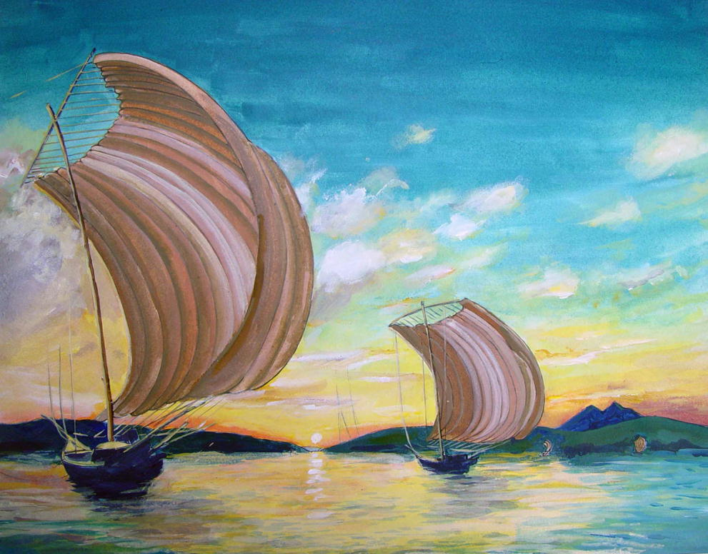
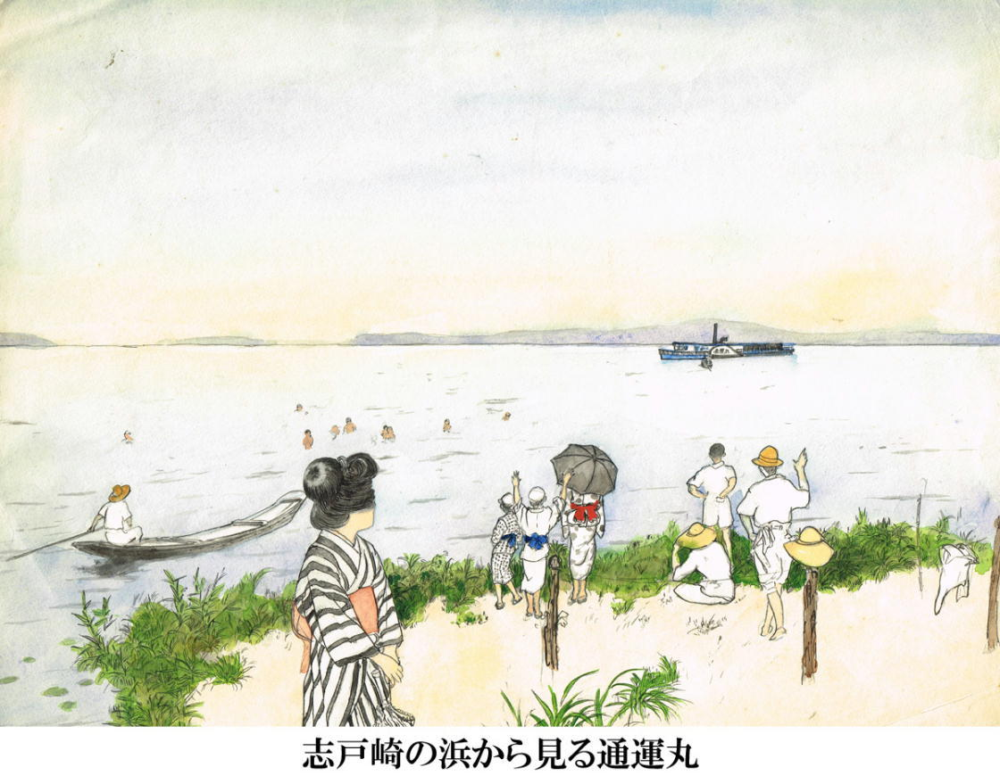
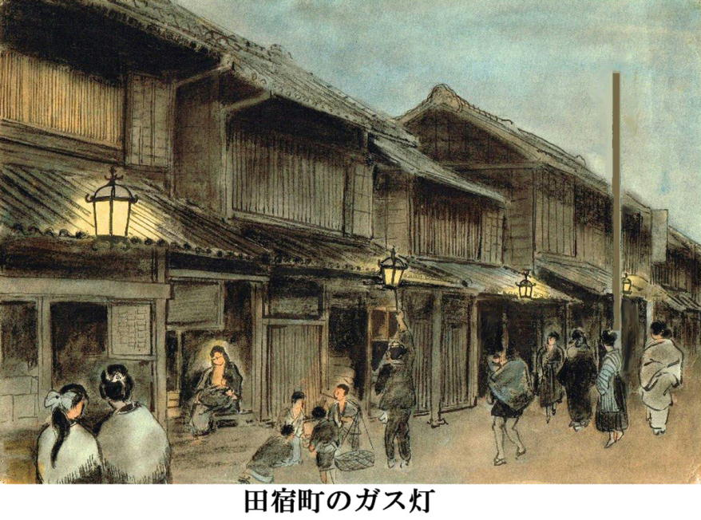
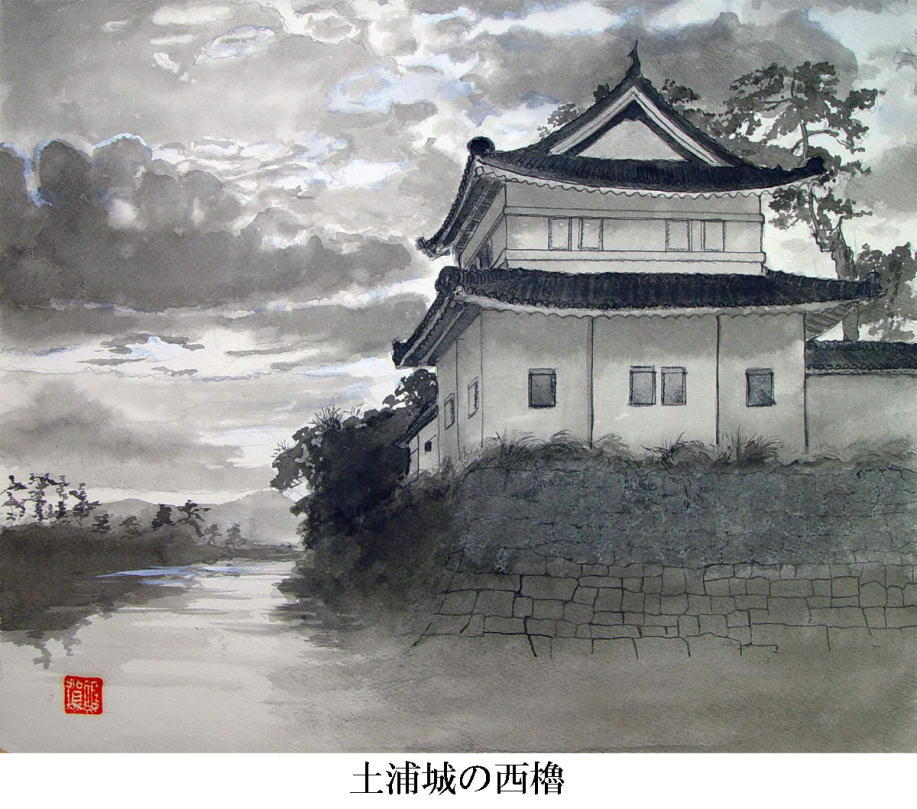
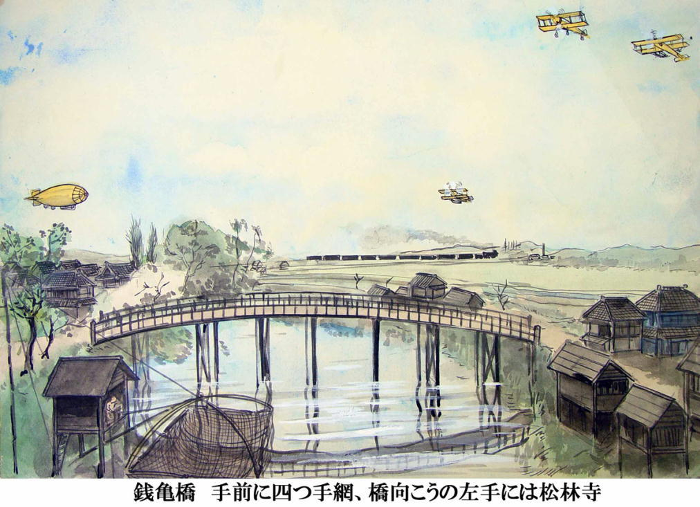

| 霞ヶ浦風土記 | |
| 佐賀純一 | |
| (2015) | |
霞ヶ浦風土記
風と波に生きた人々

新装版「霞ヶ浦風土記」と、英文版「Memories of Wind and Waves」の刊行にあたって
「土浦の里」に続いて「霞ヶ浦風土記」の英文版が刊行された。これらの書物には明治大正を経て戦後に至るまでの日本の人々の暮らしが「聞き書き」の形で記されている。「土浦の里」を創ろうと思い立った時から三十年、英文版「Memories of Silk and Straw」の出版から数えても十五年の年月が過ぎた。この間に読者は世界各地に広がり、欧米豪の文化人類学者・民俗学者・日本学研究者の中にはテキストとして使用する方々も多く、学生の教育にも用いられるようになった。
「霞ヶ浦風土記」は「土浦の里」の姉妹編として執筆されたが、英文版「Memories of Wind and Waves」の完成によって、私の当初の目的はひとまず達成されたと言える。そこでこの機会に執筆の動機と英文版刊行に至る経緯などについていささかなりとも明らかにしておこうと思う。
発端は、高校時代、長塚節の作品「土」の前書きを読んだことだった。執筆者は夏目漱石。彼はその中で次のように述べていた。
＊
「『土』の中に出てくる人物は、最も貧しい百姓である。教育もなければ品格もなければ、ただ土の上に産み付けられて、土と共に成長した蛆同様に哀れな百姓の生活である。先祖以来、茨城の結城郡に居を移した地方の豪族として、多数の小作人を使用する長塚君は、彼らの獣類に近き、恐るべく困憊を極めた生活状態を、一から十まで、誠実にこの『土』の中に収め尽くしたのである。彼らの下卑で浅薄で迷信が強くて、無邪気で、狡猾で、無欲で、強欲で、ほとんど余等（今の文壇の作家のことごとくを含む）の想像にさへ上りがたい所を、ありありと眼に映るように描写したのが、『土』である。
中略
『土』を読むものは、きっと自分も泥の中に引きずられる気がするだろう。余もさういう感じがした。或者はなぜ長塚君はこんな読みづらいものを書いたのだと疑うかも知れない。そんな人に対して余は、ただ一言、かような生活をしている人間が、我々と同時代に、しかも帝都を去る程遠からぬ田舎に住んでいるという悲惨な事実を、ひしと一度は胸の底に抱きしめてみたら、公等のこれから先の人生観の上に、また公等の日常の行動の上に、何かの参考として利益を与へはしまいかと聞きたい」
＊
日本最高の文学者として名声を誇っている漱石が、茨城という土地と、そこで暮らす人々を、これほど口汚く罵っていることが信じられなかった。私の祖父も父も開業医なので、農村の人々とも深いつき合いがあった。私は幼い頃から日常的にその人々をよく知っていた。漱石が長塚節の描く百姓像を信じ、「下卑で浅薄で迷信が強くて、無邪気で、狡猾で、無欲で、強欲で、獣類に近い」と記していることが何とも浅ましく、いい加減なものに見えた。「いつか、このような人間には描けない人々を描きたい」。医学部に入り、東京に住むようになってからも、その思いは常に心のどこかに息づいていた。
二十四歳の時に重い腎臓病を病み、二十九歳の時に心臓をやられて、勤務医として働くことが不可能になり、車椅子で土浦に戻ってきた。数カ月は家の中の階段を上ることも容易ではなかった。しかし衰弱から徐々に解放されて、父と共に診察室で患者さんと親しく面と向かい合うことができるようになった時、私は、生まれて初めて、「自分がいるべき所に、今、戻ってきたのだ」と実感した。
目の前に、大勢の人々が居た。「情が厚く、自信たっぷりで、時には強情とも見えるが、そこぬけに明るく、控えめで、それでいて、どこまでも押しの強い、都会の薄情さとはまるで反対の粋な生き方を知っている、自分流の生き方を生き抜いた人々」との出会いだった。今、自分が向かい合っているのは、文学にも、民俗学者の文章にも、研究者の資料にも登場したことのない人々だった。彼らは、どこにでもいるのだが、不思議なことに、誰も書こうとしなかった。無論、学者たちは、彼らの存在を全く記録しようとしなかったわけではない。彼らは学問的手法に基づいて話を収集し、記録した。しかしそれは資料としては重要ではあっても、生きた人間を感じることは困難だった。
私は、人々の話を「今ここで私が聞いているままに伝えたい」と思った。
日本版を創ると同時に、英文版の計画も進めることにした。英文版の理由はハワイでの経験にある。
ハワイの病院で勤務していた一年余り、暇があると、ハワイ大学の東西文化センターに通い詰めた。そこにはハミルトンライブラリーという膨大な蔵書があり、シンクレアライブラリーには日本語の書物も大量に保管されていた。私はこれらの図書館で日本という国がどれほど貧弱に伝えられているかを知った。そこには極度に偏った日本があった。
突然の病気で帰国をやむなくされたことは、今思えば僥倖だったのだろう。開業医としては新米だったけれど、祖父や父の長い間の患者さんたちは、新参者の私を最初から受け入れてくれた。
話を収録しようと決心した当時、明治二十年代生まれの人々もまだ健在だったし、大正生まれはまだ働き盛りだった。診察が終わるとテープを往診鞄に入れ、収録に歩いた。
「あの頃はやたらと蛍がいたからねえ、いくらでも捕まえて、袋にいれて、それで勉強をしたもんだ」鍛冶職人の沼尻さんは大昔の物語にしかないような話が本当にあったんだと聞かせてくれたし、桜村の塚本さんは「昔は桜川の橋を渡るときにはねえ、橋銭をとられたんだよ。個人が造った橋だから、橋番というものがいたんだ」と土浦の医院に病気の子供を背負って通った時の苦労話をしてくれた。今、そのあたりは研究学園都市になり、高速道路が走っている。
話を聞く時なによりも役だったのは父の絵だった。何か面白い話を聞きたいと思って訪ねても、そうたやすく糸口が見つかるものではない。ところが、鞄の中から父の描いた町の様子や田舎の景色の絵を取り出すと、たちまち記憶が蘇って、誰もが驚くほど雄弁になるのだった。話に夢中になって気がつくと、夕食の時間になって何度もご馳走になった。ある時は朝から夕方まで聞いてヘとへとになって、「先生、炬燵に横になれよ」と枕を用意してくれたこともあった。こうして、家族にさえ語ったことのない話を山のように聞くことが出来た。
話を聞きながら何よりも感嘆したのは、人々の、自分の人生に対する自信だった。文学にしばしば登場するひ弱な近代の日本人とは全く正反対の、自信たっぷりの人間がそこには居た。漁師も、船頭も、鳶職人も、馬車引きも、南海の戦場を敗走して生きながらえた元兵士も、芸者も、大工も、屋根葺き職人も、農夫達も、誰もが「ともかくもこうして私は生きてきたんだ」という誇りに支えられているように見えた。度重なる戦争や震災や、社会の混乱を越えて人々は生きてきた。その自信がそのように彼らを鍛え上げたのだろうか。向かい合うたびに独特の力を感じ、人生の味が、その顔に染みついているのを見た。
話をしていると、人々は驚くほど若返った。そして気がつくと私自身も不思議なほど元気になっていた。やがてテープの量は膨大になり、父も次々と絵を仕上げて、とうとう「土浦の里」が完成した。この時私は四十歳になり、英文版ができあがった時には四十六歳になっていた。
それから十余年、テープはいつの間に変色し、巻き戻すと、ちぎれてしまうほどの時間がたっていた。その間に、町は見る影もなく姿を変え、あれほど楽しい話をしてくれた人々も、ほとんど他界した。しかし私の頭の中には、その声が、楽しげな表情と共に鮮やかに蘇る。
人々は、漱石が想像もつかなかった人間の生き方を「土浦の里」・「Memories of Silk and Straw」の中に語り残してくれた。この英語版はドイツ、フランスの出版社でも刊行され、今、ポーランドでその準備がすすめられているのはとてもうれしい。
「霞ヶ浦風土記」は「土浦の里」の姉妹編ともいえる。かつての日本の多くの町がそうであったように、土浦地方の人々は水運や漁業と深く結びついて暮らしてきた。町の中を水路が縦横に走り、荷物を山積みにした大小の舟が川面を行き来し、柳の枝がゆれる岸辺では、子どもたちが水遊びに夢中になっていた。湖のあちらこちらの村はそれぞれに数十艘の漁船を持っていて、風が吹くと何十とも数え切れない漁船が、真っ白い帆を広げて流れてゆくのが岸辺から見えるのだった。
私の最も早い記憶は、終戦後間もなく、霞ヶ浦を航行する蒸気船にのって、祖母の実家に行った時のことだ。当時はバスも列車も切符の入手は困難で、四歳の私は祖母に手を引かれて二日間、駅に並ぶ人々の間に立って順番が来るのを待っていた。しかし祖母はついに買うことが出来ず、バスはあふれそうな乗客を乗せて次々に出発した。それを見ながら私は大声で泣いた。祖母は私を抱き上げて、「あんなバスに乗ったら押しつぶされちゃうからね、船のほうがいいんだよ」と慰めてくれた。そして言葉通り、あれこれと手を尽くして、切符を買うことに成功したのだ。
ポンポンと軽快な音を立てて走る蒸気船は、絵本で見た大海原の汽船よりもずっと頼もしく思えた。スクリューが水の中でぐるぐると回ると、真っ青な水が泡だって、もっと青い波がざあざあと追いかけてくる。私は興奮して、この神秘的な湖に強いあこがれを抱いた。
蒸気船を下りる時は、小さな艀に乗り移るのだった。波はまるで嵐の中の木の葉のように船を上下させる。その頃合いを見計らって小舟に乗り移るのは、大冒険だった。ところが着物を着た祖母は恐るべき身軽さで波の上を飛び、次の瞬間には艀に飛び移っていた。私は驚嘆し、ますます祖母を尊敬した。祖母の実家は湖畔にあったので、夕方になると数え切れないほどの帆引き船が、真白い帆を広げて、悠々と波の上を滑って行くのが見えるのだった。対岸の村々は森の中にかすんで、夢のように美しかった。その美しさは私が高校のヨット部員として湖を楽しむ頃まで保たれていた。しかしある時を境に、何もかもが変わった。
昭和四十年代になって霞ヶ浦総合開発事業が本格化すると、湖は全く異質の姿に造り替えられた。砂浜は高い堤防になり、水はアオコで見る影もなく汚染し、異臭はあたりの村や町を包み、湖を取り巻く村々は廃墟のように寂れた。ちょうどその頃、病に倒れて帰国した私は、病院のベッドの上で「土浦の自然を守る会」創設のための草案を練り、退院後直ちに有志と共にこの会を発足させた。当時の私の脳裏には、祖母が蒸気船から艀に飛び移った鮮やかな記憶がどこかに残っていて、あの青い波を取り戻したいという願望が、行動への力を生み出したのかも知れない。
多くの人々の努力によって、水質はいくばくか改善されたが、湖を取り巻く人々の暮らしはすっかり変わってしまった。堅固な堤防は安全と便利さをもたらしたが、子どもの歓声や漁師たちの陽焼けした姿はどこにも見えなくなった。
しかし「霞ヶ浦風土記」は、人間と湖とが織りなしたすばらしい日々の物語をいつまでも語り続け、青い波や水辺の賑わいにあこがれる人々の心に深く生き続けるに違いないと、私は信じている。
＊
「霞ヶ浦風土記」の英文版「Memories of Wind and Waves」は「山口かんブックシリーズ」の一冊に加えられることになった。このシリーズは平成九年、講談社インターナショナルの編集局次長・スティーブン・ショウ氏の発案で開始された。「山口かんブックシリーズ」の名の由来は、佐賀家に五十余年間家族の一員として生涯を過ごしていた山口かん氏（愛称・おかんちゃん）に依っている。おかんちゃんは私が二歳の時に子守りとして住み込み、以後、数年前までわが家の家事一切をまかなっていた。私にとって、おかんちゃんの存在しない佐賀家は考えられない。講談社インターナショナルのスティーブン・ショウ氏は、日本文化を世界に広めるということに情熱を傾け、一連のノンフィクションブックシリーズを企画、実行に移しつつあったが、私との会話の中で彼女の存在を知り、「山口かんブックシリーズ」が実現した。
「山口かんブックシリーズ」は平成十一年に最初の一冊が世に送られ、末尾に記した四冊の書物が既に世界に向けて刊行されている。おかんちゃんは現在、肝臓病のため入院中だが、このシリーズの一冊が生まれるたびに、幸福そうな笑顔を浮かべ、本を抱きしめている。
これらに続くものとして「霞ヶ浦風土記」の翻訳が決定されたが、その実現は難事業だった。ショウ氏はこの書物の持ち味を十分に生かし切れる翻訳家を探すためあらゆる努力を惜しまなかった。何人もの著名な翻訳家がその作業に挑んだが、いずれもショウ氏を納得させることは出来なかった。これを見事に成し遂げて下さったのは、同志社女子大学教授ジュリエット・Ｗ・カーペンター氏である。日本文学・芸術の研究者として知られるカーペンター氏はこれまで山口誓子の俳句、円地文子、安部公房などの純文学作品、山本周五郎、司馬遼太郎などの歴史小説の翻訳を手がけ、これらの分野における最高の翻訳者の一人に数えられているが、そのカーペンター氏が「霞ヶ浦風土記」の翻訳を引き受けて下さったため、出来映えはショウ氏を満足させるのに余りあるものとなった。こうしてここにようやく完成をみた作品は、必ずや諸外国の読者の心を打つに違いないと確信している。ここに改めてジュリエット・Ｗ・カーペンター氏に対して、心からの敬意と感謝を捧げる。
また、講談社インターナショナルの編集局のみなさま、とくに、森安真知子氏には格別にお世話になった。心から御礼を申しあげたい。
「霞ヶ浦風土記」を常陽新聞に連載し、更に単行本として出版してくださった常陽新聞社社長・岩波嶺雄氏、並びに、高校生時代からの友人、株式会社イセブ専務稲葉浩吉氏には新装版の刊行に当たり何もかもお世話になった。衷心より御礼申し上げる次第である。
最後になったが、私は、父に対して最大の賛辞と敬意を捧げたいと思う。父は昨年六月、自分が育てた木々の茂る木陰の部屋で、九十歳の大往生を遂げた。父は開業医としての生涯に徹し、わき目もふらずに働いてきたが、六十歳を過ぎてから絵を描くことに喜びを見いだし、数百枚の絵を描いた。この本に収録された絵はその一部である。
私は父の絵を見るたびに、父がどれほど深く人間を愛していたかということを痛いほど感じる。もしこれらの絵がなかったら、人々の話は全く別種のものになっていたに相違ない。父の絵がいつまでも見る人の心に生き続けてほしいと願っている。
佐賀純一記す
平成十四年四月吉日
付記・「山口かんブックシリーズ」既刊本
１「遠い谷間の村で」ブライアン・モーラン著「A FAR VALLEY」Brian Moeran
２「少年Ｈ」妹尾河童著「A BOY CALLED H」
３「日本伝統音楽集成」ウイリアム・マーム著「TRADITIONAL JAPANESE MUSIC and MUSICAL INSTRUMENTS」William P. Malm
４「花を運ぶ妹」池沢夏樹著「A Burden of Flowers」
旧版まえがき
ジュヌビエーブ・ナバール（翻訳者・民俗学者）
三年以上前のことになりますが、佐賀純一先生の「田舎町の肖像」（図書出版社刊、初版名・土浦の里）の翻訳を手掛けさせて頂いた時は、フランス語に直しながら非常に楽しく、また同時に、大きな感動を覚えながらの仕事でもありました。先生に思い出を語る人たちの肉声がじかに聞こえてくる思いがしましたが、本当に、佐賀先生は、人の声を響かせる筆力を持った数少ない書き手の一人です。録音された談話を文字に起こし、内容を凝縮したうえで、しかも話者の人物、話しぶり、味わいを文章に彷彿とさせるのは、それだけで一つの芸術です。同書を訳しながら時に笑いを、また時に涙を抑えることが出来ませんでした。
翻訳を終えた時私が感じたのは、そして今も感じ続けているのは、自分たちの遠い日の思い出を天真爛漫に私たちに打ち明けてくれたあのお年寄りたち一人一人と本当に知り合いになったような気持ちがするということです。今回もまたこの『霞ヶ浦風土記』を読んで、生き生きと生きている様々な人たちと出会った大きな歓びを感じました。たとえ、その中にはもうご存命ではない方があるとしても。
それはまるで、たとえば、桜井隆雅さんと一緒に桜井家の船の上で何日も過ごしたかのような気持ちです。桜井さんのお祖父さん、お祖母さんとも知り合ったように思えます。霞ヶ浦の岸から岸に沿って、この小さい船を丈高い葦のさなかに浮かべ、渡り漁をなさっていた頃に。その船の上で私はお祖父さんがしてくれる色々なお話や、お祖母さんが教えてくれる言い伝えの話に耳を傾けて過ごしています。また、小さな隆雅君にお祖父さんが吹き矢で雀を射るやり方を手ほどきしている間は、私はお祖母さんがお洗濯しているのを眺めたりして過ごします。「何しろ暇だから、朝から晩までやってっからうまくなったんだよ」と桜井さんが言っているように、当時、こうした人たちには暇な時間がたっぷりあったのでした。どれほど暇だったかというと、そのお陰で桜井さんのお祖父さんは正真正銘の吹き矢名人に、私が思うには、弓道の大名人と同じほどの名人になれたくらいです。お祖父さんは時間にも、空間にも、静けさにも、精神集中にも事欠きませんでした。「静かなもんだ。波の音とやわら渡る風の音しかねえ」。こうした思い出話に耳を傾けながら私は、水底の巨岩が透けて見えるほど透明な霞ヶ浦の水を見つめています。水中の岩は漁師の人たちの道しるべの役に立っていました。漁師たちは霞ヶ浦を隅から隅まで知り尽くしていたのです。羅針盤も航行機器もなしで、漁師たちはどんな時でも自分たちのいる位置を正確に知っていて、水面すれすれの岩礁に衝突するのを避けることが出来るのでした。漁師たちは大きな岩礁と岩礁の間を抜ける水路もことごとく知り尽くしていました。こうした所には魚の群れが好んで隠れているものでした。漁師たちはまた天候の変化を予め教えてくれるあらゆる自然の兆候を読む術を心得ていて、そのお陰で命の助かったことが何度となくあったのでした。何世紀にもわたって漁師の家系が代々続くなかで得られまた伝えられてきたこうした様々な知識、書物からは得られない、経験によって培われてきたこうした智慧の宝庫は、最後の漁師が亡くなったらどうなってしまうのでしょうか。
それから、鈴木はまさんの話を聞きながら、私は、都会を見たくて二度も東京に家出した十九歳の頃のはまさんとしばらく行動をともにします。その後はまさんは高瀬船の船頭に嫁入りして船の上で暮らすようになりますが、何度となく逃げ出したいと思ったことでした。はまさんが育ったお百姓の暮らしとはあまりにも違う苦労に満ちた生活だったのです。しかし、人生の苦しい時に常にはまさんが見せた機転と精神力の素晴らしさに、私はすっかり魅了されてしまいました。私にとって本当のヒーローは鈴木さんのような人たちであって、有名な小説や映画の主人公ではありません。私が本当に偉大だと思うのは歴史や伝説に出てくる勇ましい軍人などではなく、どこにでもいる素朴な人たち、なろうとしてヒーローになるのではなく、人生の逆境に立ち向かう中で、大変な勇気を示したり、粘り強く頑張った結果、いつのまにかヒーローになってしまった人たちなのです。計り知れない明日への不安に立ち向かい、喜んで人生に飛び込んでいき、運命が定めた人生を責任をもって引き受けた人たちです。
昔のことを話す語り手たちの胸の中で既に思い出そのものとなっている人たちに出会うのはまたなんと不思議なことでしょう。思い出の中の思い出。例えば鯰の九兵衛じいさん。真冬の霞ヶ浦の凍りつくような水に素裸で潜って岩の下に隠れている鯰を捕る九兵衛じいさんは白い総髪に白い髭、まるで仙人のようでした。また、高田保青年との出会いもありました。痩せて、暗い顔をして、お友達の学生さんと二人の芸者さんと一緒にやって来た高田さんは霞ヶ浦のほとりのあの小さな蒸気宿に一年逗留することにしました。宿の主人はその話をしてくれた桑原節さんのお父さんでしたが、高田さんは桑原家の養子になったかのようでした。それから、染め織物の渡り職人の人たち。こうした職人さんたちは一つの紺屋にやって来て、数週間、あるいは数カ月働くと、またそこを去り、こうして日本中を渡り歩くのでした。成瀬さんも「ああいう人は神に近い人なんでしょう」と言ってますが、私もそういう人生がおくれたらと、なんともうらやましくてなりません。
私はまた、沼尻里さんがありありと再現して下さった風景の色彩の美しさにも大変驚かされました。その詩情豊かなこと...。そして、漁師の人たちの暮らしと仕事の悪条件にも拘わらず、世界で最も古い職業の一つに従事する歓びと満足を次のように語る表現の見事さ。藤井進さんの言葉です。「帆をぐっぐっと上げるつうと、帆ん中に風が吸い込まれて、フーッと膨らんでな、空いっぱいに帆が拡がる。それはよ、船の下から見るつうと、帆はえかいから、ほんとに空がみんな帆になっちまったかと見えるほど膨らむだよ。それを見るつうとな、ほんとに気持ちが良くなって、晴れ晴れとすんだ。動力船ではああた気持ちはねえな。手漕ぎの船の時代の特別な気持ちだったんだな、あれは」。藤井さんはこうも話しています。「あの頃は周りには家一軒なかった。魚と水鳥しかいなかったんだ。そうたとこで何日も暮らしてるつうと、まるで仙人だ。誰もいねえから口もきかねえ。ときどき水鳥がバタバタって飛び出して、空が黒くなるほど群れなして飛ぶ。葦原の向こうに日が沈むと、小さくなって寝る。そして目が覚めると、まだ暗くてな、沼の上に月が出たりする。竃に火をつけて煮炊きをしてるつうと、月がだんだん薄くなって星も消えて、冬の空が白くなって、それから赤くなる。これがどうにもきれいだ。あのあたりには渡りの船もなかったから、船の上に煙を立ててるのは私ひとりだったね」。それから、根本さん夫妻のあの感動的な証言もありました。「その糸を手繰る時の感じつったら、それこそやった人間でなければわかんねえ楽しい気持ちなんだよな」と奥さんが言えば、ご主人は「漁やってるものが何が生きがいだってゆって、魚がかかった時の感触がなによりだよ。あれが楽しくて、漁つうのはやめられねえんだ。そんでも、おめえも慣れねえうちはずいぶん苦労したっけよな」と話します。
それに、こうした生き方と風景が何千年も前からついこの頃まで（と言うのも、この本で思い出を話して下さった方の中には今でもお達者な方たちがいられるのですから）連綿と続いてきたこと、そしてそれがほんの三十年くらいの間に途絶えてしまったことを思うと、気が遠くなりそうです。たしかに、楽園だったというわけではありませんし、殆どの人たちにとってとても生活が厳しかったのは間違いありません。藤井さんもこう言っています。「んだから、今の人間はありがたいと思わなけりゃ罰があたりますよ。とにかく私らの時代には百姓だけではとても食ってはいけねえんで、なんでかんで漁をやったわけだ」。また、菅谷武衛門さんはこう話しています。「ところが今は大したもんだ。年寄りなったつうだけで年金が下りる。医者のかかりはただ同様だ。わしは酒は毎晩一合二勺、牛乳毎日一本、新聞を全部読む。月が三つ又沖さ出る晩には縁側さ出て酒を飲みながらしみじみと眺める。九十年の間に何が変わったって、漁師がこうしたことが出来るようになったつうことだな」。
しかし菅谷さんの縁側からは何が眺められるのでしょう。なにもかもあまりに変わりました。霞ヶ浦の沿岸は大部分干拓されました。柳は姿を消しました。浦に浮かぶ大きな白帆もありません。周辺の丘を覆っていた豊かな森は伐採されました（大部分は戦争中に。小嶋伊久之助さんの思い出を聞いて下さい）。霞ヶ浦の水は濁りました。魚はめっきり少なくなりました。淡貝もしじみももうとれません。子供たちが夏中裸で遊んでいた、長くのびる白い砂浜ももうありません。昔は豊かだった村々もさびれました。沼尻里さんは「今は私の家も周りの店もみんななくなって、ひっそりしちまった。今の人間はあの頃の景色というものは想像もできないねえ」と言っています。鴨や雁はほかの世界に飛び去ってしまいました...。
そして、「今の人にはとても想像できない」というのが何かというと本書のお年寄りたちの口癖のようです。そうです、残念ながらそのとおりです、しかし、お年寄りたちの記憶と佐賀先生のお陰で、私たちは空想の上で現在の景色に昔の景色を重ねることが出来、また、一旦変化したら絶対元に戻らないというわけではないと思い至ることも出来ます。
そう、なぜ霞ヶ浦を以前のようにもう一度海とつなげてはいけないのでしょう？ なぜ干拓地を霞ヶ浦に返してはいけないのでしょう？ なぜ貝や鰻が戻ってきてはいけないのでしょう？ なぜもう一度森を取り戻すために植林しないのでしょう？ 実はその方向に向かうことをアフリカのサヘルでしている人が私の友人にいます。高橋一馬さんは他の日本の若者たちと一緒に地元の人たちと協力して、世界で最も恵まれない地方の一つといわれる所で、森を再生させるという、超人的な努力を要する仕事に何年も前から取り組んでいます。樹木が育てば雨の降り方がよリコンスタントになり、土は豪雨に流されなくなり、作物の収穫が豊かになり、チャド湖の後退は止まり、魚が戻って来ます。夢物語ではありません。この世界では全て可能です、滅亡も可能なら、また同様に生命と希望も可能です。物質的進歩と生活の快適さを求める以上は環境破壊は宿命だ、というわけでは必ずしもありません。進歩はその結果として破壊がつきものだと決まっているわけではないのです。環境破壊という代償を払わなくとも、人間が人間に搾取されず、慎ましくて快適な生活をおくる社会を構想することは全く可能なことだと私は思います。
しかし、私たちが可能性をイメージすることが出来るためにも、思い出すこと、忘れないことが大切です。環境への新しい根づき方を創造していくことが出来るためにも、人間は、これまで母なる大地との間に結んできた絆の生き生きとした記憶を護っていかなければなりません。本書で自分の思い出を語って下さった方々と、このかけがえのないお仕事に不屈の情熱で取り組まれている佐賀先生に感謝を棒げるものです。
〔訳〕末永朱胤（言語学者）
第一章 高瀬船
船頭の女房
鈴木 はまさん
（明治三十九年生まれ 土浦市川口 昭和五十六年採録）
鈴木さんは今年八十九歳。すこぶる元気だ。最初にお会いしたのは二十年も前、高瀬船の船頭の山口八五郎さんの紹介だったが、その話のうまさとエネルギーにはすっかり圧倒されてしまった。何よりも感動したのは、波乱万丈の人生を生き抜いたその自信に満ちた明るさだ。リズムに満ちた話しぶりを聞いていると、目の前にはるかな日々がまざまざと浮かんでくる。先日再びお目にかかったが、迫力は二十年前そのままでこんな風に老いられたらどれほど楽しいだろうとつくづく思う。ここに記すのは、はまさんの一代記というべきものだが、かつて霞ヶ浦・利根川に暮らしていた人々の姿をあますところなく語っている。
高瀬船の船頭のところへ嫁に行ったというのも、仲人の口車に乗せられたばっかりだよ。高瀬船の船頭というのは地主と同じで、船を動かしているだけで金が入る。こう聞かされて、親はその気になっちまった。早くこの娘を嫁にやんないとどんなことになるか心配で仕方がなかったんだよ。まともな商売してる男なら百姓でも船頭でも良かったんだな。なんでそんなに心配したかというと、これがまた話し始めれば、それはそれは懐かしい、長い話になるけんともよ、まあ聞いておくんなさいよ。
私の家は麻生の百姓で、小さい頃からそれはそれはオテンバ娘だったが、人一倍の親孝行でもあったんだ。秋の穫り入れが終わって山が色づく頃になるつうと、毎朝タキギ採りだ。冬のタキギをためるために毎朝コケコッコーと鶏が鳴く頃になるつうと草刈篭背負って、みんなして山さ入ってぐ。十二、三からですよ、そうですとも、昔はこどもだろうとなんだろうと、家のため、親のために一生懸命働いたもんだ。小さい体に篭しょって、背よりも高い熊手を持ってな、仲間と山ん中に入って松葉をさらう。昔の百姓はみんな貧乏で、自分の山を持ってるなんて者はほとんどいなかったが、枯木とか下に落ちた松葉を採る分には山主も文句は言わなかったからね。そんで毎日、朝飯前に山に入って、さらった松葉を大きく丸って、担いでくる。
西風が吹くと喜んだな。枝が風でザワザワッとゆすぶられっから、松葉がバラバラッと地面さ落ちる。大西風が吹くつうと、風の中に出て、ああ、明日はいいかせぎができっと、と子どもながらににこにこしたもんだよ。その頃の麻生には漁船がいっぱいでな、山に入って見わたすと、帆引きの白帆は点々と出てる。大徳網の網船も見えるし、浜では女らが捕った魚を何百枚とムシロを広げて干してる。それはもう盛んな景色が広がっていたもんなんだ。
霞ヶ浦でも遊びましたよ。遊びましたとも。あの頃の楽しさつったら決して忘れられませんよ。何しろ私はあのあたりではオテンバで鳴らしてたから、男の子らも女の子らもみんな引きつれて、夏になると、みんな素っ裸。泳いだり、魚を捕ったり、砂浜を駆け回ったり、それはそれは楽しかった。あの面白さは今の時代のこどもらには決してわかるまいねえ。
浜はそれこそ今からじゃ想像できないほどきれい。浜の真砂という言葉がありますがね、全くその通り、砂はひとつぶひとつぶが何の汚れもない。遠浅の砂浜でねえ。水はどこまでも澄んで、そのまま口つけて飲むのは当たり前だ。浜沿いの漁師の家なんぞは、井戸をもっている必要が全然なかった。あの辺りで井戸を持ってたのは三軒に一軒くらいだったろう。洗濯だって風呂を沸かすんだってみんな湖の水を使っていたんだよ。
砂浜が、朝だの夕方にゃピカピカ日に照らされて光ってねえ。広くて、白くて、何処までも続いていて、その砂の上を漁師らが忙しく歩きまわっているし、女らは魚を運んでくるし、子どもらは後ろにくっつかってワイワイ騒いだり。とにかく賑やかだった。しじみなんども、バケツに一杯でも二杯でも採れたんだ。膝小僧ぐらいまで水に入って、砂の中を足でかき回していると、いくらでも採れる。淡貝もとれたな。
魚もあの頃は捕れたよ。浜沿いの家は軒並み漁師だった。帆引き漁師も多かったが、大徳網をやってる家も二軒あった。庄左ヱ門と権兵衛つう網元の家で、周りの百姓は手間取りにみんなして手伝いに行ったよ。娘らも若い衆らも田仕事の合間に飛んで来て、手間取りする。何しろ金になっから。百姓仕事は、その日働いたから幾らというふうに銭は入らないが、網元のところで働けば、一日幾らというふうに現金が入ったからねえ。それが魅力で、誰も彼も働きに行ったもんだ。
大徳網を引くときには神楽桟を浜に何台も仕掛けて、威勢よく引く。子どもらは、見ているだけでワクワクしちゃって、なんていったらいいかわからない気持ちだ。大徳網は日暮れから、夜も真夜中、明け方までやる。網船つうえかい船が、網を積んで沖さ網を降ろして、ズーッと網を回しちゃうのよ。そうしてその網を神楽桟で巻く男らが、八人も並んで、エンヤラエンヤラ、捻り鉢巻で足ふんばって、それこそ汗をながしてなぁ。力瘤つくって、エンヤラエンヤラ巻き上げる。男らの力で何百間もある網をひろげた麻縄を神楽で引いて、女らは掛け声だ。
ホラキタ、ホラキタ、ホレホラホレ、ホラホラホラホラ、
えっさあ ほいさ やれ引け それ引け そうだよ そこだよ
麻生に浮島 木原ぢゃ名門 寒中 素はだし 夏はふんどし
スイカの皮でも とっとけ 漬けとけ えっさあ ほいさ それ引け やれ引け
浜の人は荒いからデレデレしてたら、怒鳴られっからよ。みんな張り切って、それはにぎやかだ。私の家のおとっつぁんも百姓の暇に手間取りに出かけて、神楽を引いたがね。いい体格してたよ。神楽に巻いて汗をボタボタ垂らすつうと、筋肉がピカピカ光って、今の人らみてぇな、へなちょこりんとは出来が違うよ。捻り鉢巻に六尺褌。日焼けして、顔も肩も背中も真っ黒だ。綱がだんだん巻かれて、いよいよ網が浜に近くなったれば、今度は男だの娘ら女等が綱につかまって、ソレソレソレソレやれ引け それ引け そうだよ そこだよ えっさか ほぃさぁ 夢中で引くわけだ。
「つかまってばかしいねえで引っ張れ、麻生に牛堀 潮来じゃ名門 エッサア ホイサ」
網の一番細かい魚の入っている所を、「シド」って呼んでたんだが、そこが近くに寄ってくる頃には、みんな汗ぼったりだ。魚を浜さ上げたれば、すぐに魚は篭にいれて、女らがより分ける。男らは網をまた船にのせて、沖に回しに出る。そうした具合いに、一晩に三回ぐらいやったんだ。徹夜なんてへいちゃらだよ。誰もぽったりとも寝やしねえよ。だってそうだろうよ、そうしなけりゃ魚が捕れないと誰もが信じてんだから。寝ねえのが当たり前だったんだ。
だが、思えば魚はいたんだなぁ。岸から届くぐれぇの所に網を下ろして、そんでいくらでも入ったんだから。
大正の中ごろ、ワカサギはえかいバケツ一杯五銭だったっけな。べらぼうに捕れた。引き子らはわかさぎをもらってもいいんだが、毎日そんなにもらっちゃしゃあねえから、ぜんこ（銭子）もらって帰るわけだ。大の男は一日で一円。一円といったら大金だよ。
網元といったら、たいした威勢でな。毎日何十人という人を使って魚を捕って、その他に行商人が大勢出入りして、とりたての魚を仕入れに来る。そんだから網元つったらそれこそ本当にお大尽つう感じだな。働いた人は飯を食いほうだい。酒も飲みほうだいだからな。腹がすくと「大徳さ行くべか」なんて誘い合って、景気がよかった。
魚の買い付けには土浦の問屋が自転車で来た。嘘なんどではないよ。本当だよ。荷台にえかい箱を幾段にも積んで、がたがた道を鳥打ち帽子に着物姿でペタル踏んでな、買う方だっていっしょうけんめいだ。今の人と体が違うから十里や十五里へいちゃらだ。麻生なんぞはまだ近いほうだ。武蔵屋さんの小僧さんなんぞ、北浦の問屋まで買い付けに行って、帰りに麻生に寄って買い付けて、荷を山ほど積んで帰ったんだから。ドッタンバッタンと外輪を回す蒸気船で買い付けに来る問屋もあった。通運丸は永作さんていう汽船宿に入ったからな。この船を利用して荷を送る事もあった。
網元は正月になると、大盤振舞だ。わかさぎのてんぷら・金ぴらごぼう、それに特別に銚子から生蒸気で運んでくる海魚なんぞを買って、酒を出して、普段出入りしている人間に存分に飲んだり食ったりさせてくれる。ほんとにあの頃の麻生は漁師の天下だった。朝も夕方も、夜の夜中まで船がいっぱいカワに浮かんでなぁ。そりゃ見事なもんだったよ。
こうやって浜で楽しくやってるうちに十五になった。そしたらおっかさんが、女は裁縫を習わなければだめだてんで、裁縫所に通った。先生は士族の奥様だ。今の麻生はほんとに変わっちまったがね、あの頃はまだ江戸時代の名残というものがあった。三好さんでも裁縫を教えていたが、元麻生の家老の家で、蔵が三つもある。米俵が何千俵も入って、家の周りは堀がぐるっと回してあるし、まるでお城のような構えでな。後で土浦に三好ボタン工場をつくったのも、この三好さんだ。漁師や百姓の娘らは、この家のご新造さんに、お裁縫・行儀見習いに行った。
月謝は五十銭。これは全部自分で稼いだ。やっぱり松葉さらいだよ。その頃麻生には瓶を焼いている焼物屋があって、そこさ持って行ぐと、松葉ひと束六銭で買ってくれる。月謝はこれでまかなって、親には一切金をもらわなかったよ。こうやって十七の歳まで、ほんとに親孝行していたんだよ。ところが、ある日、反乱を起こした。それつうのは、私の姉が東京のお屋敷に奉公に出ていたんだが、しばらくぶりで帰ってきた。その姿を見たらびっくりしちまった。髪飾りから着物、帯、帯留め、履物、何もかも田舎の者とは大違い。絹の財布の中には見たこともないようなお札が入ってる。なんだ、ばかばかしい、こうた田舎でくすぶってたらだめだ、東京だ。東京さ行かねば損するぞ、兄貴も日本橋の請負師の下で働いてるし、なんとしても出るに限る、そう思って、なんとしても出て行くという気持ちになった。ところが親は許さない。まだ二十歳にもならない娘が東京に働きに出るだなんて、とんでもない、というわけで、話にもなんにもなんない。私は悔しくて、友達のマキつう娘と山に入ってな、あいたーさみたさに、怖さを忘れ、なんて流行歌を毎日歌ってた。そしたらあの大正十二年の関東大震災だ。
東京は灰になっちまった。ああ、姉さんだの兄貴はどうしただろうと心配になった。するとしばらくして兄貴が帰ってきたが、東京は大変な景気だという。焼け野が原になっちまったが、バラックがすぐに建って、大変な建築ブームだというんだ。よーし、これを見ないでなるものかと、心に決めたね。それでマキと語らって、風呂敷包ひとつ持って家出した。十七の時だ。
さあ、汽車に乗って上野に着いたが、西も東も分からない。どこに行ったら働けるか、見当もつかない。そしたら目の前に玉川旅館と金文字で書いた看板の木造二階屋があって、前の塀に「女中求む」と張紙がしてある。「ごめん下さい」と入って行った。
「あんたら、何しに来たの」
「女中になりたいんだけども」
「ああそう、それならこっちへおいで」
女中頭が出てきて年と名前を聞くから、二人とも二十歳で、偽名を語った。するとそれより深くは何にも聞かない。これは田舎もんだから都合がいい、使ってやろうと思ったんだろう。前掛けを出して、これを締めて料理を宴会場に運びなさいという。それで数えて、五回お膳を運んだ。そしたら何とはなしにやんなっちゃった。
「駄目だ、こうたとこは、気に入んねえ。こうたお膳を持って歩くような仕事をしていたんでは東京に来たとは言えねえ、出っちまあべ」
マキを促して、前掛けを台所さ畳んで、風呂敷包抱えて、裏木戸から風を食らって逃げだした。振り返ると誰も追っかけてこねえ。そんでちょっと安心したが、さて、どこさ行くべということになった。
「兄貴から、東京には亀戸という有名な天神様があって繁盛してるという話を聞いていたから、これから行ってみべか」そう言うと、マキも行ってみべという。そんでどんどん歩いて、ようやく亀戸までたどりついた。そしたらなるほど天神様がある。ところが気がついたら腹ぺこだ。もう一歩も歩けねえ。こんではしょうがねえてんで、帯の間から虎の子の五円札を出して、稲荷鮨を買って、藤棚の下で腹いっぱい食べた。そしたら元気になったから、今度は本所の方へ歩いて行った。
あたりはまだいたる所焼け跡だ。そっちこっちに家は建ってるが、まだ空き地だらけなんだ。まったく大震災というのはこんなにひどかったのかとあらためてびっくりしたね。そんな中を歩いて行ったら太平町という所にきれいな電灯のついたカフェーがあった。
「紀ノ国屋」というしゃれた看板が出てる。ああこれが東京だ、よし、これだ、ここに入ってみべ。
「ごめんください」
働かせて下さい。こう言うと、向こうは気に入った。すぐに働いてくれという。いい馬鹿らが飛び込んで来たと思ったんだろう。店の主人は太った中年の女だったが、大喜びで、真っ白いエプロンを出してくれる。それを着物の上から胸高に締めて、べったり白粉を塗って、店に出た。すると大きなラッパの蓄音機がくるくると回って歌声が流れてる。
「あいたーさ みたさに こわさーを 忘れ」
天井からは何とも素敵な電灯が下がって、窓には刺繍のあるカーテンだ。渋い色のカウンターの向こうにはボーイが蝶ネクタイをして、ガラスのコップが壁にきちんと並んでる。ああここだ、俺が来たかったのはこうたとこだったんだ。さあ、いっぺんに気に入っちまった。
何しろこっちは十七娘だ。田舎っぺとはいいながら、娘盛りだ。その上てきぱき働くから主人も喜ぶ、客には人気が出るで、それは大変なもてよう。チップが一日で十円も入る。嘘なんかじゃあないよ、何でこの歳になって嘘なんぞ言うものかよ。
いいかい、あの頃は大変な景気だったんだ。オリンピック景気どこんの騒ぎじゃない。とにかく東京中が灰なんだから、これを立て直すのに、毎日突貫工事だ。大工、左官、鳶、材木屋、建具屋、それこそ建築に関係のある人間は大忙し。それで金も唸るように入る。大した腕の無い叩き大工だって引っ張りだこなんだから、年期の入った大工なんぞは肩で風切って歩いてるよ。そんな兄さんらが夕方になるつうと、遊びに来るわけだ。そしてこっちをなんのかのと言いくるめようとして、金を握らせる。こっちはそれ、東京の人間は生き馬の目を抜くほど恐ろしいということを聞いているから、絶対に騙されねえぞ、と心に決めて、お金は貰うが、言うことは聞かない。それがまた人気で、店は大入満員だ。あの頃は「船頭小唄」が大流行。レコードが発売されて、どこもかしこも「俺は河原の枯れすすき」とやってる。
死ぬも生きるもねえお前 水の流れになにかわろ
おれもおまえも 利根川の 船の船頭で暮らそうよ
声はよくなかったけれども雰囲気があったのかな、私がレコードに合わせて歌うとみんながシーンと聞いて、それから大喝采だ。
「なぜに冷たい吹く風が 枯れたすすきの二人ゆえ あつい涙の出る時は 汲んでおくれよお月さん」
ずいぶんいろんな男に色目を使われたっけねえ。中でも服部時計店の店員で、三十一になる男が客で来ていたが、私のことをほんとに気に入って、毎日通って来た。そしてその度に一円、二円とチップだ。着物もいろいろと買ってくれる。おかげで行李にいっぱいの着物になっちゃった。この男は奥さんに死なれて、どうも私をもらいたかったらしいんだな。
ある時、堀切の菖蒲園に行こうと誘う。それで、これは危ないな、と思ったから、主人に、服部の旦那がこれこれです、と話をすると、駄目だ、若い娘が男と二人きりで出かけるんでは心配だという。何しろ私は人気があって、おかげで客の入りがとてもいいもんだから、この娘を傷ものにされたら大変だと主人は思って警戒したわけだ。ところが服部の店員はどうしても連れて行くという。それで主人も困って「はまちゃんだけでは出しかねまするが、店のコックとボーイと一緒なら行かせましょう」とこう向こうに話した。そしたら向こうは、「それでいい」という返事。それでその時はボディーガード付きでデートというものをしたんだが、考えると滑稽だね。
まあそんなわけだから、金がどんどん溜って、三月目には百円も溜った。それで私はどうしたかというと、家さこの金を送ったんだ。あの頃の田舎の百姓は貧乏だろうよ。親も苦労しているだろうと考えて、送ったんだ。そしたらすぐに兄貴が私を連れ戻しに来た。
どうして分かったんだろう。びっくりした。ところがこれが子どもだったんだな、太平町のスタンプ、これでバレちまったんだ。兄貴が店に乗り込んで来て、主人には四の五の言わせねえよ、妹を連れ戻しに来たんだ、文句あるのか、てんで、否応なしに連れ戻された。ところがマキは帰れねえ。はらんじまったんだ。いつの間にああたことになったのか私もわかんなかったがとにかく腹が大きくなってきて、男といっしょになるつうんで、そのまま東京に居座ったんだ。
田舎の親は心配してたんだねえ。家出して、行方知れずになっていた娘が三月で百円も仕送りしてきた。これはただ事ではない。恐らく茶屋女になって、体でも売って金を稼いだんだろうと、こう疑ったわけだ。まあ親とすれば当然だ。ところがこっちはそんなこととは無関係だったんだから、疑われれば腹が立つ。親が苦労しているんだろう、家が貧乏しているんだろう、そう考えて、チップをろくに使わないでそっくり送ったものを、体を売って稼いだんだろうと疑われたんでは我慢が出来ない。
「そうたに疑うんだら、その金、やんね。返せ」こう言って取り返して、これでメリンスの着物だのフェルトの草履だの指輪、あれやこれや買って、全部使っちまった。
連れ戻されたのは春だったから、田植、草取りを手伝ったが、一度東京の味しめたらそう簡単に百姓には戻れない。よーし、米が穫れて片付いたら出てやりましょうと考えて、稲刈りして、米を俵に入れたら、また、風呂敷包を抱えて飛び出した。
今度は浅草だ。今半、米久、あれこれ店を見て回ったが、やっぱり水商売が性に合うんだな。喜楽屋つう観音様の裏手の待合に入った。これは高給な店だったっけな。そこらのヘナチョコリンなんぞはとても入れねえようないい造りの店。女将は三十一になる未亡人だったが、一目見て私を気に入って、最初は台所に入ったが、すぐに、あんたはここに置くのはもったいないから、と言って、お座敷さ出ることになった。髪結いに行かされて、島田を潰したような結い綿という髪型に結い上げて、長い裾模様のきれいな着物なんぞ着て、そんでさあ、お座敷に出た。するとあの頃の座敷遊びというものは、今からでは想像もできない。
芸者が来るのは当たり前だが、太鼓持ちが旦那のごきげんを取る。歯が浮くようなお世辞を何時間でもやる。カンナ屑に火がついたような有様。ああ、さようでございますな、そうで、ヘヘっというような具合い。それから役者が来る。どんな種類の役者だったのか分からなかったがね、歌舞伎役者だったらしい。
床の間の前でちょっとした台詞をやって、それから互いに芸比べだ。これがまたとっても面白い。東京というところはこんな遊び方があったのか、とつくづく感心した。ところがだ、そうでない。なんでそんな役者が待合に来るのかというと、お金持ちの奥さん連中が役者を買うんだね。人目につかねえように人力車で玄関さ乗り付けるつうと、お目当ての役者が後からやってくる。太鼓持ちだの芸者も来る。そうやって夕方から楽しく遊んで、たっぷり金を払ってみんなを帰しちまうと、今度は奥さんと役者で水入らずだ。そうやって一晩、その奥さんと役者が寝て、朝方人力車を呼んで帰る。そんじゃ私は何をやるかつうと、その人らにご飯を出したり、布団を敷いたり、畳んだりするんだ。それで私はつくづくと嫌になっちまった。
ああ、嫌だ、なんだこれは、何という世界だ。お前はこうたところで、何をやってんだ、こんなことをするために家出をしてきたのか、いつまでこんなところにいるつもりだ、とこう考えて、よし、これは駄目だと思ったから、三日目、女将に言った。
「母さん、私は座敷には向いてません。下働きさせてください」
そしたら女将もこっちの気性がすぐに分かったんだな。
「ああそうか、お前さえいいんなら下働きをやんなさい」
それからというもの、一日中、台所仕事と洗濯だ。着物を尻端折りして、襷がけ、髪はばらけねえように手ぬぐいを姉さんかぶりにして、誰も起きないうちに竈に火をつけて、それから掃除だ。玄関だの廊下は言うに及ばず、台所の隅まできれーに磨く。それが終わると洗濯。
井戸端から塀の向こうに観音様の建物が見える。お早うございます。両手を合わせる。それから、あいたーさみたさーに、と声を張り上げて、タライがぶんぬけるほど勢い良く洗濯するんだ。
山ほどの洗濯物を片っ端から片付ける。それが終わると、今度は桧の塀磨きだ。雑巾で徹底的に磨く。前から後ろから全部掃除、拭くんだよ。そんだからそれまでは汚れてみすぼらしかったものがぴかぴかになっちまった。女将はよろこんだねえ。ところがそうやって三カ月たったら、どこをどう探したか、兄貴がまた連れ戻しに来た。まったく、どうやって見つけたもんだろう。そんで私は兄貴に言ったよ。私はまじめに働いているんだ。親兄弟に恥をかかせたり面倒かけるようなことは一切しない。そんだから放っておいてくれ。ところが兄貴はこっちの言うことなんぞ耳も貸さない。女将がいろいろ話しても、これはここにおくわけにはいかねえの一点張りだ。とうとう連れ戻されちまった。
家に連れ戻されると、親と親戚が頭を寄せて相談だ。これはいくら説教なんぞやっても駄目だ。ほっておいたらどういうことになるか分からない。どうしたらいいだろう。そしたらおばさんという人が「これは早く嫁に出すしかあるまい。嫁に行けばどんなお転婆も落ちつくだろう」。それでたちまちそう決まって、私には何の話も相談もないのに、霞ヶ浦の高瀬船の船頭の嫁になるということになって、あっという間に結納金が届いた。これには驚いたよ。十九だ。楽しいことがこれからっていう時だ。それを、一度も会った事もねえ、名前も知んない男のところへ嫁に行けという。あんまりな話じゃないか。
ところが向こうじゃ大乗り気で、仲人をよこす。そして言うことには、婿さんは高瀬船の船頭で、すばらしく羽振りがいい。土浦から東京まで月に一度往復するだけで、町のお大尽の暮らしが出来る。おまけに実家は潮来の大通りにあって、菓子だの砂糖だの扱う大きい商店で、船が嫌になればいつでも戻れるんだ、とこういう話。
これはみんな口からでまかせの嘘八百だったんだが、叔母さんも私の両親もそんなことは知らない。これはいい話だと飛びついたわけだ。ところがこっちは胸が治まんない。こんなところにいたらほんとに船頭の嫁にされっちまうと思うから、また家出しちまおうと密かに考えた。
近所に同じ年頃の信次という男がいて、これが昔、山でタキギを取ったり草を刈ったりした時の仲間だったんだが、今は一人前のいい百姓になっていた。そんでその信次に、オレはこんなところにはいられねえが、どうしたらいかっぺ、と相談した。そしたら信次は、「よし、俺と駈け落ちすっぺ」という。
「俺はこうたとこで一生百姓してる気はねえ。東京さ出てひと旗上げなければ気がすまねえから、おめえと駈け落ちして、向こうで身上持つべ」
それで私はすっかりその気になって、固く約束して、駈け落ちの日取りまで決めて、そうしてその日を待っていた。そしたら親が気づいちまった。それまでにさんざ前科があっから、今度逃げられたら大変だと警戒しているところに、近所の信次とこそこそやってるつうのが耳に入ったんだな。親らは私を引き留めんのに、自分らの力ではどうにもなんないということが分かっていたんだろう、親戚だの近所隣いっぱい、私がまた家出をしそうだから何とか止めてくれ、と頼んで回った。
さあ、そしたらたまげたね。朝から大勢の人間が狭い家に押し掛けてきて、「なあ、はまよ、おめえが嫁にいくら行きたくねえつったって、娘がいつまで一人でいられるわけがあんめ。それに結納までもらって、それでおめえが駈け落ちなんぞしちまったら、親兄弟の面目つうものはどうなんだ。ここはひとつ、みんなの顔を立てるためにも、たとえ三日でもいいから、嫁に行ってくれ」と口を揃えて言う。
親も私の前に両手をつかんばかりに頼むんだ。それで私は、ああ、こんではしょうがない。ここまでみんなに頼まれて、断わるということになっては、親兄弟もここには住んでいられなくなっちまう。分かった、三日でいいつうんなら、嫁に行きましょうと、こう承諾した。
そしたら、信次は怒ったね。
「何という裏切りだ。俺はお前に一生を掛けるつもりで決心をしたというのに、そうたに簡単に心変わりしちまって、俺はおめえを許さねえぞ」と歯噛みして、その晩のうちに家を飛び出しちまった。それからどうしたろうと思ってたら、海軍に入って、よほど頑張ったんだろう、やがて下士官になったよ。そうしてこれはずいぶん後の話だが、戦争が始まってしばらくして、私が船で運んで来た石炭を土浦の川口に真っ黒になって荷揚げしていたら、姿のいい海軍さんが目の前に立ってる。冬だもんだから、マントのようなものを羽織って、ピカピカの靴を履いて、こっちを見おろしているんだな。そんで、この海軍はなんで石炭を運んでいるのに邪魔すんだと思って、その男の顔をつくづくと見た。そしたら、何とそれが信次なんだ。
信次は私の姿をじろっと見て、「何だ、そのざまは、この寒いのに、尻切れ半纏ひとつひっかけて、真っ黒な顔をして、何という情けない有様だ。あの時、俺が一緒に逃げようと言った。そしてお前は約束したのに、裏切った。その罰だ。俺の格好を見ろ。大日本帝国海軍の下士官だぞ。俺の女房になってれば、いい思いをさせてやったものを、船乗りなんぞの女房に成り下がって、一生そうやってはいずりまわって苦労してろ」
私はその晩、泣いたね。悔しいやら、あの頃を思い出すやらでな、大昔に忘れてた涙なんてものがあふれてきて、一晩眠れなかったっけよ。ところが、戦争が始まって、信次は南方へ出撃して死んじまった。そしてひとの噂では、信次の女房は戦後暮らしに困って、古本をそっちこっちに売り歩いてやっと食いつないでいたそうだ。
それはともかく、こうしたわけで、私は十九の歳に高瀬船の船頭の女房になった。結婚式のその日に乗ったんだよ。新婚生活なんてものも一切なし。狭い船に舅姑の夫婦と亭主の弟が乗ってた。私ら夫婦いれて五人だ。どうやって暮らしていたと思う。船首の下に畳が二枚と一畳ばかりの板の間。船尾に畳一畳の部屋、それきりだ。前に姑夫婦と弟が寝る。私らは後ろの一畳間だ。持って行ったのは小さい箪笥と柳行李一つ。これだけだ。持って行きたくたって、どこへ置くてえのさ。ところが姑はそんな私を「よくも手ぶらで嫁に来たもんだ」と幾度も言う。おまけに舅は一日船の上でごろごろしていて、酒ばかり呑んでる。一升とっくりが空になるつうと、近くの町まで買いにやらされる。これはとんでもねえところさ嫁に来ちまった、と、我ながらあきれてものが言えなかったね。
けれども何よりも驚いたのは、厠がないことだ。まさか便所のないところに住むだなんて想像もしたことがなかったからねえ、最初に乗った晩にはほんとに困った。だってそうだろうよ、小便が溜って下腹がパンパンになってもする場所がないんだから。
それで亭主に、どうすればいいんだ、と聞いた。そしたら亭主は、船の縁からやればいいんだよ、とあっさりと言う。これにはたまげた。だってね、いくらお転婆だといったって、こっちは歳は十九の番茶も出花、うら若い乙女だ、とんでもない話だ。
それで「こんなとこで出来ないよ」と怒った。そしたら亭主が、「そんならどこでやるつうんだ。船乗りは誰でもこうやってんだ。文句を言ったってどうなるわけじゃない」とこうだ。
私はよくよく腹が立って、泣きたくなったが、泣いたって腹の苦しいのが楽になるわけじゃない。どこを見たって周りは水ばかりだ。とうとう我慢できなくて尻まくって用を足した。こんときばかりはこうたところへ嫁に出した仲人とおばさんがつくづくと憎いと思ったねえ。それでも小便だけならまだなんとか我慢はする。しかし大の方はどうだ。これは恥ずかしいとかなんとかの話じゃない。
それでつくづくと考えた。これはいったいなんとしたことだ。どこでどんな人間が見ているか分からないところで、若い女が尻出して、川の上に大小便を垂れるなんてことは、いったいこれがまともな人間のやることか。よーし、見ていろ。逃げだしてやっから。それからはいつも逃げ出す隙を狙ってた。もっとも船というものに嫌気がさしたのは、便所だけじゃない、風呂だ。
私の乗った高瀬は米にして五百俵余り積める比較的大きい船だが、風呂というものがない。煮炊きをする場所はあっても、風呂桶を積む場所はどこにもないんだよ。それで船を泊めた場所から顔見知りの百姓の家まで歩いて行って入れてもらう。利根川べりの小堀つう船頭の村には、川端に高瀬船を銭湯がわりに仕立てた湯船つうものがあって、これは銭さえ払えば気持ちのいい湯に入れる。入りに来るものはみんな顔見知りの船頭の家族だ。風呂桶のある場所は板間で、水は利根川の水だからたっぷりある。板戸の外は広間だ。そこで寝ころがったり酒を呑んだりして順番を待ってる。
けれども他の村には湯船なんというものはないから、普通の家に行って、頭を下げて入れてもらうしかない。ところが昔の百姓というものは貧乏だったんだねえ、風呂の薪がろくろくないんだ。利根の河原の葦だの柳だのを切ってたきつけにしているんだが、こんなものは火力が弱い。だから水が風呂桶いっぱいでは湯の温度が上がらない。それで温度を上げるのに、どうしたかというと、湯を少ししか沸かさない。そんだから湯の中に入っても肩までなんてありゃしない。しゃがんでも腰きりぐらいしかないんだ。寒くてどうにもなんない。それで風呂に入れてもらいに行く時には、薪を手土産に下げて行く。ところが入れてくれるのはいちばん最後だ。暗い土間で一時間も二時間も待って、ようやく入れると、湯はもうどろどろなんだな。昼間野良で真っ黒になって働いた百姓が何人も入った後だから、もうこれは湯なんてものではない。泥水を少しあっためたものだ。これにはつくづく愛想が尽きた。
ある晩、嫁になって半年ばかりたった春先だったな、船が牛堀に着いた時、今だと思って逃げだした。とっととっと裸足で夜道を走って、麻生の実家まで帰ったんだ。親は驚いたね。娘が夜の夜中に髪を振り乱して走り込んで来たんだから。
「オレはもう何と頼まれても船には帰んねえぞ。三日でもいいからと頼まれて嫁に行って、半年も我慢したんだから、もう義理は果たした」
母親は私の話を黙って聞いていたが、最後に「そんで、お前は、その腹のこども、どうする気だ」とぽつりと言った。
「こどもだって？」
「そうだよ。お前は自分で気がつかなかったのか。その腹はただじゃあそうはなんねえぞ」
これには驚いたね。この腹の中に赤ん坊がいるというんだ。思わず腹をさわったよ。
「いいか、お前がどれほど辛いか、オレにはよく分かる。そんだが、今、船を出れば、もっと辛い。子どももお前以上の辛い目を見なければならねえ。誰のためでもねえよ。子どものために働くんだ。働いてれば、いつかは自分の思うようになる時が来る。それまで我慢しろ」
翌朝、船に帰ったよ。それから働いた。芋、米、藁、カマス、薪、何でも担いだ。子どもを産む前の日まで荷物を担いで、その日には産婆に来て貰って、船の中で産んだ。当時、川口に桃太郎産婆というのが居て、船頭の女房らはみんな世話になったんだ。なんでそんな名前で呼ばれていたのかわかんないが、桃太郎が桃から生まれた時に元気に出てきたように、その産婆が取り上げると、みんな病気ひとつしないで育ったからだろうな。
子どもを産んで、三日目には炊事洗濯、一通りやった。百姓のように、二十一日間も寝ているなんてことはないよ。第一誰が面倒見てくれるんだ。姑なんぞは冷たいもんだ。
それから私は働いた。今に見ろ、何としても陸に土地を買って、屋根のある家を建てて、そこで安心して大小便を垂れる、たっぷり湯の入った湯船に浸かって体をあっためる、それが出来るような身分にきっとなって見せる、こう決心して働いたんだ。
ところが亭主はそんな話は全然理解できない。船頭は一生船の上で暮らすんだ。陸暮らしなんてちゃんちゃらおかしいという具合い。私は百姓の娘だから分かんないんだが、代々船頭で育った者は陸の暮らしというものが想像できないんだな。それで私は「よーし、そういう気なら、あんたは年取って、菜っぱもこうこも噛めなくなるまで船に乗ってろ。だが、私は御免こうむる。自分の娘が年頃になったとき、尻ひんめくって船端からしょんべん垂れるようなことは我慢ができない」とこう覚悟して、夢中で働いた。亭主が夕方酒呑んで眠っちまっても、私は夜、夜中まで砂利を担いで運ぶ。少しでも早く荷を積めれば、それだけ早く船を出せて、収入も良くなるからね、それでとことん働いた。風の具合いで船が動かない時には陸さ上がって土方だ。一日働いて一円。船を出るときは赤ん坊を背負って、現場に着くと、ムシロの上に寝かせて、ギャーギャー泣くのを横目に見てな。なあに、今は泣いていても、年頃になるころには絶対に苦労はさせない。女学校でもなんでも通わせて、嫁に行くときには箪笥にお召でも繻子の着物でもいっぱい入れて、そして出してやんだから、今のうちは泣いて我慢してろ、とこういい聞かせて、それで働いた。船頭の口説き歌にこんなのがある。
雨はふるふる 薪は濡れる 背中じゃガキ泣く 飯は焦げる
この通りだよ。薪だの米を運んでいる時に雨が降って来ると、荷が濡れたら大変だから、帆柱を倒して梁の代わりにして、杉板を並べて、その上にムシロをかぶせる。即席のワラ屋根だ。そんな時は背中におぶってる子どもにも雨がかかるから、泣く。飯を炊いてる時にもかまってられないから、焦げちまう。ほんとに体がいくつあっても足りなかった。
一番多かったのが砂利だ。当時、土浦の川口には岡本儀兵衛という財閥がこしらえた砂利会社があった。霞ヶ浦の砂利を最新式の採取船で掘り上げて、こいつを川口の吐き出し（河口）に山積みにしておく。これを積んで、内務省が当時盛んにやってた利根川の河川改修だの土手の修理なんぞの現場さ運搬するわけだ。岡本儀兵衛の店には何十人という人夫が出入りして、高瀬が入ると、内務省が注文しただけの砂利をどんどんと積み込む。私らはそれを現場に運んで、下ろす時には亭主とその弟と私でやる。岡本の砂利置き場には何度往復したかわかんない。腹が大きくなって、もう産み月という時にも砂利を担いだ。
ところで、この岡本儀兵衛という男には思い出がある。これは大変な事業家だった。大正から昭和初期にかけて、飛ぶ鳥落とす勢いだったろう。手掛けていたのは砂利だけじゃあない。常磐炭坑の石炭、それに穀類、肥料、いろんな品物を扱った。それだから付き合いも広い。東京の銀行だの商社の幹部を招待して、注文して作らせた屋形船に招待する。窓は障子じゃない。ガラス入りだ。もちろん中には炊事場もあれば、便所もある。これにお客と芸者、太鼓持ちを乗せて、霞ヶ浦に乗り出すわけだ。こっちが砂利を汗水流して担いでる前を、芸者らが太鼓を打ったり、三味線をペンシャンペンシャンと鳴らしたりして屋形船が通る。ああ、いいな、大したもんだな、同じ人間と生まれながら、何という違いだ。きれいな着物を着た女達を侍らせて、贅沢三昧、羨ましいことだと、つくづく思ったね。
岡本儀兵衛は東京の池ケ谷鉄鋼所の社長の娘を嫁に貰ったが、こん時は十五台も黒塗りのハイヤーが並んで、見物人の目の玉驚かせた。祇園町に見上げるような二階建ての豪邸をこしらえて、屋根は全部銅板葺だ。日の光が当たると真っ赤に輝いて見えるもんだから、町の人間は「岡本のあかがね御殿」と呼んだ。その御殿には北白川の宮様もおいでになったことがある。それほどの威勢だから、砂利会社もそれはそれは大変な勢いだったんだ。ところが、それからしばらくたって、突然事業がおかしくなった。倒産だ。さあ、そうなると、もう誰も相手にしない。こうなると人間は冷たい。落ちぶれた者は哀れだ。どこをどうしたのか、最後は、妾と船に乗って夜逃げした。そんとき、偶然だなあ。儀兵衛が逃げる船の隣に、私の船を泊めていたんだ。水神様の前だよ。
ちょと見ると、あの有名な岡本儀兵衛が、哀れな格好して、小さい船に乗って、妾と向き合ってる。それで私は、懐から二円出して、「儀兵衛さん、私は長い間あんたの砂利会社の砂を運ばせてもらいました。失礼かとも思いますが、餞別だと思って納めて下さい」と言った。そしたら儀兵衛さんはハラハラと涙を流して、「そうですか。それはほんとにありがとう。心からお礼を言います。長い間面倒を見た子飼いの者たちにはそっぽ向かれて、あんたのような他人に哀れをかけられる。その気持ちは決して忘れません」。儀兵衛とその妾は銚子に行って、そこで死んだということだ。
だが、これは他人事じゃあない。誰だって同じ憂目にあわないと誰が言える。特にあの頃の男らは、自分かってに遊んで、家族のことなんぞ眼中になかったから、女らはみんな苦労した。とにかく男らは女遊びをよくやったよ。さっき船頭歌を歌ってみせたが、こんな船頭歌もあるんだよ。
船頭可愛いや 入船よりも
今度いつ来て 会えるやら
これは男が茶屋女に会いに行って、女が別れを惜しむ歌だ。あの頃はどこの港にも女郎屋、飲み屋、茶屋が何軒もあった。船頭らはそこに入り込んで、稼いだ金、みんな女に貢いじまう。かかあ、子どもを泣かしても、てめえらは女の膝ででれでれして、それで反省というものをしなかったんだからあきれる。
あの頃、何といっても盛んだったのは潮来だ。あそこは昔から遊廓がいっぱいあんので栄えた町だがね、昭和の初期にはまだまだほんとに賑やかだったよ。大きい女郎屋が何軒もあった。今でも覚えてるのは玉屋に福屋にアヤメだな。三階建ての入母屋造りで、福屋だったかな、金の鯱がのってる。純金ではあんめえから金箔を張ったんだろうが、そんでも大したもんだ。朝日夕日にぴかぴか輝いて、まるで名古屋城のような有り様だ。川に船を泊めてるつうと、露地を顔から頚まで白粉をべったらと塗った女らが通る。帯を胸の前に高く結んでな、まあ、あの女らも東北あたりから親のために銭で売られてきて、こんなところで毎晩ろくでもねえ男らの相手させられてよ、可哀想だと思ったが、そんな女らがとにかく大勢いた。何人いたのかとても想像はできねえな。
船頭ばかりではねえよ、百姓らも金が入ればみんな出かけたんだよ、あの当時というものは。麻生、牛堀、佐原、十六島、あのあたりからも船漕いで百姓らが潮来さ遊びに行ったんだ。
私がまだ小娘の頃、近所の男らは夜、稲コキが終わると、馬に乗って潮来まで出かけて朝帰りして、田んぼさ稲刈りに出るつうと、眠くて草の上に寝転がっていびきかいてんだ。
「しゃあねえな、朝からそうたとこで転がってやがって、女郎買ったのか」なんて言うと、「んだよ」なんて威張ってる。
まったく、あの頃というのは一人前の男らは誰もが行ったから、女郎買うのを自慢にしていたんだ。馬が無いものは歩いて潮来まで行った。トテ馬車もあったんだが、片道が二銭五厘、往復五銭だ。この金が惜しくて、みんな歩いて女郎屋までてくてく通ったってわけさ。
潮来音頭つうのがあんだろう。
潮来出島の真菰の中に（ありゃさー）
あやめ咲くとはしおらしや しょんがい
しおらしや あやめ咲くとはしおらしや しょんがい
そろたそろたよ 踊り子がそろた 秋の出穂より よくそろた
ここは加藤洲 十二の橋よ 行こうか 戻ろか 思案橋
この歌でも分かる通り、あやめというのは、花のアヤメのことというよりも、女郎たちのことを指しているんだよ。潮来みたいな田舎の葦原ん中に、きれいな女らがよくもそろったもんだと、こう歌ってるんだ。だいいち、私らが潮来で仕事をしていたころは、本物のアヤメなんてものはほとんどない。どこにあるかとよくよく見れば、草の間に見え隠れ、て奴だ。
けれどもなあ、考えてみれば、自分が船頭の女房になって、潮来に来ようとは若いときには夢にも思わなかった。大震災の後、カフェーで働いていた時、「船頭小唄」を毎日歌ったもんでしたが、まさかほんとうに枯れすすきに囲まれて暮らすようになろうとは夢にも思わなかった。あの歌の三と四番はこんなだったでしょうよ。
枯れたまこもを 照らしてる
潮来出島のお月さん
わたしゃこれから利根川の
船の船頭で 暮らそうよ
なぜに冷たい吹く風が
枯れたすすきの二人ゆえ
あつい涙の出るときは
汲んでおくれよ お月さん
女遊びだけじゃない。あの頃の男らは博打をやった。船頭らが一つの船に集まると、必ず博打をやる。丁半博打だな。外から見えねえように、帆柱倒して、その上からシートをかぶせて、その下でランプを細くつけてよ、そんで十人もの男らがねじり鉢巻で、目ん玉ひん剥いて、博打だ。横から見てると、バカバカしい限り。丁だ、半だ、とやって、みんな金すってんてんだ。たまにもうかると、天からでも降ってきたみてえに喜んで女につかっちまう。だから結局はみんな懐はからけつだ。そのくせ性懲りもなくまた繰り返し繰り返し、いつまでもやる。いいかげんにしろ、と怒鳴ってやりたいが、みんな仲間の船乗りだから、追い出すということもできない。ところが、これが警察に見つかった。土浦の川口で博打をやった翌朝、十人ばかりの刑事が船に土足で乗り込んで来た。亭主も、舅も、腰抜かしそうな顔色だよ。
「昨日ここで博打をやったのは何丸の誰とだれだ」
さあ、尋問だ。そんで私が前に出て行った。
「何だ、何だと思ってんだ、あんたら。ここは私の家だよ。家の中には畳だって敷いてあるんだ。たまたまここは船だから、板間になってるが、これだって毎日雑巾かけて、なめるようにきれいに掃除しているんだ。それを何だ、あんたらは、土足のまま上がりこんで来やがって。とんでもねえ野郎らだ。あんたの家に客が来て、靴もぬがねえで上がりこんだら、いったいどう思うんだ」とこうやった。そしたら刑事らは驚いたような顔して私を見る。
「みんな出てってくれ。話は外でやってくれ」そう言うと、刑事の一番親玉がにやっとして、素直に靴を脱いだ。他の者も見習って裸足になる。
「かあちゃん、威勢がいいな」と刑事は言った。「だがな、昨日ここで博打をやってたってえ確かな情報があるんだ。これは見逃すわけにはいかないんだよ」
「ああそうですか。誰がそうたことを旦那にいいつけたんでしょう。私はこの船に年がら年中乗ってますが、博打なんぞ見たこともない。けれども、私が眠ってる間に何が起きたのかまでは保障できない。もし刑事さんが調べたいというんなら、この亭主を警察まで連れて行って、気の済むまで取り調べておくんなさい」
亭主は真っ青な顔してる。「証拠もなしに旦那方が来るわけはないんだから、亭主にもどこか悪いところがあったのかも知れない。この際、白黒きっちりつけてもらったほうが後々のためです。黒と決まったら、一年でも二年でも、監獄の中にぶちこんで結構です」
「へえ、そうかい、亭主を連れてってもいいんだな」
「それはもうどこへでも連れてっておくんなさい。そんでも、この船は、押さえてもらっては困ります。私らは船頭で生きている。荷主から頼まれて、いついつまでにこれをどこそこへ納める、その約束でおまんまを食べさせてもらってるんです。今日も今から荷を積んで、明日、銚子まで行かなければなんない。それを一日でも二日でも止められたら、もう信用というものがなくなっちまう。それでは一家が生きて行かれない。だから、もし刑事さんが船を押さえるというんなら、これから先、一家の生活の保障をしておくんなさい。それが出来ないというんなら、私はしがみついても、この船を渡したりはしませんよ」
こう言うと、刑事は「まあ、かあちゃん、俺たちはそこまではしやあしねえよ。ただ、博打があったことだけは確かなようだから、ご亭主には来てもらいましょう」とこう言って、船は調べないで、亭主だけを連れて行っちまった。舅らは驚いたね、倅に一年も監獄に入られたら、それこそ食ってはいけねえ、とんでもねえことを言う嫁だと、それこそ腹を立てた。まったく、何も分かってねえんだよ。たかが、仲間うちで博打をやったからって、どこの警察が一年も監獄に入れるものか。案の定、亭主はその夕方、しょんぼりと戻って来た。「どうだった」と聞くと「なあに、ちょっとばかり竹刀でぶったたかれただけだ」という。
「そんで、まさか博打仲間の名前を言いやしないだろうな」
「言うものかよ、そんなことしたら命とりだ。とにかく、刑事はおめえの啖呵にはあきれてたぜ。たいしたかかあだ、大事にしろよとさ」
この事件以来、私の船では博打は絶対にやらせませんでしたがね、他の船ではやってたようだな。
私の決心というものは船を下りて陸に家を建てて住むというものだった。その決心は年毎に強くなりましたね。というのも第一に、船で荷を運ぶのは労力がたいへんだ。三十屯の高瀬にいっぱい積み込むのは容易なことではない。もちろん一人でやるわけじゃない。荷が多いときは人夫を雇う。しかし雇えばそれだけ支払いが多くなるからね、ふだんは亭主と私と弟、この弟がいなくなってからは夫婦ふたりでやったんだが、陸と船との間には長さ四間、幅半間の歩み板だ。七メートルだよ。それが斜めにかかってる。天秤棒の両側に四十キロ、五十キロの荷を担いで、ふわふわと動く板を歩いて行くのは、慣れない者には大変だ。やってみなさい。足を踏み外したら水にどぼんだよ。一日これを繰り返していると、体がくたくたになって、反吐もでない。その体でこんどは飯炊きだ。
小作もやった。自分らの食べる米ぐらいは作りましょう、そうすれば金が溜る、と考えて、川口の吐き出しの田んぼを借りて、田をうなって、肥しをやってね。肥しは町の料亭に頭を下げて頼んで、便所の肥溜から肥桶に汲んで、天秤棒で担いで、鉄橋を渡って、吐き出しまで運んだ。そしたらある時、鉄橋を渡ったところで、どうしたわけか足がもつれて、通運丸の蒸気宿の前で肥桶をひっくり返した。これはもう大騒ぎだ。大便が道に盛り上がっちまったんだから、これはたいへん。蒸気船の客らはみんな逃げる。私は夢中になって、手で前の川にその大便を流して、肥桶に水を汲んで、あたりをざあざあと掃除した。そしたら近所の者が気の毒だと思ったんだろう、みんなして手伝ってくれてね、ようやく騒ぎが治まったんだ。しかしもちろん亭主はこうしたことはまるで知らない。畑も田んぼも手伝ったことなんぞ一度もありませんよ。
船頭は雨が降れば休み。風がなくても休み。風が強すぎても、向かい風でも休み。そのうえ、船を修理する時にも休みだから、これが我慢できなかった。亭主は酒を呑んでごろごろしているが、こんなことしてたらいつになったら陸に上がれるか分からない。それで船が動かない時には子どもおぶって、土方に出た。船の修理してる間も土方やりましたね。船は重い荷物を積みおろしする。それだけでも傷むんだが、利根川の川底は浅瀬がそっちこっちにあって、船底を擦るんだ。それで底の板がすぐに駄目になる。そん時は利根川の小堀の船大工に張り替えてもらうよりしかたない。ところがこれが手間暇かかる。ちょっとした部分的張り替えで、ひと月、底全体を張り替えるとなると半年だ。その間遊んでなければなんない。これが辛い。それでもう高瀬は駄目だ。蒸気船に限るというんで、それまでの稼ぎを全部はたいて、中古の三十トンの焼き玉エンジンの船を買った。これが昭和の十年頃だった。亭主は得意だったが、私はむしろその金で土地を買って家を建てたかったね。しかしこうして働いたおかげで、だんだん懐具合も良くなって来たんです。そしたら、男と言うものはどうしようもないところがあるんだねえ。若い芸者にぞっこんになって、私がせっせとため込んだ金を貢ぎ出した。
当時は土浦のそっちこっちに待合というのがあったんだが、ある晩、船が川口に着いていた時、亭主がサージの洋服なんぞ着込んで出かける。それで知らんふりして見送ったが、金箱を調べてみると、なんと百円もなくなってる。百円たらこれは目ん玉が飛び出るような大金。学校の校長先生の月給が五十円程度だったんですからね。それを女に貢ごうというんだから、とうとう堪忍袋の緒が切れた。
船から上がって、町の知り合いにあれこれ聞いてみると、亭主は金竜という女と待合に入ったという。よーし、この野郎、見てやがれ、と覚悟して、船に戻って、白粉べったりとつけて、メリンスの着物を着て一張羅の帯しめて、そうやって待合の玄関に入って行った。靴がいっぱい並んでる。女将が出てきた。
「スキ丸の船長、来てますでしょうか」と聞くと、女将は私をじろじろ見て「そんな方はお見えになってませんけど」という返事。私は女将をにらみつけて、「ああそう、そんでもね、ここにあるこの靴、これはうちの亭主の靴だからね、ちょっとごめんください、勝手に上がらせてもらいます」とさっさと上がって、ひとつひとつ部屋をのぞいて歩いた。下の部屋には海軍の下士官らが大勢で酒を呑んでる。
「失礼しました」と襖を閉めて、階段を上がって二階へ行った。そしたら突き当たりの部屋から酔った声がする。野郎、亭主だな、すぐに分かって、襖をそろっと開けたら、おしゃらくした格好の亭主がでぶくれた女の肩に手を回して酒を飲みながらいい気持ちになってる。私はちょっと考えてから、後ろについてきた女将の横をすり抜けて、階段を駈け下りて、海軍さんの部屋に入って行った。
「海軍さん、いい気持ちになってるとこをご免なさいよ。実は私はスキ丸という高瀬船の船頭の女房なんだけれど、ちょっといいことがあったもんで、金が入った。そこで常日頃お国のために働いているみなさんにご馳走しようと思ってこうして来たんですが、いかがでしょう」こう言うと、海軍たちは手を打って「それは有難い、おかみさん、入んなさい」という。それで私は「ここはちょっと狭くて景色も悪いから、二階の広間に移りませんか」と、女将に十円握らせた。女将は何の事か分からない顔をしてましたがね、何しろ十円のチップだから否も応もない、すぐにみんなを二階へ案内した。そこは床の間付きの上部屋で、亭主の入り込んでる部屋のすぐ隣だ。
「さあ、海軍さん、遠慮なしにやっておくんなさい。女将さん、下に芸者がいたでしょう、あの人を呼んで、威勢良くやりましょう」
たちまち三味線が鳴りだして、手拍子にどら声、いやそれはもう大変な騒ぎ。
「さあ、もっとお銚子を運んでおくれ。それからね、こんなに大勢なんだから、狭くてしょうがない。この隣との襖を外しましょう。お向こうのお客さん、こっちは海軍さんが慰安会をやっているんだが、ご一緒にやりましょう」と私は勝手に襖を外しちまった。
亭主はびっくりしたね、女と仲良くやってたところを、いきなり襖とっ払われて、海軍らがこっち見てる。女房が仁王立ちになってる。目をぱちくりしやがった。でぶくれ女のおかちめんこの狸めもびっくりした顔してる。
「あら、お客さん、いい洋服を着てますわね」と私は亭主に言った。「私の亭主もそれと同じような紺のサージの服を、銚子で二十円で買いましたが、もったいなくてまだ着たことがない。旦那はとても似合いますね」
亭主は苦虫を噛み潰したような顔をしていたが、何も言えない。こっちは構わないからまたペンシャンやりだした。
そのうち亭主とでぶくれは、こそこそと部屋を出て、女将に「おあいそう」なんて言ってる。これを見て私は「ちょっと海軍さん、用事が出来ましたから中座しますが、ここの支払いは私が持ちますからおまかせ下さい、ごめんなさいよ」と言い残して、女将には二十円払って、表に出た。
亭主とでぶくれは丁度飲み屋の角を回るところだ。私は駒下駄ひっかけて、小雨が降り出した中をそろそろとついて行った。二人は相合傘なんぞをやって、こそこそと歩いて行く。亭主は女の肩に手を回して「ほんとにしゃあねえアマだ。あのアマの強いのは話になんねえんだ。俺もまったく苦労するよなあ」なんて話してる。
こっちはもう我慢ができねえ。腰帯を解いてタスキ掛けになって、着物の裾を高くまくって、腰巻を丸だしにして、つかつか、と二人の間に割って入った。そこは魚捨という魚屋の脇で、魚の空箱が山と積んである。下に溝が流れてる。
「ごめんなさいよ、金竜さん、ご苦労さんでした。ここでお引き取り下さい」
女はこっちの格好を見て何されるかとびっくり仰天、キャッと叫んで二、三歩後ろに下がってひっくり返りそうになった。
「別にあんたをどうこうしようという魂胆はありませんから、ご安心下さい。ただ、これは私の亭主です。いいですか、これから先、私の亭主に近寄ったら、ただじゃあすみませんよ。ま、今夜のところはこれでお引き取り下さい」とこう穏やかに言った。女は声も出ないで、傘差すのを忘れて逃げて行っちまった。
女が角を曲がったのを見定めて、それから亭主の洋服の襟首をとっつかまえて「この野郎、ふざけやがって、どうするか見てろ」と怒鳴った。亭主は船乗りだから力は強いが、こっちだって毎日石炭だの砂なんぞを何百回と運んでる体だから、決して力じゃ亭主には負けない。それに向こうは酒を呑んでいるからね、怒りにまかせた私にかなうわけがない。二、三度もみあって、亭主の洋服をひんづかまえて、ぐるぐるぶん回して、そのままドブん中さつっこどしてやった。亭主はドブん中で騒いでる。それぐらいで何騒いでいやがるんだ。しゃくにさわったから、魚の空き箱を振り上げて、頭を思いっきりぶんなぐった。そしたら箱が割れてな、亭主は「イテテッ、やりゃあがったな、このアマッ」と叫んでドプにしゃがみこんだが、両手で頭を抑えるその間から血がだらだら流れてる。近くの飲み屋の提灯の明りが赤いから、余計に真っ赤に見えるんだ。これを見て、さすがにドキッとしたよ。
もしかして、頭が割れてこのまま死んじまったら大変だ。医者を呼ぼうか、そう思って、手を伸ばして亭主の頭さわってみた。そしたら、何の事はない、ちっとばかし削れているだけなんだ。丁度それが上げ潮の時だったから思いの他、血が出たんだな。そんでまた余計に腹が立って「この野郎、これぐらいの傷で大騒ぎしやがって、ふざけんな。私が夜も寝ねえで稼いだ金、百円も持ちだして、あのでぶくれにくれてやって、てめえは銚子で買ったサージの洋服なんぞ着込んで、でれでれしやがって、頭を二、三度殴られたぐらいで済むと思ってんのか」と叫びながらぴしゃぴしゃぶん殴った。
真夜中だってのに、あたりはいつの間にか山のような人だかりだ。亭主は頭かかえて這いつくばってる。そしたら見物人をかき分けて高瀬の仲間らが五、六人飛び込んで来て、私と亭主を引き離した。
「なにやってんだ、こうたとこで、明日銚子へ出す荷はみんな積み込んだんだぞ、喧嘩なんぞしてどうする気だ」
「どうしたもこうしたもねえ、今夜はこれきり夫婦別れだ。こどもも一人ずつ、荷も半分ずつ、船も二つに割いて分けるしかねえ」
「そうたこと言って、船を分けるなんてことが出来るわけがあんめえ」
「出来る。こうたえかいハンマーで、何日かかっても俺がぶっちゃしてやる」
誰が見ていようとかまわねえ、本気だからね、一生懸命働いてよ、身を粉にして尽くして来たのに、それがこんな情けない目に遭わせられるんでは、もう何もかも終わりだ。そんだら思う存分ぶっこわしちまおうと本気で考えたんだ。そしたらそれが亭主に伝わったんだろうな、こん時ばかりは俺の前に両手を突いて謝った。
洋服はびりびり。ドブに入って転がったから、濡れ鼠だ。その格好で手を突いてる。そんで仲間がみんなして手伝って、ようやく脱がせたら、洋服の下は、やっぱり船頭なんだな、越中褌一本なんだ。褌ひとつの姿で、俺の前に頭を下げた。
「かあちゃん、俺が悪かった。かんべんしてくれ」
「なに言いやがるんだ。そうた口先ばかりの言葉、誰が信じられるかよ」
「いや、口だけではねえ。本心、謝る」
「ほんとか」
「本当だ」
「そうか。ほんとにかんべんだな、みんなが見てんだから、仲間が証人だから、ちゃんと謝る気なら謝れ」
「謝る」
「そーか、よーし、そんなら勘弁しないでもないが、それには条件がある。これまではあんたは私には賄の金しか預けないで、金箱はいっさいさわらせなかった。しかしだ、これから先は、運賃の金の管理は全部私がやるが、それでいいか」
「わかった」
「確かだな。みんなが聞いているんだから、これが証人だ。それから、十円、二十円たまに使うことは仕方がないけんとも、百円なんて金は金輪際渡さないぞ。それから酒はいくら呑んでもいいが、博打は禁止だ。それもいいな」こうやって、この時限り、私はスキ丸の運賃いっさいを仕切るようになったのさ。
この後は少しは暮らしも落ちついて、小さい家を川口に買って、そこに舅らと子どもらを住ませて、私らは船頭暮らしをしてた。そん時だな。栗島すみ子が川口に「水藻の花」という映画の撮影に来たのは。当時、栗島すみ子といえば天下第一の人気女優だ。吉永小百合よりも人気は高かったろう。この女優が船頭の女房になって演技するという場面があって、船の上から水を汲んで米を研ぐ場面があるんだが、危ないというんで、何と、この私が代役に選ばれた。もちろん遠くから撮影して本人と区別がつかないようにして、姉さんかぶりに襷をしめて、水を汲んだり米を研いだり、櫓を漕いでみせたりして、見物人が川にこぼれそうにいっぱい出てな、栗島すみ子と並んで記念写真も撮ったりして、あん時は一生でいちばんの時だった。
ああ、これでよくなるな、これからは私の人生も上り坂だ、ほんとにそう思ったよ。ところがそうではない。そう思ったのも束の間、とんでもないことが起きた。終戦直前、亭主の目が見えなくなっちまった。
戦争中というものは物資はなにもかもなくなったが、酒もなかったんだね。ところが酒のみはどうしても呑みたい。何とか手に入れたいと思っていたところへ、船の仲間が酒を見つけたと言ってどこからか持ってきた。さあ、亭主は喜んで呑んだ。私はこの時空襲警報の合間見て畑に行ってたんだが、帰ってきたら、亭主が座敷に転がって七転八倒の苦しみ。
メチルアルコールだったんだ。当時はメチルを呑んで死ぬ者がずいぶん出た。亭主も一時は死ぬ一歩手前だったんだが、そん時は原因は分からない。ただ苦しがってるから、とおちゃん、どうしたんだ、と頭を抱えた。そしたらようやっと目を開けたが、「おめえか、そうか、だが、今日はやけに暗いなあ」。変なことをいう。外は焼けるようなカンカン照りだ。まぶしくて目をまともに開いてられねえほどだ。
「馬鹿ゆうなよ、真っぴかりだぞ」
「そうたことあんめえ、今にも雨が降りそうに雲が下りて、おめえの顔が良く見えねえ」
これを聞いて、はっとした。これは大変だ。噂ではこれで大勢失明したり、口がきけなくなったりしているという。私は無我夢中で裸足で外に駈け出して、空襲警報のサイレンが鳴ってる中、鉄橋を渡って、今の土浦協同病院、昔は新治協同病院つったが、それが駅前にあったから、飛び込んで行った。そしたらそん時、ちょうど、あんたの親父さん（筆者の父・佐賀進）が勤めていて、話を聞いて、「それは大変だ」ってんで、鉄兜かぶって鞄を抱えてサイレンの鳴る中を往診してくれた。
先生はいろいろ注射をして、薬を飲ませて、そうやって何とか命だけは取り留めた。ところが、目が見えない。これが終戦の十五日前の出来事だ。先生は、「これは視神経がやられているから難しいが、東京の済生会病院ならいい治療法があるかも知れない」という。
でも、戦争の最中だもの、とても行けない。夕方になると、町の者は荷車に布団だの家財道具を積んで、列を作って、木田余だの阿見方面の山さ逃げて行く。アメリカは夜になるつうと焼夷弾で爆撃すっから、そんで夕方になると、みんな逃げ出すんだ。ところが私は逃げられない。亭主が動けないんだから、どうしようもない。そんで小伝馬船に畳を一枚敷いて、これに亭主を寝かせて、こども二人を乗せて、そうして私は櫓を漕いで、藤川干拓の先のヤワラん中に隠れた。明りをつけたらアメリカの飛行機に見つかると思うから、周りをぼろで囲って、ランプの灯が漏れないようにして、そんで朝までまんじりともしないで待っていた、その気持ちねえ。
さあ、そしたら終戦だ。もう爆撃はされないんだぞ。そう分かったから、早速、満員電車の中、済生会まで行った。ところが日本がバンザイしちまったんだもの、薬なんぞあるわけがない。どこへ行っても、駄目だという。それでもう医学では治らない。何とか神仏にすがるほかない、というので、川口の水神様に、夜、夜中、お百度まいりに通った。その頃は船の荷を頼むものはないから、昼は百姓して野菜をつくったり米の雑草をとったりして、合間に炊事洗濯、こどもの面倒。長男と次男は町に働きに出ていたが、下のこどもも事情がわかってっから、みんな手分けして手伝ってくれた。そんで夜になると、水神様にお参りに行ったんだ。
「どうか亭主の目を元通りにしてください。元通りが無理ならば、ちょっとでもいいから見えるようにしてやって下さい」
こうやって、秋風が吹くまで通ったよ。そしたらそれを見ていた船頭仲間が、「神様にあんたの真心を分かってもらうためには、女の髪を切って供えるのが一番だ」
そうか、それなら切りましょう。鋏を出して、何の躊躇もなく、ぼっつりと切った。丸坊主になっちゃった。それで頭が寂しいから、手ぬぐいを姉さんかぶりにした。
その晩、一番下の娘と風呂に入った。頭を洗うのに手ぬぐいを取った。そしたら坊主頭を見て、娘がつくづくとその姿見て、エーンと泣きだした。おかあちゃん、おかあちゃん、エーンエーン。おかあちゃん。エーンエーン。泣くばかりだ。
そんで私は湯の中で娘を抱いて「いいか、これはな、とうちゃんの目を神様に直してもらうためなんだ。髪の毛は時が立てばまた生えてくべよ。もしとうちゃんの目が見えないままだったら、大変だかんなあ」娘は泣きながら私の話をきいてましたっけが、ほんとに心配そうでしたね。
こうやって、髪を供えてお祈りした。けれども、目は治らない。全く見えない。それでまた医者にかかりにいった。東京のどこそこに名医が居るという話を聞けば、満員電車の中、亭主の手を引いて、どこまででも行く。最後には日本海の金沢まで行った。ところが駄目だ。どうあっても治らないという。悔しかったねえ。だってさ、それは憎らしいと思った事も数知れずあったけれど、それも二人で苦労している中で出来たことだ。その苦労が実って、戦争が終わって、さあ、これからだという時に、目が見えなくなっちまったんだからねえ、これには私も泣きましたよ。
そんで、これからどうしよう、このままでは一家飢え死にするしかない。私はよくよく考えた。そして決心した。闇屋だ。これしかない。
あの頃は普通の人間はもちろん、元華族だろうが役人だろうがみんな闇米を食べてた。汽車に乗るとみんな闇屋だ。二斗三斗と米を背負ったり、卵、魚、芋、ありとあらゆるものを東京に運んで行く。けれども私はそんな小さい商いはやる気はない。どうせやんならでかくやろう。二俵、三俵でもまだ足りない。そう考えて、一度に五十俵、六十俵とやることにした。
利根川の十六島は米どころだ。百姓は供出しない米を隠してる。これを買って、闇問屋に売ろう。その段取りに、夜、ポンポン蒸気に乗って交渉に行った。向こうは私がどんな女かよく知ってるから話は早い。「よし、この村の米はあんたに任せよう。しかし、万が一、警察に米を押さえられたら、その保障はあんたの船でもらうよ。それから米の出所は絶対に出さない」
「分かった、命に賭けても口は割らない」
向こうはこれで承知して、さあ、それから約束の日には、夜陰に紛れて、ポンポン蒸気が五十俵の米を山積みにして入って来る。私はこれを待ち受けて、掘っ立て小屋に隠す。闇問屋は荷車を引いて、闇に紛れて米を積んで行く。時によっては毎晩入って来るから、闇問屋に渡す暇がなくて畑の中に穴を掘って、ムシロを敷いて、そこに入れる。近くの百姓には口止め料として十円配った。
こうやって二十八回。二千五百俵の米を扱った。これは儲かったね。あの当時の金で三千円近くになった。そしたら、こんな話はどっからか漏れるんだな。突然警察から呼び出しが来た。
「なあ、かあちゃんよ、あんたは十九の歳から船に乗って川口のあたりのことにも詳しいらしいが、この頃、あのあたりで大量の米の取引があるという噂なんだが、知らないか」とこう聞くから、「刑事さん、私は目の見えない亭主とこどもらを抱えて、船の仕事はこんなご時勢でなくなっちまったから、畑をこしらえて何とか息ついているんだよ。そんな人間がどうして闇米の取引なんぞ、知ってるはずがないじゃありませんか」
すると、刑事は「かあちゃんの船に仮に米を隠すとして、何俵ぐらい隠せるかな」と聞く。私は「ひと目につく場所ならともかく、小さい船ですからね、俵のままでは入らないだろうから、カマスに入れ換えて、前に五俵、後ろに四俵、まあ、頑張ってもそんなところだろうね」
「そうか。それじゃまあ、それはそれとして、川口にどんな人間が米を運んで来るか、それを教えてもらえないかな」
「刑事さん、そんなに知りたいなら教えましょう。私はこれまで見てはいなかったが、もし刑事さんが私に七千円くれるなら、これからひと月の間、寝ないで橋の下に船を泊めて、どんな奴らが米を運んでくるか、ちゃんと調べて教えます。しかし、ただというんではこれは出来ませんよ。こっちも毎日の暮らしと、船乗り仲間の信用がかかってるんですからね、そんなことをやれば二度とこの世界には住んではいられない。その保障を警察がしてくれるというんなら、協力を考えないでもありません」
まあ、こんな話をして、その日は帰された。それで私は、これは忠告だな、こんどやったら必ず捕まえる気だな、とはっきり分かった。で、その晩、あらかじめ取り決めておいた電報の暗号で、今後一切、取引は中止、と十六島に連絡した。
こうしたわけで、島との関係は途絶えたが、働かないわけには行かない。多少の金がたまったって、寝て食っていたらすぐに無くなる。それで、その後は一俵ずつ、自分の背中に担いで、新宿の聚楽に納めた。
朝の二時半に起きて、こどもと亭主のご飯とお汁、弁当を用意して、四時の汽車に乗って、向こうに着くと、サービスに、聚楽の台所の皿、昨日使った分、全部洗う。それが終わると米をといで、上野まで急いで戻って、汽車に飛び乗って、腐ったように眠って、仲間に起こされて家に戻ると午前十時だ。それからまた米を担いで新宿まで往復する。家に戻るのは三時。それから今度は百姓だ。田の草とりはお月様と友達で、家に戻ると十一時、そうすると亭主が、俺をおいてどこに浮気に行ってたと、こうだ。本心から疑ってたわけではあるまいが、目が不自由だから一日待ってるのが辛いんだろうね。それから洗濯。そしてちょっと寝て、二時半に起きる。こうやって、何年もやり抜いた。
私がなんとか働けたのも、体が丈夫で、この歳まで一度しか寝なかったということ、それから苦労している仲間がいっぱいいたからでしょうよ。みんな苦労の連続だ。人間、生きていれば、苦労ばかりだよ。それでも私は後悔しない。面白いこともあったからねえ。
今になってみると、こどもらはまともに育って、みんな一人前に暮らしていて、幸せになった。昔のことは昔、今は亭主の手を引いて、毎日を仲良く暮らしています。
船頭とお女郎さん
山口 八五郎さん
（明治三十九年生まれ 土浦市川口 昭和五十六年採録）
わしの家は代々東京通いの船頭だったが、のんきな商売だったねえ。高瀬は風まかせだからね、風が吹かなければ三日でも四日でも泊まってなければなんない。雨の日は休み。そんだからひと月に一回往復できれば御の字だった。それでも結構実入りはいいし、「どうせこの世に生まれたら、船頭か総理大臣になるがよい」なんて威張ってたもんだよ。
風待ちしている間はいろいろと遊びもやりましたな。潮来女郎は有名ですが、船頭らは「あやめ踊り」というのと「潮来節」と「みろく踊り」というような唄を船で歌うことがちょくちょくありました。みろく踊りというのはじいさまがよく歌ってましたが、その文句というのは
世の中を孫子末代 みろく世に
世にと続いた 天竺では
一三姫が 米を撒く
ただ今はまくまい
日本繁盛と米を撒く
鹿島浦には 宝のみ船が つんづいた
ともえには 伊勢と春日の中には
鹿島の大社 繁盛 繁盛
これは利根川べりの土地の人が祝い事があると太鼓を叩いて踊りながら歌ったそうですな。ところがだんだん遊女らに歌われるようになって、高瀬船が泊まってると、女らが乗り込んで来て歌いながら踊る。そうした時代があったそうです。あやめ踊りはその後で出来たそうですが、これは今でもよく歌われているから知っているでしょう。
潮来出島の真こもの中に アリャサーア
あやめ咲くとはしおらしや ションガイナー
あやめというのは花ではなくて、女郎のことですな。
そろたそろたよ 踊り子がそろうた ありゃあさあ
秋の出穂よりよくそろーた よくそろーた
秋の出穂より よくそろた ションガイナー
潮来というところはともかくにぎやかでしたな。ばん太郎とかギュウ太郎というのが通りかかる男を引き入れるのに忙しい。また、おばさんという女郎上がりの中年の女が店の前に出て、盛んに宣伝してね、それがまた蝦蟇の油の口上みたいにそれは滑らかで、実にうまい。
「さあさ、そこを通る姿のいい旦那、潮来においでなすっても、大したところがあるわけじゃあない、大したところは私のお店。この中に入らないでは潮来に来たとはもうしません。潮来名物のあやめ踊りを一目見てごらんなさい。極楽浄土、蓮のうてなとはこのことでございますよ。お酒に鯉のあらいが出て、旦那が芸者を侍らせて飲んだり食べたりしている間に、三味線と太鼓が景気良く鳴って、花魁衆が八人で踊ります。これをごらんにならなければ、この世に生きて生まれた甲斐はありませんよ。さあさ、お通り下さいまし」とこのように喋る。こっちは、それじゃあと、ついつい入っちまう次第。取手には宿場女郎というのがいて、格子の向こうから客を呼んでましたよ。
ぬしの来る夜は宵から知れる しめたしごきが、そら解ける
これは潮来節の文句ですがね、取手も似たようなところがありました。
（注・昔、全国の宿場には必ずといってよいほど女郎が居た。これらは「駅娼」あるいは「留女」あるいは「飯盛り下女」と呼ばれて、江戸初期の一六六〇年以前は公認されていない密娼であったが、それ以降は公認された。女のいる旅篭を「飯盛旅篭」、女のいない旅篭を「平旅篭」と呼んでいた。取手は陸前浜街道に沿って長い繁華街を作り、そこには山口さんの話しているように、大正時代にも宿場女郎がいたようである。記録によると、江戸時代、潮来の遊廓は九軒、引き手茶屋が四十軒、筑波山の遊廓が八軒、取手宿の宿場女郎屋が若干軒、その他となっている。これらは昭和三十一年の売春防止法の施行によって公式に禁止された）
東京通いの高瀬は必ず小堀で一泊して取手の女郎に会いに行く。小堀から取手に行くのには伝馬船に乗って川を越えて行かなけりゃなんない。高瀬はいつも伝馬船を一艘後ろに引いて走ってるから、そいつに乗って、夕方出かけるわけです。取手と我孫子の間には橋というものは最近までなかったんですから、渡ろうとするものはなんでもかんでも船を利用するより仕方がなかったんです。（注・取手町と我孫子町を結ぶ鉄橋が開通したのは昭和五年九月）
あそこの女郎は吉原でやってたように、「吹い付け煙草」と言って、女が長煙管で煙草を吸っていて、店の前に男が顔を出すと、女が煙管の吹口を格子の間からツッと出す。男がその吹口をくわえて煙草を一服すれば、一晩その女を買うというような約束で、男らは格子の向こうから品定めする。女はなんとか客を引き入れようとして、格子の間から白い手を出して、「ちょっと、そこの姿のいい船頭さん、どう、今夜、おいでなさいな、こっちへさぁ」なんて黄色い鼻声を出して、それはにぎやかなもん。もっとも船頭の中にはそっちこっちの女の煙草を吸って、「また来るよ」なんて調子のいいことを言ってひやかして回ってるのもずいぶん居ましたがね。あの頃は水運が何しろ盛んだったから、女もずいぶん東京から流れて来ていたんでしょう。
私が若い頃はとにかく川べりの町は盛ってましたが、戦後はまるで変わって、昭和も三十年になったら川にろくろく船が見えなくなっちまった。昔は船同士がぶつからないようによくよく気をつけなけりゃならなかったんだがね、いま川口に行くと川も埋め立てられて駐車場になってる。まったく、浦島太郎の気持ちがよく分かりますよ。
水運のへそ・小堀の昔
鈴木 国蔵さん
（明治三十七年十月生まれ 土浦市港町 昭和四十七年採録）
話を聞きに土浦駅の東側の鈴木さんの仕事場に何度となく通った頃、目の前に広いドックが二本あって、大小の船が何十と繋がれていた。今は立体駐車場とビルが建ち並んでいる。
高瀬船
霞ヶ浦に移って造船所を開いたのは昭和二年だから、私が二十三の歳ですがね、それまでは利根川の小堀で働いてました。家は祖父の代からの船大工ですよ。私で三代目だ。あの時代は尋常小学校ですからね、六年を終わると親父の下で働いた。当時は東京と利根川、霞ヶ浦、銚子というものはくっついていた。水運というものでほんとにお互いに密な交流というものがあったんだな。その中で、小堀というのはへそのような場所だった。今は取手に吸収されて誰も見向きもしないような寂れたところになっちまったが、昔はほんとうに繁盛した。私があの繁盛を見た最後の世代でしょうから、ちょっと話しておきましょう。
小堀というところは利根の水運には欠かせない場所だったんだね。これは江戸時代からそうであったようです。じいさんから聞いた話では、昔、年貢米を積んで江戸へ向かう高瀬船は、みんな小堀あたりでハシケ船に米を積み替えた。小堀から上、江戸川までは川底が浅い。浅いから喫水の深い高瀬では関宿まで上れない。それで米を十俵、二十俵と小舟に移して、関宿まで運ぶ。米を下ろした高瀬は喫水が浅くなるから、関宿を回って江戸川に入って、川底が深くなるあたりに船を止めて、今度はハシケから米を積み上げる。こうやって江戸へ向かったと、こういう話です。考えてみれば容易じゃありませんが、江戸時代の各藩は、年貢米で食っていたんだから、航路はなんとしても確保しなけりゃなんないというので、ずいぶん力を入れていたんでしょうな。当時は小堀の近くにはハシケ場というところがいくつもあって、そこで米の積み下ろしをした。廻米を預かる河川問屋もずいぶんあったようです。
小堀は救難の要所でもありました。利根川の流れはひと雨降るとすぐに変わる。当然、座礁したり難破したりする船がでる。そうするとすぐに小舟が救助に向かったんだが、その救助の基地が小堀にあったんです。小堀が高瀬船の基地として都合が良かったのは、そこで利根川がカーブして、水の流れがゆるやかになって、船が安心して泊められたからですな。昔の水路は現在は古利根と呼ばれて、昔の面影はほんの僅かしか残ってませんがね、当時の川幅は二百メートルばかりだったでしょう。小堀の川底は砂地、千葉県側の川底は岩だから、どうしても小堀側に船を着けなければならない。船溜りというものは特別にはなかったですが、小堀側は水が淀んで静かな流れになってたから、高瀬が泊まるには都合のよい場所だったんですな。
高瀬はいつも伝馬船を一艘引っ張って歩いてた。川の流れはいつも変わるし思うようなところに船を着けられない時もある。船が混んでたりしてね。そうした時には岸から離れたところに錨を下ろして、そこから伝馬船に乗って陸まで来た。通いに使う伝馬というのはだいたい七メートルが標準だな。
小堀では高瀬船も造ってた。あの村は私の頃は百軒足らずのものだったが、高瀬専門の船大工が三軒あった。だから利根川だの霞ヶ浦で高瀬に乗っていて、古くなったから新造してもらいたい者は小堀に頼みに来る。また、船が傷んで、修理してもらいたい時にも小堀に来るという具合い。
小堀に住んでいる人間はみんな船に関係のある者ばかり。半分は高瀬の船頭。どこの家の人間も、尋常小学校を終えると必ず船に乗せられて、船頭の修業をする。高瀬の中にはかみさんも乗って、一家で仕事する船もありましたがね、女が乗らない船は、私がやったように、米とぎから飯炊き、洗濯、なんでもやらされるわけです。高瀬船は前に四、五人、後ろに二人ぐらいは人が入って寝られる場所がありましたから、荷を運んでいる間はそこでいっさい生活をした。
高瀬船というのはとても値段の高い船でね、持ちたいと思っても簡単には持てないものだった。大正時代、家一軒三百円ぐらいで建ったでしょうが、同じ時期に高瀬一艘新造するのに三千円ぐらいかかった。家とちがうのは、高瀬は荷物の運搬で金を稼ぐことが出来た事だね。その頃、一艘で、農地にして二町分ぐらいの働きはしたでしょう。だから仕事としては大したものだが、建造に費用がかかるから容易ではない。自分の力で高瀬を所有するということはなかなか出来ない。そこでほとんどの者は土地の財閥に金を出してもらって、年々返して長い間かけて自分のものにするというように苦労していた。
こうしたわけで、高瀬船を持つということは後ろだての無い者は高瀬の船頭になるのはなかなか難しい。だから何も無いものは人夫になった。「乗り回し」ですな。何をやったかというと、高瀬船を小堀から運河（利根運河）まで、三里の道を棹で押し上げる。運河に入ったら土手から綱で船を引いて江戸川まで出すのが役目です。
なんで乗り回しが必要だったかというと、小堀から運河までの三里は浅瀬がそっちこっちにあって、帆だけで走るのはなかなか難しかった。あの頃の利根川というものは現在とまるで違って川底が浅い。上流から砂が大量に流れてくる。船を浅瀬の側に泊めて置くと、二時間もしないうちに、浅瀬の方の船端の下は砂が積もって陸になってる。今の利根川は河川改修で堤防も高くなって、深さも深くなりましたが、当時の利根川はひと雨降ると流れが変わって、昨日の淵が浅瀬になって通れなくなったり、逆に昨日までの浅瀬に深い流れが出来ていたりする。こうしたことは毎日見ているものでないと分からない。特にカーブになっているところは危険があった。というのは、当時は利根川は内務省が管轄していましたが、河川の補修工事は現在と違って幼稚でね、水流で土手が流されないように、河原の中に割りぐりの石を組んで、それを松の杭で支えて流れから守ろうとしていたが、これが部分的に壊れたり、水を被ったりしている。そんな場所に船が乗り上げたりしたら座礁する、どこにどんなところがあるかあらかじめ知っていないと危ない。そこで小堀の乗り回しを乗せる。この人らは毎日往復しているから、川の底の様子を手に取るように知っている。つまり一種の水先案内で、安全に船を動かすのにはどうしても手を借りる必要がある。それで高瀬の船頭は小堀の者を重宝して、手伝ってもらったんですね。
こういうわけで高瀬が江戸川に入るにはどうしても乗り回しを雇う必要があったから、高瀬は小堀まで来ると一泊して、人夫を雇って、翌朝早く出たもんです。乗り回しに棹を押して貰って運河まで行くことを「引き付け漕ぎ」と言っていた。こういう特別な言葉があるということを見ても、あのあたりを航行するのが他とは別の苦労があったことを証明しているわけだな。
小堀から運河の入口の船戸まで、六人ぐらい人夫が乗り込む。人夫の中には小学校を卒業したばかりの十四、五歳のこどももいます。私もこどもの頃手伝ったことがありますが、こどもは力がないから、大人の間に入る。それぞれに竿を持って、浅瀬に竿を差して、その竿の端を腕の付け根のところに当てて、体重を竿にかけて、両手で竿を押しながら、船の縁を歩いて後ろまで行く。後ろに行き着いたら、また縁を歩いて前に行って同じことを繰り返す。単純なようですがね、大勢でやる仕事ですから、竿の押し方だの歩き方がみんな揃ってないとうまく行かない。こどもだってちゃんとやらなければ怒鳴られますよ。金はもらうんだから。
米ならば四百俵から四百五十、大きい高瀬は五百俵積んだ。薪なら人間の背丈よりもはるかに高くなるほど、何千把と積み上げる。この薪は全部東京の人間のためですよ。当時はガスなんぞないからみんな薪で煮炊きする。その燃料を霞ヶ浦の周りの山が提供していたというわけです。霞ヶ浦の薪問屋は薪を積み出す専用の河岸を持っていて、高瀬が着くと踏み板を渡して、人夫が薪を積み込んで、風待ちして横利根川を通って利根川に出て来る。風がなければ棹はさせませんから、櫓で漕ぐ。面舵櫓と取舵櫓とそれぞれ二丁ずつ、四丁櫓で漕ぎます。三つ又沖を櫓で渡るのは容易なことではありませんがね、風が強すぎてもこれは危険ですから、高瀬船で霞ヶ浦から利根川に出るのには苦労がいった。利根川に出ると流れがあって深いですからね、棹さすこともできないし櫓を漕ぐだけでは上がれない。だからここは追い風を待って小堀までたどりつく。小堀から先は川底が浅いから、棹が利くんです。小堀にはこうした薪を山積みにした高瀬船が毎日入って来る。だから重いです。人夫は喫水が深くなっている高瀬を運河まで竿で押して、三里ばかり行く。楽な仕事ではない。船の重量が腕の付け根に当たるから、竿の当たる部分が蛸になって、長い毛がいっぱい生えてます。もちろん、船頭も乗り回しといっしょに棹を押しますからね、私も肩だの腕の付け根には蛸が出来て、毛が生えてましたよ。
利根運河
一番の難所は運河の入り口、ここは鬼怒川からの土砂がすぐに積もるんだね。浚渫船が出て掘ってもすぐに溜る。それで浅くて荷をいっぱい積んだままでは通れなくて、荷を引いて行った伝馬船に分けて積んで、一旦運河の土手に上げて、何度かそうやって荷を下ろして軽くして、喫水を浅くして、通ったんです。利根運河が出来る以前は関宿まで遡ったそうですが、その時代のことは分からない。しかしあのあたりから上は川底が浅いからこれは大変だったでしょう。だから利根運河が出来てどれぐらい助かったかわかりませんな。
＊
利根運河の開通は明治二十三年。起案したのは北相馬郡選出の茨城県議会議員広瀬誠一郎。当時の茨城県知事人見寧はこれを取り上げ、内務省に運河開削を申請した。お雇い技師ムルドルの調査の結果、運河が実現すれば関宿まで迂回する水路と比較すると四十キロの短縮、日数にして二日節約になるということが判明。明治十七年の一カ月の船と筏の平均交通量は五千。これが冬季の水涸れ時期には極端に減少するから、運河が開通すると水涸れの時期は米百俵について二円五十銭、夏でも一円五十銭の安上がりとなる。また茨城千葉の両県はこの水路の開通によって計り知れない便宜を受けるということが予想されるとした。しかし茨城県知事の交代によって計画は頓挫した。そこで広瀬誠一郎は官営工事による開削を諦め、民間で開削することを決意。人見・前茨城県知事の同意を取り付け、さらに易の大家、高島嘉右衛門（祖先は霞ヶ浦牛渡出身）を訪ねて占って貰ったところ、吉、と出た。彼は勇躍設立に奔走し、明治二十年、利根運河設立総会にこぎつけた。起工式は明治二十一年。総工費約五十九万円。運河の総延長は二里二丁あまり。幅員は広いところで十八間、狭いところで五間、水深は平水時十六尺あまり。我孫子で晩年を送った文筆家杉村楚人冠は次のように記している。
「運河という名を聞くと、両側にコンクリートの堤を築いた殺風景千万な堀割りを連想するが、ここの運河はそんなものではない。幅十五間ほどの水流が緩やかに曲がりくねって、東葛飾の平地を流れ行く様、おのずからなる野川の姿である。両岸には桜並木のつづいたところもあれば、もみじ、つつじ、山吹など、四季折々の花を水際近く植え付けたところもある。芦荻の間に水鳥も浮かんでいる。竹筏が利根のほうから流れてくる。堤の上には所々茶煙のたちのぼるのと、酒旗のひるがえるのとを見る。のどかな昼のような景色である」
＊
運河は五十トンの船がゆっくり行き違い出来る。運河を引く時には船頭が舵を取って、舳先に一人、竿を持って立って、船が岸に寄り過ぎないように調節する。残りの者はみんな土手に上がって、綱を持って船を引く。当時はモーターなんてものをつけた船は蒸気船でもなければなかったから、高瀬でもなんでも、みんな綱で土手から引いて歩いたもんでしたよ。
船が江戸川に出ると、乗り回しは下りて、東京から利根川に帰る高瀬を待って、またこれを引いて利根川まで出るという具合いでした。東京から戻って来る高瀬は向こうの荷物を積んで来ましたが、砂糖、石炭・石油なんぞの燃料、肥料、菓子、衣料品なんぞが多い。行くときの半分もないから船はずっと軽いんだね。この船に乗って人夫は小堀に帰って来る。こんな具合いに小堀には上り下りの高瀬船を手助けする人夫が大勢暮らしていた。
湯船
高瀬船には風呂はない。そこで小堀には船頭だの家族が入るための湯船というのがあった。これは古くなって引退した高瀬船に大きな屋根をつけて、座敷と風呂場をこしらえて客を取ってたもので、船の銭湯だね。水は利根川の水がいくらでもあるからこれを汲んで、流木を乾かしておいて、湯を沸かして、一人何銭と取ったんです。小堀には湯船が三艘はあったでしょう。西之屋がいちばん有名で、水運が下火になってからも最後まで残りましたが、この他に十五郎湯船と、権兵衛湯船というのがあった。客が多いからとても儲かって、権兵衛は三嶋のおしげさんという美人を妾に持って、その妾に湯船の切り盛りをさせて自分は左団扇といういい身分だった。
湯船というのは湯に入れるばかりではなくて、菓子を売ったり、ちょっとした日用雑貨なんぞも置いていた。それから湯船の大事な仕事は、口入れ屋だ。つまり職業紹介所だね。
これこれの船が入ったんだが、そこで乗り回しが何人欲しがってる、という話が出れば、湯船の主人が人夫の家に行って、明日はどこの船だよ、あんたはどの船だよ、と知らせて回る。人夫の方は自分で仕事を探さなくても湯船の主人がちゃんとやってくれるからこれは便利なものだったわけだ。湯船は情報交換の場所だから霞ヶ浦から東京の深川まで、あらゆる話が聞けた。
小堀にはこうしたわけで、何十という高瀬船が毎日泊まってましたが、船同士の付き合いというのは陸の人間とはまるで違っててね、なんとも親しみのある間柄でしたよ。船端越しに顔が会うと、俺の船にうめえ魚があるからよ、みんなして来いよ、と声を掛ける。掛けられた方はおはちを抱えて、一家して隣の船に乗り込んでご馳走になる。そんなことは当たり前で、米味噌醤油でもなんでもお互いに融通しあう。ネギがねえんだがよ、と聞くと、そんじゃ、と手元のネギ半分にして紐で束ねて船端から投げる、向こうからは砂糖の袋をくれる、そんな具合いに助け合った。それというのも、霞ヶ浦の方から東京に出るときには、だいたいひと月ぶんの食糧野菜なんぞを積んでいくが、戻り船となると食糧も底をついている。そんなことはお互い誰も承知しているからね、戻り船を見るとこっちから、「何かねえ物はねえか」と声掛けて、何なにがねえ、と言えばそれを渡す、とこんな具合いだったんです。
ところで湯船の長さは大小ありますが、小さいものでも十四、五メートル、幅が四メートル。中には、八畳間が二間と小部屋がある。その小部屋に風呂桶が据え付けてある。まあ、一人しか入れないね。だから順番を待ってる間、茶を飲んだり酒を飲んだりおしゃべりしているわけだ。湯船では酒を売ってたからね。博打もやりましたよ。
船頭は博打は好きです。しかし湯船には船頭らばかりではなくて、陸の旦那方もやりに来ました。それと言うのは、町の中で博打をやるとどこで見られているか分からない。いつ警察に踏み込まれるか不安でしょう。ところが船の中だというと、周りは水ですから、滅多なことでは踏み込まれるということはない。それで旦那衆は小舟に乗って湯船まで来て博打をやったんです。もっとも絶対に安心というわけではない。というのは博打をやりたい人間はそっちこっちに出入りする。そしてどこそこの賭場はどうだこうだという話をする。そうするとそうした話はどこをどう伝わるのか刑事に通じるんですね。それであの船では博打をやってるということを知って目をつける。それで踏み込まれることがあります。私は小堀の湯船がやられたということは知りませんが、土浦の川口に高瀬をつけて、そこで土方だの船頭らが集まってやってたところを踏み込まれてふん縛られたという話は聞いていますよ。
船頭というのは女遊びをやりましたね。取手にも何軒かあったし、運河にも茶屋は何軒もありました。小堀から棹をさして運河まで三里行くのに九時間ばかりかかりましたから、朝出ても夕方になる。そこで運河の中で一泊するんですが、あそこには入口と中程の出口のところに茶屋があった。
それぞれに三、四軒はあったでしょう。茶屋の女らは船が入って来ると土手の上から、「ねえ、ちょっと、寄って上がってちょうだいよぉ」なんて鼻声で声を掛ける。そうすると、夫婦で高瀬に乗ってる者は別でしょうが、一人者はもうだらしなくなって船を止めて上がり込む。こういう具合いに運河に船を止めて一晩三味線の音を聞いて、酒を飲んで、喉がいい船頭は浪花節を唸って聞かせたりして、すっかりいい気分になって、朝になると寝ぼけ眼で起き出す。ところが女は袖を離さないで「このままもう一晩いいでしょう」なんてしがみつくから、そのまま居続けたりして、運河を出て行くまでに三日もかかっちまうなんてこともある。そしてまた帰りにはここを通るんですから、馴染みの女とは夫婦のよう。またせがまれて一晩遊ぶという具合いで、とにかく運河を何事もなく、すうっと通りすぎるというのは容易ではなかった。もちろん遊びなんて知らずに通って行った者も大勢あったでしょうがね、古い船頭らは働くだけが人生じゃないと心の底からそう思ってましたから、まあ、気なりにやってたんですな。
運河の周りはあの頃は一面の田んぼで、百姓家がぽつりぽつりとあった。その百姓たちと船頭の付き合いも面白かったねえ。なにしろ人情がありましたよ。船を止めて煮炊きをしていると、「船頭さん、湯ができたからね、入りにおいでなさい」なんてわざわざ迎えに来てくれる。こっちに野菜がないと見ると、ネギ、大根、白莱、キュウリなんぞ、その季節季節でいろんなものを背負い篭に入れて持ってくる。もちろん金なんぞ取りませんよ。お返しに、船頭は東京から戻って来る時に、砂糖だの菓子なんぞを土産に持って行く。船を走らせながら、「おーい、砂糖があるからよー、取りに来てくれよー」なんて怒鳴ることもある。そうすると向こうも心得たもので、長い竿の先に四角い網をくっつけたものを持ちだして、船の方にツウッと差し伸ばす。その中に砂糖でもなんでも入れてやるわけだ。
昔は都会と田舎では暮らしぶりが全くちがってましたな。白砂糖だの気の利いたお菓子なんぞは田舎ではまず見られませんでしたよ。だから船頭が運んでくるものはほんとに貴重なものであったわけで、田舎の人間の船頭を見る目というものも今考えるのとは全く違ったものだったんです。また、それぞれの村には高瀬が寄って荷物を積み卸しする問屋がある。そうするとその問屋の人間も、今度はどんなものを運んで来ただろうとほんとに楽しみにしているんですね。何しろ今のように情報というものは何一つない。荷を下ろして初めて見るんですから、それは船頭というものは、ある種の文化の伝達者という雰囲気もあって、それなりに見られていたんですよ。
川あそび
東京に通う高瀬は、小堀まで来ると、みんな必ず飲料水を汲んで積みました。それというのは、あの頃でも東京の水はうまくなかった。洗いものは東京の水でも使いましたが、飲み水には使えなかった。それで利根川の水を汲んで行ったんです。だから高瀬には大きい水桶が積んであった。小堀あたりの川の水は今からでは想像できないほどきれいでしたからね。船べり見ると川底がはっきり見える。米のとぎ汁を流すとやまべがいっぱいよって来る。あの頃はやまべは釣れたなんてもんではなかったねえ、ご飯粒を餌にして、朝からお昼前までやれば百匹ぐらいは釣れたよ。またある時、ビンダルというのを仕掛けてみたんだが、これは子どもの頭ぐらいの丸いガラスで出来たもので、そん中に食い残しの味噌を入れて、これを沈めた。そしてしばらくして上げてみたら、ヤマベが入りすぎて今にも窒息しそうな有様。これにはたまげた。 二十センチもあるヤマベがいくらでもいたよ。ちゃんとした漁具ではなくても捕れたね。笹鉢と呼んでいた底の浅いいれものに蚊帳の網を張って、まん中にちょこっと穴を開けて、中に味噌か、あるいは酒粕の塊を入れて川に沈める。そうすると魚はこいつを喰いたくて穴から入り込んで、いくらでも捕れた。釣るのも簡単だった。寄せ餌はフスマと泥をこねて団子にしたものを竿が行くあたりにぶっこんでおく。そしてご飯粒を糠でくるんで、針にちょんがけして、流れに入れると、何メートルも流れないうちに必ずかかったね。
二十センチもあるヤマベがいくらでもいたよ。ちゃんとした漁具ではなくても捕れたね。笹鉢と呼んでいた底の浅いいれものに蚊帳の網を張って、まん中にちょこっと穴を開けて、中に味噌か、あるいは酒粕の塊を入れて川に沈める。そうすると魚はこいつを喰いたくて穴から入り込んで、いくらでも捕れた。釣るのも簡単だった。寄せ餌はフスマと泥をこねて団子にしたものを竿が行くあたりにぶっこんでおく。そしてご飯粒を糠でくるんで、針にちょんがけして、流れに入れると、何メートルも流れないうちに必ずかかったね。
取手に十三枚という整形の医者があって、この先生はやまべではなくて、ハラアカというマルタのような魚だが、腹に赤い影があるんだよ。これを釣りに来た。自家用の船を持っていた。五月から七月頃までが節だったな。イワシを塩に漬けておいて、泥と練って団子にしてこれを寄せ餌にして、餌は玉虫という奴。あの頃の小堀のこどもらはこの虫を八幡太郎と呼んでたが、成長すると羽根が生えて飛び出して、これに刺されたら腫れ上がって大変だ。その幼虫を探して、これを餌にして釣った。
サイ（似鯉）という魚は延べ縄でも捕りましたが、鯉ドウでも捕りました。鯉ドウの中に泥と麦を混ぜて団子にしたものを沢山つめて流れに沈める。そうすると泥が流れに現われて麦が出て来るから、それに誘われてサイが入る。入ると出られなくなるからバタバタ暴れるでしょう。そうすると泥の中の麦がどんどん流れにばらけるから、他のサイも誘われて入って来る、そんな漁でしたが、私の祖父はこれをやってたこともあったようです。時にはモクズガニも中に入ってきたですね。
あの頃の利根川ではウナギもすごくとれましたな。よくやったのは夜釣りですよ。よもぎを取ってこれをいぶして蚊を追っぱらって一晩中ウナギ釣りをした。針も買ったものじゃなくて自分で針をこしらえた。真鍮の針金を金槌で叩くと縦に割れるから、これにあげをこしらえて、縫い糸を巻き付けて、シノギという竹竿に結んで釣竿にして、釣れましたよ。宵の口から数時間で四キロぐらいは釣れた。四月から十月いっぱいは釣れる。朝になると、生師つう人がウナギを買いに来る。天秤を担いで来るんだね。ウナギを専門に買って歩いていた人だな。なんでも小堀には買い付けに来る生師は三人いましたね。
私は小学生の頃、ウナギを売って小遣いかせいでいたが一貫目で一円八十銭になりました。これは大変な金ですよ。人夫が一日働いても一円取れなかった。その時代の一円八十銭だから、大金だった。だからあのあたりの船頭のあがっちゃった人ら（引退した人達）は商売にしていたですよ。ある晩、知り合いの年寄りが三貫五百も釣った。そしたら丁度生師が来て、全部買って、その死んだのも寄こせつって買って行った。それぐらいウナギは需要があったもんです。
水がいっぱい出た時には網で掬ったです。昔の子どもらは今思い出しても、ほんとにたくましかったね。裸足でどこまでも捕りに行く。ウナギのこどもで、入梅の頃から八月の末まで捕れたダス子ウナギは、これはシロコよりも小さい奴でね、いいときには四十キロ、十貫目以上も捕る。特に五月の初めから二十日間ぐらいは水面を上って来るのが船の上から見えるんですよ。一尺ぐらいの黒い帯になってずーっと上って来る。これが不思議なことに、最初に朝の十時に来ると、次の朝も必ず十時に上って来る。午後の三時の年はいつも三時に必ず来る。ああ、今日も来たぞ、と見ていると、三十分ぐらいは同じ場所で掬える。
みんなもう夢中だね。そん時は。大きい網を水に入れて、どんどん掬う。うまいものですよ。そうやって水に体半分も浸かって、しばらくすると急にいなくなっちまう。そうするとみんなしてタライと網を担いで川上に走って追いかけて行く。ダス子が帯になって泳いでるのが見える。また川に入ってこれを掬って、そうやってひと朝でタライいっぱい捕った。
これはすぐに死ぬんだね。捕るとお互いにヌルを出すんだがね、このヌルを飲むつうとダス子は死ぬらしい。そんだから生かしておくのは難しくて、値段もよほど安かったが、それでも生きてれば生師は買って行った。死んだダス子はおわんに盛って、うどんみたいにつるつると食べたですよ。骨があるからちょっとかりっとするが、そんなことは気にしない。口に入ればいいんだから。食いきれないのは茹でて煮干にしましたよ。油の強い魚だから、煮干にしてもとてもうまかった。そのうちダス子を捕るのは禁止されたようですな。
鯉だの鮒を捕るのは「待ち網」というのがあったです。平網の袋の長くて大きいやつに三メートルばかりの竹の柄をつけて、下りを掛ける。流れに逆らわないで網を流すわけだ。これを陸で持ってると、魚が入ればズンと手ごたえがある。これもまたいいもんだね。
小堀にはグレアミというのもあった。これは山勘仕事でねえ。水がないヤワラに網を仕掛けておくんだ。そのあたりは砂とイグミという土が混じってる。イグミというのは上流から流れてくる栄養豊富な土だな。水が少ない時には一面の野っぱらだが、豆なんぞを植えると、肥料をやらないでも大きい豆が採れる。それぐらいいい栄養が流れてきて沈澱してる。雨が降るつうと、ヤワラに水がいっぱいに上がる。そうすると鯉がいっぱい入る。雨が少なければまるきり駄目だが、あのあたりの人間は、上流でどれぐらい雨が降ったようだから、六尺は水があがるだろうとか七尺ぐらいだろうと予測をして、それで水が出ないうちに網を張ったもんなんだな。いっぱい捕れた時にはそっちこっちに配給してくれるから、鯉こくだのアライにして食べました。
洪水とお救い米
小堀では作物は出来ない。水がしょっちゅう出るんです。利根川の中の小さな島のような村だから仕方がないが、豆なんぞを撒いてようやく実がなる頃になると、水が出て畑は全部水浸しだ。それで水が引くと豆を根っこごと抜いてきてオダにかける。そうすると豆から芽が出る。この豆をすり潰して味噌汁にしてよく食べていたようです。
洪水は一年に二回はあったでしょう。多いときは三回も来る。水が出た後、村の者は家財道具を全部櫓の上に上げて、そこで暮らしてる。櫓はいつでも洪水が出てもいいように、一座敷いっぱいに櫓を組んで、荷物をそこへ上げられるよう用意しているんだね。櫓の高さは押し入れの中段の高さぐらいだったでしょう。だから二間しか無い家だと、ひと間は普通の座敷で、もうひと間は櫓が組んである。もっとも普通の座敷にも工夫がしてあって、床板というものには釘を打たないでいつでも外せるようにしてある。水が出たら畳をさっと上げて、床板も外して櫓の上にあげちまう。こうしないと、水といっしょにイグミつう泥が流れてきて、水が引いても床板に残って始末が大変だから、そうならないように工夫してあるんだな。
水が出るのは六月はそう多くなくて、七月から九月までの三カ月が多かった。辰巳の風が吹いて、日光の山に真っ黒い雲がかかると、その雲の具合いでどれぐらい雨が降るかとみんなで話をする。私らもこれは来そうだなと思うと、錨を確かめて、荷に苫をかぶせて、待ってる。村の人間は、布団から畳、家財道具は全部櫓に乗せて用意する。栃木・群馬の山に雨が降って小堀まで水が来るのに約一昼夜。もちろん雨ではなくて台風の場合は増水する度合が早い。こういう具合いだから、あの村の人間は洪水に見舞われてもなんとも思わなかった。
当時は洪水で床上まで水が来ると、その度に「お救い米」つうのがあった。一人当たり一合半とか二合とか出た。政府が出してくれたのか県がやったのか、わからなかったが、水が引いてからも一カ月間はお米がもらえた。当時は食べるだけの米が手にはいるというのはたいへんなことだったからね、小堀はうまくやってると見てる者もあったでしょう。
明治四十三年の大洪水の時はいつもの洪水とはちがって二階のすぐ下まで水がきた。知り合いの船大工の家では二階で蚕を飼っていて、その糞を落とすのに三尺角ぐらいの穴があった。その穴から柄杓で下の水が汲めたということだそうです。だから平屋はみんなもぐっちまって、二階のある家に逃げたんだね。
この時の水の勢いは大変なもので、日光の橋だというのが流れてきたが、これは朱塗りの橋桁だったそうですね。大木なんぞも根っ子がくっついたまま流れて来る。これが家なんぞにぶつかったらひとたまりもないが、これほどの大水の時には流れは古利根の方ではなくて、後から河川改修されたほうの、ヤワラのあたりをごうごうと流れたもんだから、小堀の村は流れそのものには巻き込まれないで助かったわけだ。考えてみると、あの村の家の周りには竹薮だの木を植えて大きく育ててあったが、あれは一種の防波堤で、水の勢いが直接家に当たらないように工夫してあったんだね。それから普段の時でも河原の砂を担いで来て、自分の屋敷の周りを高くするなんてことを常にやっていた。だからそんな苦労も少しは実って、確かに洪水の本流はこっちへは来ないで別の方を流れたから効果はあったんだろう。そうでもなければ、村ごと水に持っていかれちまいましたよ。こうした大水の時、高瀬船は棕櫚の綱で大きな木に舫っておく（繋ぎとめておく）んです。そんなもので大丈夫かとお思いでしょうが、棕櫚というのは強いものですよ、親父の時代に綯った棕櫚縄が、私の船頭時代にもそのまま使えましたからね。
あの頃はみんな貧乏でしたよ。私の親父は一日働いて米三升買えないという時がずいぶん長く続いたと話してましたからね、おまけに当時は子どもが多かったから食わせるだけでも容易じゃない。だから着るものなんぞは擦り切れるまで着る。下駄なんてものはありませんよ。草履もない。冬だって裸足です。雪が降っても裸足で歩いてましたな。私は井野村の小学校へ一年、その後分教場へ通いましたが、一里半の道を裸足です。霜が下りようが雪が降ろうが裸足です。なに、結構ほとって、冷たいなんぞと思ったことはない。けれどもときどきはワラ草履をはいたことがある。それは高瀬の船頭が小堀に入ってきて、船の上で煙草なんぞ呑みながら、ワラで草履を編んでくれる。ほれ、坊主、できたぞ、これ履けや、なんて言ってくれてね、それを履いて学校へ通うときはそれはそれは嬉しかったですが、往復六キロもあるんだから何日もしないうちに擦り切れて、また裸足です。
今でも覚えているのはね、学校へ持って行く弁当ですよ。魚が捕れた時なんぞはおかずにして持って行きますが、たいがいは何もない。それで弁当箱の麦飯に朝の味噌汁をかける。そうすると麦飯に汁が滲みますが、余った汁は下に溜るでしょう。それをそのまま風呂敷に包むと垂れるから、弁当箱を傾けてその角に口をくっつけて、汁をチュウチュウと吸って、汁がなくなると蓋をする。こんな弁当を毎日食べてました。船頭の家なんぞの子どももみんなこういう風でした。船頭は結構実入りがいいから貧乏ではないけれど、取るだけ遊んだしね、一旦船に乗って出かけたら半月もひと月も帰らない。風が無くても、強すぎても船は動かないから時にはふた月も戻らないことがある。そんだから家で待ってる女子どもは実に大変な苦労をしたもんです。それで船頭の中には女房子どもを船に乗せて歩く者もありましたがね、それはそれで苦労があった。
高瀬船には便所というものがなかった。だから船に乗ってるものは船縁から尻を出して大小便を垂れる。利根川だの江戸川の人気のないところならそれもいいが、本所深川に船をつけてもやっぱり船から用を足さなければならない。これが出来るようになれば船乗りも一人前だなんて言われたもんですが、若い女房なんぞは最初の頃は恥ずかしいという気持ちがあるでしょう。それで私の若い頃までは女房は船に乗らないで陸で待ってるということが多かったんです。ところが昭和に入ると、鉄道輸送がどんどん盛んになって、高瀬の勢いが衰えてきた。そうすると余分な人夫は頼めないというので、どの船も女房を乗せて、一緒に働くようになったんです。
それから女で思い出すのは、ある時知り合いの高瀬の船頭が夕方船を泊めて、女房が飯を炊いて、さあ食おうという時になって飯を見たら長い髪の毛が入ってる。それが一、二本でなくて何本も入ってるから何だろうと思ったが、そのまま食べた。そして翌朝棹を上げようとしたら、そこに女の土左衛門がひっかかっていたんだそうだ。船頭は驚いて仲間と引き上げて、坊さんを呼んで、懇ろに弔ったが、こうしたことは珍しいことではなかった。何しろ川の水で何でもやる。後ろで用を足して、前では水を汲んでるなんてことは平ちゃらだった。水は三尺流れればきれいになると信じていたし、実際そうであったんだがね、時にはそうでないこともあったんだよ。
高瀬船の終焉
小堀を出た理由というのは、もうあそこは大正の終わりになるとほんとうに衰退しちまった。トラック輸送が活発になったのに加えて利根川がどういう加減か浅くなった。以前は東京にひと月で往復できたものが、ふた月もかかるようになって、割が合わなくなったんです。おまけに（大正十年に）新しい水路が完成して、古利根の上流の入口が止められた。これで出入りが下流だけになって、息の根が止められたというわけです。私が最後に高瀬船をこしらえたのは大正十二年でした。それで利根川沿岸ではもうだめだ。どこかまだ船の仕事があるところはないだろうかと考えて、道具箱を担いでそっちこっち歩きました。当時は「庭ぶち」というのがあって、船主が材料を買って全部揃えて、船大工を呼んで住まわせて、自分の庭先で船をこしらえさせる。これが庭ぶちだが、こういう仕事がまだそっちこっちであって、声がかかると出かけた。職人は手間取りだね。こういう仕事にはもう高瀬船ではなくて、江戸伝馬というのが多かった。先が四角くて、底が浅い。つまり浅い川でも走れるように出来ていた。それから下肥を運ぶ船も多かったね。東京から肥を田舎に運んで来るための船だ。東京から近い町ではおわい船というのはとても重要だったんだね。
船大工はおわい船をこしらえるというのはあまり好まなかったんだが、他に仕事がなければ仕方が無い。作りましたよ。今では想像できないでしょうが、おわい船は東京から戻る時には下肥がいっぱい積んであるけれど、行きは空だ。そこで田舎から東京に出る時には野菜を一杯積んで行った。これを向こうで市場に下ろして、帰りに下肥を入れて戻ってきたわけだ。今の人には汚いと感じられるだろうが、昔は野菜は畑に下肥を撒いて作ったんだから、ひとつも汚いなんてことはない、当たり前のことだったんだな。こうした庭ぶちの時に、古い船を壊して修理をするなんてことがある。そうすると古釘が出るからね、船主はこれを集めて、古道具屋に一貫目十五銭で売って、その金で弁当のおかずを買って、職人に食べさせたりした。当時は一日の手間賃が一円二十銭。米一升二十銭。てんぷらは十銭で十二ぐらい買えた。しかしこうした仕事は二、三カ月で終わる。そうするとまた小堀に戻って来るけれど、ろくに仕事がないことが多い。そんな時にはウナギを釣って、それを売って食べていた。
しかしこうしたことをいつまでも続けていられないからね、どこかいいところはないかと考えて、霞ヶ浦に来てみると将来性があるように見えて、それで移ってきたわけです。
当時土浦の川口には何軒も船大工がいました。網代さん、駄目屋、これは飯塚さんで東京から伝馬船だのダルマ船の注文が来て、相当大きくやってた。ダルマ船は百トンからありますから、相当に大きい。こんな船も東京で作るより安いというので注文があったんですな。飯塚さんには最盛期には十二、三人いたでしょう。
昭和の始めの頃、電気着火の船が出来て、何処の村でもこれを使うようになってきた。それで忙しかったんです。当時、霞ヶ浦の沿岸の各村では船飛脚というのがあった。百姓は自分では町まで出て買物なんぞ出来ないから、代わりに船頭がやっていたんだね。村を出るときには季節の野菜だの豊島の繭取引場に出す繭を積んで来て、川口に着くとリヤカーに積み替えて問屋に下ろして、帰りには頼まれた品物を積んで帰る。これが昔は手漕ぎの船だったのが、昭和の始めにチャカという発動機が出来て、急に普及するようになった。沖宿なんぞは目と鼻の先だから近いから手漕ぎでも大したことはないが、牛渡だの志戸崎からも来たんだから、発動機が出来ればこれは便利でね、その注文がどんどん来てその船をこしらえていたわけだ。一年に四、五艘は作ったでしょう。
それから、魚の問屋もチャカを利用したね。これは漁師が魚を捕ったものを買い付けに行くのに、やはり昔は手漕ぎの船か、あるいは陸を自転車で買いに歩いたんだが、時間がかかれば鮮度が落ちる。ところがチャカが出来るとどこまでも行けるから、土浦の問屋が牛堀だの十六島あたりまで出かけて、漁師が沖で上げるのを待っていて買い付けした。
昭和七年頃になると、帆引き船にも動力船が使われたね。それまでは帆引きの船は風上に手で漕いで行ったんだが、労力が大変だ。それで動力船が帆引き船を何艘も引いて、風上まで持って行って、そこから網を引くようになったんだな。チャカはマグネットで発火して、エネルギーは石油を使ったが、力はせいぜい五艘ぐらいしか引けない。ところがだんだん引いて貰いたいという要望が強くなったんで、焼き玉エンジンを積んだ船を作るようになった。これは燃料は重油だね。これだと二十艘は引けた。
それから昭和の初期から戦争中までこのあたりではトンネル船というのが活躍した。これは数十トンから百トンぐらいの船だが、スクリューの部分に工夫がある。それは、船は荷が軽いと喫水が浅いから、スクリューが空回りすることがある。それで、船の艫（船尾）の部分から板をスクリューの後ろの部分に下ろすようになっていて、スクリューが回転すると、水がその板に当たって渦巻が出来る。そうするとスクリューは空回りしないで、水を吸い込むようになる。こうなれば船は走り始めるから、板を上げて、普通に走るという具合い。確か、鳩崎の醤油屋で、常菱丸というのを一号、二号と二隻作ったが、これにはこうした工夫があったと聞いているな。トンネル船はこうした工夫のおかげで浅い川も航行できたわけだ。
 こうやって網代で働いていたが、その後独立して、桜川の海軍道路の下でボート造りをやった。その頃の桜川はすばらしかったですよ。桜の季節には花のトンネル。それが何キロと続く。ボンボリがついて、芸者が列を作って手踊りをする。三味線太鼓が後に続いて、川には屋形船が出てね、その船の中でも三味線が鳴る。それはもうほんとに夢のような賑やかさでした。賑やかさに輪をかけたのは、海軍ですよ。霞ヶ浦航空隊が阿見にあって、海軍の兵隊が土浦に遊びに来る。それで飲み屋、カフェー、ダルマ屋、待合、射的場、それこそ何でも出来て、流行りましたね。私は二、三人乗りのボートをこしらえましたが、二十艘あっても満員で、番を待つ者が後を断たなかった。やがて戦争になって、私の造船所には三百六十人以上働いていたでしょう。ここへ来れば徴用が逃れられるというのでそれが目的で来た人間もいる。船大工というのはほとんどいなくて、船はみんな素人、家大工はもちろん、桶屋もいる。箱屋でも建具でも、道具をさわった経験のあるものは何でも来たですわ。
こうやって網代で働いていたが、その後独立して、桜川の海軍道路の下でボート造りをやった。その頃の桜川はすばらしかったですよ。桜の季節には花のトンネル。それが何キロと続く。ボンボリがついて、芸者が列を作って手踊りをする。三味線太鼓が後に続いて、川には屋形船が出てね、その船の中でも三味線が鳴る。それはもうほんとに夢のような賑やかさでした。賑やかさに輪をかけたのは、海軍ですよ。霞ヶ浦航空隊が阿見にあって、海軍の兵隊が土浦に遊びに来る。それで飲み屋、カフェー、ダルマ屋、待合、射的場、それこそ何でも出来て、流行りましたね。私は二、三人乗りのボートをこしらえましたが、二十艘あっても満員で、番を待つ者が後を断たなかった。やがて戦争になって、私の造船所には三百六十人以上働いていたでしょう。ここへ来れば徴用が逃れられるというのでそれが目的で来た人間もいる。船大工というのはほとんどいなくて、船はみんな素人、家大工はもちろん、桶屋もいる。箱屋でも建具でも、道具をさわった経験のあるものは何でも来たですわ。
軍からは月何トン作れ、と造船の割り当てがあって、国道の松並木もこん時に払い下げてもらって伐って船にしました。あの船はどうなったんでしょうなあ。
第二章 漁師たち
苫舟の暮らし
桜井 隆雅さん
（明治三十八年生まれ 出島村根山 昭和六十二年採録）
桜井さんは生粋の漁師である。小さな舟に折り畳み式の苫屋根をつけて半生を水の上で暮らした祖父母に可愛がられて少年時代を過ごし、その後は父親に鍛えられ、晩年は息子と肩を並べて漁を楽しんだ。その話には気骨あふれる漁師たちがかわるがわる登場する。干拓されて失われた余郷、羽賀沼、江戸崎入り江、苫舟の渡り漁、大風の中での命がけの帆引き漁、漁師同士の張り合い、水底に横たわる巨岩群とこれを乗り越えようと技を競い合う漁師たち。
湖に生きる人々の姿がこれほど生き生きと語られたことはなかった。一時代前の霞ヶ浦と漁師の生活を知るためだけでなく、民俗学的資料としても、また歴史、地理、環境科学的見地からも、非常に貴重なものであると思う。
丁髷の祖父
物心つく頃にはもう櫓を漕いでいたね。数えで四つの頃だろう。いや、嘘なんとではない。ほんとに漕いでいたんだ。動くよ。動きますとも。ゆっくらだが、動いたよ。わしの母方の祖父母は岩坪という台の出の人（浜から離れた台地出身の人）なんだが、渡り漁（小舟に乗って何カ月も暮らしながら、水辺を渡って歩いて行う漁）をやっていて、一年の大半は船で暮らしていた。母方の祖父というのは名を十之助と言ったが、これは志戸崎の丸万という屋号の貝塚家に生まれたんだが、岩坪の百姓屋に婿に入って百姓をやってた。それがどういうわけか、長男が一人前になると、十之助夫婦は家を長男に任せて、家を出て、舟に乗って、それからずっと舟所帯の暮らしをしていたんだな。二人は舟に苫を切って（藁で簡単な屋根を葺いて）炊事・家財道具一切を積み込んで霞ヶ浦のそっちこっちを歩いて漁をしていたんだ。漁の方法は、張り網、それに延べ縄、神楽桟でイサザ、ゴロ引き、そうたもんだな。わしはこの年寄りたちに可愛がられていたから、赤ん坊の頃から船に乗せられてそっちこっちくっつかって歩いていたというわけだ。親の家では一年の半分ぐらいしか暮らさない。寝るときはばあさまの懐に抱かれて眠るんだ。
こういうわけで、よちよち歩きの頃から苫舟に乗ってたから、なんでもじさまの真似をして、物心ついたころには櫓にぶら下がってた。じさまが漕ぐのを見て、自分も櫓で漕いでみたくなるんだな。そうするつうと、じさまが、「いいか、これはこうやって動かすんだ」つって教えてくれる。そんで真似すっと、「だめだ、そうたふうだねえ、そうたにいごかしてたれば、ぐるぐる回って進むもなにも出来ねえべや。こうた具合いにやんだ」と手本を見せる。何しろひまだから一年中こんなことをやってる。腰に付けヒボ（紐）をくっつけてな。こいつはじさまが目を離した隙に川におっこちても、付けヒボさえあればそいつをひっぱって助けられるというもんだから、そいつをいつもわしの腰に付けて、片方を舟の竿だの金具に結わえて、そんで小さい体を櫓にぶら下げるようにしてあっちへ押したりこっちへ引っ張ったりして、そうやってるうちにだんだんとけっこう動かせるようになってな、その具合いをじいさまは側で煙草をすいながら目を細めて眺めながら、「そうだそうだ、そういう風にやんだ。舟つうのは曲がんねえように、真っつぐ漕がねばなんねえんだから、やたらと力入れても駄目なんだ」なんぞと教えてくれる。こっちも子どもながらに、自分が櫓を動かすと、舟が波の上をススッと動くのが面白くて、毎日毎日こんな風にして川の上で暮らしていたなあ。
同じ年頃の友達と遊ぶということはほとんどしなかったな。同じ年頃の親たちは、俺と遊ばせるのを嫌がっていたようだな。それというのは、俺はいつも川の上で遊んでいたから、あれと一緒に遊ぶといつ川さつっぺえって（落ちて）死んちまあか知れねえつうんで、遊ばせたがらなかった。わしも一人でじさまと舟に乗っていた方が気楽だから、子供の頃、村の者と遊ぶということはほとんどしなかったな。学校へ通うようになってからも休みの時にはいつも舟に乗ってた。家に居るといろいろ用を言いつけられるし、ランプのホヤ掃除をさせられるんだが、こいつが薄いガラスだからちょっと油断すると壊れる。ラッキョウボヤとか竹ボヤなんというものがあって、ラッキョウボヤつうのは下が膨らんでいる。そこにくっついた煤がなかなか取れない。そんで棒に布をくっつけて煤を取るんだが、こっちは遊びたい一心だから、早く終わそうとして急いでやろうとして、つい力入れるつうとポカッと割れる。そうすっとものすごく怒られて、それが嫌で、隙があるつうと十之助じさまの舟に行っちまった。
じいさまその頃も丁髷を結ってたんだ。鬢付け油だの剃刀、鏡なんぞを船の中にしまっといて、月代が伸びるつうと、ばあさまが川の水を汲んで頭を冷やして、ゾリゾリと剃る。あの頃石鹸があったか覚えがねえが、よくよく思いだしてみると、頭剃る時にばさまがじさまの頭をつるつると擦るつうと、手に白いアブクが立ってたから、石鹸は使っていたんだな。百姓らの娘なんぞは粘土で髪を洗ったなんてことを聞くが、舟では粘土は使わねえな。粘土だったらアブクはたたねえべよ。きれいに月代を剃っちまあと、櫛で髪を解かして、両わきから毛をふっくらと持って、器用に丁髷に束ねて、元結を掛けて鬢付け油をひかひかするほどに固めてな、身だしなみをよくして漁をやってたもんだ。そんだから、俺もじさまの月代が少し伸びて来るつうと「今日は月代剃んのけ」と聞く。十之助じさまは「んだ、今日は剃んだ」と答えてな、ばさまに剃ってもらうんだった。当時は元結は田舎でも売ってる店はあったらしいんだな。というのも女はみんな髪を結っていたから、元結を使う。じさまはそれを丁髷に使っていたんだろう。
ばさまという人もきれい好きな人で、髪は毎朝歯の細かい梳き櫛できれいに解かして、ふっくらと髷を結ってたっけ。そんで俺は「ばさまはじさまに丁髷を結ってやんのに、じさまはなんでばさまの頭を結ってやんねえんだ」と文句を言ったことがあるよ。そしたら「結ってやりてえけんども、女の髪は難しくてなあ、男にはとても結えねえ」と困った顔をした。そんでもじさまはばさまにとても優しかったから、本心では結ってやりたかったんだねえかと思うよ。
着物なんともいつもきれいに洗濯して清潔なものを着ていたな。「タカ、今からじさまのフンドシを洗うからな、おめえのモノも洗ってやっぺ、着物脱げ」なんぞと言って、川の水で洗濯して舟の竿に干していた。風呂は魚売りに行った問屋で入れてもらった。わしは夏の間は泳いで、体を洗ってたが、寒くなってはそうはいかねえ、そんで、得意の問屋で入れてもらってたんだ。問屋があっても、取引がねえと訪ねるなんてことはしなかった。浮島には嘉兵衛の家で魚問屋をしていたが、じさまはあそこには魚を売んなかったから、「今日は風呂に入れねくてやだな」なんて言うと、「明日は牛込に行んから、そこで入れてやっから我慢しろ」なんて言われたのを覚えてる。
十之助という人はとても体格の良い人で、まるで相撲取りのようだった。背はあんまり高くはなかったが、胸も腰もものすごく厚い。子どもの私の目にも、大した体だなあと見えるほど、それほど良い体格をしていた。一度自分の息子のの野良着を着たときがあったが、腰紐が足りなくて継ぎ足したのを覚えている。あの当時漁師仲間であのじいさまに力比べでかなう人はいなかったという話だ。毛むくじゃらで、オラが泊まりに行くと「タカ、俺のところさ来う」と言って、剃ったばかしの顎をおっつける。そうするつうとチパチパしてなあ、「駄目だ痛くて」とばあさまのところに逃げて行くんだっけ。
わしがじさまらと暮らしてた苫舟というのは笹葉舟よりも二回りぐれえはえかい。帆引きに使うミヨシぐらいのものだな。舳先から艫までだと三間ぐらいあったろう。舟には横に梁が四本入ってるが、先から、表舟梁、前の中舟梁、後ろの中舟梁、艫舟梁となる。中舟梁のまん中に柱を立てて、この柱と舳先の間に棟木を渡す。棟木の上に屋根を掛けて、その下に寝床をこしらえるわけだ。屋根はまず杉板で下地をこしらえて、しっかと編んだムシロをかぶせる。茅なんぞは使わない。杉板とムシロだけで完全に雨露はしのげるんだ。ムシロは全部で八枚。杉板は半分のところから折り畳み出来るようにこしらえてあって、昼間は畳んで作業がやり易いようにする。屋根は半分だけは畳めるが全部は畳めない。畳んでも小さい舟だから置く所がないから、どうしようもないんだな。しかしこうして苫を葺いてあるところは舳先と中舟梁の間だけだから、舟の後ろ半分は屋根がない。だから雨の時なんぞは、積んである樽だの板を使って防壁のようなものをこしらえて、そこにムシロをかぶせて、その下で雨露をしのいだんだな。
寝る場所というのは屋根の下だからまあ一間ちょっとあるが、舳先まで足を伸ばすわけにはいかないから、せいぜい表舟梁の下までだ。幅が二尺四寸、長さが一間足らずのところに夫婦で寝るんだからこれは狭いが、わしはじさまとばさまと二人の間に挟まって寝ていた。いまから考えれば大変な暮らしだが、その頃は別に狭いとも思わなかったな。そんでも寝るつうと、もう身動きというものは出来なかったことは確かだ。
困ったのは夏になるとカンメ（蚊）が出ることだ。ヤワラ（葦や真菰の繁ったところ）の中で舟を泊めるつうと、空も水の上も蚊でわんわんだ。フッと吹いたら口から蚊が出るような有り様だ。それで蚊帳を吊る。三角形の蚊帳だ。渡り漁のために特別にこしらえて、こいつを屋根の下の棟に一カ所吊り下げて、舳先から竈のところまでかぶせんだ。これもほんとに鼻先がつっかえるような小さいもんだから、寝ぼけて、手だの足だのを延ばしたらすぐに外から蚊に食われる。そんでもねえよりはずっといいから、毎晩その下で寝てたんだな。
冬は決して寒いということはなかった。舟の底は根板があるが、その上にサナを敷く。これは割竹でこしらえた丈夫なもので、舟はどうしても湿気があるから、底にはこれを敷くんだな。サナの上には藁を編んでこしらえた藁布団を敷いて、その上に畳表の古いのを重ねる。こうすると水の冷たさなんぞは伝わっては来ないな。寝るときには座布団ぐらいの厚さにこしらえた敷布団をぺらっと一枚敷く。三人で寝るにもそれぞれにあるはずはないから、何人寝るにも一枚きりだ。それでも舟の幅よりも広いから、両横に捲れ上がって、舟の外の寒さを防いでくれるってわけだ。
掛けるものはカイマキ（寝巻）、これはじさまとばさまは別々のものを掛けたが、わしはどっちかにもぐり込んで寝た。その上には薄い布団が一枚あるだけだ。
天気のいい時には、屋根を半分開いて、その上に布団をビラッと広げて干す。夕方、布団を畳んだときには表舟梁と舳先の間に押し込んでおく。中舟梁の後はまん中に竈、右手には薪を入れる場所をこしらえて、左手はちいさい茶箪笥を置く。箪笥の中には生活の必要最低限のものを入れて置く。夫婦二人なら茶碗と汁椀がそれぞれ二つ。茶飲み茶碗は客だの友達が来た時なんぞも考えて五つ六つは用意する。客ったってみんな漁師仲間だ。その後ろの部分はトダテだな。これは深さ一尺ぐらいの生け間になってて、魚を捕った時にはここに入れる。そして、この生け間には、舟の両方の壁の部分に三寸四方ぐらいの穴が開いてて、普段は栓をかって（締めて）、空にしておくんだが、魚が捕れたときには、栓を抜いて、カワの水を入れて、魚が生きてるようにしておくわけだ。舟が揺れるつうと、この栓から水が入ったり出たりして、魚は活きが悪くなんないんだな。ワカサギとかシラスなんぞの時には栓に網をかぶせて、逃げねえようにしておく。こうしたとこをトダテって言った。帆引き船なんぞで、ひっくり返ることがあるような船には、トダテの蓋ががっしりしたのがあって、上からカチッと閉めると、船がひっくり返っても中の魚は逃げられねえように工夫がしてあった。じさまの舟はそんな恐れはねえもんだから、普通のトダテの造りだったよ。トダテの側には四斗笊だの横田笊、醤油の空き樽を置いたりする。醤油樽にはイサザ、横田笊には鮒なんぞが捕れたときに入れたんだな。
蛇を助けた話
ばあさま髪にはいつも櫛を入れて、とてもきちんとした格好をしていたな。若いときはとても美人だったそうだ。二人とも穏やかな、優しい人で、言い争いをするとか、他人と喧嘩するなんてことはまずしなかったな。
ある時、秋が深まったときだったな「今日は天気がいいから水浴びやっかなあ」と云ったら「とんでもねえ、こうた水が冷たくなってから入ったら凍えちまあ」と怒鳴られた。そんでふくれ面していたらばあさまが機嫌をとって、「えかい海老を食わせてやっぺ」と云って、親指よりも太いガラエビという雄海老を箸で潰して水をとって、すり鉢で擦って、鶏の卵を入れて、これを味噌汁の中に入れる、こうするつうと、体の底からあったまってほんとにうまい。それですっかりいい気持ちになって寝た。そしたら真夜中にふっと目がさめたんだ。
何か変な音がする。頭越しにじいさまとばあさまがぼそぼそ話をしてる。寝ぼけ眼でよく見えねえけんども、丁度月が船端の上に出てきれいな晩なんだ。二人はその光の中で何か耳を傾けて聞いているような感じだ。何を聞いているんだろうと思って暗い中で目を開けて聞いてみた。そしたら、パタパタと何か柔らかいものが船端を叩いてんだ。波の音なんぞでないことは確かだ。船には炊事用の竈があるが、それがちょうど枕元のところに置いてある。その後ろの辺りからパタパタと音がすんだ。わしは体を半分起こして「なんだっぺな」と聞いた。そしたらじいさまが「なんだかな、変な音だなあ」という。「そんじゃ釜あひっくり返して見たらよかっぺ」とそっちこっちのぞくとじいさまは、「そうだなあ、そんでもまあ夜だから、明日にすっぺ」とそのまま寝た。
翌朝はとてもいい天気だった。目を覚ましたらもう飯は出来ていた。食い終わると、いつもばあさまとじさまは漁の仕度をするのに、竈をひっくり返して何か探している。ところがこっちは昨夜のことをすっかり忘れていたから、なんでこんなことを朝からやってるんだろうと思った。
「何やってんだか」と聞くと「晩にこのあたりでパタパタという音が聞こえたから、ネズミでも隠れてんのかと思って探してんだ」と云う。それで竈だの炊事道具を全部どけて、薪も取り除いてみたら、その下に大蛇がいた。これにはたまげたな。青大将がとぐろを巻いてんだ。岸に寄ったとき入り込んで、竈の側がぬくとくて（あったかいから） いい気持ちで眠っていたんだな。そんでこれは困ったと、じさまとばさまは顔を見合わせた。
「どうすべかな」
「こうた寒くなって、水ん中さ投げたれば死んちまあべ。そんではかあいそうだなやあ」
「んだなあ。そんじゃここにいさせっか」
二人は話して、舟で冬眠させてやることにして、元のように薪を置いて蛇といっしょに暮らしていた。別にわしは気味が悪いなんて気持ちはなかったなあ。
翌年の春になって、どうしたかなと見たときには、いつの間にか陸さ上がったのか居なかったっけな。
米も薪も船に積んで行ったが、水は川の水を使った。それでもきれいな時ばかりではない。雨が降った後なんぞは泥水が畑から流れ込んで濁って汚く見えることがある。それで「こうたに汚ねえんではしゃあねえなあ」と云った。そしたらじさまは「心配すんでねえ、いますぐにきれいにしてやっから」と笑った。じいさまはその頃南部鉄瓶のすばらしいのを、大事に持ってたんだ。火に掛けておくとチンチンと気持ちのいい音がするやつだ。じいさまはその鉄瓶に濁り水を汲んでいる。「なんだ、そこにそんな水入れてもいいのかよ」と云うと「いまきれいにしてやっから見てろよ」という。そんでそのまま湯を沸かして、沸いたら、その中に長さ一寸ぐらいの炭のまだ火の玉になってんのを二つ入れた。そんでしばらくして「お茶飲むか」と云うから「オラお茶なんと飲まねえ」と云いながら、それでも気になるから鉄瓶の中をのぞいてみたら、ほんとに嘘みてえに、きれーいな水になってんだよ。そんで驚いて、これはどうしたんだっぺと思って、じさまを見たら、「渡りをするものは、みんなこうやって炭で水をきれいにして使っていたもんだ」と教えてくれた。そんでわしも自分で渡り漁をするようになってからは、どんな濁り水の時にも困るということはなかったんだ。炭が水の中に混じっている成分だの臭いなんぞを吸い取って消す作用があるなんてことは最近評判になっているようだけんども、これは大昔から漁師はちゃんと知っていたんだな。
一番困ったのは昼間雨が降って漁が出来ないときだ。何しろヤワラの中に泊まってるんだから、遊びに行きようがない。寝てるより仕方が無いんだな。蓑笠は備え付けてあるが、あの頃の漁師は誰も蓑なんぞ着なかった。傘なんというものは全くなかったな。そんだから雨の日には近くのエンマ（水路）に入って一日中ぼんやりしていたが、近くに魚の問屋がある時には、上がり込んで暇潰しをやった。他の漁師も退屈してみんな寄って来るから、賑やかだったが、あの頃は酒が高かったせいもあるだろうが、酒を飲んで騒ぐということは問屋なんぞでもまずなかったな。
小さい頃はよく安中（現在の美浦村）の牛込のつくだに屋の水飼惣之助の店に入り込んだが、その主人という人はえーかい、相撲取りのような人だった。この店の佃煮は有名で東京へも卸していたな。水飼の店の前には広さにして二反分ほどのエンマがあったが、あれほどえかいエンマは霞ヶ浦では指折りだったろう。高瀬船も頻繁に出入りしていた。佃煮も高瀬で東京まで送っていた。
春先になると高瀬の船頭らがみんなしてエンマの入口にたまった砂を掘ってた。そのままにしておくと船が入れなくなるつうんで、長いジョレンで砂を揚げていたんだ。
その頃で覚えてんのは、春先になるとそのエンマに鮒がものすごく入ってきたことだ。魚は毎日見ているから小さくてもたいがいの事では驚かないが、そのエンマにはドウドウとこうたにエカイ、一尺以上もある鮒がひしめき合って入って来る。その頃は今と違って水は底まで透き通って見えたから、その様子が手に取るように分かるんだ。それでじさまが、こいつをとってやっぺ、というわけで、竹の竿の先を削って尖らせて、そいつで船の上から突いて捕ろうとした。ところが銛とちがあからよ、たあだ竹を尖らせただけでは、突いたっても、そんでみんな逃げちまう、そんでこんでは駄目だつうんで、目の下にべったらとくっついて泳いでるとこさ網ぷっこんで（網を投げ入れて）、何匹も捕って、そいつを焼いたり煮たりしてずいぶん食べた。何しろ小さい鮒でも一尺以上あったんだから、こいつは食いでがあったっけよ。
高瀬の船頭らはきっぷのいい人間ばかりだったなあ。わしが近くにいると「おお、小僧、こっちさこうよ、うまいものやっからよ」なんてよく呼ばられたっけよ。
「何くれんだー」「うまいものがあんだどー」
高瀬の船頭は東京通いだから、ここらには無いものを持ってんだな。そんで何か珍しいものをくれるんだなと思って行くと、ドブ砂糖なんぞをなめさせてくれる。こいつはえかい樽の中に、どろどろした水みてえな砂糖でな、佃煮をこしらえんのに使ってたんだ。高瀬の船頭に聞くつうと、ここらの土地の問屋に売る佃煮をこしらえっ時に使うのはこのドブ砂糖で、東京さ出す佃煮はザラメの砂糖と水飴を使うんだということだった。ザラメもなめさせてくれたが、これはうす黄色い色をしていたな。それから大島砂糖というのもあったが、これは奄美大島の砂糖だったのかな、角砂糖だったがこれもこのあたりの佃煮をこしらえるのに使ったそうだ。
高瀬船なんぞが入る問屋のエンマさ入ってる時には結構面白いこともあったけんども、普段はなんにもねえ。ヤワラん中さ船の頭つっこんで網かけて、あとは魚が入んのを待ってんだから、静かなもんだ。波の音と、ヤワラ渡る風の音しかしねえ。ばさまは洲の上さ下りて洗濯なんぞして、じさまは網をつくろったりして、それも飽きるといろんな暇つぶしをやった。上手だったのは吹き矢というやつだな。長さ三尺ばかりの篠竹の節を抜いて、その中に矢を入れる。じさまは手先がなんとも器用だったな。篠の節を抜くのには、先から細い棒を入れてつついて、節を取ることも出来るが、じさまはそんなことをしないで、節の場所をくり抜いて小さい穴を開ける。その穴から節を取る。そんだから節をくり抜いた後は、丁度長い横笛のように、ぽっつりぽっつりと穴が開いてんだ。節を取り終えるつうと、今度はくり抜いた皮に飯粒をこねたものをくっつけて、穴さ当てて、その上から紙をぐるぐる巻いて穴を塞ぐ。こうして二、三日もすると穴はしっかとふさがるから、紙をほどく。
矢は五寸ぐらいの竹を削って尖らせたものの後ろに、紙を円錐形にして、ご飯粒でくっつける。これを筒の中に入れてプッと吹くと、相当遠くまで飛んだ。三、四間離れたところの木の葉にはぴったりと当てたな。船の中から泥柳を的にしてプッと吹くつうと、幹のまん中にピタッと命中する。その白い矢がくっつかっているのをめがけてプッと吹くと、今度は前の矢の後ろにぴたっと当たる、こうやって三つも四つも同じところに当てるほどうまかった。何しろ暇だから、朝から晩までやってっから、うまくもなったんだよ。
わしもやって見ろといわれてやってみたが、何しろ筒の長さが背丈ほどもあんだから、てんでうまくゆかなかったよ。あの頃、大山の鼻は一面の原っぱで、茅が見渡す限り広がっていたが、雀よりも少し小さい鳥がいっぱいいた。あの頃の人間はその鳥をヤワラ雀って呼んでいたが、ちぢ、ちぢっと鳴いて波を打つように飛ぶ。今でいうコジュリンという鳥だろうと思うんだな。船の周りにも群れなして飛んでいた。こいつも吹き失でときどきとったな。
雀はずいぶん捕った。胸なんぞに当たってもすぐには落っこちねえが、じさまは実にうまくて、飛んでる雀の羽根を縫っちまうんだ。飛んでるとこを、両方の羽根を縫われちまっては、飛べねえべ。ぽちゃんと水に落っこちたところをつかまえる。
捕った雀は貴重な食糧だからな、羽根をむしって焼いて醤油をつけて食べたが、これはほんとの雀焼きだからうまかった。骨まで食べた。雀の他にはアカハラとかカブレッチョ（つぐみ）なんぞを捕ったな。こいつは吹き矢ではなくて、糸の先に針をくっつけて、針にメメズ（みみず）をつけてな、メメズだけが出ているようにして、糸は土をかぶせて隠しておくんだ。そうするつうとカブレッチョつう鳥は馬鹿だかんな、メメズを食う。そんで暴れてっとこを捕まえる。これは雀よりもえかかったから食べでがあった。アカハラはどういうわけか利口であんまし捕まえられなかった。ムグッチョ（かいつぶり）は手で捕まえられるほど近くに来たが、こいつは殺さなかった。
じさまはわしが退屈しているのを見ていろんな話をしてくれたが、ある時は新聞小説に連載されていた岩見重太郎の講談を一年分も綴じて、これを舟に持ち込んで、こいつを子どもにも面白く分かるように毎日読み聞かせてくれたっけ。ヒヒに生け贄にされようとして泣いているきれいな娘を助けるために、娘に代わって女装をして、葛篭の中に隠れて、ヒヒの住んでいる山ん中に村の者が担いで行く。その有様をじさまが話すと、もうはらはらして、手に汗握って聞き入って、それこそ次が楽しみで夢にまで見たもんだ。学校へ通うようになってからも休みには舟に乗ってたが、授業があると舟には乗れねえ。雨の日なんぞには学校の窓から空を見て、こうした雨ではじさまもばさまも退屈してんだろうなあって考えて、そんである時家さ帰った時、新聞小説を切り抜いていっぱい綴じて、それをじさまに届けたが、これにはじさまはほんとに喜んだっけなあ。
じさまの楽しみといえば、毎夜晩酌をやることだった。舟を着けると、ばあさまが首の細い、胴の丸く膨れた五合とっくりを下げて買いに行く。じさまはこれを二晩ぐれえであけていた。わしも時々買いに行かされたが、あれは明治四十三年の大水の時だったから、数えで五つぐれえの時だったなあ、牛渡に椎の木屋というのがあるが、あそこで酒を売っていて、そん時は道路まで水がいっぱいかぶさっていたが、じいさまが店の近くの木に船をもやって、「隆、酒買ってこう、これ持って行け」と言ってメド銭を出す。これは江戸時代の天保銭か文久銭で穴があいてる奴だな。これを持って買いに行けというんだ。そしたらばあさまが「そんな銭はもう通用しねえんだから、駄目だぞ」と言う。そんでもじさまはかまわねえで、銭のメドに糸を通して、そいつをわしの首から下げさせて、そんで酒を買いに出した。椎の木屋の辺りは深くなってて、臍のあたりまで水がある。五合徳利を頭の上にあげて、水の中を押し渡って、なんとか椎の木屋にたどりついた。そしたら店の親父が「タカ、こうた銭はもう通用しねえんだぞ。そんだが、今度だけはおめえの孝行に免じて売ってやっから」と言って、とっくりにいっぱい酒を入れてくれた。わしは大得意で、水の中を舟まで戻って、「じさま、売ってくれたでや」と大声で言うと、じさまは「そうか、売ってくれたかや」とにっこりして喜んだっけなあ。その笑い顔は今でも覚えてる。
呪いの木と狸
じさまはこんな話をしてくれたことがある。それは、馬掛の山上に波切不動様が祭ってあるが、昔はそれこそ渚にあって水に洗われていたんだそうだ。
「それでな、村の人間が、どうもこうたとこで波に洗われていたんではもったいないから、あの山にお移ししよう」ということになって、村人総出でお不動さまを移したんだ。するとそれから間もなく、ひどい疫病が流行って、村の者が十人も死んだ。それで村の者はこれはどうしたことだろうと恐れたが、ある晩、村の夫婦者が同じ夢を見た。それは枕元に波切不動様が現われて、元の場所に戻してくれ、戻してくれ、と大声で叫んでいる。夫婦者はびっくりして村の者らにその話をした。村の者は驚いた。お不動様を安全な場所に移ってもらったら崇りが現われたというのは合点が行かない、という者もあれば、いや、何百年もあそこにあったのを移したのがやはり悪かったんだ、という者もある。それでどうしようかということになったが、せっかく立派に社をこしらえたんだから、村の者がみんなして祈願しようということになって、総出で祈った。それからは病人も出ず、夢枕に立つというようなこともなかったそうだ。
大山の鼻は茅の原で何もないところだったが、どういうわけか幹が何本にも分かれた大きい木が一本あった。それで私は、あの変な木は何だとじさまに聞いた。そしたらじさまは、「あれはおめえ、呪いの木だ。決して触ってはならねえぞ。あの木の実は赤くて、つぶつぶがあって、人間の肉の味がすると云われているものなんだ。昔から土地の者はこの木に触ると悪いことが起きっから、絶対に近寄ってはなんねえ、伐ったりしたらそれこそ大変なことがあるぞ、と言い伝えて決して触ろうとしなかったものなんだ」という。それでそんな恐ろしい木があるものかなあと思っていたが、後から思うとあれはザクロの大木だったな。漁師も百姓も、これには決して近づかなかったもんだ。
この木についてはじさまが死んでから妙なことがあった。中村利兵衛という人から聞いたんだが、ここに航空隊の基地を造るということになって、埋め立てを始めた。と、どうしてもこの木が邪魔になる。そんで、これを伐るつうことになって、土方が根元から伐って捨てちまった。すると、その木を伐った土方は気が狂って死んじまった。ところが馬掛の小松崎という人の話では、気が狂ったんではなくて、トロッコにひかれて死んだという噂もある。それで他の土方たちはみんなおっかながって、誰もいじらない。それでその場にほっぽらかしてあった。ところがこれを見た整備の下士官が、なんだこんなもの、捨ててしまえ、と命じて霞ヶ浦に捨てさせた。するとそれから一年たって、いよいよ飛行機の訓練が始まった。当時の飛行機はエンジンを掛けるのに、プロペラを手で回転させたんだが、その下士官がエンジンを掛けようとしてプロペラを手で回した。突然ものすごい勢いで回転して、その中に巻き込まれて死んちまった。すると、一度水の中に捨てられたザクロの木がいつの間にか水上機の発着する渚に漂い着いた。それで飛行機の訓練に邪魔だというので、パイロットが部下に命じて、松原の中まで引っ張って行かせて、その中に蹴っ転がしたんだそうだ。するとそれから半年ばかりして、そのパイロットは飛行訓練中に突然墜落して即死した。それでそのザクロの木は呪いの木だというので、誰も恐れて近づかなくなって、その先はどうなったか分からない。
浮島では大きな石の棒を見たことがある。これはじさまの話では「雷様がつこどした（落とした）太鼓の棒だ」ということだった。「昔ここにそれは天にもとどくような高い杉の木があったんだとよ。その上で雷様がピカピカドンドンとやったときに、杉の木に稲妻がおっこちてものすごい火の柱が上がった。それで雷様はあわてて引き上げようとして、あんまり急いだもんだから、太鼓の棒をつこどしちまったんだそうだ」。
田伏には弁天様があるが、あそこでも寝ては駄目だと言われてた。これは、狸があのあたりに住んでいて、うっかり眠っているつうと、舟さ乗っかって来て、いろいろ悪さをするつう噂だったんだな。そんで、これはオレがまだ若い時だったが、この上に、高崎英一というムジナ捕りの名人というのがいて、田伏の狸を捕まえてやっぺということになった。そんでどうやって捕まえんのか見てやっぺと思ってたら、その男は道にぺたり座って、道の上をフッフッフッフッと口で吹いて回んだ。何やってんだ、と聞くと、「今見せてやっから待ってろ」と言って吹き回ってる。狸の爪痕をめっけるというんだ。狸は夜、爪立てて歩くんだそうだな。そんで狸の通り道には爪痕が残ってる、そいつをめっければしめたもんだというんだ。そんでしばらく吹いて回ってたが、最後に川の側に爪痕を一つめっけた。そんでその爪痕を調べて、この狸はどうやら、この先の男神つう村のあたりから下へ死んだ魚を喰いに来んだと考えて、その下の地蔵様から、男神まで、道をフッフッと吹いて回った。そんで爪痕を見つけて、確かに男神の山から地蔵様まで出て来るんだということが分かって、その狸道にブッチメ（捕獲器）を仕掛けたんだ。そんで狸はとうとうそのブッチメにかかったんだが、よほど力があったんだな、暴れて、とうとうその杭をひん抜いて、田伏の中台まで逃げて、そんで力尽きて、その山で死んだんだな。村の者はみんなで見に行って、それはエカイ狸だったそうだが、わしはそれは見なかった。そんでもあのあたりには他にも狸は何匹もいたんだな、その後もずいぶん狸は見る。狐は見たことはねえな。わしのばあさまの時代にはいたそうだ。こどもの頃、「狐はコンコンと鳴くんだよな」って言ったら、ばあさまが「そうでねえよ、コンコンと鳴くのは神様のお使い狐だ。このあたりに住んでるのはギャアギャアと鳴くんだ。飛ぶんだ。二、三間はスイと飛ぶ。そんで尻尾が太くて、それはきれいなもんだった」なんてよく話してきかせてくれた。
昔は渚に柳の木がずいぶんあったっけな。なんで柳があったかというと、川の水が増水したときに、いろんなものが流れて来る、その時の流木とかいろんなものが田んぼに入って来るのを防ぐためだったんだな。昔は堤防がなかったから、梅雨時だの秋の長雨があるつうとすぐに道まで水が出た。そんだから柳の木は大事にされていて、子どもらがネンコ（ねんぐいぶち・柔らかい土の上に木の棒を投げあって、互いに倒して勝負をする遊び）をやんのに柳の木を切るつうと、「この馬鹿、柳はむやみに伐っては駄目なんだ、このやろう」なんて怒られたもんだ。
柳の木が失くなったのは、終戦後のことだが、戦争前にもだんだん柳が失くなった。こいつはウナギの餌にしちまったんだ。これはどういうことかって言うと、柳の木の幹だの枝の中には赤い虫がいるんだな。これをこの辺りでは柳虫って呼んでたが、こいつはとても臭いが強い。こいつは延べ縄でウナギを捕る時に使ったんだが、こいつを使うと、南風の時なんかは沖で仕掛けている臭いが台まで臭う。昔は延べ縄にはメメズを使ったんだが、戦争前から柳虫を使うようになったら、メメズにはぜんぜんかからなくなっちまった。そんで延べ縄の漁師らは虫が欲しくてそっちこっちの柳を伐って、中の虫を捕まえて餌に使ったんだな。そんで柳がだんだん減ってきたもんだから、しまいにはこのあたりではなくて、信濃川まで柳虫取りに出かけた。（この話については第二章・「夫婦で漁をする」を参照）
ナマズの九兵衛
昔は面白い人がいくらも居たんだな。わしが十かそこらの頃だから大正の初めの頃だが、ナマズの九兵衛という人に会った事がある。じいさまの舟に乗って浮島に行ったときのことだ。普段はズウポウという竹を析いで（薄く削って）編んだ道具でウナギを捕っていたんだが、これはドジョウダルを大きくしたようなやつで、長さは四尺はあったろう。この入口にミミズを入れて餌にして、ウナギが入りそうなとこに掛けて、それで暮らしを立てて、冬はもっぱらナマズを捕って暮らしてた。それが名人だったもんだからナマズの九兵衛と言えばわしよりも少し上の年代の漁師だったら知らないものがなかった。夏にナマズを捕る者はいたが、冬場に捕る人間はいない。それで問屋でも重宝して、値良く買ってくれたらしい。
この人はまず仙人のようだったな。真っ白い髪の毛を長くぼさぼさに垂らして、口髭も顎髭も真っ白で胸まで垂れてる。もともと浮島の人だそうだが、わしのじさま夫婦と同じように一年中船で暮らしてた。わしはその頃若かったから、頭も髭も真っ白な人を見て、ずいぶん歳とって、百歳にもなってるように思ったが、今考えると七十過ぎぐらいだったのかな。江戸時代の末の生まれだったんだろう。舟はやはり苫葺でそん中で寝起きして、やっぱり竈を据え付けて、ばあさまが柳の木の枯れたのなんぞで煮炊きしていたが、今でもはっきり覚えているのは、その舟が真っ黒で、昼間のぞいても中が見えねえほど真っ黒だったっけな。何十年とその舟で暮らしていて掃除したり苫を取り替えるということもしなかったのかな、どこもかしこも煤で真っ黒け。屋根だけでなく、舟の中の小さいモノ入れだのふとんなんぞも真っ黒だった。ばあさまと暮らしてたんだから、子どももあったのかもしんねえが、見かけなかったな。いつも二人だった。
この人はなんで有名だったかと言うと、冬、素もぐりでナマズを捕まえたんだな。真っ裸で冬のカワ（霞ヶ浦）に潜ってナマズをつらまえる。ああたことが出来た人間は他にはいねえな。冬のカワに素裸で潜るなんてことしたら凍えちまあ。普段は普通の漁師の格好して、冬にはドテラを羽織ってたが、水にへえる時は素裸だったんだ。
素裸といったらまったくその通りで、フンドシもつけねえんだ。どういうわけか、冬のナマズをつらめえるには真っ裸でねえと駄目だというんだな。そんだから金玉もフリキンだが、チンポの先は藁美穂（わらの美称）で結んでおく。これは皮を延ばして亀頭の部分に皮をかぶせて、先っちょを藁でくるっと縛っておくんだな。そんでわしは不思議に思ったから、「なんでそうたことすんだか」と聞いてみた。
そしたら「人間、どこがいちばん冷えると言って、竿の先が一番こたえるんだ。ここをかぶせておかねえと体全体が凍えちまう。ところがこうやって皮を引っ張ってチンポの先にかぶせておけば、大丈夫だ」という答え。
それでわしは「そんでも寒中のカワは煮えた湯と同じだって聞いてるけども、おじさんは寒くはねえのかな」と聞いた。すると、「ナマズをつらめえるには、こっちの体も冷たくなんねえと駄目なんだ。水さ潜ってナマズに近寄っていぐと、こっちの体が冷えていれば向こうは気づかねえが、体がぬくといつうと（温かいと）、それが向こうに分かるんだな、ツルっと逃げちまう。そんだからこっちも体を冷やして潜るつうわけだ」と話してた。
なるほどそう言われればそうかも知んねえが、寒中に素肌で潜るなんてことは他の誰にも出来ねえ。それでナマズの九兵衛の他には冬にナマズなんぞつらめえることは出来なかったんだな。ところで、どうやってつらめえるのかというと、これも、素手でやるんだな。九兵衛がよく通ったのは浮島のお庚申様の下の庚申岩だったそうだが、冬になるつうとその岩の下にナマズがずくってる（じっとしている）。そこヘナマズの頭の方から静かに近づいて、口の中さ親指をズッと入れる。ナマズは驚いてぱくっと指をくわえるんだ。ナマズの歯はべったらそろってるが、長くはねえからな、噛みきられるということはねえんだそうだ。そんでまたおかしいことには、ナマズはいったんかみついたらどうしたことがあっても放すということをしない。それで指に噛みつかせたまま、水の中から戻ってくるんだそうだ。そりゃあ、普通の人間だったら指も噛みきられちまあだろうし、そうでなくたっても、痛くて我慢なんぞ出来めえが、九兵衛はそうやって捕まえてたんだな。指を喰いちぎられねえように布を巻いていたかどうかは覚えがねえな。ナマズの九兵衛は一生渡り歩いていたんだが、高須の松の沖の亀のような格好をした、えかい岩があったんだが、寒中、その下さも潜って鯉を捕まえることもやってた。鯉は寒い間はじっとしてっかんな。こいつを後ろから捕まえたんだ。ああしたことを一生やってたんだなあ。
十之助の死ともう一人の祖父
じさまが病気になったのは俺が兵隊から帰ってきてすぐのことだったから昭和の初めだが、舟に行ってみると、じさまが倒れていて、ばあさまがおろおろしてる。「じさまが中風になっちまったから、迎えに来るように言ってくれ」と頼むから、わしは家さ駈け戻って、親父に「じさまが中風になっちまった。荷車で迎えにいぐべ」と伝えた。親父はすぐに荷車を引いて舟まで行ってみた。そんで家に連れてこようと思ったが、じさまは岩坪の長男の家に行くということになって、荷車に積んで、ガラガラ曳いて、岩坪まで運んだ。ばさまはそれこそ心配して、おろおろしてたっけなあ。
わしはそれから時々見舞いに行ったんだ。ところが二十一日間というもの何にも食わねえ。じさまも「おれもいよいよこれで駄目だ」なんて気の弱いことを言う。そんでしゃあねえから、鯉と酒を持って行って、吸い飲みで酒を飲ませて、鯉のナマ（鯉のアライ）を口ん中に入れてやった。そしたらじさまはうれしそうににゃんにゃん噛んでいたが、とうとう最後まで、それをくん飲めなかった。そんでわしも、これではもうはあ、駄目かもしんねえと思ったよ。ところがよくよく見ると、体が何とも黄色い。顔も手も、布団までも黄色いんだ。何か肌から滲み出るのかな、ほんとに、布団も敷布も黄色いんだ。そんでこれはおかしいと思って「なんでこうたに黄色いんだ」と言うと「こうた色になっちまっては、わしもいよいよ死ぬだっぺ」とじさまも言う。そんでわしは悲しくなったが、その時医者が往診に来て、それまでは診断がつかなかったのが、黄色くなったんで、これはワイル病だ、とはじめて分かったんだな、すぐに血清を取り寄せて射ったところが、たちまち治っちまった。じさまはそれから二月ばかり養生にわしの家に来ていたが、そのうち髪の毛が抜けて、丁髷が結えなくなっちまった。そんでそれからだな、じさまが丁髷を止めたのは。だから病気をする昭和の初めまでは丁髷で暮らしていたんだな。それからは体も弱って、漁もやらなくなって、死んだのは昭和の四年ごろだったが、じさまが死ぬとばさまも二月ばかりでぽっくり死んじまった。そんで親父は、年のうちに二つ葬式を出したんだ。
＊
十之助は母方の祖父だが、父方の祖父は謙八郎つう名前だった。この人はあんまり漁はやんなかった。大徳網の網引きの手伝いぐらいはやったが、本格的な漁は全くできなかったんだな。もともとは麻生藩の藩士だったんだ。（注・麻生藩は、関ケ原の戦いで徳川方についた摂津高槻城主・新庄直頼が、行方郡を中心に三万石の所領を与えられたが、相続時のたびたびの騒動により、明治維新時には一万五千石弱。行方郡二十カ村、茨城郡四カ村を支配）。
謙八郎は明治三十六年に六十二歳で死んだから、江戸時代の天保十二年生まれだな。麻生藩の門井という家の出で、八番目の子どもだもんで、謙八郎という名であったが、桜井家に養子に入って、桜井謙八郎となったわけだ。文治元年に、殿様のお供をして京都に行った時に書き残した「桜井謙八郎控え」という手帳が今でも残ってるが、これには父親の門井平蔵という者と九十余名が殿様に従って大阪に行ったことが書いてある。丁度鳥羽伏見の戦いの前の頃なんだな。だから維新以前の混乱期に東海道を歩いていたらしい。ところがそのうち御一新（明治維新）になって、幕府も藩もなくなっちまった。これが二十六の歳だ。この時謙八郎は奉還金をもらって、妻を連れて下郷の下の谷津田（台地に挟まれた谷にある水田・耕作には不向きな土地）に一反四畝の土地を買って暮らすことになった。
なんで牛渡の下郷さ来たかつうと、兄貴らがこのあたりに来ていた。江戸時代の末期には侍なんぞと言っても貧乏で、特に次男以下は扶持も貰えないから自分で暮らしを立てなければならない。それで家を出て婿に入ったり、自分で一家を立てたりしなければならなかったんだな。それで兄貴の一人の清四郎というのがこのあたりの農家に来ていて、それで謙八郎もここに来たというわけだ。兄弟の一人は鎌倉の有名な寺の住職になった者もいるということだが、何という寺かは分からない。謙八郎は畑を耕していたんだろうが、これぐらいの土地では暮らしが立たない。女房は昔はいい暮らしをしていたのに突然落ちぶれてみじめな暮らしになったのが我慢できなかったんだろう、愛想つかして、出ていっちまった。このことは百まで生きたふさというわしの母親が覚えていて「ぶてねえ女だった」と何度も言ったが、これは「気のきかねえ、頭の回りが悪い女」つう意味だろう。
謙八郎はそれから、いろんなことをしたという事だが、大徳の網引きはやったらしいんだな。この辺りには三軒、大徳網の漁をやってる家があった。天谷（屋号は町田）と斎藤（屋号・弐左衛門）と中村（大崎屋）という家だ。その三軒のうちのどっかに手間取りに行ったんではあんめえか。
謙八郎は貧乏しながらなんとか暮らしているうちに、松という女と一緒になった。このお松という人がけた外れの人だったらしい。この人についても、母親から聞かされている。松という人は玉造の大橋という家の長女で、えかい百姓の家さ嫁に入った。昔の男は侍だけでなく、町人も百姓も頭を月代に剃っていたが、お松が嫁に入った家では亭主の頭の月代を剃るのは嫁の役目だった。それで頭を剃ってやっていたんだが、どういうわけか旦那というのが、月代を剃ってもらっている間に頭をぐらぐらと動かす。それでお松は「そんなに頭を動かしたら剃れないでしょう」と注意した。すると亭主はあい変わらず頭を振りながら、「頭を動かすところをうまく剃るのが嫁の務めだ」となじったんだそうだ。それでお松は腹を立てて「そうたこと言う男の頭なんぞ、剃れねえ」と、剃刀の柄で亭主の頭をぶん殴って、家を飛び出した。そしてそれきり婚家には帰らないで、牛渡の薬師寺の家に女中奉公に入っちまったんだ。薬師寺では松の器量を見込んで、家計から何からいっさい任せて仕切らせていたそうだな。そんで大徳の手伝いをしていた謙八郎と知り合って一緒になって、生まれたのがわしの父親の源太郎というわけだ。ふさは源太郎の嫁で、松には長く仕えたから、いろいろな話を聞いていて、そんでわしにいろんなことを聞かせてくれたというわけだな。
わしは明治三十八年生まれだが、謙八郎は明治三十六年に死んだから、実際どんな人だったのかは知んないんだが、わしの母親のふさの話では、始末に負えない暴れんぼうだったらしい。昔の侍の時代が忘れられなかったんだろう。酒を飲んでは大声を出して怒鳴って刀を抜いて暴れる。柱に切りつけたり、家族を脅かす。そんでみんな恐ろしくて近寄れないつうんで、寝てるうちにこっそり刀を取り上げて、親戚にあずけた。この時代にはこんなふうに時代に乗り遅れて困った侍がいっぱいいたんだろうな、親戚の箪笥にはそっちこっちからあずかった刀が山ほどあったそうだ。
それからある時乞食が謙八郎を訪ねて来た事があった。握り飯をやると、「わしは謙八郎の同輩で昵懇のものだ」と言うので、謙八郎に伝えると、二人は手をとって涙を流した。そしてその晩は泊まって、二人で積もる話をして、翌朝、また乞食は去っていったそうだ。
謙八郎が死んで間もなく、立派な袈裟を着けたみたこともないような高僧が、お供を連れてやってきた。そんでこれはどうしたことだろうと村の者が驚いていたら、この坊さんは若い時鎌倉の寺に修行に入ったという兄だった。当時は小田原の大きな寺の住職になっていたらしい。坊さんはそれはそれは立派な長い経を読んで、謙八郎の魂を供養して、一晩泊まって、帰ったそうだ。あの頃はまだ維新の影が残っている時代だったんだなあ。
失われた入り江
謙八郎の息子がわしの父親の源太郎だが、これは根っからの漁師だった。夏から秋にかけては帆引き、冬はもっぱら渡りに出て、ほとんど家にはいなかった。余郷入り、江戸崎入り、羽賀沼、そうたところで暮らしていたっぺ。今はみんな干拓されて昔の面影はまったくないが、当時は魚の宝庫でなあ、鯉、鮒、うなぎ、さい、海老、たなご、いくら捕ってもいくらでも魚はいた。干拓前の状態を知ってる者もあんまりあるまいから、今のうちに語っておいたほうがいいだろうかな。
思い出す順番に行くと、まず江戸崎入りは下はきれいな砂地でよ、そこにモクが生えているんだが、絡み合ってて、舟で櫓を漕いで行くと、櫓にモクが絡まって動かなくなっちまあほどなんだ。そんだから、秋んなって魚が下って行く途中にここさ来るつうと、棲みやすいんだな。霞ヶ浦の水が上から下に流れるものが江戸崎入りに入り込む、羽賀沼あたりからも流れ込む、その水がぶつかって淀むから、水量はたっぷりと豊富だし、冬でも水はあったかいし、モクはあるしで、そこさ一旦はいっちまうと、魚もここはいいところだと感じるんだろう、他さは行かなくなっちまあだな。そんで鯉、鮒なんぞはもちろんだが、ナマズでもウナギでもいくらでもいる。はしたに（少しばかり）いたんではねえよ。春は産卵に寄って来る、夏は餌を食いに集まる、秋から冬はもぐりにくる、そんで魚が切れるつうことがなくて、渡り漁師の中には一年から一年、ここでばかり漁をやる者も居たっつうわけだな。ここには利根川屋という魚の問屋があった。（江戸崎入りの干拓は昭和十四年から三十一年にかけて。二百三十五ヘクタール）
その奥に羽賀沼があったが、ここは水が澄んできれいでなあ、面積は百町歩足らずぐらいだったろう。今は全部干拓されて水路だけしかなくて、羽賀沼という名前も地図からなくなっちまったが、あの当時は広くはなかったが、とにかくきれいな沼だったんだ。（羽賀沼の干拓は、昭和四十三年から四十八年まで。七十七ヘクタール）
きれい過ぎてモクがあんまし生えなかったから、魚もさほどいなかったぐらいだ。そんで一般の漁師はほとんど行かなかったが、おれや親父が行ったというのは、あそこにはタナゴがいたんだよ。それからヤキ、俗にオボソつう小さい魚だな。それで十二月から二月か三月まで、何カ月も羽賀沼に泊まって、張り網でタナゴを捕って、そいつを江戸崎入りの利根川屋だの、伊佐津というとこの秋葉という問屋に売った。タナゴは雀焼きに使っていたんだな。秋葉では東京の千住にも卸していたよ。あの頃はこの羽賀沼の伊佐津から自転車に積んで、竜ケ崎までペダルをギコギコ踏んで運んで、あそっからは汽車だ。何しろ千住の市場にかけるんだから、夕方買ったタナゴを朝一番の汽車に乗せなけりゃなんない。そんだから自転車で駅まで運ぶのには真っ暗な中を行ったんだろうから、苦労はあったろうな。そんでもあの頃はタナゴなんていくらでも捕れた。
羽賀沼では姫宮のあたりでも長く泊まって漁をやったが、あのあたりの百姓の気性はとっても優しくてな、こっちが漁をしてるつうと、陸から「今夜は湯にへえりに来およー」なんて呼ばってくれる。そんで捕った魚を手土産にして行くと「今夜はいっぺえやって行げよ」なんて酒までご馳走してくれることもあった。こうた具合いだから、家からはひと月ぶんの米、味噌、醤油なんぞは積んで行くが、野菜だの漬物、薪なんぞは百姓がくれっからね、暮らしには何一つ不自由するつうことはなかったんだ。あのあたりの百姓はみんな百姓いっぽんで、小漁をやるものもいなかった。そんだから羽賀沼は親父とわしの専用の漁場のようなものだったろう。
炊事の時には沼の水を使ったが、雨の後で濁ってるような時には、真っ赤に燃えた炭を鍋の中にぶっこむ、そうするつうとすーっと濁りがとれて、うまい水になった。姫宮の下に引舟つうところがあるが、名前からすると、昔はここら辺りを通る舟を陸から曳いたのかな。
引舟には面白い橋があった。あのあたりは水路が狭くなってて、四間ぐらいしか幅がない。その水路に箱を並べて、橋の代わりに使ってた。六尺四方ぐらいの箱を四つ、一列につないで、これをこっちと向こうの岸の間に渡す。人間はその箱の中を歩いて、向こうに渡るわけだ。浮き橋のようなものだな。舟がそこを通る時には片方の綱を緩めて、箱を岸によせて、通ったらまた紐を張って箱を両岸の間に渡した。これはわしが一人で漁師をやっていたころもあったから、昭和の初めまでは使ってたんだろう。
余郷入りにもそれこそ始終でかけた。あの入り江は北風が端山で遮られて、他の場所が風で漁が出来ねえ時にも静かでな、そんで渡りには絶好の場所だった。鳩崎には常菱つう醤油屋があって、その醤油を東京さ運ぶ高瀬船が出入りしてた。余郷には薪問屋が何軒かあった。薪の束を山ほど積んだ高瀬船が、通って行ったっけよ。それからあそこには有名な、端山ミカンがあった。小さいふくれミカンだったが、えかい木が遠くから見ても黄色くなるほどあったな。あの時代には遠くから蜜柑を運んで来るのは難しかったから、あんな小さい蜜柑でも佐原だの土浦では売って結構商売になってたようだ。
余郷入りにはモク（茎の長い水草の一種）がいくらでも採れる。そんでこの辺りの百姓はモク採り舟つうのに乗って、長い鎌でモクを刈って、そいつを船に山ほど乗せて、これを畑に一定期間寝せといて、堆肥にしてこれを撒くと、とてもいい肥料になったもんだ。あのあたりは遠浅で、下はきれいな砂地でな、わき水なんどもあったから、モクは刈っても刈っても生えてきたもんだ。魚の住処としても最適だから、なんていってもここは最高の漁場の一つだったよ。
朝まだ暗いうちに起きるつうと、茶を沸かす。茶が沸くと、親父は「神様さ茶あげてこう」と言う。人間が飲む前に、神様に上げるんだな。船の舳先のとこに茶を入れた茶碗をおく。そうすると、東の方がポーッと明るくなる。ミナトヅキだ。この時間は手元がやっと見えるくらいの明るさだな。網を上げてるうちにだんだん明るくなって、気がつくと、東の水の上に朝の太陽が上がる。周りにはほとんど誰もいねえ。あのあたりの人間は純農が多かったから、漁師の船は遠くにぽっつり見えるぐらいだな。網を上げて一息ついて、飯を食ってる頃、薪を積んだ高瀬が白い帆を上げて通って行く。何ともいえねえいい景色だったなあ。あの余郷も戦後埋められて、今はただの田んぼだ。（余郷入り干拓は昭和二十二年から四十一年、干拓面積二百三十二ヘクタール）
今は東村（伊崎、十余島、本新島の三村が合併して昭和三十年に誕生）になってる本新干拓、ここは戦後干拓されたんだが（昭和二十二年から三十八年。干拓面積五百七十二ヘクタール）、昔は箕和田って呼ばれた魚の宝庫だったんだ。（箕和田御留川は江戸時代、霞ヶ浦の浮島、上須田、上之島村などに囲まれた入り江で幕府の専用漁場に指定されていた）
ほんとにここにはどれぐらい魚がいたのか見当もつかねえ。あのあたりはその周りの人間が入会権を持ってて、牛渡だの行方あたりの人間は捕らせてくんなかった。押堀、水神の人間が主に捕ってたが、十六島の漁師も大勢きてた。だが、どうた魚が捕れるのかこっちも気になるからよ、何度も見に行ったことはある。あのあたりは張り網を長くいくつもつなげて魚が入るように工夫していたが、これは「持ち網」って呼んでたな。夜仕掛けて、朝網をはたきにいくと、鯉、ナマズ、サイ（似鯉）、なんでもはいっちまあだ。こっちの方の漁が一晩で二貫か三貫とんのにやっとという時に、その十倍もとんだから、これは羨ましかった。そんでたまに、押堀の漁師に酒をもってって、「一週間ばかし置かせてくれや」と頼んで、向こうが、いいつえば、その間は漁が出来たんだ。これは箕和田だけでなくて、浮島の西の水路のあたりの西の洲もそうだし、牛堀の周り、それから常陸利根川のあたりもあそこの漁師らが入会を持ってて、他の人間には捕らせなかった。そんだから、外浪逆浦あたりでは、掛け網を舟に積んで行って、夜、こっそり網を入れて、朝暗いうちに網上げて逃げて来るなんてことも幾度もあったな。
魚はどんなものでも秋になるつうと下る習性があるんだが、箕和田に入った魚はここにもぐってひと冬過ごすものもいっぱいいたから、十月から冬にかけてもとれたな。ここが戦後埋め立てて田んぼにするつうんで、あの周りの漁師らは大反対したんだ。完全に干拓されるまではずいぶんかかったが、それまでは漁師らはほんとに反対しつづけたよ。ああした漁場つうのは他にはねえな。
高浜入りの方へはあんまし行がなかった。昔はいかったんだろうが、わしが一人前の漁師になる頃は、カワの底が悪くなって、魚がとれねえだよ。ここは大正時代に八木の干拓が始まったんだが、（大正七年工事開始、昭和三年完成。六十五ヘクタール）トロッコで土を運んで埋めるつうと、明日の朝には土盛りしたところがうんのまっちゃって、何にもねえんだよ。それほど泥深いとこで、どれほどトロッコで土を運んだかわかんねえ。あれはわしが十八の頃、親父と行った時だが、妙なことがあった。それは八木沖まで漕いで行ったら、何だか水ん中に山みてえなものがぽっこら浮いてる。それがいくつもあんだよ。まるで高浜入りにちんこい島が出来たみてえな有様なんだ。「隆、おかしいな、あんなものは前にはなかったはずだぞ」と親父が言う。確かに陸が水ん中に出来てるんだ。「こうたところに島があるなんてどうしたわけだっぺ」そう思って近くまで漕いで行ったれば、それは、陸ではなくて、どうやら八木の干拓の堤防を造んのに土盛りした土が、カワの底をずーと流れて、沖まで来て、そんで盛り上がっちまったらしい。昔は今とちがあから、技術が幼稚で、ただ土をいれて、そんで土盛りしたんだな。こうした風で、八木の干拓をやんのにやたらと土を流したから、湖の底が駄目になっちまって、そんで魚がいなくなっちまったんだ。いくら水があったって、水の底が駄目になれば水草が生えねえべ。そうすれば、もう魚は寄ってこねえから、漁師の仕事はできなくなるわけなんだ。
浮島の洲引き漁
浮島は戦前戦後の干拓で稲敷とつながって今では島ではなくなっちまったが、わしらの頃は完全な島だったんだな。島は東西に長く翼が出た鳥のような形をしているな。島のまん中が高くなっていて、それより南側は昔っから村が発達して、人口もかなりあったがね、丘よりも北側はほとんど人は住んでいなかった。（浮島については、常陸風土記の昔から記載が見える。江戸時代は幕府領、元禄時の石高は約一千石）
そうよなあ、わしが最初に親父に連れられて行ったのは十三の頃だから大正の中ごろだが、あの頃の浮島には腕のいい漁師がそれこそ大勢寄ってきてたよなあ。二、三十人はいた。牛渡、有河、志戸崎、田伏、それから、手賀、五町田なんぞの行方の漁師もいた。これがみんな腕のいい漁師だ。広い場所で勝負をするんではなくて、浮島という限られた場所で競争するんだから、われ先にと争って出かけて、そこで船をうまくこねまわす（操作する）腕がねえとどうにもなんねえ、そんだから、大勢いる漁師の中でも、より抜きの腕と自信のある人間でなければここさは来なかったんだ。無論浮島の人間なんぞは一人もいなかった。
わしらが洲引きん時に世話んなった嘉代さんの家つうのは、魚の問屋だが、浮島の和田岬の鼻から三百メートルぐらいの所にたった一軒、ぽつんと建ってたんだ。前は砂浜で後ろは茅の原と松林だな。十畳ぐらいの座敷に土間があって、土間の端にカシキ（炊事）をする竈がある。竈の横に四、五畳ぐらいの部屋があって、嘉代さん夫婦と息子夫婦はそこに寝て、広間には漁師らが寝る。とにかく寝っとこがねえほど漁師らがそこに寄っていたもんだ。
嘉代さんの家には常には一週間から十日ぐらい寝泊まりしたんだよ。冬でも布団なんぞないね。ごろ寝だ。囲炉裏で火を焚いてみんなでおしゃべりして、そんで眠くなっとそこらさ寝て、寒くなっちゃあ、寝てる人のものを引っ張ってもってきて自分で羽織って寝る。そうして朝暗いうちに起きて、風の具合いを見て、これは風がいいぞ、と見ると、我先に飛び出して、漁に出るわけだ。漁師らはカシキ代を一日いくらで払ったんだな。宿賃は取らなかったと思うよ。その代わり、漁師らは浮島で洲引きして捕った魚を嘉代さんに売って、嘉代さんはそれを大釜で煮て、問屋さ出していたんだ。
最初に行ったとき、今でも覚えてんのは、浜に腰下ろしてたら、何だかばかに痒いんだなぁ。そんで「何でこんなに痒いんだっぺ」と思ってぼりぼり掻いてたら、親父が「なんだ、ばか、そうたとこに尻くっつけるつうと、蚤にくわれちまうだ。浜では立っているもんなんだ」と言われたんだ。蚤だよ、砂ん中に、かあぺばかりの細かい蚤がわんさといたんだな。かあぺ、つうのは、皮ばかりつう意味だな。蚤を爪で潰すと中身が外さ出て、皮ばかりが後に残っぺな、丁度ああたふうに、痩せた皮ばかしの蚤がわんさかいて、人が行くつうとたかるんだな。あれはたしかに蚤なんだが、こないだ（昭和五十年代）行ったらいなかったな。やっぱり魚が捕れる時代のほうがいたんだな、どういうわけでああした蚤がいたんだかよ。嘉代さんの家にも蚤はいたなあ。夏なら分かるけんども、冬から春先だからな、なにしろ痒い。ごろ寝しながら夢ん中でボリボリ掻いてんだった。
浮島でやった漁というのは、「洲引き漁」つうやつだ。これは砂洲に産卵に来るしらすを帆引き網で捕る漁だ。だから洲が発達してればどこでも出来る漁だが、浮島の洲は三キロ以上も続いて、漁もあったから、洲引きといえば浮島がいちばん発達したんだな。行方の洲も長いが、どういうわけか魚が寄らない。そんで行方の漁師も向こうからわざわざ浮島まで洲引きに来た。
朝はまだ暗いうちに起きて、東の空を見る。そうするつうと、うっすらと空が白くなる、その時刻を漁師の言葉で、ミナトヅキと呼んでいたんだが、その時に東風が吹いていると、これはもう絶好の漁日和なんだ。そんな時には誰もがまだ暗いうちからガサガサ起き出して、競争だ。出るのは簡単だ。着たきり雀だからな。履物なんて何にもねえよ、裸足だよ。草履だの下駄なんぞ履いてるものは一人もいねえ。あんなものを履きだしたのは、戦後もしばらくしてからだろうなあ。漁師は夏も冬もいつも裸足だな。家に上がるつうときには、框に腰掛けて、両足をシャンシャンと叩けば砂がぱらぱら落ちる、そんで、はあそのまま上がるんだ。
嘉代さんの家のすぐ近くには松の木立がぱらぱらとあって、その辺りが少し高くなってる。その向こうは真っ白い砂浜だ。そうよなあ、この砂浜の幅は、松林から渚まで、四十間以上はあったろう。今から思えばそれこそきれーな砂浜だっけよ。
洲引きはキワとケタの間を網で引くんだ。キワというのは、渚の部分だな。ケタというのは、漁師の言葉で、砂地と泥の境目を言う。遠浅の砂地がだんだん深くなって、急に底が変わって深くなって、デロと呼ばれているものになる。その境目がケタだ。シラスはキワとケタの間に集まって来る。ここを中沖と呼ぶんだ。つまり洲引き漁は中沖を引く漁だな。
中沖は広い所と狭いところがあるが、平均して百五十間ぐらい続く。この間を帆引きで引くわけだ。だから仮に一列に並んでも、十艘とは並べねえべ。互いに間がなければぶつかっちまあから。そんだから、いい場所を取るためには競争だよ。今日は漁が出来るとなると、走って行って、船を動かして、帆を上げたらすぐに網をぶっこむ。いちばん早い者が一番キワに近いところを引くわけだ。次の者は少し沖、その次の者はその沖という具合いだな。なるべく早く網を引こうとするから、みんな目の色変えて競争するわけだ。早く引けば、魚がまとまってるところを引くわけだから、一網打尽というわけだが、後から引けば散らばっているから、それだけ漁が少なくなる。ところが難しいのは、中沖のどこらを引くのが一番いいかということだな。キワに近いところが捕れる日と、ケタに近いところがいい日があるから、これを見極めるのが腕のみせどころだ。最初に網を入れればそれで最後までいいかというと、そうではないんだな。まず帆の問題がある。新しい帆は風を受ける率が高いから、船足も早い。ところが三年も四年も前の帆を使ってると、風が逃げるから、船足は遅い。だから途中で抜かれるつうわけで、競争に勝つために、誰でも帆を新しくしたがったもんだな。
水面下の岩を読む
浮島の洲引きには腕のいい漁師しか行かれなかった最大の理由というのは、水の底にえかい岩がいっぱいあったからなんだ。これが場所場所で特徴があって、こいつを良く知ってねえと、網を岩に引っかけてどうにもなんなくなっちまう。そんだから浮島で漁をやるものは、岩がどこにどんな形をしてあるのかをよくよく知ってなければだめなんだ。この岩というのは、大昔、何万年という昔、あのあたりが海だった頃からあんだな。実はこの間行ってみたんだが、昔あったあたりに行っても岩が全然見えねえんだ。水が汚れたのと、島に堤防が出来て、地形が全く変わっちまったから、昔の見当で行ってもさっばり分からねえんだよ。昔は船の上からのぞくと、水の底に岩があんのが手に取るように分かったもんだがな。
洲引きのできる場所は、嘉代さんの宿のある和田岬のあたりから西の洲まで約三十町だから、三キロあまりの距離だ。和田岬から乗り出して二十三町ばかり、つまり西の洲から七町ばかりのところに庚申岩つうのがある。これは一つの岩ではなくて、岩の群だな。とてつもなくえかいのも、比較的ちんちゃいのもある。これを全部乗り切るのはとても難しい。複雑に入り組んで、乗り切るのに失敗すると網を破いちまうこともあるからだ。だから腕のあんまり良くない者は、この庚申岩の手前まで引いて、網を上げちまうわけだ。
なんでそこを庚申岩と呼んでたかというと、あそこには猿を祭った庚申塚があったんだ。その当時はよ、松の木が四本出てて、その松の木の元に御庚申様という石ころがあったんだよ。ここはなんでも恐ろしいところだと昔から言い伝えがあって、その下では寝ては駄目だと言い聞かされてた。十之助じさまの話では、「お庚申様の下で寝るつうと、人間の体ん中さ宿ってるサンシの虫つうのが、眠っている間につるっと抜け出して、天さ上って、人間のやった悪いことを洗いざらいしゃべっちまう。そんだからその人間は決して長生きできねえんだ」
こんな話がほんとうかどうかはわからねえが、とにかく庚申塚の下にはえかい岩がいっぱいあって、そこを乗っこすのは容易なことじゃなかったんだ。これは恐らく霞ヶ浦でも一番えかいものだったろう。ナマズの九兵衛が鯉だのナマズを捕まえていたのはこの岩のあたりだな。
庚申岩のうち、最初にあるのが平岩で、これは水面下約一間ぐらいのところに沈んでる。これはとてもえかい。幅が十間、長さが百間ぐらいの平らな岩だ。キワからほとんどケタまで続いてる。もしこれがどこまでも平らに続いていればとても網を引くことは出来ねえが、うまい具合いに途中に切れ目があるんだな。これは一カ所が、キワから三十間ぐらいのところ、二つ目はそれから四十間ぐらい沖に行ったところだ。切れ目の幅は、そうよなあ、七間から七間半はあったろう。そんだから洲曳きをする船はなんでもかんでもこの岩の切れ目を通って網を引かなければなんねえわけだ。実はこの間、何十年ぶりでここさ行って見てみた。そしたら、この岩はあるにはあったが、よく見えねえんだな。それに堤防が昔の渚よりも外に出ばってるせいか、岩が昔よりだいぶ短くなってるんだ。だから今の人が調べたら、わしの言ってることとは違う結果が出ると思うな。
この平岩から五十間ぐらい西に行くと、またえかい岩がある。これはキワからケタに向かって、北北東の方角に、百間ばかりの長さだな。そしてこれにも岩の切れ目があるが、最初の陥没部はケタからそれぞれに、二十間、五十間、七十間と三カ所ある。幅は前の岩より狭くて、網がやっと通れるんだから、三、四間ぐらいだったろうかな。なんでもかんでもこの切れ目を通らなければ漁が出来ねえから、一番目の岩を越して、次の岩にかかったとき、風向きが悪くて越せない場合は、ここで帆を下ろして網を上げなければなんないわけだ。まあ、嘉代さんの宿の前の浜からそこまで、およそ二十町（約二千メートル）は引いてるんだから、結構漁はあるわけだ。そんで急いで櫓を漕いで、嘉代さんまで魚を運んでいく。漁師の方は網を上げて、一度嘉代さんのところまで戻るのは時間の無駄だから、そのままシラスを船に積んで、網を引きてえ気持ちなんだが、一旦網を上げて、そのまま漁を続けるつうと、シラスは活きが悪くなるから、いい煮干ができない。そんで嘉代さんでは網を上げたらすぐに売りにきてくれと漁師らに頼むわけだ。
漁師は嘉代さんには世話になってるし、とったシラスは売らなければならないんだから、一度網を上げたものは、すぐに戻るということになるんだな。そうすっと、嘉代さんは一升マスでシラスを、ヒトヨヒトヨ、フタフタ、ミヨミヨと計る。漁師は問屋が計り終わるのを待って、急いでまた漁に出るわけだ。
腕が良くて、庚申岩の途中で網を上げないで、岩を越えた漁師は、まっと先まで（更に前方まで）網を引く。だから腕のいい者は漁も多いし、実入りもいいつうわけなんだ。
二番目の岩を越して三十間ぐらい行ぐつうと、三番目の岩がある。これは平岩ではなくて、表面が釣鐘を横倒しにしたみたいに丸くてでこぼこしてるんだ。岩の長径は十五間ぐらい。キワかわ（キワより）三十間ぐらいのところに北西の方角に沈んでる。この二番目の岩と三番目の岩の間に、もうひとつの岩があるんだが、これはカラカサ岩というやつで、水面から下、一メートルぐらいのところにある。近くでつくづく見てえと思って、一度船から下りて、こいつの上さ下りてみたことがあるが、その上に立ってみたら、ちょうど胸の深さぐらいしかなかった。
えかさ（大きさ）はそうよなあ、畳にして、八畳間二つぶんぐらいあったかな。普通の岩の色ではなくて、なんと言うか、ダイダイ色をしてる。丸岩で、首のところがすぼまってるから、茸みたいな形でもあるんだな。
当時は、今のように水が濁っていねえから、こうして水ん中見るつうと、真っ赤に岩の高い所が見えるんだよ。その横の青い所は通れる所だから、網引いて行く時には、そこを見ながら通って行くんだよ。今は駄目だ。この前、ここらに赤く岩が見えるはずだと思って探してみたけど、全然見えなかったからな。水が悪くて、岩の赤いのが見えねえんだから。こいつにひっかかったら大変だ。それこそおおごとだよ。網をたぐっても岩にからみついて絶対にとれない。そんだから、帆柱を倒して、網綱を片方外して、櫓を漕いで、岩の周りをぐるーと回って、網を外さないと駄目なんだ。友達が手伝ってくれれば、網の先の、シド（魚の入ってる部分）をひっぱって、そろっと上げればなんとかなるが、みんな自分のことで忙しいから、なかなか助けるというわけにもいかない。ぐずぐずしていたら網がひっ裂けちまあから、そうなったら、手早く外すより他に法がねえんだよ。
どうやってこの岩のある位置を確かめるかつうと、馬掛に不動様があって、そこに松と杉の木があった。その松と杉の木と、大山の鼻の二カ所を目標にして、その食い合い加減（遠方の二つの目標が重なる有様）で見るわけだ。これの他に、岸のいろいろな木だの森を見て、それの食い合いを計算して、目標が重なってれば自分の船がどこにいるか、岩がどこにあるのか、目標がどのぐらい離れてれば、岩がどのあたりにあるのか、だいたい分かる。それをいつも瞬間に判断して乗っているわけだな。
なにしろ岩は水面下に隠れているんだから、目で見ながら用心するわけには行かないから、陸の目標の食い合いで位置を知るわけだ。これが下手な漁師は網をひっかけちまあから、その恐れがある奴は、こうした場所では漁はできねえんだな。
まあ、当時でも、三番目の岩まで乗り切る漁師は、三十艘乗り出して、三艘か四艘だろう。ほとんどの漁師は途中のどこかの岩を乗っ越せねえで、網を上げて問屋さ戻る他ねえわけだ。だから最後まで乗ったものは、競争相手も少ないし、漁場も荒されてねえわけだから、最高の漁ができるわけだな。
わしが最初に親父に乗せられてここに来たときに、目では何にも見えねえのに、親父が急に船を曲げる。また曲げる。何にもねえのに急に曲げんだよ。そんで、なんでそんなことをするのか最初は分かんなかったが、結局それは岩を抜けるためなんだ。何にも見えねえのにちゃんと分かるんだから、親父は偉いと感心したっけなあ。こうしたことは他の漁場でもしょっちゅうあった。漁師はこんな具合いに、水の底の具合いと、風の方向、波の高さ、そうしたものを考えて漁をやってるわけだ。広い場所で網引くのは誰でも出来るが、狭い場所で引くには年季がいるだよな。
庚申岩が霞ヶ浦では一番えかい岩だが、その他にもそっちこっちにえかい岩があった。これは洲引きをやった関係で知っているんだが、まず安中の馬掛の不動様の下にはえかい岩がいくつもあったんだ。これは馬掛の岩つって有名な岩だ。中でも一番えかいのは、東西・南北に十間ぐらいの平らな岩で、砂から三尺から六尺ぐらい出てる。その他に、二間四方ぐらいの岩がボックリボックリと五つばかりある。そんだからここで洲引きをやっときには、岩の間に網を入れて、そこから西に牛込まで千二百メートルぐらいの距離を引く。牛込より先は洲が狭くて引けないんだな。またその東、馬掛から大山までの約一千五百メートルも洲引きが出来た。
浮島の西の洲の三次の沖には、えかい岩が点々とそうだなあ、七、八百メートルぐらいあったろう。これは岩はほとんど砂に埋まって、落差は一メートルぐらいだったが、数は相当にあった。
大須賀津から木原にかけての二千メートルも洲引きが出来たが、大須賀津の沖にはエカイ平岩があった。長さが六、七百メートルはあった。その岩の先が洲平の鼻で、これは陸から一千メートルぐらい沖に洲が出てる。水の下に洲が沖に伸びて、船の上から竿刺すと、ほんとに浅いんだな。船から下りてみるつうと、背が立つほどの浅さだよ。そんだから西風の時には、洲平の鼻の西側は波がものすごく荒くても、東側は案外に静かだったんだ。そんで海軍の水兵が騙されて死んだんだな。カワを知らない人間には水の底の様子は分かんないから、波のたち方も読めねえんだな。大須賀津の沖にはエカイ平岩の他に、直径が半間から一間ぐらいの大小の岩が三十個ばかりあった。洲引きの時にはこれにひっかけないように引かなければなんねえ。
出島の志戸崎の先にも一千五百メートルぐらい引ける場所があったが、観音様の下にはでこぼこした岩がいっぱいあって、その先は引けなかった。それに志戸崎の沖には井戸って呼ばれてた場所があったが、これは砂地の中にそこだけが深くなって、デロが溜ってる。そんでそこが砂の中の井戸みたいだもんだから、漁師らは井戸って呼んでた。
島津の沖にも広さにして二反歩ぐらいの面積に、岩がごろごろしてた。岩の高さは一メートル足らず。周りは砂だった。
向かいの崎浜にも、これはキワから沖にかけて七、八百メートルぐらい、岩がぼつりぼつりあった。つながっているんではなくて、そっちこっちに散らばってあったんだな。一個一個は平岩で、えかさは一間から二間四方ぐらいだったろう。
行方の浜は洲があったんだが、あのあたりはどういう具合いか魚が捕れない。それから風がうまい具合いに吹かないから、そんで手賀の人らはみんな他の場所で捕ったんだ。高浜入りでは洲引きはやんない。網を引けるような洲が昔からなかったんだな。
高浜入りの入口には、これは面白い岩があった。ナマズの九兵衛の話の時にもちょっと出したが、高須の一本松の沖にあった。この岩はえかい。渚から五、六間のとこから田伏の鼻の方角へ十間ばかり延びてる。全体の格好は丁度亀の背みてえな様子で、岩の下には穴が開いてて、そこを通り抜けられんだ。冬になるつうと、この穴ん中に鯉だのナマズがいっぱい冬眠に来るんだな。何百匹だかわからねえよ。ナマズの九兵衛なんぞは冬になるつうと、素潜りでここさ潜って、ナマズだの鯉を手で捕まえたんだな。この岩の先の、深さが三、四メートルのとこにもう一つえかい岩がある。これはどれぐらいあったものかわからねえな。相当に長くてえかいものだが、はっきりしたえかさは誰も知らねえと思うよ。その周りにもかなりの岩が散らばってあった。（高須の岩については桜井さんの息子の謙治さんが第二章・「漁師はやめられないね」で詳しく話している）
浮島大根と茅
風向きが良ければ、何日でも洲引きをやって魚とって、問屋さ売って、そんで一週間ぐらいするつうと、村ではいろいろ付き合いがあっから、一度戻って、また引きにくる。そうしたことを繰り返していたんだが、風向きが悪ければ、何日でも漁は休みだ。こればかしはどうしようもねえ。昔は丑寅の八日吹きつって、いったん風が吹き出すと七日も八日も風が止まない時があるんだ。そうした時には嘉代さんの家でしゃべくって暇つぶしをしていたが、中には稲敷まで遊びに行く者もあった。テクテク歩いて、渡しを渡って、大杉様の周りの飲み屋さ遊びに行った。飲み屋にも女は居たらしいが、女郎屋はなかったな。女郎を買うには潮来までいかなけりゃなんなかったろう。潮来にはわしは上がったことがねえから何も語れねえ。しかし、これはわしがまだ生まれる前のことだったが、親父から聞いた話では、こんな出来事があったんだとよ。
日露戦争後のことだったが、戦争から、村さ兵隊が凱旋してきた。そんで命拾ったんだから遊びに行くべ、つうわけで、潮来まで四たりか五人して出かけて、女と遊んでドンチャン騒ぎした。そんで次の日、大西風だったが、どうしたわけか舟で帰って来ようとしたんだ。そしたらその途中、舟がひっくりかえって、みんな死んちまった。これはえかい騒ぎになったんだそうだ。何しろその頃の兵隊つうのは、今度の戦争（太平洋戦争）の時とは全然違うからな。ロシアを負かしたつうんで、どこさ行っても大歓迎、大いばりだ。村の者も英雄扱いだしな、家族も鼻高々だ。そんな兵隊が溺れ死んだつうんだから、これは大騒ぎだったらしい。どうしたことになったのか、見たわけではねえが、親父の話では、周りの漁師らが総出で探したんだそうだな。
浮島には女郎屋というのは全くなかったが、牛渡の周りには何軒もあったな。志戸崎には馬掛屋という宿屋があって、蒸気船に乗る人間を泊めたりしたが、いっぱい飲み屋もやっていて、女もいた。その手前の一の瀬川に新橋と古橋という飲み屋が二軒あった。その他にはこの近くによね屋というのと三好屋というのがあって、こいつは女も五、六人いて、漁師らがずいぶん通って、いくら魚をとっても、みんな女らに取られちまったんだよ。今あのあたりを歩いても、みんな跡形もなくなっちまったが、昔はそこさ通う漁師の跡が絶えねえで、三味線の音だの太鼓の音、女の歌う声なんぞが聞こえて、ほんとに、今の出島からではとても想像出来ねえような賑わいがあったもんだ。
あの当時、わしのばさまから聞いた話では、浮島というとこはほとんどが百姓だったが、それでも年に一千七百俵、米が足んなかったそうだ。（明治二十四年の戸数二百四十。人口一千二百五十八。厩百十七。大正九年人口一千四百八十五）
米が足りない分、どうしたかというと、大根をこさえて売ったんだな。浮島大根と言えば、昔は誰もが知ってるほど有名で、節んなるつうと、浮島の者は船に大根をいっぱい積んで売り歩いた。行方、出島あたりはもちろん、土浦、佐原にも出かけて売ったな。これは有名だったから、あの頃の人間だれば（ならば）誰も食べたことがあるもんだ。大根の他は、茅だ。当時、茅は浮島全体の三分の一は生えていたろう。当時の家はほとんどが茅葺だったから、茅の需要というものはいくらでもあった。それでこの茅を刈って売って、その金で米を買っていたんだな。
わしが知っている浮島の仲買人というのは、宮本という人で、これは島の中ごろにあったが、五・九のえかい家だった。間口が九間、奥行きが五間、当時としては最も大きな造りの家だ。百姓の手間取りを大勢使って、茅の束を山のようにこしらえて、買い付けに来た人間に売っていたんだな。当時は霞ヶ浦周辺の村の者はみんな船で買いに来た。農閑期だから、冬から春だ。五月までは買いに来たろう。あの頃の田植えというのは今と違ってずいぶん遅かった。六月の二十日頃が最盛期だった。そんだから農家の人間はそれまでに茅を買い付けて、屋根を葺いたんだ。
茅を浮島で買い付けて、こいつを運ぶ時には、高瀬船を二艘、腹合わせにして、その上にいっぱい茅を積んで運んだ。一艘だと風で転覆することもあるが、二艘だとよほどの風でも転覆するということはないからな。それでも冬は風が出る日が多いから、なるべく風がない日を見計らって買い付けに来る。ところがこっちさ来て、茅を買って積み込んで、さあ、出ようという時になって風が急に吹き出すということもある。そんな時には仕方がないから、宮本の家に泊めてもらう。仲買いはそんなことは馴れているからな、風が止むまで何日でも泊めてくれたもんだ。
わしがまだ子供の頃だったが、同じ村の者が、大徳網の網船を借りてきて、これで浮島まで茅を買いに行ったことがあった。二月の寒い日だったよ。大徳の網船というのはえかい船だからな、三人で漕いで、一人が舳先に乗って進行方向を指示するわけだ。山ほど茅を積んで帰ってきた。そして三つ又沖を漕いで、ようやっと岸から五、六百メートルばかりになったとき、突然風が吹き出してよ、船が反対側に押し流される。こん時は村の者が大勢眺めていたもんだから、みんな驚いて、大変だというんで、三、四艘の船に分乗して、わしの親も助けに出た。
二丁櫓で漕いで、ようやっと追いついて、縄を付けて引っ張ろうとしたが、風が強いからてんで引けねえ。いくら漕いでもだめだ。それどころかいっしょに流される始末だ。そんでこんではどうにもなんねえ、つうんで、買って来た茅を泣く泣く投げ捨てて、そんでようやく命が助かったということがあった。こん時はわしは浜で見ていたが、風の力つうのは人間にはどうにもなんねえもんだということをつくづく知ったっけな。
柿渋で網を煮る
昔はナイロンの網ではなくて、木綿だから、手入れをしねえとすぐに腐ったり、毛羽が立って、水切りが悪くなって速力も出ねえから、魚が捕れない。そんで、なんでもかんでも網を手入れしなければならなかったんだな。
網を煮る釜は漁師のいる村では共同で使っていたんだが、直径二尺五寸から三尺ぐらい。漁師の村には必ずどこにもある。根山と浜の間にも一つあって、漁師らがみんなで交代で使ったが、あの頃は釜が乾いてる暇がねえほど繁盛した。帆引きでも張り網でも夏場には一つの網をひと月に一、二回、秋には水温が低くなっから、二月に一回ぐらい煮た。網を煮る時には水ん中にカッチつうものを入れる。柿渋のかすを入れる時もあったが、たいがいはカッチつうものを入れた。あれは何だったのか、どこから手に入れるもんだったのか、記憶にねえが、硬いかちんかちんの塊を煮ていくと、とろけてなくなる。柿渋の代用になるものだったんだな。
網は十文字に縄かけて縛って、これを釜ん中にいれてぐらぐら煮る。煮えたら縄で網をひっくり返してまた煮て、ぐらぐらしたら、それで上げる。火はどんどん焚くから、煮上がるまで二十分ぐらいのものだな。煮終わったら引きずり上げて、船さ積んで、ハサオダさ掛けたんだ。
乾いたら、今度はこれに柿渋をつける。漁師は魚を捕ってるだけなら簡単だが、この柿渋をつけるのには苦労した。それというのは、柿渋は売ってるわけではねえ。自分でこしらえなければなんない。それも大量の柿渋だから、自分の家だの隣近所の柿ぐらいではとても足りねえ。なんせどこの漁師も当時は柿渋で網を手入れしてたんだから、柿を競争で買い集める。わしも馬車だの荷車ひいて、柿のあるところさ買いに行ったもんだ。今も出島には柿の木がある家が多いが、それは自分が食うためもあるだろうが、漁師に売るためでもあったわけなんだ。
柿は七月の二十日から八月の十日ぐらいに渋が一番出る。そんでその時期になるつうと、柿買いに出かけて、荷車だの馬の背に積んで運んでな、家さ戻ったら、すぐにこれを潰すんだ。完全に潰して、その汁をとるわけだ。潰すのに、二斗張りつうえかい臼があって、これさ入れて、杵でつくんだが、丁度餅をつくときみたいにつくんだよ。力いっぱい杵をつくと、渋が跳ねちまあから、それは加減してつくわけだ。買い集めて帰って来るのは夕方だから、つき出すのは夜だ。あの頃は蚊んめが居て、蚊んめに刺されながらなあ、ランプの明りだの月明りで、夜遅くまでついたっけよ。
柿はつくと、どろどろになる。これを水で薄めて、簀の子の上に流して、下にたまったものを四斗樽に詰める。簀の子に残った柿渋は、また水で薄めて、二番絞りとして、これも四斗樽に溜めておく。その後簀の子の上に残った柿のかすを乾かしてとっておいて、網を釜で煮る時にカッチの代わりに使ったりした。わしの家では四斗樽に二十本ぐれえも柿渋をこさえて納屋にしまっといたんだっけよ。
柿渋を使うときは、船の中に流して溜めて、その船底の柿渋の中に網を入れて、足で踏んで綿糸によーく染みらせる。一度には染みねえから、網の一部分入れて足で踏んで、染みたらナガラ（棒）さひっかけて、また別のところを渋につけて踏む。こうやって柿渋のついたものを乾かして、それで漁をやったんだが、だいたい柿渋がついている期間は十日ぐらいだな。だからまた網をあげて柿渋につけなければなんないから、柿もいっぱい買って置かなければならなかったな。
柿渋で思い出すのは、関東大震災の時のことだ。あの前の晩、わしは親父と一晩わかさぎを引いて、朝帰ってきて、ひと寝入りしてた。そしたらなんだか様子がおかしいから起きたら、さあ大変だ、地面が盛り上がって、ぐらぐらして立ってられねえほどだ。ふっと見るつうと、庭に柿渋が流れて来る。どうしたんだと思ったら、納屋さしまっておいた樽がガッパンスッポン、ガッパンスッポンと暴れて、倒れてな、柿渋が流れ出しちまったんだ。柿渋がなくなっちまったら、漁が出来ねえ。そんで驚いて「これは大変だ、柿渋が流れだして、すくうわけにもいかねえし、なじょすべえ」と親父を見たら「もうどうしようもねえべ」と諦めたっけが、苦労して買い集めて作った柿渋だから、なんとも惜しいことをしたと思ったっけよ。こん時は庭が二寸も裂けたっけな。とにかく、網は綿糸だから、手入れが容易ではなかった。これがナイロンに変わって、柿渋をつける必要もねえし、煮る必要もなくなって、ほんとに、これは革命だと思ったっけね。
遭難
行方の漁師で、ある秋、兄弟で漁に出て、弟が帆かぶり（大風で船がひっくり返って、体に帆がからまって出られなくなり、溺死すること）になっちまったが、兄貴は他の漁師がまた漁に出るのを見て、死体を乗せたまま漁をしつづけていた男がいた。こうした例を見ても分かるが、行方の漁師はものすごい根性がある。もともとは加賀の者が、親鸞がこっちさ来た時についてきたり、戦国時代に加賀が一向一揆で乱れた時にこっちさ移ってきた者らしいんだが、とにかく普通の漁師がおっかなくて、とても出られねえというような時にも、帆柱の下にちょこんと背の高さほどに帆桁を下げて、帆もほんの小さく畳んで、そんな具合いにして奴らは漁にでる。みずっぱながぷっきれるような風（水端が切れるような強い風での意。つまり秒速二十キロ以上の強風になると、盛り上がった波の先端が切り裂かれて吹き飛ぶ、そんな状態を、水端がぷっきれる、と言う）が出っ時には遠くから見るつうと、白波が重なり合った上に、吹き飛ばされた水がふわーと霧になって白くかかってる、そうした具合いに見える。こうた大風ん時はこの辺りは誰も船はださねえ。ところが見るつうと、船出してる奴がある。「なんだー、あれ、誰だっぺ」と見ると、みんな行方のものなんだ。他の土地の人間はとてもああした根性がねえね。あの土地のものは、もともとこのあたりの土着の人間とは出来が違うんだな。
伊東徳太郎という行方の漁師は腕がいいのでは指折りでな、どんな時でも漁をやるので有名だったんだが、その男がとんだ目さらったことがあった。それは、十二月の、ものすごく寒い風が吹いている日で、わしは漁を休んでカワを見ていた。そしたら大波の上に船が出てる。白い波の上を漕いで行くのがあんだよ。そんでどんどん行って、海みてえなうねりの中を、向こう場まで漕いで行ったんだ。こん時は他には誰もいなくて、その船が一艘だけだった。こんな天気の時に、誰だっぺ、あの馬鹿は、死んちまあど、と見ていた。何しろ山のような波なんだが、その波を手漕ぎの船で越えて行くのは容易なこっちゃねえ。漕ぎ手は余ほどの自信があるんだっぺが、そんでも命知らずにもほどがあるつうもんだ。あれは行方のもんだな、とわしらは風に吹かれながら、浜さ突っ立って、船の行方を眺めてた。そしたら、いよいよ帆をあげた。あれ、あの帆の形はありゃあ徳だ。いくら遠くても帆をちらっと見れば霞ヶ浦の漁師のものは全部わかっからな。あれは、徳にちげえねえ。徳なら出てもしゃあめえが、いくら徳の腕でも、こうした風で網下ろすことは出来めえ。たとえ網下ろしても、こんどは上げっことは出来めえよ、さて、どうなるか、と見ていた。そしたら、どんどん風に流されて行く。波は大海とそっくりで、船が今にもひっくり返りそうに揺れんだな。帆をみんな絞りきって、風を受けないようにしても、船が木の葉みてえにもて遊ばれて、いまひっくりかえっか、いま転覆すっかと、そうた有様だ。さすがの徳も立つも引くもできなくて、どこまでも流されていくんだな。
あの具合いでは、とても網も上げられめえ、と見ていたんだが、そのうち見えなくなった。そんでみんなして、あれで生きて戻れたっぺかや、と話し合ったが、さすがに徳だよなあ、生きてたんだ。そんでも無事というわけにはいかなかったんだ。
これは徳に後で聞いたんだが、そん時はとんでもねえ目ついたとよ。風が寒くて、手も体も云うこときかねえ。どてらにくるまって船の中にづくばって（うずくまって）たんだが、体がしゃっきばって（硬くなって自由がきかないで）立つこともできねえ。寒さで固くなって凍っちまったんだ。そうしていたら自然と風に流されて、自分の村の岸まで流れついた。家の人間はこれを見て、船は帰ってきたが、野郎立たねえけんども、なんだっぺ、帰ってきたんだから生きてんだっぺ、だけんどなんで来ねえんだっぺ、そう思って、みんなして見に行った。村の者も集ばってきた。そしたら、船底に徳は居た。そんで、あれ、息してっとやあ、ってみんなして顔見合わせたが、徳は底さづくばってて、どうしても動かんねえ。しやっきばってて、自分ではいごけねえんだな。そんで「このままでは生き仏になっちまあから」つうんで、みんなして家さ担いでって、藁しべ炊いて、あぶったり、あっためたりして、よーやく気がついた。
それからしばらくしてわしは会いに行ったが、徳が手を見せて「桜井、俺はもうはあ駄目だよ、これ見ろよ」と、指の爪を擦った。そしたら爪がぽろぽろとむしれて落ちる。「この有様だ。あの時から爪がみんな腐って落ちちまうんだ。どの指の爪も伸びねえ」
そんで徳さんは、それから「半くたばりの徳」と呼ばれるようになったっけな。
漁師の覚悟
原田の尚という人は、牛渡の八田の漁師だったが、大風で逃げられなくなって、とうとう死んだが、これは昭和二十六年の旧の九月の十五日のことだった。あの時は午前中は大雨で、三時頃まで降り続いたが、やがて黒雲がどんどん切れて、西からキラーッと晴れてきた。そこで筑波と富士山の方角を見ると、どうも雲行きが怪しい。これは西風がえかくなっから気いつけなけりゃあなんねえ、漁はできねえな、と考えた。そんだけんども前の雨で帆がばさばさだからな、帆干しだけやっぺってことで、日暮れ方に田ん中のエンマから突っ張りだして、有河の下まで乗ってってみた（帆を乾かすために遠くへは行かず、隣村の有河の沖まで帆を広げて走った）。したら、なんとしても風がえかくて、網があがんねえ。帆を干すのに船を出したつうのに、網を水に入れたわけは、普通の船しか知らねえ人間には分かんねえべけんども、帆引き船は帆が船体に比較するつうと、とーてもえかい。そんだから、ただ帆を上げると、船は帆の風食らって、バランスが崩れて転覆しちまう。網を水面下に入れて、網と船と帆に受ける風のバランスの具合いで船は安定出来んだな。そんで、帆引き船は、帆を上げる時には、どうた時でも網を入れなければなんないわけなんだ。それで網引っ張って、そん時も有河まで行ったわけなんだよ。そしたら風がえかくて、網が上がんねえ。そんでこれは大変だと思ってそれこそ一生懸命で、有河の先まで行って、やわらん中さ船の頭つっこんで、錨ぶって（錨を下ろして）、よーやく網上げて、そんで近くの洲の入りさ入って、月明りの下で一息ついていた。そしたら目の前を一艘乗ってぐのがあんだなあ。
水の上は月明りだが、風が強くて波が跳ねてっからよくは分かんねえが、あの野郎、誰だっぺ。それにしてもこの風では観音様の下きっこげめえから（漕げないだろうから）、あのままでは死んちまあど、とおらは見てた。そのうち向こうは見えなくなったもんだから、こっちは櫓を漕いで、岸のへりをなんとか伝い伝いして、よーやく帰ってきた。そしたら家のていら（家の者ら）が月明りの庭にみんなして立ってる。そして親父がおらを見て、「こうた風ん中、今ごろまで何やってたんだ」と怒って云うから、「何やるたって、おら、帆干しに出て見たら風が強くて、網が上がんなくなっちまって、死にはごって、よーやく帰ってきたところだっぺな」と云った。そしたら村の他のていらは、みんな船をヤワラん中さ突っ込んで、そのままにして、陸さ上がって、歩いて帰ってきたんだそうだ。そんでおらは、「そんだけど親父、風がいちばんひどくなる時に、一艘出てった奴があったけんども、見てたっぺ」と聞いた。すると親父は「見た。暗くて帆がよく見えねかったから、俺はあれが隆だっぺと思って、あの風で、ああたとこ乗り出して、大丈夫だっぺかと心配してたんだ、おめえではねえとすると、誰だっぺ。このあたりの者にゃちげえめえが、野郎、上さあがったっぺか」
「いや、目の前を行くのは見たが、あがったかどうか、人のことなんか見てられなくて帰ってきたんだが、あれは上の方のてい（東の村の方の人間）にはちげえねえ」
そしたら、その晩、八田のていらが来て、尚の船が出たまま帰ってこねえ、と云う。（八田は牛渡の小字のひとつ。根山・兵庫峰・八田が東から西に浜に並んでいる）それでみんなして朝まで待ったが、やっぱしその日も大西風だ。波の端が高く盛り上がって、真っ白にぷっ切れる。そんでとても漁が出来るような有様ではねえが、手漕ぎだらなんとか出せっぺっ、てこって、みんなして船出して、風の方角から、恐らく手賀の西蓮寺あたりに流されてるんじゃねえかと見当つけて、その辺りを探してみた。そしたらやわらの中に船だけはあった。ところが水船になってうんのまってたんだ。
水が入って沈んで漂いついたんだな。人はいねえ。そんでしゃあねえ、とにかく水汲むべ、てんで、みんなして水を掻い出して、走れるばかりにして、帆が水に浸ってんのを綱引いて、上げはじめた。そしたらどうしたわけか、重い。なかなかあがんねえ。何かくっついてんな、というんで、みんなでいっしょに引っ張って上げて見るつうと、帆から出てるモノグサ縄が水に入ってて、それが突っ張ってる。でそいつを引っ張ってみたら、尚が浮かんで来た。どういう具合いかモノグサ縄に絡まって、そんで流されねえでいたんだな。
漁師らは、「尚の野郎は、水船になっちまったんで、もう自分は助らねえ、と覚悟して、それで、村の者が探しに来たときに、流されちまったら探すのが容易ではねえから、自分の体が船から離れねえように縛っておいたんだっぺよ」と話した。
村さ連れ帰ったら、女らは「尚さんは自分が駄目になっても村の人間のこと考えて、紐で体しばっていたんだなやあ、かわいそうなことしたよー」って、みんなして泣いた。
わしが十八、九の時、海軍の船が遭難したことがあるが、これはカワを知らねえものの話で、気の毒なことをしたよ。（この遭難については、第四章・「漁村の航空隊」を参照）
焼き玉エンジンの葛飾丸というのが沈没したこともあった。これはわしが兵隊の勤めから帰ってきた時だから、昭和六、七年の頃の事だな。土浦から安中の八井田に着いて、湖をつっきって、麻生から牛堀を経て潮来に通う客船だ。土浦で女の客を乗せて出航した。その客は八井田まで行くわけだった。ところが風が強くてとても八井田には着けねえで、そのまま麻生の方へ走って、転覆して、船長と機関長とその客の三人が死んだ。この時はエンジンが重いから後ろが沈んで、船の舳先だけが波の上に出てた。それで分かった。
またこれはわしの親父が若い頃の話だが、志戸崎の帆引き漁師が死んだということがあったそうだ。これは腕利きの漁師で、豪傑で通ってたんだ。なした大風でも漁をやんねえということがねえ。それで誰もこれにはかなわねえということになってたんだが、やっぱり出てはいけねえこともあるよ。ところがそんな具合いだから、台風並の風が来たのに漁に出た。それでだんだん風がえかくなって、水端がぷっきれるようになっちまったもんだから、船を転覆させまいとして櫓を懸命に漕いだんだな、後から見たら櫓ベソ（櫓を漕ぐ時に力点となる丸い部分）が擦り切れてほとんどなくなってたそうだ。死んだのは堂下つうとこで、これは安中の馬掛と大山の間にお堂がある、その下を堂下と呼んでいたんだが、そこで死んだんだ。
昭和三十年代には船もえかくなって、みんなエンジン付きの帆引き船さ乗るようになったから事故はあんましなくなったが、そんでも全くなくなったつうわけではねえ。夫婦者が二人で死んだことがあった。これは凍死だな。夕方まで大風があったんだが、恐らく夜には凪ると見て出かけたんだろう。ところが凪ねえで、流されて、麻生まで行って、そこで網を上げようとしたんだが、波が荒いからなんとしてもあがんねえ、そうしてるうちに体が濡れて、とうとうそのまま二人で凍死したんだ。みんなで見つけた時には凍って硬くなってたな。
夜のオドシ
カワで死ぬつうのは、天気の見方が出来ねえからだ。わしら漁師はカワの恐ろしさをつくづく知ってっから、どうた時にはどういう風が吹くということは小さい頃から教わってたんだ。わしのじさまも父親も、風が吹く吹かないは、天気予報よりも当たったっけな。
まず筑波・小田のあたりの雲、それから富士山の雲を見る。富士山は家から南西の方角に見える。富士山の頂上あたりさ出る雲の色、流れの早さ、乱れ、これを見て判断すんだね。今夜から明日にかけてはこれこれの風が吹く、その見極めがつかなければ夜の漁なんて危なくてとてもやってられねえ。それに第一、風と天気、気温の具合いが読めなければ魚が捕れねえから、これは駄目だよ。
夏のしぐれっちのは（時雨というのは）、筑波、富士山の方の雲の動きがちがあんだ。山の周りの雲の流れが早くて黒い。黒くて早い時には、ただ雨が降るだけでなくて、風が吹く。時には風速十何メートルという大風が吹く。たとえ霞ヶ浦の上が穏やかで、頭の上の空が真っ青でも、筑波にそうた雲がかかったら、すぐに逃げなければだめだ。今ならモーターですぐに移動できっぺけが、昔は手漕ぎだから、ぐずぐずしてたら間にゃあねえ。小田山あたりさ雲がかかってからではもうはあ遅い。その頃になるつうと、水の上にもそよそよと風が吹き出す。そんだからうっかりして、小田山さ雲が流れてきた時には、どこでもかまわねえ、いちばん近いヤワラかエンマに舟をつっこんじまう。自分の家まで帰ろうとか、知り合いのエンマまで行くべなんて考えてたら駄目なんだ。とにかく舟がひっくりかえされねえところにつんもぐって小さくなっているこった。そうすっと、シグレは、急に襲って来るが、どんなに続いてもまず三時間だ。一日も二日も続くなんてことはねえ。そんだからその間だけ我慢してれば助かるつうわけだ。
夕方まで大風が吹いてるのが、夜になって凪るのか、そのまま吹くかは富士山見てれば分かる。風が吹いて空が晴れてるような時、夕日がキラーッと光って富士山の向こうに沈むかしずまねえかの時、よくよく見るつうと、夜風が吹くときには、富士山の頭の辺りの雲がキューッと激しく動いてる。元がえかくて先が尖って飛んでるような時、こうした時にはよほど気をつけなければだめだ。逆に夕方まで強い風が吹いていても、夜に凪る場合には富士山の上の雲がとても静かで動きが少ねえんだ。雲がまったく動かねえで長くなびいているような時には必ず凪る。
昔はこの辺りの田んぼには地下水がそっちこっちに自噴していたんだが、じさまはその水蒸気の上がり方を見て、天気を占った。冬の寒い時、地下水の水蒸気がボーッボーッと立ち上がって盛んに出ているような時には風が吹かねえ。それから浮島のあたりの雲の立ち具合いを見ても天気は分かった。浮島の上あたりに「ワケエ」つう雲が出る。これは入道雲のように盛り上がったり凹んだり、平になったりまたぐっと高くなったりする。そのワケエの出る位置と、出具合いを見て判断すんだな。じさまはこれで台風が来るかどうかぴたりと当てた。ラジオが出来て、天気予報をやるようになってからも、「今夜は台風が接近するでしょう」なんて放送があると、雲の具合いをみて「そうたことねえ、決してこねえ、この雲の具合いでは来やしねえな」なんて笑って、確かにその通りになった。
それから、昔は帆引きにはランプ箱を使ってたが、これがボカン、ボカンと音を立てる時には風は吹かねえ。またもう一つ、昔は渚は砂浜だったが、そこに砂筏というのかな、砂浜にポッチリポッチリとそっちこっちに固まってる砂が、一尺四方ぐらいの大きさになって波にさらわれて流れ出す時、こういうものが流れる時は天気は長持ちしねえ。これは今は全く見られねえが、砂筏と呼んでたな。冬には見られねえが、その他の季節にはしばしば見た。これが出るような時には必ず天気が変わる。こいつは不思議だど。今見られねえのは、やはり砂浜が失くなったからだろう。
なにより恐ろしいのが、冬の、「夜のおどし」ってやつだな。これは夜吹く風だが、ほんとうに突風で、波は普通の時の高さより二尺も三尺も高くなる。これはほんとにおっかねえ。夕方、晴れていて、静かな晩に急に来るんだな。普通は、風ってのは、最初はそよ風が吹いて、だんだん強くなってくるもんだが、これはそうではねえ。ぜんぜん無風で、波もなくて平らな時に、いきなり、サーッ、サーッと押し寄せてくる。そんだから、波が二尺も、三尺も高くなって見えるというのは、こっちは水面が平らなのに、風の下の水面は盛り上がって、二段にも三段にもなって見えるんだな。それほどの波を立たせて来るぐらいだから、オドシの風つうもんは大変なもんだよ。恐らく風速二十メートル以上はあんだろう。そんだから、オドシが来るかこねえか、それを前もって知んなければ命取りになるわけだ。
オドシが来る、そうした時の夕方は、富士山の頂上あたりに煙のようなものが渦巻いてる。あれは雲だけではなくて、雪も風で巻き上げられて飛んでんのかもしんねえ。頂上で渦巻いてて、その尻尾がキューと東の方さ長くなびいてる。そういう雲が見えた時には、その夜、必ずオドシが来る。だからそうした晩は、漁師は、危ねえって、もう早くから漁はしまって、誰も出ねえ。そんだから漁師はこれに舟をひっくりかえされるなんてことはまず、ねえんだ。
そんだが、わしは一度だけこれに遭ったことがあった。それは倅の謙治と鯉捕りに行った時だ。あれは十二月だったな。わしは雲の様子を見て、「これは危ねえ。今夜は行ぐめえ」つった。そしたれば倅が「こうたに空が晴れてんのに、漁に出ねえつう話はあんめえよ」って文句を言う。謙治はまだ十七、八ぐれえだから、漁が面白くて一晩でも休みたくねえんだな。そうた年頃つうものがあんだよ。その日は向こう場（対岸）の大山さ行くつもりだったが、大山から余郷の入りさへえっちまえば、どうた時にも波は穏やかだから心配はねえ。そんで、よし、行ってみべか、というわけで、倅に押されて出た。
大山の鼻あたりまで来たが、まだ風はねえ。で、網を入れようとした。そしたら急に、風がパッパッと吹き出した。
「あれ、早いな。こうたに早く吹き出すとは思わなかったな」
風はどんどん強くなる。これは駄目だというんで、すぐに網を上げて、近くの牛込のエンマさ行ぐべつうことになって、二丁櫓で漕ぎ出した。そうすると西の方の水面が、シャーッと音がする。見ると水が白く盛り上がって、押してくるんだな。
「オドシだ。オドシが来たんだど」
これでは牛込までなんぞとても行けねえ、こうたとこにいたらひっくり返されて死んじまあ、すぐに舟を入れべってんで、それこそ大急ぎで岸さ漕いで、馬掛の不動様の下のヤワラさ潜りこんだ。そしたれば、たちまちものすごい風だ。何とも言葉では言いようがねえほどだよ。ザーッと来たかと思うと、葦原なんぞを割箸みてえにぱたぱたとなぎ倒して、水がドーッと盛り上がる。そうよな、舟は一メートルも持ち上がったろう。ああ、こんでは大変だと思ったが、どうしようもねえ、がっぽんがっぽん揺られながら、なんとか舟がひっくりかえされねえようにと祈ってた。風は北西の、ビュービューッて鳴る、凍るような冷たい奴でな。ああた風に沖でやられたれば、ひとたまりもなく殺されたっぺよ。舟がひっくりかえされたれば、どんな漁師でも死んちまあほかねえな。
海鳴り
山陰が射したとき、これは対岸の丘の影が水の中にはっきり映るような時、こいつも天気は長持ちしねえ。天気が良くても、対岸の丘が水の中に逆さに映っちまうような時には、天気は変わる。
もう一つは、海鳴り。昔は夜に漁に出たが、風が無ければ休みだ。やりたくても出られねえ。ところが若いから風がなくても家なんちゃには決して寝ねえで、船に仲間が集ばって、帆ん中にかっくるまって、顔だけだしてな、そうやって九時、十時までおしゃべりしてる、そうするつうと海鳴りが聞こえる。それが歩崎観音様より北の方角から聞こえっ時は、間違いなく明日は天気だ。それが麻生の方角つまり、東寄りの時には天気は悪い。逆に浮島の方角から聞こえっ時は、たとえ雨が降ってても、天気は必ず回復する。
海鳴りの聞こえる方角つうのは、風の方角とは関係ねえな。漁師は風があれば漁に出てる、風がねえから漁を休んでるんだが、漁をやりてえから、風のことばっかし考えて、帆にくるまったりごろ寝したりして、夜の気配を感じてる。そうした時に海鳴りは聞こえてくるんだ。今は自動車だのいろんな雑音があるからほとんど聞こえねえが、昔は夜つったらほんとにシーンとしてたから、その闇の静寂つう中に何十キロも向こうから海の音が響いて来たんだな。そんで、今日は海鳴りが麻生原の方から聞こえっから駄目だとか、北寄りだから何とかいい風が吹くべとか、そうたことをくっちゃべりながら、いつの間にかうとうとしたりしてるんだ。とにかくあの頃の漁師は風がソヨとでも吹けば夜の夜中でも漁に出る、出なければいつまででも風待って船ん中で寝たり起きたりして、夏なんぞは暑ければ飛び込んで泳いで涼んだり、冬は帆にくるまる者もあればドテラを着込むものもある、風が出たと思って漁に出て、行った先で風が止めば、そこでまたみんなして錨下ろして、竿差して、そこで風待ちながらああでもねえ、こうでもねえと話してな、そうやって寝ても覚めても船と一緒に暮らしていたんだから、天気のことも、カワのこともほんとによく分かるようになったもんだ。
漁師同士の張り合いというものは、これは激しかった。時には喧嘩して、船ひっくり返してやることもあった。これはな、お互いに競争して魚捕ってる時に、相手の帆の影を取っちまあだよ。帆引きつうのは帆がえかいから、帆影を取られるつうと、ひっくりかえっちまあだ。帆引き船のバランスは、帆に入る風と網の引く力が釣り合って安定するわけだ。そんだから、急に帆に風が入らなくなるつうと、バランスが崩れて船は倒れるんだな。いままで帆に十の風が入っていたとしてね、そいつが突然二とか三になるつうと、これは倒れるわけだ。そんだから、こいつを倒してやっぺつうときには、その船の帆の風上さ行って、帆を半分ぐらいまでかぶせる、これを帆影をとるつうんだが、こうするつうと、相手は倒れるんだ。なんでこうたことになるかつうと、帆引きは競争だが、先に乗って行った奴は、後から来る奴が先に行こうとすると邪魔して、右、左と船を踊らせて、抜かせねえようなことをする。そうすると、この野郎てことになって、倒されたりするわけだ。そんでもこうしたことをやれば、こっちもやり返されるから、余ほどのことがなけりゃ我慢したがね。
終戦後は魚はいくらでも捕れたな。なんつったって、長い戦争で、漁師もみんな兵隊に取られて、魚を捕る人間がいなかった。そんで魚は天下太平で、どんどん増えたんだ。エビダルでも、鯉ドウでも、餌なんぞ入れなくても、ひとりでに入って、入りすぎて上げんのに苦労するなんてほど捕れたんだ。ところが、捕れても苦労つうのはあったね。あんまり捕れて、問屋が買ってくれねえ。豊作貧乏だ。
それから、いちばん何が困ったって、塩には困った。食糧はこのあたりは農家だし魚もあったが、塩は配給で思うようにならない時期があったが、シラウオにしてもエビ、ゴロにしても、塩煮にしておかねえつうと、みんな腐って売り物になんねえ。
問屋なんぞではどうしても塩は大量に必要なんだが、これがなかなか思うように入んねえ。そんで、このままではどうにもなんねえというんで、共栄丸だったと思うが、霞ヶ浦から利根川を下って、海まで出て、塩水を汲んで来て、そいつを問屋の庭に運んで、大釜に入れて、オガクズで煮てな、塩を取った。そのために共栄丸は海水を運んで何度も往復したんだが、その時に鳥縄を二回ひっかけた。これはカルカヤを長く何キロにも編んで、鳥モチをつけて、風上から流して鴨を捕るための道具だが、そいつを夜のうちに流した猟師があったんだろう、それを共栄丸がひっかけてきたんだな。あれがあったのを見ると、戦後にも鳥縄で鴨を捕まえていた猟師がいたらしいが、わしが鳥縄を見たのはあれが最後だったな。
漁師と女房
藤井 進・いいさん
（明治四十四年生まれ 出島村牛渡 昭和五十五年採録）
藤井進さんは晩年まで船に乗っていたが、ある日用事があって土浦警察署に行った。ところが、あまり大きな声なので、係の警官が、「ここにはいろんな人間が来ているんだから、署内全部に聞こえるような大きい声で話しては困る。もっと小さい声で話しなさい」と注意したので「なに言ってんだ、これは地声だからこれ以上ちんちゃい声なんぞ出ねえ。俺は十三の歳から船の上で暮らして、百メートルも向こうの船の人間とやりあいながら暮らして来たんだ。帆引き漁師が小さい声なんぞで務まるわけがあんめえ。ここがどこだろうと、ちんちゃい声で話すなんて、そうたことは俺にゃとても出来ねえこんだ」とやり返した。署内は大笑いになったそうだ。
妻 実家は百姓でなあ、小せえ頃から手伝ってたが、二十三になったとき、知り合いの人が男を連れて家さやってきた。おっかさんが、「仲人が婿さん連れてきたから茶あ出せ」というから、私が茶あ出して、男が飲んだれば、そんでハア決まっちまっただよ。顔も見ない、口きくなんて思いもよんねえこったよ。（当時は仲人が婿の候補を相手方の家に連れて行って、娘がお茶を相手に出す、そのお茶を婿候補が飲めば結婚に承知したということを示す合図になっていた）
夫 あん時は仲人さんと二里の道を歩ってたっけなあ。そんで上がったれば、若い女が茶あ持ってくんだ。それを飲めって仲人がゆうもんだから、夢中で飲んだよ。顔も見ねえよ。見られねえよ、その頃は、今たあちがあから。足のつま先ぐれえしか見らんにぇえよ。お互い、顔、見ねえな。
妻 見ねえな。そんで、ここさ嫁に来たんだ。今の家はもうハア先の姿はねえな（嫁に来たときの姿はとどめてないな）。そこの間口に小ぷくせえトタン屋根があって、そんでも嫁もらあのに、隠居だけはこさえてあったっけな。（注・若夫婦が所帯を持つ時には、親夫婦は同じ敷地に隠居と称する別棟を建てて生活するのが習慣になっていた）
隠居さんは小せえ商いなんぞやってた。漁は実家ではやんなかったから、こっちさ来て覚えたんだよ。そらあ辛かったっけよ。これについては隠居のばあさんもオラにゆったっけよ。「若え時、船にのっけられて漁やったんだっけが、船に酔っぱらっちゃって、土浦までも行がんねえで、そんでオラ野良で死ぬほど辛くてもなあ、漁やんねえですむんだればどうた苦労したってかまあねえ」って。
夫 このばあさんは強かったよ。はじめは上げたり下げたりして（吐いたり下痢をしたりして）病気になっちまったが、なんでかんで頑張って、そのうち慣れてよ、子ども生んでからは子ども連れて漁に出たっけよ。渡りさも行ったよ。苫切って（小舟の上にワラで苫屋根をつくって）子ども抱かえて藁の上で寝てな。
妻 そんでもオラが来たばかしの時はまだ百姓はやってたな。一町五反ばかし米こさえてたから。その頃この人の妹が二人小姑で残ってたんだっけが、この妹らがとーてもきつくて（性格が強くて働きがあって）どんどんやんだよな。一日十五段もこぐだよ。（昔は稲を馬の背で運んだが、馬が一回に運べる量が一段だった。一段は稲が六把。稲一把は人間がようやっと抱えられるほどの大きさの稲束で、これを精米すると約五升の米が取れた。故に、一段は二斗五升。馬の背に片方に三把ずつ付けて運ぶが、時にはこの上に更に二把乗せて運搬した。従って、一日十五段こぐ、というのは、馬が十五回運ぶ量の稲束を一日で脱穀してしまうということ。当時は千把扱という道具があって、鉄の歯が二十本ほど出ているところに稲束を押し込み、手で引いて脱穀した）それ見て、オラにゃあとてもこうたには出来ねえと思って、そっちの仕事はやんねえで、おかまありしていたんだ。（「おかまあり」とは、作業そのものではなく、道具や材料をそろえたり、片付けしたりして仕事の手順が順調に行くように手伝いをすること）
そしたれば、この妹らが嫁さ行っちまったんで、オラもやんなけりゃなんねえからやってみたれば、何とか出来るようになってな、そのうち五十段ぐれえの米、二日半ぴでこいちゃったっけな。オラのとうちゃんは沖で漁やってっから、稲こきなんぞ手伝ってくんねえからな、やるしかあんめえよ。
夫 秋はいちばん捕れっ時だかんな、田仕事なんぞぜんぜんやんねえよ。
妻 たまーに風がなくて船が出られねえで、オダ架けなんぞ手伝ってっと、すすーっと風が吹いてこうば、「あっ、吹いて来た」なんてゆって、モウハアやってらんねえで、浜の方さ駆け出して行ぐだ。だから百姓仕事はぜんぶ女がやったんだよ。（オダ架けとは、稲を天日で乾燥させるために竹竿を洗濯竿のように並べてそこに稲を架けること）
夫 そりゃあしゃあんめえよ（仕方ないだろう）。生まれながらの漁師だものなあ。ほとんに小せえ頃から櫓を握って、気がついたら漁師になってたんだよ。農家だの町の人間とは出来がちがあよ。てんで話になりませんよ。漁師は何から何までちがっていましたよ、あの頃というのは、顔かたちも言葉も、話しぶりも、ものの考え方も、暮らしも、天と地ほどもちがってましたよ。あの頃は大人だけでなくて、女子どもも、一目で漁師だつうことが分かる顔をしていたんだよ。
妻 ちがってたなあ、台の百姓と漁師とではまるで違う人間だったよ。
夫 それは漁師は他の人間とはなにもかも違うんだよ。今はこうた歳になっちまったが、今でも思い出すのは十六の時に帆引き船さ乗っけられた時のことだよ。さあ、櫓ぉ漕げっておやぴと（父親）に最初に言われた時、そん時は張り切ったっけ。うれしくってなあ。エカーイ風さ向かって漕ぐんだが、それは、もう若いし、大した力がある時だからよ、いぐら漕いだってへいちゃらだよ。腕なんぞ今の人間とはちがあからよ、丸太ん棒みてえでよ、肩も首も太くてゴリラみてえだからよ、疲れなんつうとこと金輪際ねえ。汗がボタボタ顔から垂れてもへいちゃらで張り切って漕ぐだよ。二里以上も漕ぐだよ。エカーイ風だよ。それさ向かって漕ぐだよ。波が舳先さぷつかって、ぐぐっと船をもちゃげる。そいつを櫓でグッと押すつうと、次の波の頭さ舳先が勢い良くぷつかる、そうするつうと、波が二つにバサッとぷっかけて、飛沫が飛ぶべ。それが櫓んとこまで飛んで来て、顔に当たるつうと気持ちがいいんだよ。そんでむきんなってぐい、ぐいって櫓を漕ぐだよ。
あれは夏の日でよ、猿股ひとつでよ、体をぐーっとしならせて、力いっぱい漕いでいたんだよ。十六の時にな。そしたれば、気がつくと、なんだか体がへんちくりんな具合いなんだな。そんで櫓漕ぐ手を止めて自分の胸だの腹あたりを見たれば、白いんだ。なんだっぺ、こうたに白くなっちまって、気持ち悪くなって触ってみた。そしたれば、それは塩だったんだ。塩が吹き出して、乾いて、体さくっついて、ジジョジジョなんだ。体中から塩吹いて、塩鮭みてえになっちまったんだ。そんでその塩、指でなめて、また漕ぐ。波がぴっしゃんぴっしゃんと舳先で跳ねて、そいつが体にかかってよ、気持ちがいいんだよ。おらはどんどん漕ぐ。
「なかなかやるでねえかよ」おやぴとがオラの顔を見て笑う。
「こうたの、なんちゃねえや」
オラは夢中になって、仁王様みてえな顔して漕ぐだよ。そうた時にはそっちの村からもこっちの村からも帆引き船が出て、風に向かって漕いで行ぐから、競争だ。なんとしても他の者にゃ負けたかねえかんね、そんで向こうの船にらみながら、一生懸命漕ぐだよ。
素人は、なしてそうた波が荒い中、漕ぐんだとおもうかも知んねえが、風が吹かなけりゃ、帆引き漁は出来ねえ。んだから船出すときにはいづもエカイ風さ向かって漕ぐだよ。風が凪いで波も立たねえような日もあっからよ、そうた時は、晴れててもどうしようもねえ、そんでそうた時は漁はあきらめて船ん中で寝てんだ。そんでも、不思議なことはよ、そよっと風が吹き始めるつうと、それがわかる。眠っててもパタッと目が覚めんだな。風が出たればじっとなんぞしてらんねえ。すぐはあ飛び起きて仕度すんだよ。昔はみんな漁は夜やった。こうた歌があったよ。
人の女房とわかさぎは 昼間じゃ取れない 闇の晩
妻 そうた歌があったなあ。
夫 あったよ。漁つうのはなんでかんで夜に網を引いたんだよ、昔はな。そんだから陽が傾いたころ漕ぎだして、空が赤いころ漁場さ着いて、そんで、網おろして、帆ォ立ててな。
昨日あそこで捕れたから、今日も捕れるかつうと、そうたもんではねえ。風の具合えだの、温度だの、いろんなもんでその日の魚のいるとこつうのはちがあかんな。そんでみんな漁師つうのは天気みて、アア今日はどこらあたりさ行ったればいい漁が出来んな、あそこいらではそうたに良かねえべ、なんつうことを考えて、その日とれそうなとこさ向かって漕いでぐわけだ。ところが長年漁師やってるもんはよ、てえげえ考えんのは同じだかんなあ、皆んなおんなじほうさ向かって漕いでぐ、そんで競争になるわけだ、出来るだけいい場所さ早くいぎてえかんなあ、仲間にゃ負けたかぁねえべよ、そうですよ、誰だって、他人の風下には立ちたくねえもんだからよ。そんで、みんな必死に漕ぐ、誰も彼もが負けめえとして一生懸命に櫓を漕ぐ、そいつがほんとに大変だったよ。
妻 ほんとによう、陸から見てても漁師は大変だつうことは分かるっけよ。
夫 今は動力だからなんつうことはねえが、昔は腕が頼りだから、やりがいもあったんだよ。腕の強い漁師と弱い漁師とは魚のとれ具合いが全然違あつうのは、まず帆を上げるまでが一つの勝負の分かれ目なんだな。腕の強い漁師は短い時間に遠くまで漕いで、長い距離を網で引くから、それだけ魚が入るんだ。そんで誰にも負けたくねえから、夢中で漕いだもんだっけよ。
 漁場さ着くつうと、帆を上げる。帆をぐっぐっと上げるつうと、帆ん中に風が吸い込まれて、フーッと膨らんでな、空いっぱいに帆が広がる。それはよ、船の下から見るつうと、帆はえかいから、ほんとに、空がみんな帆になっちまったかと見えるほど膨らむだよ。それを見るつうとな、ほんとに気持ちが良くなって、晴れ晴れとすんだ。動力船ではああた気持ちはねえな。手漕ぎの船の時代の特別な気持ちだったんだな、あれは。
漁場さ着くつうと、帆を上げる。帆をぐっぐっと上げるつうと、帆ん中に風が吸い込まれて、フーッと膨らんでな、空いっぱいに帆が広がる。それはよ、船の下から見るつうと、帆はえかいから、ほんとに、空がみんな帆になっちまったかと見えるほど膨らむだよ。それを見るつうとな、ほんとに気持ちが良くなって、晴れ晴れとすんだ。動力船ではああた気持ちはねえな。手漕ぎの船の時代の特別な気持ちだったんだな、あれは。
そんでも苦労もあったよ。帆引き漁は風次第、腕次第だ。大した風でなければ用意すんのも簡単だが、えかい風になっちまあとよ、船が揺れる。その揺れる中で網をぷっこむと、船が軽くなってますます揺れる。そんでしかも、網を下ろした側は重くなって、反対側は軽くなる。そんだから船は網をぷっこんだ方に重心が傾いて、そっちさ引っ張られる。そうした中で手早く帆柱を立てて帆を上げる。そうするつうと、帆は網と反対側に船を引っ張っから、両方の力が釣り合って船は安定して、風に流されるつうわけだ。ところが腕が一人前ではねえと、船がコッチャンコッチャン揺れっから、立ってるだけでヨロヨロして、帆柱立てるどこんではねえ。あわてて立てようとすると、重心が狂って、転覆だ。ひっくり返ったらもう終わりだ。たとえうまく船を起こしてもな、帆柱はつるつる、帆はぐしゃぐしゃ、もうどうしようもねえ。そんだから腕が良くなるまではほんとに苦労したもんだよ。
俺も若い頃は船をひっくり返したことは何度もありますよ。昔の船は小さかったからねえ、それで俺はどうご（道具）のえかいのを使ってたからよ、扱いきれなくてひっくりかえって、船の底に這上がって、夜の明けるのを待ってたことも幾度もありゃすよ。泣くような思いなんつう、そうた言葉ではとてもできねえですよ、その辛さつうもんは。
こうた具合いに、網を入れるのも簡単なもんではねえけんども、慣れて来るつうとどんどん網をぷっこんで帆柱を手早く立てて、そんで帆に風を受けて網をひいて行く。そんだから、ここまでくればしめたもんで、居眠りしててもいいんだろうと素人は想像するかも知れねえが、とんでもねえ。そっからが勝負だ。喧嘩だよ。
風上に網を下したもんは、風下に向かってどんどん流れていく。もちろん風下の船も流れていくんだから、順序よく流れればそれでなにも支障はねえと思うだろうが、そうはいがねえ。だまってりゃすぐに船同士、プツカッチマウ。帆引きの船つうのははた目からは仲良くきれいに流れているように見えるかも知れねえが、そんなもんではねえ、いつもぷつかりあう危険があるんだ。
それとゆうのは、それぞれの船で船足というものがまるきしちがう。速度が違うんだ。それというのは、腕の強いもんは、漁獲量が多い。つまりそれだけ水揚げが多ければ身入りがいいから、船の手入れもいいし、帆もでかい、櫓もいいのを使ってる、マア、普通の帆引き船の帆柱は、竹製で、二丈四尺、帆の幅は四十八尺、こいつが漁師の腕で大きくなったり小さくなったりする、こおた具合えだから、腕のいいもんの船は帆がでかいから風をいっぱいに受けて、しかも風が漏んない。そんだから足が早い。ところが腕が悪いものはそれなりに悪い道具しか持ってねえ。そんで船足は遅い。そんだから早い船は下の船に追いついちまあってわけだ。
そのまま進んだれば、ぷつかっちまあから、こっちから進路を変えるかっつうと、まずそうたことはしねえ、怒鳴るだよ、「このやろう、ドケドケ、イシャレ、イシャレー」
そんだが、喧嘩ばかししていたわけではねえ。漁師には人情というものもあったよ。ある時俺の網が誰かに上げられて全部盗まれちまった。向こう場の木原の漁師の魚も盗まれて、木原の漁師は警察に訴えたんだな。しばらくして、土浦のガード下にそれらしい船が泊まってるつう知らせがあって、調べに行った。そしたらその船の男は知ってる者だった。男は白状しなかったが、布団の中から俺の印のある針が出てきた。それでこの男だということになって、木原の漁師が訴えて、裁判になった。そん時、裁判所に呼び出されたが、俺は木原の漁師に掛け合って、この場は俺に任せろと説得して、裁判長に願ったよ。
「訴えは取り下げるから、この男を釈放してくれ。漁師仲間を罪に落としたりすれば、俺はこの世界では生きて行かれねえ。首くくって死ぬしかねえ。この男も改心しているし、どうか今度ばかりは助けてもらいたい」こう頼んで、俺は泣いたよ、ほんとに。わずかな魚盗ったからって、俺の手で前科者に仕立てることは絶対に出来ねえから、泣いて裁判長に願ったよ。男は釈放になった。あの時はよかった、と心底思ったっけねえ。木原の方の損害は大したものではなかったから、こっちの説得でそのままになったんだ。
妻 冬の寒い時にも漁にでたっけねえ。
夫 そうよ、朝二時起きして、えかい寒風の中土浦まで漕いで、そっから帆上げ上げしたこともずいぶんあった。あの頃の寒さつうのは今からでは想像もできねえな。できませんともよ、今の人間には。今は冬なぞもあったかくって、ろくろく氷も張んねえ。ところが昔つうのは、真冬なんぞ、牛渡から土浦まで氷が張り通しちまったこともあんだ。薄い氷が張るなんてことは毎日のこんで、船が進むつうと、舳先で氷が割れて、バリバリって音がすんだ。暗い中、櫓を漕いで行ぐつうと、波の音はなくて、バリバリってただそれだけ音が聞こえんだ。厚い氷が張った時なんぞはこれを割るつうと船が傷むから、遊覧船なんぞは、船の先に厚板を三角にくっつけて、そいつで氷を割って進むように工夫したもんだ。今でいう砕氷船の原始的なやつだな。もっとも、それはある程度の氷の厚さまでで、ほんとにがっしりした氷が張りつめちまったら、これはもうどうしようもねえから、そうた時は漁は休みだ。なにしろ、水が凍ってるつうと風がどのぐらい吹いてんのか見当もつかねえ。朝、浜から見るつうと、たあだぴかぴか光ってるだけで、真っ平で、気味が悪いようだな。そうた時はさすがに諦めて、休んだね。ああた景色は今ではまったく考えられねえから、気候も水も昔とは全然違うものになっちまっただな。
とにかくどおたに寒くても氷が張んない限り漁には出かけたっけよ。冬の朝は真っ暗だ。その暗い中で飯を炊いてもらって、おひつに飯を入れて、そいつを抱えて出かける。弁当箱なんぞありゃせんよ。おひつがそのまま弁当だよ。何しろ一升飯食うだから。船さ乗ってもまあだ真っ暗だ。手探りだ。その頃はズボンなんつうもんはねえ。田モンピキだ（田圃ではく股引き）。ドテラひっかぶってな、その頃は手袋なんつう便利なものはねえから、素手だ。ところが櫓を漕ぐ時は素手では指がちぎれちまあから、ドテラの袖を指先まで引っ張って、そいつを指にくるんで、その手で櫓を漕いで行ったもんだ。いくら頑丈な手でも、手が凍ってむしれちまあからな。
ようやく漁場まで行って、日が上がっか上がんねえかの時に網ぷっこむ。なんでこうたに早く網ぷっこむかつうとな、魚捕りつうのはマズミを狙うんだ。マズミてゆうのは、暮れ方の日が沈む時、それからお天とう様が出っ時、そん時が魚を捕るには最高の時でな、こん時をマズミって言うんだ。マズミには魚が大群で移動すんだな。あの頃はよ、ワカサギが帯になって回遊してんだよ。水の色がワカサギで銀色にヒカヒカ光ってる、そうた景色に出っかせることもあんだよ。そうた時はダイリョウだ。網が重いほど捕れる。とってもとってもまだ捕りきれねえ、そうた時もありましたよ。ところが、そうた時は長くはねえからね、マズミを狙って行ってもさっぱり入らねえこともある。特に十一月の末から十二月になるともうろくに捕れなくなることが多くてな、そんでその頃になるつうと、帆引きはやめて、淡貝をとったんだ。
妻 今は淡貝なんぞどこにもいなくなっちまったが、あの頃は山ほどとれたっけなあ。一尺もある淡貝もあったっけよ。
夫 あったな。えかい淡貝がいくらでもとれたっけよ。昔は水が澄んでたから、淡貝が砂ん中にもぐって、口だけぺろっと開けてんのが船の上から見えたんだ。二メートル下の貝が見えたな。そんで船の上から棒を下ろして、貝の口ん中さ突っこんでやるつうと、驚いてカッと閉めべよ。そんで棒を引き上げるつうと貝も取れたんだ。んだが、それ以上深いところの貝は感触で探すんだ。
長い竿の先に網のある輪をくっつけて、これをずーと下ろして、砂の上を探す。そうすっと、淡貝は体を全部砂ん中さ隠して、ほんの先の口だけの二センチばかし上に出してっから、輪がそこにぶつかるつうと、カチっていう感触がある。それで、ああここにいんな、と分かっから、その周りを手早く掘って貝を網の中に入れるんだ。うまい人と下手な者とはまるで手際が違った。うまい人は輪に貝の先がカチッとぶつかっとすぐに網の中に入れる。反対に下手な人はカチカチカチカチやってなかなか網に入れられねえ。うまい人は一日で六束（一束は百）ぐらいはとったが、普通の者は二束から四束だな。
一週間ぐらいそっちこっち渡り歩いて貝を採るつうと、家さ漕いで帰る。そうすっと家では女らが待ってて、貝を下ろして、貝の身を小さい刀で剥くんだ。淡貝剥きつう道具があったんだ。剥いた身はほとんど問屋さ売ったが、家では切り干し大根なんぞといっしょに醤油で煮て、これがどこの漁師の家でも冬のご馳走だ。客が来ると必ずお茶菓子は淡貝と決まってた。淡貝喰うと黒いウンコが出んだよな。真っ黒い、薬のようだ。そんで昔この村に頭のいい奴が居て、東京まで淡貝を担いで行って「この貝はただの貝じゃない。不老長寿の薬だ。嘘だと思ったら食ってみろ。利いた場合には真っ黒いウンコが出るから、それが証拠だ」と宣伝した。そしたら売れたそうだな。貝の殻は土浦の三好ボタン工場まで運んで売った。淡貝も若いのは殻が青い。そんで青貝とよんでたが、これは売れない。殻が柔らかいからだめなんだ。黒貝でなければだめだ。値段は、そうよな、昭和の初めの頃、一俵二十貫で二円か三円ぐれえだったろう。
タナゴ漁もやったよ。これも渡りだ。これといっしょになってからもやったが、若い頃からどこまでも捕りにいきましたよ。あの頃「渡り漁」をやってる漁師は何十人もいたよ。渡りさ出るつうと渡り鳥そっくりで、家にゃふた月も、三月も帰らねえ。船に棒立てて屋根こさえて、雨露しのげるようにして、そんなかで暮らすんだ。煮炊きだってひとりでやんだよ、昼間川ん中さ網張って、船は芦原ん中さ入れといて、次の朝早く網あげて、いい漁があれば、近くの魚問屋さ持ってって、金にして、その金で、米、味噌、醤油、薪、なんぞを買いこんで、また別の場所さ船を移して、網を入れたんだ。宿屋さ泊まったとか、食堂に入ったなんて記憶は一度もねえね。ランプもつけなかったっけね、油代がかかっから。日が落ちたら月明りだけが頼りだ。もっとも、ひとりだから、なあもすることがねえ。暗くなったらすぐ寝ちまった。船ん中はけっこうあったかいよ、底さ藁敷いて、そのうえさムシロ敷いて、そこさ布団敷くんだから、思いのほかあったかいもんだ。寒いなんてことは感じねえ。寒い暑いなんて感じるような者は漁師は一日も務まんねえよ。
そりゃあ昔の人間も本当は楽をしたかったんだよ。出来ることなら冬になって一人で船さ乗って渡りなんぞには出かけたくねえ。炬燵にでもあたってゆっくりしていてえ。そうですとも、人間だからね、誰だってそうですとも。ところが昔の人間はみんな貧乏で、食わんねえんだからしょうがねえ。辛いだの苦しいなんどと言ってらんねえよ。私の家は漁だけでは食わんねえから田んぼも作ってたが、一反歩作って五俵とるつうと、そのうち半分の二俵半は地主の小作米だ。そして残りは肥料代だなんだかんだで、米を穫り入れて二月もたつつうともう米がねえ。食う米がねえだよ。そんでその頃はこの一帯の大地主は薬師寺嘉右衛門の家だったが、そこから二俵ずつ「ぶちぎ」つうのが出る。米で貸してくれるんだ。二俵借りるつうと翌年二斗の利息だな。こうやってなんとか食いつないでたんだが、利息も払えないからますます貧乏は頚が回らなくなったんだ（注・一俵は四斗、米一斗は約15キロ、米一石は十斗）。
妻 薬師寺家つうのは大した家だったなあ。出島の村長やった人の祖父つう人が死んだ時には、葬式に総理大臣やった大限重信公が弔問に来たつうんだからなあ。
夫 嘘でもなんでもねえよ、その話は。それほどの勢力家だったんだ。当時は屋敷内に牢屋があって、ちょっとした科人は町まで連れて行かないで、薬師寺の方で牢に入れて「まかせておきなさい、ここで懲役させるから」なんて役人に言って、大した懲役もさせずに出してやる。役人もそれで納得してる、そうしたことまでやってた。そんだから、農地解放になるまでの地主とその他の人間ではそれこそ天と地の差があったんだよ。それこそ小作人はカラスさぷっつける土もありませんよ、ほんとに。
妻 そうだなあ。手のひらに乗るだけの土だって自分のものはなかったんだなあ。
夫 んだから今の人間はありがたいと思わなけりゃ罰があたりますよ。とにかく私らの時代には百姓だけではとても食ってはいけねえんで、なんでかんで漁をやったわけだ。どこまでも魚を捕りにいったんだよ。利根川から印旛沼あたりまで行った。霞ヶ浦は漁期が決まってて、監視が厳しくて、違反するつうとすぐに捕まえられる。ところが千葉県のあたりはやかましくなかった。それに漁師も少なかったから気ままにやれたんだ。印旛沼あたりまで行くには三日ぐれえかかったね。霞ヶ浦から横利根抜けて、利根川から入るつうと沼の入口に水門があった。そこをくぐって行ぐつうと、一面の葦原だ。今はずいぶん変わったそうだが、あの頃は周りには家一軒なかった。魚と水鳥しかいなかったんだ。そうたとこで何日も暮らしてるつうと、まるで仙人だ。誰もいねえから口もきかねえ。ときどき水鳥がバタバタって飛び出して、空が黒くなるほど群なして飛ぶ。葦原の向こうに日が沈むと、小さくなって寝る。そして目が覚めると、まだ暗くてな、沼の上に月が出てたりする。竈に火をつけて、煮炊きをしてるつうと、月がだんだん薄くなって、星も消えて、冬の空が白くなって、それからだんだん赤くなる。これがどうにもきれいだ。あのあたりには渡りの船もなかったから、船の上に煙を立ててるのは私ひとりだったね。
渡りには苦労もありましたよ。そりゃあ、口にはいえねえような苦労はほんとにいくらもありましたよ。今でも覚えてんのは、佐原の町のまん中を流れてる小野川さタナゴのビンダルを仕掛けた時のこってすよ。ビンダルつうのはギヤマン製（ガラス製品）で、子どもの頭ほどのギヤマンの中に餌を入れて、タナゴがそん中に入って来ると出られねえようになってるものなんだ。こいつはそこらあたりでは売ってねえもんだから、米一俵売って、銭こしらえて、土浦の川口のイサバヤ（魚問屋）の瀬古沢竹之助さんに頼んで何十か手にいれてもらったもんなんだ。さあ、こいつが手に入ったから、タナゴがいるところに仕掛けようということで、佐原の小野川さ出かけて仕掛けた。それつうのは、あのあたりは本物の漁師がほとんどいなくて、釣り人ぐらいしか捕ってなかったんだね。そんでそこなら捕れるだろうと考えて仕掛けた。そしたら、町の者だの近くの百姓が石ぶん投げて、ビンをぶっこわしちまうだよ。陸からぽんぽん石ぶん投げて、ギヤマンのビンをぶっこわす。この野郎と思ったけども、こっちは牛渡の人間で、余所者だ。余所者が勝手に人の川に仕掛けてんだから、向こうが駄目だつって追い出そうとするのはどうしようもねえ。それに小野川は周りの村からいろんな船が出入りするところだったから、ビンダルは邪魔だったのかも知れねえ。今だったら口で文句を言うんだろうが、いきなり石ぶんなげられて、せっかくのビンダルがみんな壊されちまった。こん時は悔しくて、泣きましたよ。
今は干拓されちまって見る影もねえが、佐原の前の与田浦にもちょくちょく行った。あのあたりもなんにもない。どこまで行っても葦原が続いてたんだ。漁師仲間は、そこらあたりを「ごぜ隠し」だの「だいじゅう沼」なんぞと呼んだりしてたが、気味悪いとこで人影どころかろくすぽ鳥だっていねえ。昼間だってお化けが出そうなとこだったっけね。
そうしたとこへ行くときには、土浦の天神屋つう魚屋に話しておくつうと、どこまでも買いに来てくれた。天神屋はポンポン蒸気を持ってて、年中湖の上を走ってる。そんでこれに会うと、「こんどよ、どこどこさ十日ばかり行って見べと思うんだ」と話しておくつうと、その日に取りに来てくれる。天神屋は目方を計って金をくれるから、こっちはまた別のところさ出かけるわけだ。
ひどい目ついたこともあったよ。それはよ、戦争前というものは、阿見の航空隊の前の水面というものは立ち入り禁止だった。何キロ四方だか正確にはわからねえが、それはとにかくとてつもなくえかい場所だよ。ブイが浮かんでて、そっから中さへえったらなんねえということになってる。海軍はそん中で水上飛行機の訓練をやってるわけだ。こうしたわけだから、漁師は誰もそん中さは入れねえ。そうすっと、魚つうものは利口なんだな。捕られねえと知ってて、みんなそこさ集まっちまう。うじゃうじゃというほど魚がいんだとよ。なんでそうたこと知ってるかつえば、中にはよ、夜、こっそり入って捕ってくる奴もたまにはいんだよ。話では網が重たくて上がんねえほど捕れるつうんだな。
そんで俺は、よし、一度確かめて見べ、って考えて、夕方、網乗せて漕いで行った。そしてブイを越して、中さ入ってここらで網入れてみっぺとしたんだ。そしたら、向こうの方から警備艇が水しぶき上げてすっ飛んできた。たちまち捕まった。そうして基地に連れて行がれて、監視所で取り調べだ。
「なんで入って来たんだ。」「知んなかったんだよ」「知らないなんてことがあるか。漁師ならちゃんと分かってるはずだ」「そうたこと言っても、ブイがあるとこが分かんなかったんだよ」「分からないで済むと思うのか」
さんざ絞られて、小屋のようなところさ入れられて、一晩泊められてな、朝方になったら、兵隊が来た。「もう入らないか」。こう言うから「入んねえ」と約束した。そしたら下士官のようなのが来て「よし、この土左衛門、放してやれ」なんて命令して、そんでようやく釈放されたっけよ。いくら俺でも海軍とは喧嘩にゃなんなかったよ。
隣近所の張り合い
夫 今だからゆえっけども、このばあさまはよくやったよ。身上が少しばかりふぐれはじめた（財産が増え出した）のは、このばあさまが来てからだよな。それまでは俺も親父もほんとに働いたんだが、ほんとに良くなってきたのはこのばあさまが来てからだよ。ムシロぶち、カマス（叺あるいは蒲簀）、こいつを夜十二時までもやってたから。今はなんでも段ボールだのビニールに入れる世の中になっちまったが、昔はカマスってのは、物を送るのには無くてはなんねえものだった。煮干、肥料、芋、石炭、穀類、なんでもこれに入れたんだ。そんだから町では幾らでも買いに来たから、田舎の女らは現金収入になるつうんで、隣近所が夜通し競争で織ったもんだ。普通の藁ムシロよりも目を細かく頑丈に織ってな、これを二つに折って口を縄で閉じると出来上がりだ。
妻 ムシロバタシっていう織り機があって、こいつで毎晩の夜なべには四、五メエ（枚）は織ったなあ。足踏みの機械でな。これにゃあ細けえのと粗いのがあったな。縦糸は細い縄で、横糸は藁使ってた。織り機だから梭（横糸を通す舟の形をした機織の道具）使って織って行くんだが、縦糸の縄が十六本のと十八本のがあったんだ。いちばん最初の織りはじめのとこはふぐれねえように耳とってな（解けないように端の部分を外に出して結ぶと耳のような格好になるので、耳を取るといった）。そんじ（それで）、新宅にいるメ（女）が、あれが縄ねえ（縄をなうこと）が上手でよ、その縄を使って口を閉じてな。
夫 冬んなっと、昼間からやっ時は、日中に十五めえも織ったっぺよ。
妻 そだ。昼十五枚、夜、五枚、二十めえも織ったんだから。織りあげっと天日で二日も干して、それからこいつを合わせて、ゴリゴリこすんだ。（ムシロを二枚合わせて擦り合わせること）よーくこすり合わせんだよ。西風の吹ぐ頃は乾いてべ。んだからこすってっと、ムシロの面がすべすべして、きれーになっちまあだよ。これが済むと一めえのムシロを二つに折って、両端を細縄で針通して縫うだよ。
夫 よくやっただなあ。あの頃は、着物一枚で、もんぴき（股引き）も足袋もねえ、裸足でよ、火のねえ物置で夜遅くまでバタバタやってたんだからな。具合えも悪くなっぺよ。
妻 んだよ。寒いとこに一日腰掛けてバサバサやってんだもの、神経痛になっちまって、心臓も悪くなってな。咳も出る。ワラの細かい屑を何年も吸ってっからな。
夫 あの頃はなあ、一回嫁がムシロバタシにのっかったれば、小便の他は絶対に下りられねえつうのが習わしだったんだ。暇なしだもの。競争だったんだな。
妻 そうだよ。どごの家でも織ってっから。おら家の嫁は二十枚織った、家のは二十一枚だ、なんて姑らが自慢しあったりすっかんな。嫁比べだ。自分の家の嫁が隣の嫁に負けたりすっと姑の機嫌が悪い。そんで嫁もなんとしても負けめえつうわけで、朝から晩まで一生懸命織ったよ。嫁同士も口には出さなくても張り合ってっからな。
夫 物置の入口を閉めちまって、余所から見えねえようにしてな、音があたりさ響くつうと隣の嫁が張り合って、寝ねえでやるつうことになって困っから、なるたけ音がしねえように静かにやって、明日の朝も、隣の嫁が起きねえうちに起きて、頭も顔も整えるなんてことはしねえで、そのままムシロバタシさ乗って、バタバタ織りだして、亭主もそうなると応援する気になっからよ、側に居てワラを手渡してやる。つまリオカマワリだな。そうやって飯食う暇も惜しんでやったっけよ。冬だって足袋なんちゃあるわけがねえ。足が氷みてえになっても、火に当たるなんてことは出来ねえよ。親の目があっからなあ。そんで苦しくても寒くても、朝から晩まで、バタバタやってたんだよ。
妻 そうですとも。戦争が終わってからもずいぶんやった。農協で一括してカマスの検査をやるようになってからは競争がますます激しくなったな。というのも、農協の検査員に、一等、二等とつけられる。そん時に、隣が二百枚も二百五十枚も織って、こっちが百枚、百五十枚では持って行かれめえよ、恥ずかしくて。そんでどこの嫁も小便する間も惜しんで織ってたんだよ。
夫 このばさまは働いたっけよ。妹と二人で、一週間で四百枚、五百枚と織ったっけかんな。
妻 農協さ出したばかしではねえ、闇屋も買いに来たっけかんなあ。カマスはあの頃は何を入れるにも都合が良かったから、ずいぶん人気があって、闇屋もちょくちょくきて、そんで現金が入ったんだよ。
夫 ムシロバタシやる間にも、船さも乗ったっぺよ。
妻 乗ったな。櫓漕ぎでも網引きでもなんでもやったよ。そだって、いさざ引きつうのは男ひとりではできねえんだもの、なんつったって私も船に乗るしかねえもんな。
夫 いさざ引きばかしではねえよな。渡りさも行ったっけな。子ども連れて、昼間は漁やって、夜は苫切って、その下さ小さくなって寝て、おめえは子ども抱いて寝てなあ、よくまあああした狭い所で我慢して暮らしてたっけよ。
妻 腹がえかくなってもなあ、どこまでも船に乗ったっけよ。土浦入りあたりさ行ぐと、目の前を屋形船が通ってな、芸者らが乗り込んで、ペンシャン三味線が鳴ってる。そうたのを見ながら、こっちは神楽桟巻いたっけよ。
夫 あの頃はよ、腹がえかいから漁は手伝えねえなんてゆったら、ぷっくらされるよ、ほんとに。夜明け前から働いて、寝るのはほんとにぽったりつうほどの間だったよ。町のもんにはあの頃の漁師の暮らしなんぞ想像もつかねえよ。お話になりやせんとも。
妻 冬、タキギは中台あたりまで採りに行ったがよ、あそこまでは二里あっからな、往復四里だ。その道をえかい腹して、タキギを山ほど背負って、数え切れねえほど往復したっけよ。
夫 まあ、うちのばあさまほど働き抜いた者もここいらではまずあんまいよ。それぐらい働いた。そんでこの家も何とかやれるようになったんだよ。もっとも息子のことも小さい頃から船に乗せて、手伝わせたっけよなあ。言うこときかねえと、頭ぷっくらせぷっくらせしながら教えたもんだっけ。そんで学校さ通っている頃からよく手伝ってくれたよ。働いたよ。子どもも。昼は学校さ通って、夜は漁だ。それではこうた思い出があるよ。
あれは帆引きをやってた時だったがよ、夜、志戸崎の沖まで漕いで、網ぷっこんで、帆上げようとしたれば、息子が下手やってはじこ（帆の端の部分）濡らしたんだ。そんで俺は腹立てて、ずるこ箒で頭ぷっぱたいた。そんでそのまま漁をやって、だんだん夜が明けた。浮島の方さ船が流れて、東の空が赤く染まってな、霞が流れて、それはいい気持ちの朝なんだよ。そんで俺は眠たくなっちまって、目をこすって帆の具合いを見た。そしたれば、その下に息子が座ってたっけが、頭から顔中真っ赤だ。夜、箒でぷっぱたいたっけが、その時に頭割っさいて、そんでそのまま漁をやってたっつうわけだ。朝の光が顔に当たって、血でぬるぬるなんだ。
俺はこれ見て「こいつは困った」と思ったっけ。そんで急いで帆を下ろして網上げて、夢中で櫓を漕いで家まで戻ってきた。そんで女房と姑の前に手をついて、頭下げて謝ったよ。生まれて初めて女に頭をさげたっけよ。「申し訳ねえ。息子の頭、割っちまってよう、かんべんしてくれ」
そしたらこれ（女房）が、土浦の医者さ連れて行ってくれという。そんで俺も、よし、行くべ、つったら、息子は「行がねえ、俺は、決して医者なんぞには行がねえぞ」と俺をにらむ。俺も困って、「このままではどうしようもねえべ。俺が櫓漕ぐから、土浦まで行ぐべ、な、こうやって頭下げて頼む」とこう言ったが、息子は何としても、嫌だ、という。それでこのままでは仕方がねえ、とにかく血の手当だけでもすべ、ということで、これと姑がオキシフルを買ってきて、それで消毒して、包帯をぐるぐる巻きにして、とうとうそうやって治しちまった。最初は傷口がぱっくり開いてたっけが、それもだんだん塞がって、ちゃんとくっついたっけよ。あれも俺に似て、頑固で強かったんだなあ。いや、俺も決して憎くてああしたことをやったんではねえよ。男っこ一人、漁師に仕立てんのには相当根性入れて、厳しくしねえと育つもんではねえよ。漁師は冬の寒い晩でも、腕一本で勝負するわけだから、なまじのことでは動じねえ、その根性がなければとてもやっていけるもんではねえんだ。今の人間みてえに、ヤハな（虚弱な）胆っ玉では使いものにはなんねえよ。まあ、そんで俺は息子をかわいくて、一人前にするのにやかましくやったんだが、あの時ばかりは困ったっけ。
妻 この人は気の強い人だけんども、あん時は涙こぼして息子の血を拭いてやってなあ、かんべんしろよ、と何度も言う。これはおおごとしたと思ってたんだろう。きついばかりの人ではなかったんだよ。
夫婦で漁をする
根本 緑さん・とし子さん
（夫・昭和七年生まれ 妻・昭和十三年生まれ 出島村牛渡根山 昭和五十五年採録）
ザルッパネ
夫 十三か、十四の時にはもうはあ舟さ乗ってたな。中学校終わりぎんねえうちに舟さ乗ってたかんな。いさざ、ごろ、えび、ウナギ、それに鮒捕りだな。帆引きはやんなかった。舟はいくらでもねえ、ちんこいやつだよ。今で言えば、一トンもねえぐらいだっぺ。帆引きも手漕ぎの時代はほんとにちんこい舟でやってたんだよ。それが動力でいごかすようになって、急にえかくなったんだ。中学校さ入る前は舟には乗せてもらえなかったが、カワでは始終遊んでたよ。夏になるつうと、毎日、朝から夕方まで、素っぱだかでカワで泳いでた。勉強なんぞやってる子どもはこのあたりじゃ一人もいなかったな。学校帰ってくるつうと、手ぬぐい肩さひっかけて、パーッと家飛び出してな、みんなして競争で浜さ駈けて行ぐ。裸足の足跡が砂にペタラペタラ出来て、靴なんちゃ履いてる者はただの一人もいねえよ。砂浜がズーッとどこまでも続いてたから、遠浅でなあ、水はそれこそきれいで、胸まで入って下みるつうと、水藻がゆらゆらして、その間に自分の足がはっきり見えんだ。カワの水はどこだって飲めたよ。家の前、バッタリ（波打ち際）だって、いくらでも飲めたよ。
妻 水はほーんとにきれいだったもんなあ。
夫 そうよなあ、あんじ（あれで）、舟から下見るつうと、二メートル下までははっきり見えたっぺ。魚が泳いでんのははっきり見えたし、淡貝（カラス貝）が砂さむぐって、息するのに一寸ばかし顔だしてんのがちゃんと見えたからな。
妻 オラがここさ嫁に来たのは昭和三十五年だけんども、まあだ汚れなんぞはどこにもなかった。とうちゃん（夫のこと）ら沖さ漁に出て、ごはんさカワの水ぶっかけて、そのまま茶漬けがわりに食ってたもんなあ。
夫 霞ヶ浦の水だれば、いっぐら飲んだって腹下しつうのはねかった。
妻 どうた時だって、水がしょっぱいなんてことはなかったよなあ。
夫 ねえ。井戸の水と比べるつうと、霞ヶ浦の水つうのはどっかしら甘味があったんだ。んだから、漁すっ時は、飲み水を舟さ乗っけてぐなんて漁師は一人もいねかったな。
妻 茶飲むのも、ご飯炊くのも、カワの水の方がうまかったんだよ。
夫 イサザゴロ引きの漁は手巻きの神楽桟でやったよ。今は網流したら、動力のウインチつうので綱巻くからたあだ舟さ乗ってればいいんだから楽だけんども、昔はなんでもかんでも手巻きだから、骨だったな。舟から三百メートルぐらい網を流して、こいつの綱を神楽桟でぐるぐる巻き取らなけりゃなんめ。力がいるよ。
妻 あっしもやらされたけんど、最初の頃は重くて、三分の一ぐらいしか巻けなかったな。百メートルぐらい巻き取るつうと、その後は体がゆうこときかなくなっちまって、そっから先は網がぜんぜん寄ってきなくなっちまあだよ。そんでもう駄目だつうんで、手え放したら、神楽桟が逆回りして、捕まえようとするつうと体が跳ね飛ばされちまあから、そうたことになったら大事だ。夢中で神楽の棒さしがみついて、そんで交代してもらあんだけんども、とにかく力がなければ神楽なんて引けるもんではねえ。女で神楽手伝ってるものはけっこういたっぺが、半分巻けるもんはほとんどいなかったっぺよ。
夫 たしかに神楽巻くのは苦労だったけんどもよ、昔は魚がいたから、苦労のしがいがあったよな。朝、まだ暗いうちに舟漕いで歩くと、舟の先で、魚がバシャンバシャン跳ね跳ねしてんだから。ザルッパネつってな、ワカサギなんぞが群れなして、かたまってんだ。そこさ舟寄せていぐつうと、向こうはたまげて、バタバターッて、水面が真っ白く水ぱねさせて、何千何万つう魚が飛ぶだよな。舟は魚の上歩いているようなもんだ。そうたふうだから、とにかく、いたなんつうもんではねかったよ。
妻 夜んなっと、舟出して、カンテラつけて、そんでシラウオ捕りやったもんな。
夫 風がなけりゃ、舟、波にまかせて、灯りつけとくつうと、シラウオが舟の灯見て、寄ってくるわけだ。そこを網で掬うんだ。十月の闇夜が捕れたな。闇でねえと、魚の寄りが悪かったな。どういうわけか、闇夜はよく捕れた。
妻 とれたなあ。あの頃はよ、灯の下見るつうと、水が見えねえほどシラウオがぎっしり集まってきて、網ですくうつうと、網がずっしりと重たくなるほどだったもんなあ。
夫 とれたなんてもんじゃねえよ、今思うとなあ。一晩で、四十キロも五十キロも網ですくい捕りできたんだから。カンテラの灯にシラウオが集ばってくるつっても、たあだ集ばってくんではねえかんな。ほんとに群なしてっとこさぶつかったれば、雨降ってっ時と同じだ。大粒の雨が降ってきて水面叩ぐつうと、バタバタ、水が沸き立ったようになるべな。ちょうどあれとおんなじ有り様だよ。魚が集ばり過ぎちまって、泳ぐせき（泳ぐ空間）がねくなって、バタバタ上さ跳ねんだよな。これが、そうたに群れてねえとこでは、水ん中に魚がチョロチョロ忙しく泳いでんのが、灯んなかにめえるんだよ。
妻 夕飯食ってな、そんですぐに出だして。
夫 んだなあ。オンツァマ（父親）の時代から、ずいぶん捕ったっけよ。
妻 捕ってきたばかしのシラウオはうまいんだよなあ。ぴんぴんはねてよ。そいつをどんぶりさ入れて、酢味噌にしたり、醤油かけたりして、ぺろっと食っちまあけな。
夫 んだ。隣のおばさんなんぞそれが好きでなあ、こっちが漁から上がって来んのを浜で待ってたっけ。網ですくったシラウオは、帆引きのよりも値がよかったんだよ。帆引きで捕るつうと、これは何時間も網ん中にいれられてっから、どうしても傷むだよ。ところが掬い網は品がいいから、そんで高く売れて、こっちも張り込んでやったわけだよ。問屋もすくい網の品物は喜んだな。
ナアド
夫 ウナギは三月の末から六月だな。ナアド（延べ縄）つうのでやんだよ。昔は木綿糸使ってたが、戦後はナイロン糸使うようになった。糸はだいたい一本が百メートル程度のを流すんだな。その糸に三尋か四尋間隔に針を一本くっつけて、それに餌をくっつける。（一尋は百五十センチから百八十センチ）そんだから一本の糸に四、五十本の針がぶら下がるわけだ。餌は、春はメメズ、夏んなっとエビだの公魚だのを使って、秋んなるつうと、またメメズだ。
妻 ウナギ捕りつうのはおもしい（面白い）んだよなあ。いっとうおもしかったのは（一番面白かったのは）、こーやって針たぐってくるつうと、三本先、四本先（の針）にウナギがかかってんのが分かってよ、ぐぐって糸が引っ張られんのが手先に感じてよ、それが何ともいえねえで気持ちいいんだよ。
夫 流した糸手繰るつったって、糸は百メートルもあんだから、たあだ引いてきたれば絡まってどうしようもなくなっちまあから、糸を手繰っ時には、俺が櫓を漕いで糸を手繰り易いように舟の向きを調節して、これ（妻）が糸を手繰る。そして篭ん中さ藁の丸く巻いたのを置いといて、糸をたぐって、また流すときにこんがらからないようにしながらぐるぐる巻き取って、針にウナギがかかってればこいつを外して、また巻き取るつうぐあいに、順序よくやるわけだ。
一本の糸を巻き付ける藁を一枚って数えたんだが、これはそうよなあ、尺五寸ぐらいの平らな笊の縁にぐるっと藁を巻き付ける。その藁は太さが人差し指ぐらいなもんだ。針はこの藁の部分に順序よく巻き付けておくわけだ。ナアドの漁師は、この藁を三十枚から四十枚仕掛ける。多い人だと百枚もやる者もあるな。
妻 そんでもよ、困んのは、ナアドやるのが自分のとこだけではねえから。大勢の人間がそれぞれに何十枚も仕掛けんだから。そんで時にはこんがらかっちまって、困っちまったけな。
夫 んだよ。自分の糸と他人の糸と区別すんのに、針の付け根んとこに色違いの印をつけとくんだが、そんでもこんがらかってな、ほんとに腹が立ったっけよ。
妻 もしもよ、他の人が朝早く行って、糸をたぐっていったら、こっちの糸とこんがらかっていたとすべな。そんで引っ張ってきたら、こったの針にウナギがかかってたとするつうと、糸切って、ウナギごと盗っていっちまあだろうよ。んだから、そうたふうに盗られねえためにも、人よりかなるたけ早く起きて、漁場さ出てがねばなんなかったんだ。
夫 まあ、そうした苦労はいくらもあったけんどもよ、普通にやってれば、ずいぶんあの頃は捕れたんだよなあ。まあず、ひと朝で、二貫目ぐれえは捕ったっぺよなあ。ウナギに太い細いはあんにしても、一回の漁で百匹より下るなんつうことは滅多になかったな。
妻 ほんとになあ、あれは気持ちいいど。水ん中でウナギが引っぱっからな。グッグッと、その糸を手繰る時の感じつったら、それこそやった人間でなければわかんねえ楽しい気持ちなんだな。
ウズ
夫 漁やってるものが何が生きがいだってゆって、魚がかかった時の感触がなによりだよ。あれが楽しくて、漁つうのはやめられねえんだ。そんでも、おめえも慣れねえうちはずいぶん苦労したっけよなあ。
妻 そだよ。んだって、自分の手繰ってる糸がどこさ行ってんのか、さっぱり分かんねえ時があっかんなあ。針にかかったウナギがそっちこっちさ糸を持ち回すからよ。とうちゃんは立って櫓漕いでっから、高い所で水見てるわけだ。そんだから糸がどっちの方さ向いてんのか見えるわけだが、こっちは座って手元で糸手繰ってんだから、見えねえんだよな。もしも自分の糸しきゃねえんだら、ただ手繰っててもいいんだけんども、他人の糸がそっちにもこっちにもあんだから、見えねえとやっぱしこんがらけちまあんだ。
夫 もしもこんがらかってる時には、普通は糸を丁寧に外すか、どうしてもからげて外せなければ、いったん切って、こんがらかってんのをなおして、端と端を結んで、他人のは水さ戻すんだ。時には一度に五本も六本もからげるときもある。これが苦労なんだな。そんな時には人の悪い者は、自分の糸だけ残して、他人のは五本でも六本でもぶっつり切って、切口を纏めて縛ってそのまま水さぷっこんじまう。こうなったら、後から来た者は、どれが自分の糸だか分かんなくなってっから、水ん中から三尋も四尋も手繰って、印のついてるところを探して、そんで他の糸をはごしてよ、それが苦労なんだ。
妻 まあだ、そんでも、切口を縛って行ってくれればまあだいいだよ。自分のだけ残して、あとは切り放しにして行っちまあような、ほんとに悪い者もあんだよ。そうた時には、手繰って行くと、急に先がなくなって、どこにあるのか分からねえからな。そんでそうた時には、小さい錨を使うんだ。これはウズつう錨だ。細い綱に錨がくっついてて、これを舟の上からぶんなげる。そうするつうと、糸があれば錨にひっかかって上がって来る。このウズをうまく使えねえうちは、延べ縄は一人前ではねえんだな。とうちゃんなんどは、舟の上から水を見て、こっちにあるな、つうのがちゃんと分かんだな。そんでウズをそっちさ投げるつうと、全然見えねえ糸がウズにひっかかってすうっと上がってくる。よく分かったなあって、一緒に乗ってて、感心すんだよ。
夫 勘だな。ウズを持って水見るつうと、あのあたりだなってのが分かる。これがわかんねえようでは、ウナギとりは出来ねえ。
妻 まあず、しょっちゅう切られたなあ。五、六回漁に出たれば、一回は切られたな。そうた時には、舟を切口のありそうな方さうまく漕いで、ここらあたりだつうとこを探して、ウズを投げる。何しろ見えねえ物を探すんだからこれは大変なことだよ。んだから、他の人は、漁師つうのは、カワに泳いでる魚をただで取ってんだから楽なもんだと思ってっかも知んねえが、そうたものとは大違いなんだね。普通の人には静かなカワにしか見えないけども、延べ縄やってる漁師にはどこも糸だらけに見えんだな。延べ縄はどこでもやったから。霞ヶ浦いっぱい、土浦入りでも、牛渡の沖でも、余郷入り、高浜の方でも、どこでも大勢の漁師がやったから、水の中つうのは、糸と針だらけなんだ。一人が三十枚流すつうと、一枚が百メートルだから、延べ三キロの延べ縄だろう。それが百人の漁師がやったら、三百キロだ。
夫 んだから、腕の違いつうのがもろに出る漁でもあったんだよな。舟を漕ぐ者と手繰る人間とが両方うまければ、糸を仕掛けるのも早い。手繰るのも手ばやだ。一本二本だらともかく、何十本と仕掛けるうちには、腕の差で、三倍も四倍も違っちまあんだよ。
妻 毎朝、競争だったなあ。夜がまだ明けねえで手元がやっと見える頃、とうちゃんと舟さ乗って出かけるつうと、もうあっちからもこっちの方からも、櫓を漕いで出だして行ぐんだ。そんで急いで昨日の夕方仕掛けた場所さ行って、糸の元さがす。そこには「浮かし」つう目印を水の上さ浮かして置いとく。そっから糸を手繰り始めんだ。
あたしなんぞは漁師の生まれではねえから、ここさ来て初めて舟さ乗せられて、勝手が分かんねえから、なにつっちゃ怒られるし、かにつっちゃ怒られる。それに舟に酔うしな。糸手繰ってるつうと、水ばかし見てる。そうするつうと、水はじっとしてねえかんね、波が立ってちらちら光って、いつも動いてる。それを見てるつうと、自分がどこにいるのかぐらぐらして分かんなくなっちまって、気持ちが悪くなって、吐きたくなんだよ。そんで半分も糸手繰んねえうちに我慢できなくなって、岸さ連れ戻し連れ戻し何回もやってもらったもんな。
夫 ほんとによ、最初の頃は弱くてよ、帰って来るつうとふらふらんなって、あんで、よく我慢して慣れてくれたっけよなあ。
妻 ほんとによ、ああたことが今となっては懐かしいよなあ。とこんで（ところで）、ここらへんでいちばんウナギとりのうまかったのは、根山の橋本さんだっぺな。あの人あたりだればまず名人級だな。この人（夫）の女親つう人も腕が利いた人だかんな。ウナギとりつうのは、餌の付け方なんぞもとても大事だが、そんな仕事は女だかんな、女が腕が利かねえと駄目なんだ。それにこいつは力仕事ではねえから、年寄りだって出来っから、年季の入った人にゃかなあねえよ。
朝暗いうちに出かけて、腕の利く人は朝飯前にどんどんやって一仕事終やして帰って来んだげんども、下手な人は朝も十時過ぎまでかかっちまあなあ。帰って来たればすぐウナギを問屋さ出して、それから繰り縄して、明日の用意しなけりゃなんねえ。繰り縄つうのはどういうことかっつうと、延べ縄仕掛けて、こいつを上げっ時には糸たぐってどんどん重ねて引くべよ。そんで、明日漁に出るつうときにそのままではどうしようもねえから、糸をザルの中さきちんと巻いて、何十枚もこさえる。これが骨なんだ。つまり、針のくっついた何キロつう糸をきちんと巻くんだから時間がかかる。家の者はみんなして、子どもも年寄りも手伝ってやんねえと間にゃあねえ。手が足んねければ、人頼んでも終えなければ漁できねえから、家族の少ねえところなんぞでは手間取り頼んでやったよ。
夫 用意が出来たればすぐに舟さいっけて（乗せて）仕掛けに出んだ。そん時はもう夕方になってんな。雨だってそんなの気になんぞしねえよ。雨だって風だってな。よほどの大風だれば別だけんとも、櫓漕げる程度だれば出てったかんな。
柳虫
思い出すのは、柳虫つう餌のことだ。普段は餌はメメズかエビを使うんだが、私が嫁を貰う前の頃、盛んに柳虫つうのを使った。これは柳の木の中に巣食ってる虫なんだが、色は赤い。そんだから赤虫とも呼ばれてたな。長さは約一寸、太さはメメズよりも一回りは太い。これはウナギが大好物らしくて、餌にするとものすごく捕れた。そんでナアドをやる漁師はみんな柳虫を欲しがって、岸の柳の枝を切りに出かけた。枝を見るつうと、虫がいる枝は穴が開いて、そっから木屑だの糞がこぼれてるから、これをみつけるつうと、その枝を二尺程度の長さに切る。そうすっと、居る時にはその枝の中に五十匹も百匹も入ってるんだな。そんだから切った枝を束にして家に持ってきて、これを餌にして仕掛けるわけだ。これはウナギは捕れたが、臭い。この虫はものすごく臭うんだ。虫を使ってる漁師の家の前を通っただけで分かる。普通の人間は、その漁師の家で茶なんぞ出されてもとても飲めたもんだない。ところが漁師は慣れてっから、全然臭いなんて気にならない。虫をつかんだ手で握り飯を食ったって、当たり前だから、平気なもんだよ。
そんで私もずいぶん柳虫を使ったが、みんなが柳を切るもんだからだんだん柳がなくなっちまった。そんで昔は三輪自動車つうのがあったが、何人もしてこれに乗って、小貝川だの利根川あたりに切りに行ったんだ。埼玉県の入間川にも行ったな。ところが柳を伐るところを見つかったら怒られっかんな、昼間何気ない顔をしてそれとなく虫のいる場所を見ておいて、夜にこっそりと伐りに行く。ところが柳の生えてるような河原は真っ暗だから、どこがどこだか分からなくなっちまって苦労した。そんで昼間のうちに手ぬぐいなんぞを切って目印にして、暗くなると、それを目当てに切りに行ったんだな。河原に自然に生えてる柳だから、泥棒ということにはならないだろうが、私らは土地の人間ではないから、やっぱり苦労したよ。
それで、だんだん遠くに行くようになって、最後には新潟県の信濃川だの阿賀野川まで行った。あれは昭和の三十四年の六月のことだ。上野発十二時の鈍行に乗って、四、五人でな。みんなノコギリとナタと南京袋を持って、そんで新潟の適当な駅で下りて、駅前のバスに乗る。地図も何もなしだ。行き当たりばったり、勘頼りだ。バスに乗って運転手に、このあたりに柳の生えてる河原はねえかな、と聞いて、どこそこあたりにあると言うと、下りて探して歩くわけだ。
いちばん困ったのは言葉だな。こっちは茨城の田舎弁だが、向こうは新潟弁、ほとんど通じない。バスの運転手だと多少は通じたが、バスから下りて道を歩いてる人間に話しかけてもほとんど何しゃべってんのか分かんない。今はどこさ行っても話が通じないなんてことはないが、あの頃は茨城と新潟つうとまったく別の世界の人間だったんだな。
困ったのは宿屋だ。わしらはノコギリとナタを持って、袋を背負って歩いてたが、日が暮れていざ宿に泊まろうということになって、木賃宿を探した。そして入って行ったら、向こうはこっちの格好をじろじろ見て、泊めない、という。恐ろしがって、変な顔してこっちを見てるんだ。それでいろいろ説明するんだが、まるきし言葉が通じない。向こうの言うことも分からない。ほんとにまいった。そんでも何とか身ぶり手振りで説明して、ようやっと泊まらせて貰ったんだが、わしらとは別に行った漁師らも、いろいろ苦労したらしいよ。
伐った枝は束にして、荷造りして、駅まで運んで、小包で家に送った。こうやって何日も歩いていたんだが、ある時、阿賀野川のあたりを探していたら、バスの運転手が、「あんたら、川の近くに行くとひどい病気になるから止めたらどうだ」という。それで「その病気つうのは何だ」と聞くと、分からない、分からないが、恐ろしい病気だ、という。それでおっかなくなったが、まあ、大丈夫だろうということで、枝を伐った。もちろんわしらはそれでどうということはなかったんだが、富山の神通川のイタイイタイ病が評判になったのはその後のことだから、きっとバスの運転手はそんな病気があるということを知っていたんだと思うな。柳虫は昭和の三十五年頃には使う人間もいなくなった。それというのは、虫を採りに行くのには金と手間がずいぶんかかる。ウナギも段々とれなくなって、そんで止めたんだな。
神楽桟を引く
妻 ウナギは一年中漁が出来たから、一年通してウナギとりやってる人もいたけんとも、家じゃ節々で漁を変えたな。おらじなんかは（私の家では）五月んなっとイサザ・ゴロ引きやったんだ。帆引きやる人は七月の解禁まで引いて、その後は帆引きになったけんど、おらじでは十月、十一月までイサザ・ゴロ引きをやった。
夫 今じゃ動力だからあの苦労は分かんねえが、あの頃の神楽桟つうのは大した骨がいったよ。何しろ人力で三百メートル先の、魚の入った網をぐるぐる手回しで引くんだかんな。一日中引いても十回ぐれえしか出来なかったな。
妻 あの頃は父ちゃん（夫のこと）は弟と漁さ行ってたけんとも、朝二時半つうとご飯炊いて、弁当こさえて漁に出かけたっけなあ。弁当つったって、弁当箱さいれたんではねえよ。お鉢ごと持ってっちゃあんだから。二人で一升は持ってぐんだよ。だって今みてえに余のもの（ご飯以外の物）なんちゃねえから、おかずつったら、沢庵に佃煮ぐれえのもんだかんな。
夫 朝と昼と二食、舟の上で食ったっけが、二人で一升食ったっけよ。飯に沢庵乗せてカワの水（霞ヶ浦の湖水）ぷっかけてな、飯かっこんでよ。何しろ重労働だから、腹が減ってどうにもなんねえんだ。
妻 あたしが嫁に来たばかしん時に、弟が腫れ物が出来たつうんで、あたしが舟に乗せられて神楽桟やったっけが、一週間やって、とうとうまいっちゃって、体が動かなくなって、そんで実家さ泊まりに帰っちゃったっけよ。あん時はほんとに辛かった。
夫 そうだよなあ、はじめてやったもんにはとても我慢出来ねえよ。いくら交代で巻くつったって、夏なんぞそれこそ体から汗が流れるように出てなあ、肌から塩が吹いて、体中が真っ白くなる。そこさオテントサマに頭からギラギラ照りつけられっから、焼けて、顔でも首でも手でも焼けちまう。そんで我慢できねえ時にはカワの水、体さぷっかけたり、飲んだりしたが、そりゃあ辛いもんだよ。んだから嫁に来たばかしでやったことがねえもんがやったれば、目回してひっくりかえるのも無理はねえよ。
妻 そうたに辛くてもよ、あの頃は夏でも神楽桟を引いてる漁師がずいぶんいたなあ。水の上でハッハッしながらやってっと、向こうでもこっちでも引いてる。それ見て競争みてえになってな、苦しくてもやったんだよなあ。
夫 神楽桟引くつうのは、こうやんだ。まず、ここらあたりでいいべつうことになっと、舟が動かねえように、錨ぶつべ。それから綱を出して、舟を錨から三百メートルぐらい移動させる。移動したら、そこで網を下ろす。網と舟の距離はだいたい三十メートルぐらいのもんだな。網が広がったら用意が出来たわけだ。こんどは錨と舟の間の綱を引く。綱が引かれれば舟が動く。舟がいごけば、網もいごく。そんでイサザ・ゴロが網ん中さ入るつうわけだ。そんでその綱を引く道具が神楽桟つうんだな。神楽桟にはまず、軸の部分がある。ここにロープが巻き付くわけだ。軸の長さは四十センチぐらいだな。軸の左右の端近くには穴が開いてる。この穴に腕木をそれぞれに通す。腕木を回すと軸が回ってロープが引けるつうわけだ。腕木は人それぞれで、木で作ってる人もあるが、私は竹を使ってた。竹を七十センチぐらいに切って、これを軸の穴に通す。左右の穴は九十度違ってるから、右手のと左手の竹を交互に手前に回転させられるようになってる。竹は何かのはずみで割れることがあっから、予備を何本も持って行くんだな。
軸は約七寸、たいがいは杉の木だが、軸の心棒の部分は杉では持たないから、欅で作る。これをタテヤマつった（と呼んでいた）。タテヤマを両側に組んだ角材にはめ込んで、その角材を舟にロープで縛る。
竹の腕木を左右の腕で交互に巻くと、その力は心棒の軸に伝わってロープが錨の方に向かって巻き取られて、舟と網が動くんだ。そんだから、力を抜けば網の力に引っ張られて、腕木が相当な力で逆回りすっから、途中で止めるわけにはいかない。そんで、腕木の力は絶対に緩めねえで、三百メートルのロープを引き切んなければなんねえんだな。そうたわけだから、暑い時期なんぞはしまいには汗も出なくなっちまうよ。
妻 夏の晴れてる日は金物が焼けちまって、その上さ卵落としたれば目玉焼が出来っかと思うほど熱いもの、そんな熱い日の中で一日中神楽桟巻いてんだもの。
夫 いくら食っても肥えねえよ。あんまり重労働過ぎて、筋肉も脂肪もつくひまがねえんだな。だから神楽桟やる人間はがっしりしてるなんてのは一人もいねえ。みんな痩せてるぐれえだな。食っただけみんな使っちまあだな。引いてるつうと、知らないうちにうつらうつらして、それでも無意識に引いてんだ。そんで、つい力が抜けるつうと、腕木がバタバタって逆回りする。そうするつうと、夢の中でちゃんと腕木を肘で止めんだな。バタバタってのを、肘で押えんだ。そだから、肘に腕木が当たって、血がにじむなんてことがちょくちょくあったよ。
妻 ああた苦労しても、みんなよくやっただよなあ。
夫 それはやっぱり苦労ばかしではなくて、面白いからだよ。魚も捕れたし。捕れる日は問屋の船が二度、三度と回ってきて、捕れた魚の目方計って帳面につけて行く。神楽桟は一日中引いているんだが、捕った魚を舟ん中にいつまでも置いておくと、悪くなっから、問屋は船出して、そっちこっちの舟を回って歩いて、魚を集めて歩く。
妻 夏の熱い日、風がねえ時なんぞ、カワで仕事をしてるのは神楽桟だけだったな。帆引きは風がねえと出られねえし、主に夜に仕事したからな。夕方んなって、父ちゃんの舟が戻って来るつうと、ほんとにくたびれたっぺなあ、ごくろうさんて、頭が下がったっけよ。
夫 川地曳きつうのもやったな。これは正月から四月半ばまでだ。これはこのあたりじゃ、バタッピキつうんだが、こいつをやる時には四人の手がいるな。長さは百間ぐれえのもんだった。葦のへりにいる鮒なんぞの魚を捕る漁具だ。んだから深さはそうたにねえんだよ。半間ぐらいのもんかな。網の下に重しをつけて、網の上には浮きをくっつけて、こいつを舟に積んで、葦原の少し沖に出て、網の片方の端を下ろす。下ろしたところを水の中に入ってる男がその端を持つ。舟からどんどん網を下ろして、網の反対側の端をもう一人の水の中に入ってる者が持つ。これで網を広げ終えたわけだから、今度は網を四人で岸の方に寄せながら曳く。網が段々つぼまってきたら、三人が網を曳いて、一人は三人の先に出て、網が水の上に浮かばないように網を沈めながらすぼめていく。これを「イシヨセ」つうんだな。これは網をたあだ曳くだげでは網が広がって、魚が逃げちまあから、網をうまくまとめるわけだ。昔は遠浅で、下がきれーな砂利だの砂だったから、鮒めらもいてな、網にはよく入ったんだよ。
妻 そんでも、昔の漁師つうのは強かったんだよなあ。寒中の水ん中、素足・褌で入って網曳いたんだもの。戦後だよな、長靴なんぞ履くようになったのは。それまでは靴なんぞどうた時でも履かなかったな。
夫 んだから漁師は命も早く終えちまったんだな。夏も冬もろくなもの食わねえで、いちんちじゅう働きずくめに働いて、魚が捕れるつったら、夜も寝ねえで夢中で捕ってなあ。そのあげく、あんまりいい値では売れねえでよ。ま、楽しみつったら、魚が捕れっ時の喜びだっぺよなあ。
今も神楽桟やってんが、これは手巻きじゃなくて動力だから、昔と比べると楽なんだが、どういうわけか昔のほうがよかったような気がする。こせこせしなかったよ、あの頃は。今は操業時間が正午までと決まってて、それまでにできるだけ数多く引こうとするから、なんとはなしにせわしない。それに錨を上げ下げするのも機械、船を動かすのもモーター、神楽桟もミッションで、船の中は機械ばかりだ。年を取って昔と比べると動作がのろくなったし、力も落ちてきたから機械に頼るのは仕方がないことだが、やっぱし昔のほうが、漁師の仕事つう感じがしたな。今、わしの村と隣の村で七軒漁をやってんが、跡取りの居る家は一軒もない。霞ヶ浦全体では恐らく今現在百五十ぐらい船を出しているだろうが、やっぱり若い者で跡を継ぐものは恐らくいないな。そんだから、あと十年もするつうと、この漁も完全に消えるつうわけだ。
波と星とエビダル
海東 りゅうさん
（明治三十二年生まれ 土浦市石田 昭和五十年採録）
石田の山中つねさんの話は「スケッチで綴るふるさと土浦」に採録したが、近くに住む海東さんのおばあちゃんもずいぶんエビダルの漁では活躍したという話を聞き、ひと晩お話をお聞きした。その時「大久保ご夫妻にも石田の話をお聞きしたので、そのうちこのお話をまとめるつもりです」と約束したが、それから二十年もたってしまった。
オリオンと鶏
私の生まれたとこは、カワっぷちはカワぷちなんだけれども、高浜に近い関川村で、漁をやる人はいなくてね。そんで船さも乗った事ねえで嫁にきたんですよ。来てみればやんねぇわけにもいかねぇんで、船さ乗るし漁もやりましたよ。昔はこの家の前ばったり（すぐそば）までカワ（霞ヶ浦）が来ていて、すぐ東にエンマがあって、それもずいぶんえかい堀でなぁ。漁船もここさつけるし、高瀬船も入り入りしたんですと。
漁はエビダルばかしでした。後の人は色々やったけんども、私らの頃は百姓もやってたから。エビダルつうのは、エビダルはたいてこば（叩いて戻って来た）後は百姓やっから、ずっとエビダルばかしやってたんですと。（訳・他の漁と違って、エビダル漁は漁をやって来た後は百姓仕事が出来るから都合がいいので、他の漁をやらないで、この漁ばかりやっていた。エビダルとは川海老を獲るための竹でこしらえた漁具）。エビダルはえっぱいやっていたんですと。私や山中さんは、他の人よりも多くやってね。一千ずつ仕掛けてました。十束だね（一束は百を意味する）。何でもかんでも一千置かなけりゃ、はあ漁師の仲間さ入れねぇつう気がして、何としても一千ずつは使ってたんですと。
この村の人は百姓が主で、漁はすぐ前で小さくやるぐれえのとこでしたが、私と山中さんは、三つ又沖から向こうぱた（美浦村）の方まで行き行きしたんですと。今は機械だけんど、昔は何でもかんでも漕いでいったんだから、苦労でしたよ。男は艫で櫓を漕いで、女は舳先さ座って足出して、「櫂こぐ」とゆって、櫂というものがあってね。それで漕いだんですわ。いや、櫂といっても、船べりに櫂さはめこむ出っ張りがあって、そこん所さはめ込んで漕いだんですと。そんでも始まりは乗ったことねぇもんでねぇ、漕ぐつうと船がグルグル回っちゃって、駄目なんだよ。よそから来た嫁さんは、誰でも初めは同じで「櫂も漕げねえのか」なんて、おとっつぁんに怒られ怒られして、そんでも毎日乗っけられっから、そのうち要領で慣れて、思いの他早く、ちゃんと漕げるようになりましたよ。
朝の三時頃には起きて、もう出かけましたど。私だの山中さんは、遠くまで出かけるからねえ。三つ又越えて行くんだから。沖宿まで行ってもまだカワは暗かったからね、夏で。そんだから、よっぽど早く出したんでしょうよ。真っ暗な中で船の支度をしましたよ。ランプなんぞつけねぇ。慣れてっからわかったんではあんめぇけ。
出かけっ時は、山中さんも行きましたよ。どっちかが先に船さ行ぐと、船べりはたくだよ。手でトントンと叩くんだよ。そうすっと「あれ、もうそうした時刻だべか」なんて気づく。そうやって出かけたんですよ。
ここさ来て六十年あまりになっけど、その頃は田舎で時計のある家なんてのは、あましなかったんですよ。外さ出てみっと、尺五星（オリオン）があそこにあっから「そろそろ何時何時だ」なんて分かる。尺五星つうのは、三つ並んで出るんだよ。時間の早い時は東さ出て、それが段々上さきて、グルーッと西さまわって下んだよ。その尺五星で見っと「あそこに来たんだから何時頃だっぺ」なんて見当つけたんだよ。それから「鶏めが鳴かぁ」なんていって起きて、一番鶏・二番鶏なんていってなぁ。鶏めの鳴くのを合図に仕事を始めたんだよ。
三つ又沖を越えんのは大した事でしたど。それこそ家のようなえかい波なんですぞ。風が吹く時はとんでもねぇ。ほんとにみっちらした男（屈強の男性）が一生懸命漕がねぇと、とても行けたもんではねぇですと。昔は女の毛筋が三ぴんなびくほどの風が岸辺であったれば「三つ又さ行かねえほうがいい」とゆった事があったって事ですからねぇ。
向こう場さ何で出かけたかつうと、こっちよりか捕れたからですよ。こっちは漁やる人が多いから、一時よくよく捕れなくなっちゃって、はたくものがなくなっちゃって、そんで「向こう場さ行ってみっかなぁ」というようになって、行ってみたれば、向こうはエビダルをやる人が少ねえんですよ。そんだから捕れるし、エビもえかいですよ。こおたにえかいエビで、なんとも見栄えがいーいエビでねぇ、向こうは。そんで向こうさ行き行きするようになったんでしたがね。
そりゃ日帰りで通うつう事はできねぇですよ。行くだけだって、何時間もかけるんだから、船の中さ泊まったんですよ。とばを切って（苫を葺いて）、ワラすいて（藁を敷いて）布団をすいて、そん中さ寝て昼間はエビを捕って、飯はちゃんと炊いたんですと。船の中に釜のせて、火をたいて、そうやって一週間も十日も暮らしていたんですど。
今は干拓されちゃってねえけんども、昔は浮島は島になっててな、稲敷と浮島の間は川になっていて、甘田入りとか、西の洲つう所があって、そういう所に仕掛けたんですと。捕ったエビは浮島の問屋さ売ってね。問屋は前の問屋と先の問屋があったが、そうした問屋の人らは世話がよくて、色々面倒を見てくれましたど。
向こう場で漁やっ時には餌も持って行った。家にいっ時は、魚のアラなんぞを餌にしたけっども、向こうさ行く時は、そんな物は持って行けねぇから、ワカサギの干したのを持ってって、それを煮出して米の粉入れて、煮立てて、かんまして（かき混ぜて）餅のようにしてよ。そしてそいつをツツコ（藁でこしらえた筒）ん中さ詰めたんだよ。この餌をこしらえるのが容易でねぇですよ。餌作ってもツツコが乾かなけりゃ駄目だから、一組では駄目だから昨日使ったのは干しておいて、今日使ったのはまた干しておいて、雨が降って乾かねえ時は、しゃあねぇから、三通りも四通りも持って行ったんだよ。三通りといったって三千だかんなぁ、大変な数だっぺよ。
エビダルを上げるつうと、空になったツツコとって、新しいのを入れてな。浮島の方はエビダル仕掛ける人は少なかったんだけっとも、帆曳きなぁ。あれがおっかねぇ程流れてくんだよな。牛渡、志戸崎、五町田からも漁師らが大汗流して漕いできてな、浮島あたりで帆を立てっと、それが群れをなしてこっちの方さどんどん流れてきてな、おっかねえほどだよ。何しろ帆引きの船つうのはえかい（大きい）し、帆つったら家の何倍もあるほどなんだからな、そうたのが十も二十も近くまで流れてきたらおっかなくなっちまあだよ。そんで「ぷつかんなければいいなや」なんて心配してたが、まさかほんとにぷつかるような事は、なかったけんどもな。
向こう場ではエビダルを川のキワに仕掛ける人が一人二人居たが、こっちがし（土浦だの出島寄り）のようには置かなかったから、よかったな。草オダつうのをやっていたな。これはボッチつう藁を水の中さ沈めて、その上さ木をのっけて置くと、エビが寒くなっとその中さ入っていぐべな。そいつを周りさ網まわして、草おだの中、ガサガサ突っついてやっとエビが驚いて飛び出して網ん中さ入っちまう。そうした漁は、あっちでやっていた。
雨が降ったって漁はやったですと。やりましたとも。蓑笠つけてやったんですから。蓑笠つうのは雨が漏るつう事は無かったんですと。風がなければ、大丈夫、濡れるつうことはなかったね。
タル造り
一番エビがとれんのは、七月、八月だね。十月も末になっと漁は終わりだよ。エビが動かねぇから、タルん中さ入らねぇから。そんだから寒くなっと、今度は一生懸命タルこしらえ。エビがとれねぇ時にタルをこしらえるわけだ。タルはいい竹でなくては駄目だから、竹をすぐって、いっぱい買ってきたんだよ。
真竹だね。孟宗竹では駄目だね。節の長い、なるたけ真っ直ぐなのでな。竹屋は土浦にあったんだ。竹を買って漁師さ売っている人があったんだよ。むこうも「これは石田に向く竹だ」といって、いいのをとっといてくれてな。そいつを取りに船で行って、二艘も船をもやいにして。一艘では竹を高く積むつうと、ひっくりかえっちまうからな。そんで二艘を腹合わせにしてもやって、山のように竹を積んで運んできたんだよ。そいつを今度は、タルの長さに測って、切って、それからタルん中さ入れるアゲは節があっては、うまかねぇんだよ。アゲは三つあったんだかんな。前アゲつうのは、一番短くて二寸くらい。中アゲは三寸から四寸。奥アゲは五寸ぐれぇ。そのアゲを切って、小刀で細くヒゴ（竹を細く割って削ったもの）みてえに削ってな。削る前には竹を冷やして、湿らかしてな。それから削ったんだが、あれは湿ってねぇと削れなかったんですよ。削っちまうと、今度は乾かさなくちゃなんねぇ。その間に女らは、棕櫚縄を編むだよ。山なんぞで採ってくんではねぇよ。棕櫚縄は買うだよ。棕櫚の木を持っている地主らから買い集めて、そいつを持って来てくれる人があったんですな。そいつを一貫目いくらで買って、それから縄をこしらえたんだが、それがまた大変だったんだよ。
棕櫚つうのは、元の方は皮みたいになっていて、固いかんな。そいつをよーく細かくひっちゃっいて（引き裂いて）、そんでそいつをゴリゴリ、ゴリゴリ揉むんだよ。毛一本一本にしなけりゃなんねえから。そんでよーくもんだら、もじぐらして、それから一本一本抜かなくちゃなんねぇ。こうやってほぐしたれば（ばらばらにしたら）、今度は釘みてえのを木さ打ちつけて、櫛みてえにこしらえたもので、そいつでよーくけずんだ（稲コキのような道具で棕櫚の糸を髪の毛のように梳くこと）。それができたれば、ナアんだ（縄に編むこと）。
こうした具合だから、縄をこしらうつうのは、手間くうですぞ。一千のタルを使うには、毎年新しいタルを三百（三束）足していかなけりゃなんねえ。何でもかんでも三百のタルをこさえるだけの縄をなわなくちゃなんねぇ。
三百つうのは、本当に容易でねぇこんだよ。この他に「みち縄」（タル同士をつないでいる綱）つうのと、「ち縄」（みち縄からタルに下げる綱）つうのをこさえなけりゃなんねぇ。一千のタルにくっつけるには、みち縄は二千尋の長さがいるかんな。タルは二尋の間をおいて、順々にくっつけていくから。（注・ひと尋は五尺から六尺。つまりタル同士の間隔を二尋だとすると、一千個のタルを連結するためには二千尋のみち縄がいることになる）
みち縄ってのは、タルをこさえんのよりか悪い屑毛でもいいだ。太くこさえればいいんだからな。それから、ち縄ってのは、少し細目の尺五寸ぐれえのを一千本こさえるわけだっぺ。
みち縄は五、六年は持つが、少しずつ弱ってくっかんな。そこん所は、新しいのを足し足ししてな。こうた風だから、タル造りといったら、それこそちょっとの間を惜しんでこさえんだよ。これがほんとにたいへんなことなんだ。女はよ、ほれ、色々用があっかんな。家の中もきれえにしなけりゃなんねぇし、飯だって用意しなけりゃなんねえ。子供があればその面倒もある。そんでそれでもそうた事もやってその他に縄つくりだから、これは目が回るほどだが、漁の季節が迫ってくるつうと、他のことはやってらんねえ程忙しくてな。手のない家でタルこさえんのは、大変だったんだよ。
標的の中で
私の家は親が早く亡くなっちまったかんな。おとっつぁんと私と二人しかいねぇ。山中さんもそうだっぺよ。他に人がいねえんだから。カワさ行ってきた晩だって明日の用意をしなければなんねえ。夜なべしたってやるしかねえんだよ。飯もろくろく食う暇もねえ。茶いれてくれる人もいねぇよ。そんでもどっちも（山中さんも私の家も）千タルずつ使ったんだから、夜なべしねえ晩なんぞ一晩だってねえね。寝ねえでやったよ。
エビダルは一束ずつきれいに船さ順序よく積みかさねて、仕掛ける場所が来たら、二尋ずつポンポンぶんなげんだけんと、順序間違えて投げたれば、山が崩れちまうかんな。きまりよくやんなけりゃなんねえんだよ。上げっ時は男が引っ張って、ツツッと取ってやんだ。そうすっと女がタルの底をたたいて、エビをざるの中さ入れて重ねて。
ざるは、深いざるだよ。んだねえと、エビは活きがいいから、跳ね出しちまうんだよ。あの頃はそれはそれはいいエビが捕れたんだよ。そんでそれが面白くて、苦労してもやったんだなあ。
こうた事言ったればおかしいけれど。昔、戦争前、大山の先の水の中に、標的つうのがあったんだね。（鹿島航空隊の話は第五章・「漁村の航空隊」に載っている）
標的つうのは、木原と大山の間にあってな、えかい浮きたものがいぐつもあんだよ（大きい浮かんでいる物がいくつもあった）。そこは航空隊から飛んで来た飛行機が練習爆弾おっことすといっていたんだがね。その標的のあっとこは、えかい場所なんだよ。漁師はそこさいかんねぇんだよ（漁師はその訓練の場所には入ってはならないとされていた）。
ところが、エビダル仕掛けんのには、その先さ行かねえと漁ができねえから、グルーッとその場所さ回ってな、そうやって遠回りして漁に出え出えしたんだよ。
んで、ある時なんかは山中さんが先に行っちまったんだよ。渡りだな。んで、おらいのおとっつぁんも行きたくてなぁ、そんでも毎日丑寅（北東）の風が吹いて行かれねぇんだよ。おれは「危ねぇから行くなよ。あそこの標的越えなけりゃなんねぇんだから」と言ったんだ。そんでもやっぱりうちのおとっつぁんは、漁をやっていれば行きたくて、風がふくのに、二束（二百）積んで行くつうんだ。そんで「おらやだ」と言ったんだ、行くのはよ。「男ばかしで行くんだらばいいけんど、女のこと相手に丑寅の風吹くのに、あっちの方さ行って何があっか分かんねぇからな」と言ったんだ。そんでもおとっつぁんは、「なぁに、山中が行ったんだから、行ってみべ」と聞かない。そんで、しゃねぇ出かけた。
そうしたれば大風が吹いて、途中まで漕いでれば何としても進まねぇ。そんで、もう危ねえから帰えっぺよ、と言ったんだけんど、駄目だつってあくまで櫓を漕ぐ。そしたらだんだん流されちまって、いつの間にか標的の中さ入っちまった。そんで出ようとしたんだけんど、何せそこは広い場所だかんね、何としても出られねぇ。船もひどく揺れて、タルが崩れちまう。
「こんじゃ、しゃあねぇ、かまわねぇから、ここに置いちまうべぇ」ておとっつぁんが言うもんで「そうすべよ」つう事になったんだ。
標的の中さ入り込んでっとこ兵隊に見っかったら、どうた目に遭わされるかわかんねぇけど、船が漕げねぇからしゃあめぇ。そんで何でもかまわねぇ。ドンドンぷっこんで、二束のタルをおいてきちゃった。そんで家さ帰ってきて、風がやんだれば取りに行くと思ったっけが、毎日丑寅風が吹いて行かれねぇんだよ。そんでもいつまでもああた所に置いておくわけにはいかねぇつうんで、幾日目かに風の吹く中、ようやっと行った。風が吹いて吹いて、船も何でもふっとんじまうような具合いなんだからそこまで行くのも命がけだった。そうやってようやく着いて、「まず上げて、叩いてみべ」っていう事になって「放ち棒」をつかめぇて、綱を引っ張ってタルを上げて叩きはじめた。普段は二人でやったんだけっとも、風が吹いて二人ではこの日はやれねぇな。おとっつぁんが漕いでて、おらが叩いてな。その時は、ツツコも縄もとらないんだよ。波がザブンザブン船の中さ入っちまうんだから。そんでようやっと上げたれば驚いたよ。
まぁ入っていたのなんのって。えっぱいタルさ詰めきり。それがえかいもえかいも、見た事もねぇようなんえかいエビだったよ。誰も捕んないんだから、ほれ。たまげる程だったんだ。それで一斗五升入りのハタキザルの中さ入れてたれば、一束叩いたれば、一杯になっちまってピョンピョン跳ね出しちまうんだよ。パンパン飛び出して、そんで風が吹くから波が船の中さ入ってくっけども、アカも汲めねぇからなぁ。船の中さ水びたしで、その水の中でエビが泳いでなぁ。ああた漁は初めてだった。一回きりのこったよ。その日半分上げて逃げてきたっけ。そんで後から残りの一束を叩いたれば、これも詰めきりでな。いやぁ、あれ程の大漁はまたとねぇよ。
半農半漁の村
大久保 美雄・こうさん
（明治三十二年生まれ 土浦市石田 昭和四十八年採録）
朝飯前の魚捕り
美雄 昔は石田坪つったんですな。手野には、四つ坪がありましてな。上郷・中郷・下郷・石田と四つになっていたんです。
こう 私が稲敷郡の安中（現・美浦村）から嫁に来たのは、大正十一年の事だったが、ここには二十五軒しか家がなかった。そんで今二十八軒だかんな。六十年たって、分家が三軒しか増えねえ。
美雄 水が毎年出ましたからね。昔はあんまし住み易いというわけではなかった。まぁね百姓が主で漁は副業でしたね。そんでも昔は手野の部落から二、三軒が漁に降りて、段々増えたようですね。ただ土地が低くて今の家の辺りだけが、少しばかり高いから、それ以上の家は建てられなくて、「地ぶくれ」というのはなかった。ここは、もともと洲なんだね。屋敷の下も田畑の下もみんな砂利なんだから、もともと水でできた土地なんだな。ただ魚は捕れましたから、お金にはなったし。そんで朝飯前の仕事に漁をやるつうのが、殆どでした。エビダル・鯉どう・鮒どう・鯉おだ・草オダ。こんな漁が多かったですね。大徳とか帆引きとかというのは、この坪にはなかったんです。鮒どうなんというのは、金になるつうよりは、楽しみでしたね。この前のやわらの一尺ぐらいの深さのところさ、どうを仕掛けると三月、四月の季節になっと、鮒だの鯉だのが卵を産みにきて、その戻り足にどうの中さ入っちまって、暴れてね。え かい鯉などが入るつうと大喜びして、荷車さひいて帰ってきたりしてね。うちのお爺さんは、荷車が重くて引くのが容易でねえほど捕ってきましたよ。鯉どう中さいっぺえ入っちまって、あんまり入りすぎて出しきれねぇなんてことがあったりして。昔はいたんですよ、魚がねぇ。
かい鯉などが入るつうと大喜びして、荷車さひいて帰ってきたりしてね。うちのお爺さんは、荷車が重くて引くのが容易でねえほど捕ってきましたよ。鯉どう中さいっぺえ入っちまって、あんまり入りすぎて出しきれねぇなんてことがあったりして。昔はいたんですよ、魚がねぇ。
こう この漁はエビダルが一番多かったね。タルっていっても真竹でこさえた篭なんだよ。
美雄 アゲが樽の中にあって、餌は一番前のアゲんとこさ入れとく。そうするつうと、エビが入ってきてそれを食う。そのうちその次のエビが入って来て、先のエビを先さおっとばす。そうすっと先のエビは奥さ入っちまう。そのうち、どんどん押されてエビが一番奥のアゲの中さ押し込まれて、出てこられなくなっちまうですよ。餌は魚のアラなんていうのを使いました。鮒だの鯉の頭だの腸をタルの中さ入れて、腐らせて、それを米の粉で「こさぎ」つったのを一緒に煮て、それを練って、それからツツコっていうワラの中さ入れて、仕掛けるんだね。ツツコの長さは二寸、幅は八分ぐれえでしょう。ツゲなんていう草なれば、ワラよりかももっとよかったね。
こう ワラよりも腐らねえし、水きりはよし、乾きはよしで、使いよかったですね。
美雄 ツゲ草というのは、マコモの中さポツリポツリ群れんなって、三尺ぐれぇの長さで生えている。カヤに似たようなもんだね。
こう カヤよりかは、やわらかいんだね。水はけがよくて。餌を入れて、エビさ食わせんだから、長持ちしなくては困るんですよね。
美雄 餌は臭い程いいですね。エビが、あの臭いのを好んだんでしょうね。ドジョウなんぞ餌は、メメズ（みみず）だね。
こう 餌も自分でこさえるし、さかんにやっている家はタルも自分でこさえたんですよ。海東さんだの山中さんなんぞは、一千タル（十束）も使ってっから、こさえるのは容易ではなかったでしょうよ。家じゃ百姓が主だったから、タルは専門の職人に頼んでこさえてもらいました。職人は、木原の方から来たりしましたね。
美雄 土浦にもタル職人はあったんですと。東崎は殆ど漁をやる人らが住んでいましたから、あそこらにタルの職人が居たんです。
こう 家は門の角に板倉があったんだよ。そこにタル職人に住んでもらって、こさえてもらったんですよ。他の家のタルをこさえる時も、その小屋の寝床が寝良くて、随分長い間泊まっていきましたど。「タル屋のおじさん。タル屋のおじさん」といって、長年つきあっていましたよ。この人は稲敷の追原（現・阿見町）つう所から来た人でしたね。
美雄 そりゃあ専門の人でも「タルこしらえ」つうのは大変な手間でしたよ。竹を裂いて削って、乾かして、棕櫚縄をほごして、それを編んで縄にして、その縄で竹をくんで、タルをこさえて、アゲを入れて、こうやっていちいちこさえるんですからね。木取りをして、縄をすっかり編んでからでも、一日二十はこさえられなかったでしょう。そんだから、二カ月も三カ月も住みこんでこさえんですよね。
こう ご飯はタルをこさえてもらう家で出しましたがね。家なんぞは家族といっしょに食べてもらって、風呂にも入ってもらってね。仲良くつきあっていたもんですよ。
美雄 エビダルなんてのは、帆引きをやる人から見ると、小漁ですがね。やっぱりやるとなると、百姓の他にやったんですから、朝の百姓の仕事を始まる前に、タルを上げてこなけりゃなんない。そんで、朝は夏でも暗いうちに出だしましたよ。私の家は爺様がやったんでしたが、親父さんという人は鮒ドウはやったが、エビダルはやらなかった。そんで爺様が死んじゃって、もっこ（道具）が残ったもんだから、私のお袋が「たあだ捨てたらもったいないから、いっぺん置いておいてくんねぇか」と私を誘ったんだね。そんで船さエビダルを乗っけて、見よう見まねで置いてみたれば、思いの他面白いんだね、エビが入ってくっから。そんで張り込んで盛んにやり始めたんですよ。殆ど朝真っ暗なうちにでだして、七時、八時には、もうとって来ちまいますから百姓の邪魔にはなんねぇ。タルはひともっこ（ひと組の道具）に一束つけたんですね（二百間ぐらいのみち綱に、タルを百付けること）。一束が基準なんです。多い人は十五束（一千五百タル）くらいもつけました。船さ乗せていく時は、船の舳先に一束ずつ、平に順序よく重ねてね。男が漕いで、女が漁場さ着いたれば、順に水の中さぶっこむんです。そして、一束のはじとはじの先には「はなじ棒」ってゆって、竹のうらしば（竹の先の細くなっている部分）を一間半ぐらいの長さに切って、その元さ「石こ」（石）をくっつけて重しにして、目印にした。
こう はなじには、その家のもんだとわかるように、ぼろ切れをしばるとか、あみきれをくっつけるとか、一目で自分の家のもんだとわかるようにしているんですね。
美雄 それがね。どこの家でもやるもんだから、みち縄がいりくんじゃって、ひどいもんですよ。そっちこっちの村の何百軒という家がエビダルを仕掛けるんですからね。それに捕れるとなると、みんなそこに仕掛けにくっから、ナワ同士がいりくんじゃって、ひどいもんですよ。しろ（城） っていうのかね。エビがよってくっところを。
こう そんだから根性の悪い人は、ジョキーンと他人の縄を切っちまう。みち縄には必ず何間かは結び目があんだから、それを解いて、また結べばいいものをね。昔は、ひどい人がいたんですよね。
美雄 そんでも結構銭にはなりましたよ。大正の中期頃でしたかね。朝帰ってきて、問屋さエビをわたすと、青い札一枚になる事がありましたからね。ほれみろ。今日も青い札一枚になったなんて私のおっかさんが、ようく言っていましたが、その頃の五円といったら、大したお金ですよ。米一俵できかねえ金ですから。後で村長になった庄左ヱ門さんなんかは、それ見てびっくりして「おらもやってみべえ」なんて言ったりしましたが、とうとうやりませんでしたね。
問屋は、水神様のすぐ近くの丘の所に屋根を葺いておいて、朝方そこに船できて、村の者が帰ってくるのを待って、その獲物を計りにかけて買い付けて、すっかり買うと櫓を漕いで、それを積んで帰り帰りして。
ある時水が出てね。そん時沖宿の先さタルを掛けておいたところが、それはそれは一杯たまげるほどエビが捕れて。一斗五升も入るはたきタルの中さ一束のエビが積みきんねぇほど捕れて。本当に大漁でした。そっくり形がそろったエビでね。毎日かきまわしても、毎日捕れてね。五両だ十両（五円、十円）だという金が入ってきて。
それから私の家では、鯉オダというのやりました。これをやったのは、石田では私の家だけでしたね。オダは水の中に何カ所も組みますが「一番いいのは楢がいい」と言われたんですよ。脂がないから。松は脂があるから、鯉がいやがるといわれたんだ。そんだから松を使う時は、切った木を二年も三年も枯らして、脂を抜いて皮がひげてから使いましたよ。
こう 私が嫁に来た頃は、見事でしたよ。捕れてね。
鯉の巣を作る
美雄 オダの大きさは色々でしたよ。松材は切り倒してから、そのままの物を水の中にぶっこんで、井桁に組んだんだから、十間四方もあるものもあれば、二、三間のものもあった。岸から五百から六百間沖へ組むんです。くぼい所を選んで組んだんです。結局くぼい所に鯉が集まったんですね。何百本という材を沈めて、ゴシャゴシャに組むんだね。きれいな井桁に組むつうわけではない。
こう 山一枚伐って、ぷっこんじゃったんだから。随分えかい物をこさえたんですよ。寒くなっと、鯉めらがそこさ入ってジィーとしてんだな。鯉の巣をこさえてあげるわけだ。
美雄 オダというのは組みっぱなしにして一年中置いておくわけですよ。そして寒くなったれば、そのオダの周りさシドが三つも四つもあるえかい網を回して、オダの中を竹でもって、グズングズン突ついて、鯉を追いだすんですよ。こんな時使う竹は、割れないように根っ子のついた物を使うんですね。これは一冬で一回しかできない。一回突ついちまうと、みんな出ちまうからね。そんだから、十二くらい家ではこさえておいたんだが、五、六日もやっと、みんな捕りおえちまう。
こう 「漁師は半泥棒」なんていう言葉があってね。せっかく網を巻いて、今度は捕っぺと思うと、誰かにもう叩かれて、みんな持ってかれちまったという事が、幾度もありますよ。昼間、鯉は突ついても出ねぇですがね。そんでも様子みたくて、網を巻いて突ついてみっと鯉が騒ぐ。そんで今夜は大漁だなんて行ってみっと、もうはたかれていて、すっかり盗られているなんて事がしょっちゅうあったんですよ。泥棒はいますよ。川の泥棒は、本当にはげしい。ずるい人もあるんだよ。
美雄 「まきばな」つうのは、「網をまいたばかりに」つう事でね。網は昼間巻くんですよ。そんであんだれば、見にオダをはたいてみるというと、鯉が騒ぐ。騒ぐようでは一杯入っていることだから、喜んでいると遠くで見ていて盗んでいくんですね。まぁ、そんだから盗られるのがおっかねぇようなら、夜十二時頃まで、はなれねぇで待っているですよ。これは寒いですよ。寒い時の漁だからね。綿入れ半纏が凍りつくようですよ。竿を持っている手の平に竿がくっつくんですから。
オダには、草オダつうのもありましたよ。これは一番下のわらぼっちをいっぱい沈めてね。その上に木の枝をいっぱい置いて、そんでエビがこもったのを見て捕る。そうです。エビを捕る漁ですよ。オダをあげる時は、竹簀をぐるっとまわして、簀を支えるのに棒を何間かおきにグルーッと打ち込んで、横棒をまわして、それで竹簀を支えてね。竹簀もエビがにげないように、細かいのを使って一カ所か二カ所にシドつうのをこさえる。これは一回勝負だから大変ですよ。鯉オダは一回突ついても、その後何年でも置いておけるが、草オダというのは、中の物を全部とっちまわなくてはなんねえ。四日も五日もかかって何の木だのぼっちだのを取って船さ乗せて、あとは鉄のまんがつうので、きれいにわらしべをひらっちまって、何にもねぇようにしちまう。そうすると、エビがびっくりして騒いでいるうちに、竹簀を伝ってグルグルめぐって、シドの中さ入っちまう。これは手間はくったが、驚く程とれたんですね。そんだから、骨が折れてもやった。草オダをしかける場所は、マコモの先の所。すぐ近くですね。
水稲刈り
美雄 この坪にも飛脚船はありましたよ。瀬古沢さん（屋号は新兵衛）という家ですが、昔は欠かす事のできない村の足ですよ。なに今であればちょっと自転車で行けるんですが、昔は道が悪いですからね。木田余から真鍋を回って行くのも随分遠かった。ところが船で行けば、真っ直ぐ川口ヘ入れる。荷も運べる。そうしたわけで、船は随分使いました。
こう あの頃船賃は五銭だったね。買物でも何でもたのんでよ。米つきなんぞも頼んでね。昔は米つきは、土浦なんかにも頼んだ事があったから、米を積んで行って精米元さ運んでもらってね。つきあがったのを、また船で持って来てもらいもらいしたんだよ。その頃は熊さんというおじいさんが、盛んにやってましたね。
美雄 石田は河岸を持っている家が、二軒ありました。問屋と呼ばれていた羽成吉兵衛さんの家と、高崎次郎兵衛さんですね。羽成さんのほうが、後までやっていましたね。薪問屋で、山から馬車でドーンと薪を運んできて、そいつを屋敷一杯高く積みあげて、手間取りの女等がそいつを丸めて、高瀬船で東京に運んだんです。私が子供の頃は、盛んにやっていましたよ。薪の上で跳ね回って、怒られ怒られしました。前はズーッと深いエンマがあって、高瀬船も入って来ました。家の十間下ぐらいまで入りました。沖の方にえかい棒杭があって、時にはそこに高瀬船をつないで、サッパ船で荷を運んで来る事もありました。あれは水位の関係であったのでしょう。問屋は肥料もあつかっていましたね。銚子から〆粕（豆をしぼって油を取った後に残ったかす。肥料に使った）を高瀬船で運んで来て、問屋の倉さ入れてました。手野の農協組合が問屋の倉を借りていたんですね。使う時は、馬車で〆粕を倉から運びました。
こう ここは水では随分泣かされましたよ。水が出ねぇ年なんてなかったから、ちょと雨が降っと腰から腹までつかっちゃって、時にはタスキの十文字しか見えねぇで、水の中さむぐって稲刈りした事もありましたよ。毎年毎年お腹が大きくなったって、水稲刈りをした事もありました。晩秋蚕って、秋の蚕が終わっといつも大雨が降る。そうすっと、きっとこの前の道さ水がのっちゃうんだ。
美雄 そんだからどこの家でも、船は二艘ありましたよ。農船と漁船とね。
こう なれねぇ者は、すぐ病気になりましたよ。鹿島女（鹿島地方から出稼ぎにきた季節労働の女性）なんとも居ましたが、地ものの男や女がいくらも居て、昔は置いてくれ置いてくれと言って、いくらも来たんだから。その人がワイルという病気になって、若死にした事もありましたよ。昔は水だけでは、ありませんでしたよ、苦労は。何でも手でやったんですから。桑つみも手野の台でやって、ブーパカゴって大きいカゴさ一杯詰めて、ここまで半日もギックギックしょって運んできたんだから。肩がめりこんじゃうけよ。空身（何も背負わないで出歩くこと）で歩くなんてありませんでしたよ。雨の日に男が仕事すっ時は、箕笠でしたよ。女等は、ござつうのを着たんだよ。どういうものだかなぁ。ござつうものを着たんだよ。そのうち牛車が入ってきて、それからは楽になりましたよ。乗って歩けたからね。昭和に入ってからしばらくだったっけかねぇ。昔の人は、それが当たり前だったからねえ。実家さ帰えんのにも、四里の道をテクテクあるいてね。子どもをおぶって、手を引いて。そんで昔は、草履つうのははかなかったんだからねぇ。裸足だよ。お天気続きで乾いてりゃ草履だの下駄をはいた事もありましたが、普段田仕事も畑仕事もみんな裸足だからね。遠出すんのに、裸足が当たり前ですよ。
美雄 屈み仕事だかんなぁ。たたみ表を二つに折り曲げて、それを背中さしょってやったんですよ。
こう んだから風があっとバサバサあおられて、みんな背中さかかっちまうでしょうよ。あんまし役に立たねぇ事もあったねぇ。そんでも私が生まれた村に比べっと、石田の村の人等は働いたねぇ。朝は競争して早起きして、真っ暗でお互い誰がやってんのかわかんねぇ中で、田仕事したんだからなねぇ。朝三時起き。そんで田植の時なんぞは、たんじゃく（短冊のように長方形にこしらえた苗代） 一本とんなけりゃ、サイレンがなんなかった。ジャブジャブやりながら、たんじゃく取って、ついぞ二時間たたなけりゃ、サイレンならなかったよ。そうやって働いたんだ。朝飯前にそうやって働いたんだよ。あの頃、五月は四度飯を食った。朝三時と一仕事終えて十時と三時と夜飯と、そんで十時十一時頃まで、起きていたんだからな。そんだから疲れてお天とう様まぶしくて、見られなかったっけねぇ。そんでも、けっこう続いたんだなぁ。
漁師はやめられないね
桜井 謙治さん
（昭和十五年生まれ 出島村牛渡 平成七年二月採録）
謙治さんは苫舟の暮らしを語ってくれた桜井隆雅さんの息子さんである。
学校に入んないうちから魚とりに夢中だったね。子どもの頃に魚とりをやってた延長が今現在だ。遊びがそのまま暮らしになっているんだから、こんなに楽しいことはない。四つ、五つの時、田圃で魚を捕って遊んでいたが、いまもそのままだからねえ。それはもちろん漁業で生計を立てているわけだから苦しいことがないと言ったら嘘になるけれども、だまされたり損したりしたって、霞ヶ浦とつき合ってればなんとかなるんだから、つまらないことは全部忘れちゃうんだよ。
何がいちばん楽しかったって、そうよなあ、数え上げたらきりがないが、まあ、こどもの頃は楽しくて勉強なんぞしてる暇はまったくなかったな。
小学校二、三年の頃はツクシに夢中だったな。隣のあんちゃんだの仲間が連れて行ってくれてな。これは百五十センチぐらいのよくしなう篠竹をとってきて、五十センチぐらいの糸をつけて、糸の先にのの字の格好をした針をくっつける。そうして準備が出来たら、今度は葦原の中の適当なところを探して、一メートル四方ぐらいをきれいに刈る。これはツクシに魚がかかった時に逃げようとして暴れるんだが、葦が刈ってないとこれに糸が絡まって逃げられちゃうんだな。そんだからきれーいに刈るわけだ。大概これは五、六人が一緒にやるから、みんなで協同して、例えばここが謙治の場所だとすると、みんなして刈って、はい、次は隣の正ちゃんというように、次々に領分を十カ所から二十カ所ぐらいずつこしらえて、それから蛙をつかまえて、こいつを生かしたまま針につける。そうして蛙を放してやると、尻に針がついたまま、ピーンコン、ピーンコンと一晩跳ねているわけだ。そうすると雷魚だのナマズがこれに食いつく。蛙の代わりにドジョウをつけるとウナギがとれる。だから朝なんぞ寝てられない。楽しくて、わくわくしちゃって。蛙にナマズが食らいついてツクシを引っ張っている景色が目に浮かんで、夜が白々と明けたら布団を抜け出して見に行く。そうして雷魚のえかいのがかかっていたりすると、嬉しくてなあ、ほんとに飛び上がりたい気持ちだったよ。
ツクシというのは葦だの真菰がせいせいと伸びた六月の頃から、秋も遅くまでやった。水が冷たくて入ると足が真っ赤っかになって痺れるぐらいの時期までやったんだ。とにかく学校に行って教室で勉強していても魚のことが目にちらちらして勉強なんぞしていられないんだよ。雨が降ると昔は田んぼにも魚が上がってきて、背ビレを横にしてびちゃびちゃやってる。これを捕るのがなんとも楽しい。だから授業が終わるといっさんに駆けて捕りにいくわけだ。
魚捕りは昼だけじゃない。夜もやった。カンテラというのをつけて行くんだが、その火は松の根だな。これをヒデっほしと呼んでいた。これは松の根っ子が化石みたいになって、あめ色になったやつだな。これを子どもらはみんなしてマンノウだの唐鍬担いで掘りに行くわけだ。今みたいに石油なんぞがないから、松の脂が固まってできたヒデというものはとても貴重なものだったんだな。それでみんなして掘るもんだから、俺が子どもの頃でももう採り尽くして、あんまりなかったね。まあ、こうやって苦労して掘ってきたヒデを細く割って、針がねで結わえて、これに火をつけて燃やしながら田んぼの畔道を歩いて、水の底を見るわけだ。ヒデが水面をちらちら照らして、その明りで水の底がよーく見える。そうすると、鮒が眠っているのが見えるから、これをヤスで突いたり、オゲで捕ったりするわけだ。こんな具合いに魚を捕りに来る子どもらは大勢いたな。そっちの村、こっちの村から背負い篭をしょって、ぼーぼーとヒデを振り回して、ずいぶん捕りにきたもんだな。
昔は毎年のように秋水が出たが、水が出ると田圃が水浸しになる。そうすると鯉なんぞも田んぼに入ってきた。稲をひっこきに。籾が水に浸っているだろう。その籾をづうっとひっこくんだ。食べるんだよ。そんで、源太郎爺様はその稲のひっこいた後を見て、このあたりには鯉が出る、と見て、そんで網を仕掛けて捕った。
子どもの頃から小遣いに困ったことはないな。霞網を仕掛けて鳥を捕って売ったんだな。網は爺ちゃんに頼み込んでやっとの思いで買ってもらったんだが、冬、葦原を踏んで、幅一尺、長さ二十メートルぐらいの空き地を作って、そこに霞網を仕掛ける。そうするといろんな鳥がかかる。当時はこれを土浦から買いにくる人がいた。篭を自転車に積んで、兎だの鶏なんぞを農家から買い集めている人だったが、この人が買ってくれたわけだ。雀が一羽八円だったっけかな。カワラヒワが六円、バガチョ、バカチョつうのはツグミだが、あれは十五円、ムクドリは十円。おもに掛かったのは雀とヒワだね。一回に何十羽とれることもあったな。何百円という金にはならなかったが、百円ぐらいになったこともあった。だから小遣いには困らなかったんだよ。
闇夜のメソ捕り
いろいろ思い出す中でも、ウナギのメソ捕りに行った時のことは決して忘れられないよ。メソというのはクロコだな。ウナギは白魚ぐらいの稚魚をシロコ、三、四寸ぐらいになるとクロコというんだが、これがものすごく捕れた時があった。いつの頃かというと、昭和三十三年から三十六年ぐらいにかけてだ。これは外浪逆浦に行った時だった。外浪逆は霞ヶ浦と北浦との中間ぐらいにある内海のようなところでとても浅いから霞ヶ浦の漁師はほとんど行かない。メソを捕りに行ったのも俺と親父ぐらいのものだったろう。それならなんでそこへ行ったかというと、偶然だったんだな。それはこんなことがきっかけだった。
中学二年の冬だから昭和の二十九年頃、佐原の戸村さんという問屋に鯉を売りに行ったことがあった。当時はまだ動力船というのは漁師の間では普及していなかったが、親父は工夫をして、農耕用のモーターを船に積んで、その動力をベルトで船のシャフトにつないでスクリューを回転させるという工夫をして、これがなかなかうまく行っていた。それで俺がこの船に爺ちゃんだの親父がサシ網で捕った鯉を四十貫目ばかり積んで売りに行くと言うことになったわけだ。しかし中学二年というと十四歳だからね、いくらモーターをつけているといったって、冬の三つ又沖を一人で越えて行くというのは大変だから、祖父の源太郎はさすがに心配して「おめえにはまだ行げめえ」と言うから「なあに、行ってみせっから」と返事すると、親父は全然心配もしないで「そんなら行って見ろ」というので、一人で船に乗って三つ又沖をまっすぐにつっきって、佐原まで行ったわけだ。その時いちばん記憶に残ってるのは、鴨がものすごくいたということだな。湖面が真っ黒になるほどいる。船が近づくと少しは逃げるが、何しろ羽音がザザーと滝のように響く。見渡す限りの鴨だ。それで、昔は「鳥縄」というのを流して、その縄に鳥モチをくっつけて捕ったという話がもっともだとしみじみ思ったよ。今も霞ヶ浦には水鳥は多い方らしいが、当時は今の何百倍という数だ。鉄砲で捕る人間なんぞいなかったし、餌もいくらでもあったんだろう。佐原に無事に着いて鯉を売って、帰って来ると、湖の向こうに冬の筑波山が青く見える。夕日が湖に真っ赤に染まって、その赤い湖に鴨が無数に群れているんだな。それで俺は家に帰ったらなんとしても鳥モチをこしらえて鴨を捕まえてやろうと考えたが、あのモチというのはこしらえるのが難しくてとうとう駄目だった。
こうやって学帽を被って湖をつっきって鯉を売りに出かけていたんだが、ある時、潮来の問屋に行った時、太鼓橋の下で二十五、六の漁師に声をかけられた。
「なんだおめえ、どっから来た」「牛渡だよ」
「出島のか」「そうだよ」
「ほんとかよ、学帽被って、詰襟の学生服着て、そんでよくもまあ三つ又沖を越えてひとりでここまで来られたもんだなあ、こりゃあたまげた」
若い男はほんとに驚いたという顔をして俺の顔を見た。これが萩原という漁師だが、この人は魚取りの名人だな。それからいろいろと話をするようになって、ずいぶんいろんな話をきかせてくれた。そして、そこでメソ捕りの話を聞いたんだ。もともとメソ捕りというのは外浪逆あたりでは当時まで誰もやるものはなかったらしい。それが何故やるようになったかというと、利根川が鹿島灘に入るとっ先に波崎という町がある。あそこの漁師らは利根川でメソ捕りをやっていたんだが、いつの頃からか、密かに外浪逆浦に入って来て、夜陰に紛れて漁をしていたらしい。なんで密かに来るかというと、漁師には一種の縄張りがあって、地域外の人間が来て漁をすることは原則として出来ないことになっていたからだ。しかしメソは金になるから、こっそりと入り込んで捕りに来たというわけだ。その波崎の漁師に山本という人間がいて、これが萩原さんの友達だった。それで萩原さんはメソの捕り方を山本から教わって、それを俺に教えてくれた。よほど気に入ってくれたんだろう。
メソ捕りの方法は手繰網というんだが、帆引き網と比較すると全くオモチャのような仕掛けだ。網の全長は十数メートル。これを一文字にまっすぐに張って、浮きの代わりに四斗タルをその上につける。魚の入るシドは中心にある。網の両端にロープをつけて、そのロープを引く。船には錨が下ろしてあるから、ロープを引けば網がだんだん近づいてくるというわけだ。浪逆浦は水深が浅いから、引くというよりもすくうという感じだな。まあ、こうした仕掛けだということがわかったから、親父にこれを話すと、よし、やってみようということになって、中学の三年になったばかりの春だったが、四、五日ぶんの食糧と道具を積んで、メソ捕りに浪逆に出かけた。もちろん、夜は苫をきって寝るわけだ。
三つ又沖を越えて、浪逆に着いて、ウキのタルをぶっこんで、網をグルーッと回して、ロープを引く、どんどん引いて、上げてみる。ところがシドの中には何にもいない。もう一度やる。駄目だ。またやる、捕れない。これはおかしい。どうして捕れないんだろう。「いないのかな」と言うと、親父は「そうでねえ。波崎の漁師はあんなに遠くから来るんだから、確かにメソはいるんだろう。それがとれねえというのは、これは、何か捕れねえわけがあるんだな。こうなったら、何日でも秘密が分かるまで見張るんだ」「見張るって、何を見張るんだ」
「波崎の漁師が来んのを見張んだ」「来たらどうするんだ」
「まあ、ともかく見張れ」親父がそういうから誰か来やしないかと思って湖を見ているが、誰も来ない。春の浪逆浦はのんびりして、ろくろく漁をしている人間もいないんだな。退屈していたら、だんだん日が暮れて、夜になった。満天の星空だ。そのきれいなこと、昔は陸にはろくろく明りというものはなかったから、夜の間はほんとに暗い。漆黒の闇というけれども、あれはほんとうにあたっているな。だから浪逆浦も真っ暗で、陸だか水だかろくろく区別がつかない。こんなところヘ来られたらいくら何でも見えないと思っていたが、親父は黙って水を見ているから、こどもの俺も見ていたつうわけだ。すると目というものはすごいもので、だんだんと見えるようになる。猫の目のように人間もなるんだね。水が星明りでちらちらと動くのが分かる。陸は墨を流したように黒いが、水は灰色の中に銀の波がかすかに動くんだな。その動きを見ていたら、少し眠くなった。すると、親父が「来たぞ」という。「どこだ」
「あそこだっぺな」そう言われても何も見えない。「めえねえな」
「見えねえだと、おめえの目は節穴か。よくよく見て見ろ。陸の縁にぴったりくっついてそろそろ上がってくるぞ」
そう言われても、見えない。岸のあたりは真っ暗だ。しかし節穴と言われては悔しいからね、一生懸命に見ていたら、なるほど、舳先のベタッとした平らな船が陸のごく近いあたりをそろそろと上がって来る。霞ヶ浦の船は高い波でも舳先が水にかぶらないように高くこしらえてあるが、利根川の船は波が低いから船もべたっとしているんだな。
波崎の漁師ら船を止めて網を下ろしているらしい。それでもう少し近くでその漁を見ようと思ってそろそろと闇の中を近づいて行った。そしたら波崎の漁師らはこっちに気づいて、あわてて網を上げて逃げ出した。俺たちを地元の漁師と勘違いしたのか、メソを捕るところを見られたくないのか、ともかく闇に紛れて見えなくなっちまったんだ。
こうしたわけで波崎の漁師らにはなかなか直接漁のやり方を教えてもらうことは出来なかったんだが、その逃げ足を見て、怪しい、と感じた。あれほど隠したいというのは、ただ地元の人間に見られたくないというのでは説明できない。他人には知られたくないほどすごい漁があるに違いない。相当の金になるからあれほど隠したがるんだろうと、ぴんときた。第六感という奴だな。しかし、こうなると、漁の方法を教えてもらうわけには行かない。漁のやりかたを盗むしかない。
第一に分かったことは、メソは昼間はもちろん、月明りの晩でも捕れない。闇夜がいちばんということだ。実際、月夜だの昼間にやってみたが、ろくな漁はなかった。その次に分かったことは、潮が馬鹿な時は駄目だということだ。馬鹿というのは動きがないということだな。潮の干満がある時に、メソは動く。これはどうしてかというと、恐らく、潮が動く時に、イバが出て来る。これはゴカイとも言ったが、ムカデみたいな虫だ。これが出て来ると、メソはそれを喰いに来るんだな。この虫を最初に見たのは四つぐらいの時だったが、親父が浪逆あたりでとって来て、俺に見せるために弁当箱か何かに入れてきた物を茶碗に入れてみせてくれた。それが丁度むかでみたいで、モジャモジャ動いていたのが強烈な印象で覚えているんだ。これは潮が引くときに岩の穴から出て来るらしい。親父は潮の流れに帆引きの網を張って捕っていたが、時には入りすぎて網が破れそうになることもあったそうだな。
それからこれは後から分かったんだが、当時、浪逆浦にはものすごくたくさんのカラス貝つまり淡貝というのがいた。これがどういう加減か大量に口を開いて死んだが、この死骸がメソの絶好の餌だったらしい。なんで淡貝がそんなに死んだのかというと、霞ヶ浦と利根川は常陸利根川で結ばれているが、常陸利根川が利根川に入るところに砂利が自然に溜って、だんだんそれが高く堆積して、海の水が入らなくなってきた。それで霞ヶ浦も浪逆浦も塩分濃度がだんだん薄くなっていたらしい。ところが昭和三十年代になって、河口に堆積した砂を取り除く工事がだんだん進んで来た。するとそれまでは満潮になってもそれほど入らなかった海の水が、どんどん入るようになって、塩分濃度が急に高くなった。それで、淡貝はその濃度に耐えられないで死んだらしい。何しろ淡貝というぐらいだから、飲んだら塩辛いような水では生きていられなかったんだろう。俺はあの頃の水をよく知っているが、確かに浪逆の水は塩辛くて、とても飲めないし、飯を炊けなかった。とにかく、ほんとの原因は学者でないから分かんないが、浪逆浦の底には淡貝がものすごく沢山いて、しかも網で底を引いてみると数え切れないはど無数の淡貝の死んだのがあったことは確かだな。その肉を喰いにメソは集まったのだと思う。
親父は波崎の漁師を闇の中で観察していて、メソの捕れる条件をおおよそつかんだから、それから、月のない晩を狙って網を引いてみた。そしたらそれはそれはたまげたねえ。シドにいっぱいのメソだ。当時農作業の時に使う直径二尺ぐらいの底のザルをマンザルと呼んでいたが、一晩でこのザルにいっぱいになるほど捕れた。嬉しかったねえ。親父もほくほく顔だ。その時のザルの重さが今でも感じられるぐらいだね。それで朝になって鴇田さんという問屋に売りに行った。そしたら一貫目一万円で売れた。
ザルいっぱいで四貫目あったから四万円。三日で十万以上だ。これはたまげた。当時の役場の初任給というのが八千円ぐらいだったんじゃないかな。そんな時に、たった三日で十万以上になったんだから、これは大変な漁だ。それで波崎の漁師らが隠していたわけが分かった。それからは夢中でやったねえ。もちろんいつも大漁というわけではなかったが、霞ヶ浦で漁をやってるのとは桁が違った。浪逆浦の漁師らもそれがだんだん分かって、競争で捕るようになって、中には一月で三百万も儲けて、家を建てたという漁師もあったよ。ウナギ御殿だな。
クロコは今は捕れないが、シロコは今でもいい値段で取引される。今年（平成七年）は一キロで百万と聞いているが、こんな高値は例外にしても、普段でも三、四十万はする。というのも、養殖ウナギを育てるにも、シロコは自然の海から捕るしかない。これを飼って大きく育てるわけだ。だからウナギというのは昔だけでなくて、今でも金のなる魚のようなものだな。だからあのまま浪逆浦でクロコを捕り続けられたとしたらこれは大したもんだったろうが、ほんとに捕れたのは昭和三十三年から三十五年ぐらいまでで、あとは急に捕れなくなったな。
潜水具と博打うち
メソの後にやったのが鯉つかみだ。これは潜水具をつけて、冬、水に潜って鯉をつかまえたんだな。これはどうしてこうしたことをやったかというと、俺の家は祖父の源太郎も親父の隆雅もサシアミで鯉を捕っていたが、冬になると全くとれない。どこに網を掛けてもとれない。それで冬はどこに潜って居るんだろうと不思議に思ってた。霞ヶ浦にはオダ漁というのがある。これは松なんぞの木を水の中に組んでおくと、冬その中に鯉が潜って冬眠する。そこを見計らってオダの周りに網を回して、オダの中を棒でつつくと、鯉が驚いて飛び出してくる、そいつを捕まえる漁だが、全部こうしたところに潜っているものか、それとも別のところがあるものかと、かねがね考えていたわけだ。そしたらある日新聞に、水海道の福岡の堰で、鯉を素手で捕まえる男がいるという記事が出ていた。大沢正という人で、冬の小貝川に潜って鯉を捕まえるんだという。これを見て、面白い人があるもんだ、一度見てみたいと考えて、オートバイに乗って小貝川まで行って見た。
当時の道はひどいもんで、デコボコの埃道、それはそれは道中は大変なものだよ。埃まみれになってようやく水海道まで来て、ようやく大沢という人の家を訪ね当てた。小貝川の河川敷に粗末な家が建っている。あれでも三間ぐらいあったろうかねえ。
「こんちは」と入って行ったら小柄の色白の男の人が出てきた。これが鯉を捕まえる大沢正という人で、博打ぶちでもあったんだ。しかし外見はとてもそんな風には見えない。優しくてね、突然訪ねて行ったのに、親切だったよ。周りの人らからは「しょうちゃん」と呼ばれていた。俺は十八だったろうか、しょうちゃんは三十ぐらいだったと思う。
家の中には二十五、六の女の人が二人いたが、後で聞いたらしょうちゃんの本妻と妾だそうだ。本妻と妾が同じ屋根の下に一緒に暮らしていたんだな。それからかわいい女の子と男の子がいたが、二人は学用品を賭けて花札で遊んでいたのには驚いたねえ。
俺が訪ねて行ったとき、すぐ後から男がやってきた。そして俺に向かって、どこから来たんだとか、なにしに来たんだと、しつこく聞く。もちろん隠しごとなんぞないからこれこれだと話して聞かせたが、あんまりしつこいから、その男が帰った後、あの人はなんですかと、しょうちゃんに聞いたら、「あれは刑事だよ」と教えてくれた。しょうちゃんは町の人間を集めて博打をやるから、刑事がときどき調べに来るらしいんだな。刑事はそのまま帰ったから、俺は、実は新聞で鯉つかみの話を読んで、それで是非その様子を知りたいと思って来たんだ、と話をすると、しょうちゃんは、お前、ほんとに霞ヶ浦の方から来たのか、というから、ほんとだよ、というと、感心して、よし教えてやろうという。そして鉛のあっちこっちにくっついた潜水具をつけて、堰の下に潜って見せてくれた。全身を潜水具で包んで、がっちゃんポンプのようなもので頭に空気を送り込む。しょうちゃんが潜ると、本妻と妾がポンプを一生懸命に押す。
堰は後から改修されて今は桜の名所になっているが、当時は松材で堰の下が組んであって、その隙間に鯉が入り込んでいるのを、しょうちゃんは素手で捕まえるわけだ。俺は岸で待っていたらしょうちゃんが大きい鯉を抱えて上がってきたのを見て、ああ本当に捕まえられるんだなあ、と大いに感激したね。
しょうちゃんの所には何度も通ったが、ある時博打をやっていた。五、六人が賭場を囲んで博打をぶっていたが、その時お札を破くのを初めて見たね。負けた人が五円払うという時に、十円札しかないと、それを半分に裂いて渡すんだ。ビッと破ってね。あれは後から張りなおしたんだろうか、それは分からなかったが、とにかく札を破いてやりとりしていたな。
博打の後で、しょうちゃんが俺に「どんなことがあってもお前は博打なんぞに手を出すなよ」とこんこんと話したっけ。「博打というものは、胴元が何分と最初に取って、その残りをみんなで分け合うんだ。だから胴元は黙っていても金が入る。博打をやる人間はどんなに頑張っても儲からないように出来ているんだ。だから、お前はこんなことは絶対にやるなよ」
これを聞いて、俺は賭け事というものは一切やらないと決めた。博打だけじゃない、競馬も競輪も胴元が何割と先に取って、その残りを客が分け合うんだから、客は結局は損をするように出来ているんだな。しょうちゃんの一言で博打というものに興味がなくなったというわけだな。
しょうちゃんの鯉掴みを見ているうちに、どうしても自分でやりたくなった。それで「潜水具を貸してくれないか」と頼んだら、あの人はいい人だったんだなあ、「ああいいよ」と二つ返事で貸してくれた。それで勇んで持って帰って、高須の松の沖の大岩に潜って見ることにした。潜水具をつけて冬のカワに潜るなんてことは誰もやったことのない時だったから、あの時は田伏の漁師らが十人ぐらいいっしょに船に乗って見物したな。まず高須の松の先の岩に潜ってみようということになった。ナマズの九兵衛が潜っていた岩だな。
船の上から梯子を下に垂らして、水の中にそろそろと降りて行った。空気は上から送ってるわけだ。シュー、フー、シュー、フー、と空気の音がある。泡がプクプクと上がる。こうして酸素のチューブと命綱をつけて水に潜ったんだ。そしたら、当時の水はきれいだったんだねえ、何十メートル先も見える。高須の岩がはっきりと見えたものな。話には聞いていたが、大変な岩だった。そっちこっちえぐれていて、それはそれはでかい岩なんだよ。大きいものが二つ、それから小さい岩もあったが、全貌はどうなっていたのか分からない。というのは、岩を調べている暇なんぞなかったんだ。
信じられない話だが、目の前の岩の裂け目には、何百どころか何千という鯉がびっしりくっついていたんだよ。ほんとの話だよ。信じられない景色だった。生け簀なんぞで見る格好とは全然ちがう。鯉はみんなめいめいの格好でくっついているんだ。腹を上にしたり、横に寝そべっているような格好をしていたり、とにかく千差万別の格好でくっついてる。これを見たときにはほんとに驚いたねえ。何しろ差し網でどこを探してもいないのに、目の前には数え切れないほどいるんだからね、いやたまげた。写真に撮っていたら大した記録だったろう。
この時は捕ったねえ、水が冷たくて痺れるから、軍手をはめて、左手に網を持って、右手で鯉を捕まえて、網の中に鯉を次々に押し込んで、十匹ぐらい入れるといっぱいになる。大きいものも小さいものもあるが、だいたいのものが一貫目ぐらいだったろう。捕まえても暴れるということはない。頭をそろっと押さえて網に入れて、網がいっぱいになると上がって網を空にして、また潜る。こうして数えきれないほど捕った。夢中だったねえ。
しょうちゃんから、「鯉を掴む時には休むな。休むと逃げるぞ」と聞いていたから、できるだけ続けて捕ったわけだ。ところが何せ、真冬だから、手が痺れてどうにもならない。それで船に上がって身体をあっためることにした。丁度その頃、インスタントラーメンが出たばかりの時でなあ、七輪に火を起こして湯を沸かして、ラーメンを食べた。うまかった。何しろ冷えているから。こうやってあっためて、さて、また捕ろう、というので潜ったら、どうしたわけか、居ない。数えきれないほど居た鯉が、まったくいないんだ。逃げたんだな。まるで箒できれいに掃いたような具合いだ。しょうちゃんが「休むな」と言ったのはこのことだったんだ。
恐らく、鯉は感じるんだね。こっちの身体があったまったりすると、ピンと感じて逃げてしまうんではないかな。とにかく、二度目に潜った時には見事に居なかった。しかし他の場所にも居るに違いないと考えて、是非自分も潜水具を揃えようと決心して、しょうちゃんに相談すると、よし行ってやろうというので、横浜の潜水具屋に連れて行ってくれたよ。そこで一式揃えてさ、船から降りる梯子も鉄で作って、酸素を送るのも手押しのポンプではなくて、自動で送るものも買った。そうしてあっちこっちの岩を探した。浮島の庚申岩も潜ったし、馬掛の大岩にも潜った。ところが高須の岩のようにはいなかった。いるにはいたが、大したことはなかったんだ。
潜水を止めた理由というのは、まず第一は期待したほど捕れなかったということの他に、潜水病のような症状が出たことだね。さして深いところではないのに、潜ってきて、自転車に乗って走ると、方向感覚がおかしくなる。まっすぐ走っているつもりなのに、田んぼの中にどんどんはいっちゃう。そんなことが何度もあった。それから何となくだるくて、ぼんやりしちゃう。それでこれは駄目だ、こうしたことでは身体が駄目になっちゃうなと考えたわけだ。
それにもう一つの理由というものは、イケチョウガイだった。真珠貝だね。昭和三十七年頃から、イケチョウガイがとても高く売れるということになって、湖の周辺の漁師がわれ先にと捕るようになった。湖の底を重い頑丈な網で引っかき回して、船が沈むほど貝を捕るようになったんだ。それで昔から続いてきた笹浸しとか鯉オダなんぞの漁場というものが完全に破壊された。鯉も何も巣がなくなったから捕れない。岩の周りも荒らされるから、鯉も寄らなくなった。それでもうこれは古い形の漁は終わりということになったんだ。
息子が跡を継ぐことになったからこれで五代目だな。こんなに長くここで暮らすことができるというのは何ともありがたいと思うよ。何しろ霞ヶ浦を相手にするというのは自然の中で暮らすということだからねえ、何といったって面白い。素晴らしい湖だよ。今は俺は霞ヶ浦の鯉を日本全国各地に送ってる。霞ヶ浦が生きている限り、漁師も生かしてもらえるというわけだ。
親父は去年、八十八歳で死んだが、一生この湖で生かしてもらった。自分の親をこう言うのもなんだが、大した人だった。親父に限らず、あの頃の漁師というのは大したもんだったねえ。何しろモーターがない時代に帆引き漁をやっていたんだからすごい。今、あの時代の漁のことを知っている者で元気にしているのは隣の藤井進さん（第五話）だけだろう。この人はスーパーマンだ。すごい人だよ。
霞ヶ浦というと帆引きということになっているが、ほんとはそうじゃないんだね。いろいろな漁がある。大徳、小大徳、サシアミ、ハリアミ、オダ、ササビタシ、数えたら大変な数の漁になるが、帆引き漁があれほど有名になったのは外観がいかにもきれいだということもあるだろう。しかしあの漁はつらい。あれをやり通した時代の漁師というのはすごい人らだよ。だって、帆引き漁というのは風がなければできない。荒い波の中を風に向かって漕いで行くというのは大変なことだよ。俺も少しの間やったが、手が麻痺しちゃうんだ。おまけに一晩中寝られない。夜っぴいて仕事して、明け方帰ってきて問屋まで漕いで行く。そうすると、腕が痛くて、ロープが重くて引っ張れない。身体が寝不足と重労働でふやけたようになっちまうんだ。そんだから、父だの隣の藤井さんなんてのは鉄人だよ。何十年とその漁をやり抜いたんだから。鍛え抜いた身体なんだな。そんだから親父は座ったまま死ねたんだよ。一生鍛えた人間は死ぬときも違うんだな。
あの朝、親父はいつものように起きて、昼になったから婆さんが呼びに行ったら、口きかねえ、つうんで、隠居に行って、どうしたい、じいさん、つったら、首をちょっと左に傾けて、膝の上に手を重ねて、座椅子に寄り掛かって目をつぶってる。触ったらまだあったかい。ところが息をしていない。座ったまま息を引き取ったんだ。見事だと思ったなあ。大往生だな。すばらしい死に際だったよ。
第三章 村の暮らし
端山蜜柑のあったころ
横手 かほるさん
（明治二十三年生まれ 美浦村端山 昭和五十三年採話）
この話はかほるさんが老衰して、寝たきりになった頃、往診に通いながら聞いたものである。
水辺の竜宮
生まれたのは稲敷郡安中村（現・美浦村）大字土浦小字端山というところだよ。今は余郷入りも干拓されて見渡す限り田んぼになっちまったけんども、昔はとっても静かな入り江だったんだ。端山は高い山になって余郷の入り江に拳骨みたいに突き出してるから、見晴らしもよくてなあ、朝夕なんぞはそれはそれはいい景色だったよ。前に鳩崎、右手に間野と余郷、左手には大山が見える。靄がかかった時なんぞは周りは白一色で、端山だけが雲の上に出てなあ、家の瓦がぴかぴか光ってまるで竜宮城みたいな具合いなんだ。
朝日が上がるころもいいよ。水が青い色に澄み通って光ってな。余郷入りの出口のところには稲荷の鼻つう砂洲があって、葦がいっぱい生えているんだが、朝日はそっちの方から上がって余郷入りを照らすんだ。端山と大山の間には遠浅の水が馬見山の方まで深あく入り込んでっからな、朝の波の上に稲荷の鼻が浮かんでるみたいに見えて、それはそれはきれい。目を細くして見てるつうと、土浦から来る船だの、東京通いの高瀬船は稲荷の鼻をグルーッと回って、ゆっくりと余郷入りに入って来る。その船の影が真っ黒に見えて、周りの水は一面の銀色で、ひらひら波打ってる。それがまるで天女の衣が風にひらひらするみたいに見える。
夕日もまた格別だよ。夕焼けが水に幾重にも映ってな、その向こうに鳩崎の醤油屋の煙突が見えたり、藁葺屋根がポッツリポッツリ並んでる。あたりはほんとに静かで、一里も離れた向こう場の河岸で男らが話してるのが聞こえるような気がするほどなんだ。そのうちだんだん日が低くなる。そうするつうとなんだか寂しくてな、日が落ちるのが惜しくて、大人の目盗んで、高く積み上げた薪の上さ上って、唄なんぞ歌いながら太陽が沈むのを眺めていたっけよ。
薪はいつも大きな山になって積んであったんだよ。問屋は山持ちと値段の交渉して、話がまとまると切り子が山に入って一日中薪を切る。切り子には農家の次男、三男がなった。働き場がねえからね、切り子になる者もずいぶんあったよ。そうした者は一日中山に入って松の木を伐って薪をこさえてる。そこには小屋もあって、薪がそこら一面に積んである。こいつを馬子が馬の背に乗せて問屋まで運んで来る。そうすると問屋の番頭が薪束を数えるんだよ。
「ひとひとひと。ふたふたふた」いい声を張り上げて、十まで来ると一段と大きい声で「トーヨ」と言う。そうすると番頭の側にいる小僧が手に持ってる札を一枚下げる。それからまた「ひとひとひと、ふたふたふた......、トーヨ」と番頭が叫ぶと、小僧がまた一枚下げる。この声が村いっぱいに聞こえてな、こどもらは口真似して、ひとひとふたふた、トーヨなんて遊びながら大声で叫ぶんだよ。番頭は問屋の財産を差配してるから、始終全部に目を光らせてる。馬子が運んで来た薪が幾束になったかちゃんと数えて、帳面につけてな、ごまかされねえように監視してるわけだ。
薪が集まると、手間取りに来てる女らが丁寧に荒縄を縛り直して、薪場に高い山に積み上げる。薪の山は小屋よりも高くて、子供の目には山のようだよ。その薪は高瀬船が入った時、手間取りが船さ積んで、東京まで持って行ったわけだ。
端山の近くでは余郷にも問屋があって、ここには前河岸と後河岸と二軒あったんだよ。そんだから余郷入りにはしょっちゅう船は入っていたよ。風があれば帆を上げるし、風が思うようでない時には棹を押したり、櫓を三丁も四丁もかけて漕いでな、景気良く余郷入りに入ってきたもんだ。船頭らはねじり鉢巻して、ドテラの下に褌をつけて、大きい声でしゃべってな、見るからに威張ってる人らだったよ。端山のこどもらは船頭らが河岸に上がると、みんなして見物した。端山はみんな百姓だから、誰も遠くへ行ったものはねえのに、船頭らは東京さ往復しているんだから、とっても偉い人間のように見えたんだな。
端山はたった十七軒しか家がなかったが、西の山の中に神社が二つとお寺があった。いちばん西が三峰神社で、正月九日がお祭り。その下に最小院という無住の寺があって、そこは村の者のオコヤになってた。養蚕をする場所だな。最小院の下には阿波島神社がある。船乗り達は荷を上げると神社と寺にお参りする。派手な柄のドテラを羽織った男らが神妙な顔をして一生懸命にお祈りしているのは、なんだか不思議に見えたよ。
高瀬船の他に大きい船といえば「通運丸」だが、これは余郷入りには入ってこないで、大山の沖さ停まった。だからここらの人が土浦さ行く時は、端山から半道の山をてくてく越えて、大山まで行って、浜の船頭さんで仁平さんというおじいさんに頼む。そうするつうと仁平さんは客を艀に乗せて、ギーコギーコと蒸気船さ漕いで行く。通運丸は外輪船で、ポカポカ、ポカポカなる船でね、大山まで行って何度も見物したけども、とうとう乗ったことはなかった。私は二十二歳で土浦さ嫁に来たんだが、それまで一度も外さは出たことなんぞない。生まれた端山とその周りの村しか知らなかったよ。昔の百姓はたいがいそうた具合いに生きていたんですと。そんでも誰もがそうた風だったから何も不平なんぞなかった。毎日のんびり暮らしていられたし、景色も良かったから、八十年の年月を思い返しても、あの頃がいちばん楽しかったと思うよ。
小判の成る木
一番の思い出は、蜜柑山だよ。今は浦島太郎の煙みたいに何にもなくなっちまったがね、あの当時は端山全体が蜜柑山だったんだ。私の家も蜜柑の木がたくさんあった。あの頃は、今と違ってこのあたりでは蜜柑が手に入らない時代だったから、「端山みかん」つったら有名でなあ、そっちこっちでとっても人気があって、ほんとに売れたもんなんだよ。端山つう村は、北風が山にさえぎられるし、南がカワ（余郷入り）でとってもあったかい所だからねえ、蜜柑は良く育ったんだ。ふくれ蜜柑だよ。蜜柑の木はそれはそれは大きくて見上げるよう。下に行くと空いっぱいに枝を広げて、夏だってひんやりする。そんな大木が山いっぱいにあった。秋になるとわっさりと真黄色く実る。遠くから見ると黄金がなっているみたいでほんとにきれい。船頭の話では余郷入りに入って来る船の上から見ると、小判がびっしり成ってるように見えたそうだよ。そんだから船頭らは、端山はいいところだあなって、心底羨んでいたんだ。
蜜柑を穫り入れる時には家の者だけではとても手が足りない。そんで土浦の青物問屋の小僧らが何人も来て一週間も泊まり掛けで手伝った。木登りして取るのはたいへんだから、三間半の梯子をかけて、鋏で枝をチョッキンチョッキンと切る。そうすると蜜柑の五つも六つもついた枝がポッタンポッタンと落っこちる。それが面白くて、蜜柑の木の下を飛び回ってると、「ほれ、危ないよ」って、梯子の上の小僧さんに怒られたっけ。
切った蜜柑の枝は山のように積もる。歩くも何も出来ないほどだ。女たちはこれを集めて、ムシロの上に広げて、枝から蜜柑をひとつひとつ摘む。そうして升で計って、カマス（藁ムシロで作った頑丈な袋）に大事に詰めて、問屋に送るんだよ。
土浦さ送る時には船だったね。私の家の下に薪問屋をやってた浅野治左衛門というのは本家だが、そこには高瀬船も入れる大きなエンマがあったから、蜜柑はここから積み出したんだよ。蜜柑のいっぱい入ったカマスを百俵も乗せ終わると船頭は船の渡り板を上げて、モヤイを解く。そして何人もの船頭が船縁に立って棹を肩に当てて、体重をかけてヅウッと押すと、船がいやいやしてるみたいにゆっくりと河岸を離れる。そうするつうとなんだかとっても寂しくてなあ、船が白い帆を上げて稲荷の鼻を曲がっちまあまで、川端に立って一人で眺めていたっけよ。
蜜柑は土浦の他に石岡だの水戸さも出したけんど、そん時には安中の大山に仲買い人がいて、この人が一手に引き受けて、船さ何十俵も積んで、高浜まで運んで、そっから荷馬車に積み替えて運ぶつうことだった。こうた風だから景気が良かったんだよ。ほんとにお金があったんだよ。子どもだから詳しいことは分からなかったけんども、一度に百円も入る事があったって聞いてたよ。その頃は二百円あるとちょっとした家が建った時代だからねえ、百円たらたいへんだ。父親のがま口はいつもポンポンと膨らんでて、私が帯の上からさわると固くてな、帯を無理にめくって中を覗くと、大きい財布とがま口が入ってたっけよ。今でも覚えてんのは、ある時父親に、「小遣いちょうだいよ」って頼んだら、「そうか、そんじゃ、ほれ」って、重い財布ごと手に乗せる。口を開けて見たら、どれぐらい金が入っているのか分からないんだよ。そんでたまげて、とうとう中身は取れなかったっけね。
たにしのご馳走
子どもの頃のことで思い出すのは、かつぶし（鰹節）だね。あの頃、弁当のおかずにかつぶしを持って行く生徒は私の他にはただの一人もいなかった。白いご飯を持って行く人だっていなかった。麦飯に梅干しが普通。ところが私はいつも白いご飯にかつぶし。なんでかというと、私の家の本家には高瀬船が何日かおきに入るけんとも、高瀬船は東京からいろいろな品物を積んで持って来るんだよ。お砂糖・お菓子・魚の干し物・塩辛、かつぶし、呉服なんぞなんぞをいっぱい積んで来て、本家だの村の万屋さ置いていく。そんだから本家には東京から入る品物がいっぱいあって、かつぶしなんぞはいつでも手に入ったんだよ。
端山の浜には小さいのだの大きいエンマが六カ所もある。そこにはいろんな船が入ってくるけどもこどもらの遊び場でもあったよ。下はきれいな砂地だから、夏なんぞは一日中泳ぎだ。みんな素裸だよ。女の子だって腰巻もしないよ。丸裸で真っ黒だよ。少し大きい子は腰の周りに手ぬぐいなんぞ巻いたりしていたけど、すぐにとれちまうからね、楽しかったねえ、あの頃は。
入道雲がもくもくと太い煙のように空に立ち上がっていくと、ピカッって光って、ゴロゴロっと雷様が鳴る。そうするつうと、「ライ様にヘソ抜かれちまあど」って叫んで、大急ぎで水から上がって、みんなして土手の船小屋さ逃げ込むんだ。ザアザア雨が降ってくる。雨宿りの戸口から見るつうと、余郷の水面が白く煮い立ったみたいに沸き立ってな、遠くが煙ったように見える。ときどき何にも見えなくなるほど激しく降る。かと思うとスーッと遠くまで見えて、鳩崎の村が雨雲の向こうに見えたりするんだよ。
雨がなかなか止まないと、小屋の中でおにぎりを食べる。そうしておしゃべりしたり、おはじきしたり、わざわざ雨ん中さ出て濡れて、また入ってきたりして、雨が止むまで遊んでたよ。親らもみんなそうやって子どもの頃過ごしていたんだから、誰も心配するものなんぞいなかったよ。
水鳥の卵盗りもやったねえ。あの頃はエンマに葦原がいっぱいあって、そん中に鳥が巣をこしらえてた。腰ぐらいまで水に入って葦原の中を歩いて行くと、そっちこっちにむぐっちょ（かいつぶり）の巣がある。かわいい卵がいくつも入ってる。全部盗るのはかわいそうだから、半分ぐらいとって、家に持って帰るつうと、おっかさんがゆでてくれる。おいしかった。
それから田のくろさ行くつうと、バンつう、羽根が黒くて嘴が赤い鳥が巣作って卵なしている。大きくて鶏の卵ぐらいもあって、とってもうまい。バンというのはむぐっちょとちがって大群を作って遊んでいるんだよ。何十羽どころではないよ。何百、千羽以上もいたんじゃねえかな、あのあたりには。こどもらが水に入って近づいて行くと、ツツーッと群れが逃げる。それを追っかけて行くと、バサバサっと水音をさせて、水の上を何百つう数で、水上飛行機が飛ぶように低く飛んで逃げて行くんだよ。
冬になっと余郷の入り江が黒くなるほど鴨が下りた。雁も来たんだよ。夕空を紐のように真っすぐ一列になって飛んだり、三角になったり、二列になったりして、高い空を飛んで、それがきれいだったけど、そんな雁も余郷の入りにはやってきていたよ。でも雁の卵はとったことはないね。
食べ物で子どもの頃思い出すのは田螺だ。家の隠居のちょっと先に小さい茶屋があった。あんな田舎にも茶屋はあったんだよねえ。その店の主人が「すえつぼ汁」つうのをこさえて、お客に出したんだが、これが人気があった。とっても栄養があるって評判で、客が遠くからわざわざ食べに来た。ところが店の主人は手が足りない。そんでお客が泊まりに来るつうと、近所の子供らに「田螺採っとくれ。一杯採ったら一銭やる」なんて頼むんだよ。そうすると子どもらはみんなしてザル持って、尻端折りして、田圃の小川に入って、ザルいっぱいとって店に走って行く。主人は喜んでみんなに一銭ずつ払って、田螺を煮て、客にご馳走したんだな。
笹葉舟の往診
端山には医者さまがいなかった。病人が出た時には他の村から呼んで来たんだ。阿波崎と余郷に医者があったけんども。余郷は端山から一里ばかりで、頼めば人力車で往診してくれんだが、私の父はどういうわけか阿波崎の医者にかかった。ところが阿波崎まで行くとなると大変だ。船より他にないんだよ。水の上を真っすぐに行っても、端山からでは二里はたっぷりあったろうよ。私も母にくっつかって何度も行ったけんど、それは遠いところだったよ。余郷入りを出て、稲荷の鼻の先さ出るっつうと稲荷の鼻を越すと波が荒くなって、船がおっかないほど揺れる。水が船縁からぴっしゃんぴっしゃん入って来る。右の手に堂崎の鼻が見える。そっから奥は江戸崎入りだ。そこはいい漁場だったから大勢漁師が出ているしな。向こうば（対岸の出島）の漁師も来て、エビダル仕掛けたり延べ縄やったりしていたよ。目の前には浮島が見える。あの頃は浮島はまだちゃんとした島だったんだが、遠くから見るつうと、島が水の上にポッカリと浮かんでいるみたいに見えるんだ。霞か何かの関係だったんだろうが、空ん中に浮かんでるみたいに見えたんだよ。そんで「浮島」つう名前がついたんだろうと私は思うんだよ。
西の洲の鼻は浮島の西の端で、茅場だ。桜川村の稲敷台地と浮島の間は今は干拓されて車でも行けるそうだが、あの頃は西の洲つう水路があって、米だの薪をいっぱい積んだ高瀬船だってちゃんと通れた。途中には上馬渡、下馬渡つう渡船場がある。稲敷から来た者らが浮島さ渡る時にはこの渡し場から乗るんだが、そこらあたりの百姓はみんな農船を持ってっからな、渡し場でなくても手近なとこで「おーい、向こう場まで乗っけてくんねえかよー」と声をかけっと、百姓は腰伸ばして立ち上がって、「向こうさ行ぐのかー、そんじゃちっと待ってろよー、これ終わしちまったら渡してやっから」なんて答える。頼んだ方は草の上に座って煙草なんぞ飲みながら、百姓が船出してくれるまでのんびり待ってるんだよ。
ここらあたりからもっと中さ入ると、甘田入りというところに来るが、余郷入りよりも少し狭い入り江だな。（注・甘田入り干拓の完成は昭和二十三年。干拓面積百三十五ヘクタール。余郷入り干拓の完成は昭和四十一年。干拓面積二百三十二ヘクタール）それはそれは静かな、波もほとんど立たないようなきれいなところだよ。四方を陸に囲まれてっから内海のようで、遠くに村の煙がぽっつりぽっつり上がってる。漁師がいっぱい船出して漁をしてるし、その向こうには大杉様の森が高ーく見える。大杉様は疫病よけと水運の神様だから、私もお参りに行った事は何度もあるよ。船で通りかかる時も必ず水の上からでも手を合わせてお参りする。（注・大杉神社は八世紀半ば、日光を開いた勝道上人が悪疫退散を祈って阿波の大杉に大和の大三輪神社の霊を分祀したのが始まりと伝えられている。俗にアンバサマと呼ばれ、疫病よけだけでなく水上安全航海の神として関東東北一円で広く崇められた）
医者のいる阿波崎はこの入り江に突き出した村でな、このあたりまで来るつうと、波はほんとに穏やかで、鏡のように光ってなあ、そっちこっちに島が浮かんでるように見えて、ほんとに景色がよかったよ。そんだからお医者を呼びに行くのは途中が楽しみで、何度も行ったもんだった。医者は外来の患者を診察し終わると用意して舟に乗る。あたしは往診鞄が波で濡れないようにムシロに包んで抱いて、船頭がギーコギーコ漕いで来たんだ。診察が終わると、今度は送って行く。船に提灯をつけてな、月が出てれば月明りを頼りにして、月が出なければ星明りが頼りだ。そんだからお医者に来てもらったれば、一日がかりだったねえ。
天気の悪い時も迎えに行ったよ。雨が降ってる時なんぞは、私も母も蓑笠つけて、船頭も蓑笠つけて船を漕いだんだよ。医者様は雨の日でも蓑笠はつけないで、コートのようなものを来て、こうもり傘をさしてたな。雨の日はみじめだったけんど、夕日の落ちる時なんぞはきれいだったねえ。空が赤くなると、魚があっちでもこっちでもポンポンと跳ねる。魚が群れて、ごよごよ泳ぐのがタ日で透けて見えて、それはそれはきれいだよ。
あの頃の余郷入りの百姓らはみんな笹葉船を持ってた。何に使うかというと、もくとりだよ。もくつうのは、水藻のことだな。余郷入りは下が砂地でね、きれーいなもくがわっさりと生える。ここにエビだの鮒、鯉なんぞがいっぱい集まって、漁師らはこれを捕りに来ていたんだけんど、百姓らはこのもくを肥料にすんのに、毎朝、それはそれはまだ暗い頃から船出して、取りに行ったんだ。もくとりにはマンガつう道具を使う。これは長い柄の先にエカイ鎌みたいな刃物がくっついてて、これでもくを刈って、柄に巻き付けてぐっぐっと引き上げるんだ。船に山盛りになるほど刈るんだよ。これを河岸まで積んで来て、荷車に積み替えて、畑に運んで、ズーッと平に敷くわけだ。もくとりは六月から七、八、九月と、稲刈りが始まるまで毎日のようにやってたよ。朝もやがうっすらとかかっている時なんぞ、もくとり船が幾艘ももやの中に見え隠れして、棹を差す水音が聞こえてきたりして、なんともいい景色だったよ。もくは互いにからまりあってるもんだから、仲のいい夫婦のようなもんなんだと言われていて、こんな歌もあるんだよ。
常陸なる浪逆の海の玉藻こそ
引けば絶えすれなどか絶えせむ
（万葉集巻十四・三三九七に見える。歌意・常陸の浪逆の海に生えている玉藻を引けばちぎれてしまうけれど、あなたと私の仲はどんなことがあっても切れることはありません）
端山はとても住み易いところだったんだけど、困ったのは田圃が近くにはなかったことだ、山だからな。田んぼは山を越えて、ずっと西の方だ。田んぼを耕すのにも田の草取るのにもてくてく歩いて行かなければなんない。これが大変だったよ。水の便も悪かったな。台地だったから。そんでこれは昔あったことだそうだが、日照りが続いて、田んぼが干上がっちまった。このままでは稲は全滅だ。そんで村の者は足踏みの水車を段々にいくつも仕掛けて、遠い田んぼまで送ろうとした。ところが霞ヶ浦の水を高いところまで上げるつうんだから、これは大変だ。みんな疲れ果てちまった。そしたら薪問屋やってた本家の旦那が、よし、というんで、お札のいっぱい入った袋を背負って、水車を踏んでる男らに、「おめえらが頑張れば、その分、金はいくらでも払う。この通りだ。それから、店には饅頭と銀飯を山のように用意させたから、腹が減った者はいつでも食ってくれ」と言って歩いた。そんで村の者も手間取りの者らもみんな大張り切りになって、水車を二十台も三十台も掛けて余郷の水を台にまで送ったんだ。
そのやり方つうのはこうだよ。最初の水車は霞ヶ浦のエンマに掛ける。そこで水車を踏むと水が一尺ばかり上がる。一尺上がった水は次の水車でまた一尺上がる。そんだから十台で一丈も高いところさ水を上げることが出来る。そんだから三十台も仕掛ければこれは大したもんだ。ところが暑いから、みんな水車を踏むのが大変でなかなか水が台まではあがんなかったんだな。それが旦那が金しょって歩いて行ったもんだから、水車はぐるぐる勢い良く回る。どんどん水が上さ上がる。そんで台の方一帯の田んぼの水がたっぷりと足りるまでになって、枯れかけた稲はすっかり助かったんだとよ。問屋は自分の田んぼを助けるだけではねえ、あのあたり一帯の田んぼを助けるのに、身銭を叩いてみんなを元気づけたんだな。この話はこのあたりでは有名だから、年寄りはみんな知ってるよ。とにかくあの頃の薪問屋というのは、それほど大した金を動かしていたんだよ。
嫁じたく
十二、三歳になるともう嫁支度だ。ちょっとした百姓家の娘は、嫁に行くまでに、自分が一生着るだけの着物を持って行くというような習慣があった。そんだから、仮に二十歳で嫁に行くつうことだと、これは忙しいんだよ。それまでに色々な着物を織っておかなければならないでしょうよ。今みたいに何でも買う時代ではなくて、全部自分の家で、木綿物でも絹物でも織ってこさえたんだから、それこそ幾年もかかるでしょうよ。
織るといっても、出来た糸を買って織るんではないよ。まず養蚕やって蚕を育てて、繭が上がると、それを煮て、糸取りをやんなければなんない。糸取りは安中の土浦に長沼つう種紙屋さんがあって、娘ら集めて糸の取り方教えていた。歩いて半日くらいの所を通って、お弁当持ってね。私は十四の時から通って教わったんだよ。生徒は五、六人だったけど、みんな農家の娘らで、嫁に行く修業をしているんだ。
繭から糸を取る時は、まず竈に鍋をかけて、繭をよく釜で煮て、それからめいめいが自分の七輪に鍋をかけて、繭を入れる。そしてその鍋の中から糸を取るんだ。最初はなかなかできない。繭が互いにくっつかって、煮えてひっくり返って、もっくりもっくり動いてんのを箸で取りかける。五つ、六つと繭を選んで、その糸だけ取ろうとすんのに、いっぱい持ち上がってきちゃうんだよ。そんで糸が凸凹に太くなったり細くなったりしてなかなかきれいに太さの揃ったものにはならないんだねえ。そんだから最初の頃は失敗ばかりしてる。そのうちだんだんうまくなると、八つとか六つとか、自分が欲しい糸の太さになるように繭をくっつくように整理するのが出来るようになるんだ。うまくいくようになんのには一ヵ月もかかったかな。こうやって一通り覚えたればもうしめたものだから、自分の家でどんどんと糸を取る。糸が沢山できたら、その糸を藍屋さ出して、染め上がると届けてくれっから、こんどはその糸で機を織る。
カラカラぱたん、カラカラパタンって、縁側で機を織る音がそっちこっちから聞こえて来てな、あそこの娘は上手なんだよ、なんて評判になる。冬になると、娘のいる家ではどこでも機織の音が聞こえたねえ。
上手な人は、一日で一反も織るんだよ。模様を入れたりすると大変だけんとも、無地の物であれば、手慣れた娘は朝から日が沈むまでに一反は織りあげましたよ。織り上がると今度は「拾い子」が染物屋から来る。拾い子というのは、そっちこっちの家を訪ねて、染物屋に頼む反物の注文を拾って歩く人だ。篭を背負ってきて、これこれの柄に染めておくれ、と注文を聞いて、篭さ入れて持っていぐ。拾い子は男でなくて大概おばあさんだよ。見本をいろいろもってきて縁側に並べる。それを娘だの親なんぞが見て、「こうた風に染めてくれ」て言うと、店さ持ってって染めてくれる。端山さは、木原だの神宮寺の染物屋から拾い子が来てたんだね。絹物の上等な物を染める時には、田舎じゃ出来ないから京都まで注文を出しましたよ。そうやって嫁に行くまでには、箪笥に三竿もこさえたんだよ。
端山から土浦に嫁に来た時には家の前から船に乗って、三重ねの箪笥に三竿も積んで、その中には余所行きの絹物、羽二重、それに普段着の木綿に、自分が歳とってから着る地味な着物、それこそ一生着られるだけの着物を箪笥さ入れて、腰巻なんぞも何十枚と長持ちに入れてなあ。
土浦の川口から上がったれば道中着を着て、土浦の仲人さんの家で高島田に結い直して、綿帽子をかぶって、白無垢の羽二重を着たんだね。綿帽子はさしひき（三々九度の杯）までは取れないんだよ。それまでは、婿さんに顔を見せないんだよ。ザイ（田舎）だから、そうた事昔はしたんだよ。嫁入りが済んで親戚回りすっ時には、挟箱に棒を供の者が担いで、嫁入り先の親と一緒に幾軒も歩く。向こうさ着くと挟箱から着物を出して着替えて見せて、一つの着物が終わるとまた別の着物を見せて、そうやって見せて歩いたんだよ。今は、そうた事がねぇからいいけんどもね。昔は大変でしたよ。親戚のほうもご馳走を作って待っているんだから、容易ではありませんよ。
田舎の挨拶回りもやりましたよ。中貫までは二里もあるでしょう。高島田結って、尻はしょりして、てくてくと歩いて行ったんだよ。小田までも行ったけんども、その時はピーポーピーポーなんていうトテ馬車に乗って行ったっけね。あん時からもう六十年も七十年もたっちゃった。端山の方も変わっちゃったつうたね。余郷の入りも埋め立られて、田ばかしになったそうだけど、また行ってみた事はないから、目をつぶるときれいな水ばかりが見えるんだよ。
川岸屋と高田保
桑原 節さん
（明治三十六年生まれ 美浦村木原 昭和五十七年採録）
川岸屋は江戸時代から船宿をやってましたが、蒸気宿になったのは私の父の代からですね。土浦だの出島から稲敷の台に来るのには昔はほとんど船ですからね、それで木原村は人の出入りがとても多かったし、繁盛もしたんです。川岸屋は船宿ですが、街道筋にも宿屋は三軒はあったでしょう。木原の浜には大きなエンマが三つありました。本河岸と中河岸と下宿河岸です。昔はそれぞれに船が入れたのでしょうが、私の覚えでは中河岸は細い小川のようになっていて、笹葉舟がようやく入れるぐらいになってました。
川岸屋のあるのは本河岸ですが、幅はそうですねえ、四、五間はあったでしょうか、米を六百俵も積んだ高瀬船が出入りできたんですから。本河岸の入り口に水神様が祭られてあって、そこからエンマを入って来ると、小さい家が並んでいて、そこに船大工が住んでました。その隣には私の家のお抱えの艀の船頭さんの家でした。その隣は薪問屋で、空き地には山から切り出した薪が山のように積んである。その空き地の川をはさんで向かい側が川岸屋です。私の祖父の時代には本河岸のエンマは街道近くまで続いていたそうですが、私の記憶では葦芦が生えて泥が溜って、川岸屋から先には入れなかったと思います。
宿の庭先には高い棹があって、蒸気船に乗るお客がいる時には白い旗を上げる。そうすると沖を通る通運丸の船長が望遠鏡で見ていて、「あ、旗が上がってるから客があるな」というんで、沖まで来ると汽笛を鳴らして止まる。こっちからはお客を乗せた艀が蒸気船に向かう。艀が蒸気船の下に着くと、船長が長い棹の先に鉄の鈎のついた道具で艀が動かないように止めて、その間にお客は艀から蒸気船にヨッコイショと乗り込む。反対に蒸気船の客で木原に下りる客がある時は艀に乗り移るという具合い。艀は波で揺れますからね、船頭は船が離れないように櫓でうまく加減して、客が落ちないようにするわけです。ところが、いつの頃でしたかねえ、そうやって蒸気船にお客を移している時に、艀の船頭が発作を起こして、ウーンと叫んで水の中に墜落してしまった。これにはみんなたまげて、蒸気船はサイレンを鳴らす、岸からは助け船が出るで、大騒ぎになりましたが、幸いこの時は助かったんです。
そうですねえ、長い間にはいろいろなお客が見えましたが、いちばん記憶に残っているのは高田保さんです。確か私がまだ十七、八ぐらいの時でしたから、大正の中ごろだったでしょう。東京から着いた蒸気船から若い芸者を連れた一行がやってきたんです。初夏の夕暮れ時でしたが、一人はのんびりした書生、もう一人は痩せてちょっと難しそうな学生上がりの人、あとの二人は東京の芸者です。木原には宿はあっても芸者はいない。宴会などがある時には土浦から船で呼んでくるんです。それだから東京の芸者が来たというので、店の土間は色めきたった。店先の人力車夫なんぞは立ち上がってじろじろ見ている。書生風の男が店の外に出て、二階を見上げて、「なかなか風情があって良さそうじゃないか、どうだい」なんぞと言うと、もう一人の着流しの若い男は、「ふん、そうだね」とうなずく。「ずいぶんひどい田舎ね」と口紅の赤い芸者が言うと、「なに、こんなところがいいんだ」と書生風の男が笑う。私はこの時奥の間で着物を縫ってましたが、こんな客は流石に珍しいですからね、一言一句に聞き耳を立てて、ときどき襖の陰から覗いていたんです。そのうち一行は泊まるということになって、上がり框に腰を下ろす。すると当時は「お湯すぎ」を桶に入れて女中が持っていく。弥次喜多の東海道膝栗毛と同じですよ。昔の客の履物は下駄か草履と決まっていましたから、一日の旅をしてくると足が真っ黒になる。そのまま座敷に上がられては困りますから、「お湯すぎ」で足を洗ってもらうわけです。夏は水ですが、それ以外の季節には土間の釜に湯をいっぱい沸かしておいて、適当に温かくして出すんですね。足を洗い終わると二階にお通しする。二階には八畳と六畳の間が七間ありました。二階からの景色はそれは絶景でしたね。自分の家の自慢をするのもおかしいですが、ほんとうにそれはすばらしいものでした。
目の前は田植えが終わった後の青田で、すぐその先は一面の葦原。ところどころに柳の木が枝を垂らしている。そしてその向こうは霞ヶ浦です。あの頃は帆引き漁の全盛時代でしたからねえ、青い波の上には大きな真っ白い帆が五十も六十も点々と浮かんで、風に流れていく。一団が通り過ぎるとまた別の一団が流れてくるという具合い。そしてそのはるか向こうには出島が霞んで見える。二階の座敷に座って見ていると、うっとりするほどですよ。東京から来た一行もすっかり気に入って、その晩は障子を開け放して酒盛りをしました。満月の少し前でしたが、大きな月が湖から上ると、それまでは暗い湖がとっても明るく鏡のように光りますからね、それで痩せた若い男がランプの灯を消してしまった。
「おいおい、これでは物騒だぜ」と書生風の男が言う。すると痩せた男が「何が物騒なものか、気をつけろよ、亀は何をするか保障できないからな」「あらいやだ、何がどう危ないんでしょうかねえ」芸者が笑う。
「この酒はなかなかいいじゃないか、このあたりでは酒は出来るのかい」と亀さんが聞くと、女中が「いいえ、お酒は土浦から樽で取り寄せるんです」
「船でかね」「はい、中城の矢口酒屋さんから小伝馬船で運んでもらうんです」
すると痩せた男が欄干から振り返って、「ヘー、矢口酒屋から運ぶのか、懐かしいねえ」と吐息のように言いましたよ。
「あら、東京の客さんは矢口酒屋を御存知なんですか」「実は僕の生まれは土浦の内西町なんだ。中学は土中（旧制土浦中学）だからね、土浦の町は隅から隅まで知ってるよ」
この痩せた若い男が高田保さんだったんです。もちろんその頃は無名の書生でしたから名前を聞いても誰も知っている人はありませんでしたが、その後いろいろと文筆活動をして一流の文士になったんですね。高田さんたちは二晩一緒に泊まって、それから亀さんと芸者さんたちは蒸気船で東京へ帰りましたが、保さんだけは残って、それから一年ばかり私の家に逗留したんです。
＊
注・高田保 大正末期から戦後まで劇作家・演出家・随筆家として活躍した。代表作は昭和二十三年から二十六年まで東京日日新聞に連載された「ぶらりひょうたん」。昭和二十七年肺結核により五十六歳で死去。高田保が川岸屋に長逗留したのは大学卒業後まもなくの事らしい。彼はこれについて自伝の短編「馬鹿」に次のように記している。
『しかしその頃の晋介（高田保自身）は尋常の晋介ではなかった。......彼は私立の大学の文科を出たがその卒業の前後から、いやしようもない、虚無的な感慨にとらわれてしまった。......まったくそれは、思想というよりも感慨といった方がよかった。理由といえば、肋膜炎からきた喀血、ということがあったにせよ。第一には、彼の気弱から招いた失恋の結果にしか過ぎなかったからだ。......で彼は、同窓の他の友人達が、就職の奔走に忙しいのを、冷然として見送りながら、故郷に近いある湖村の、小さな宿屋の一室を借り受けて、ほぼ一年をそこに、全く無為で暮らした。それから知人の諸説翻訳の代筆をして得た、少しばかりの金を懐にして、九州から関西にかけて漂白した。使い果たした時、彼はもう、その虚無的なものの底の底であった。神戸から横浜までの三等乗船券を求めて、その航海の途中から投身しようかと企てた』
高田保は川岸屋について友人の宇野浩二に親しく語り、これを宇野浩二は「昔がたり」という小説に書いた。そこには何故か霞ヶ浦という固有名詞は記されず、汽船宿として「湖畔亭」という宿が登場するが、そこが川岸屋であることは間違いない。当時の湖の情景が僅かに描かれているので、以下にその一部を引用する。
『気がつくと、私は湖水の岸にあるＫ汽船会社の発着所の方へ歩いていた。「そうだ、ここから船に乗って行ってみよう。この船にはまだ一度も乗ったことはないが、この船の着く場所で何処か気に入ったところを見つけて、一週間でも二週間でも、或は気に入った所があったら一週間ずつでも、下りて泊まってみよう」と私は思いついた。
私は汽船の発着所に着いて、切符売り場の上に掛かっている行き先の土地の名前を一つ一つ読んだ上で、その中で、私が何処でともなしに聞き覚えていた町の名をでたらめに選んで、そこ迄の切符を求めて、やがて両側に水車のついた古風な汽船に乗り込んだ。それは多分夏の終わり、秋の始めの美しい日で、湖水のほとりの葦かよしか、丈高く茂っている草もまだ青々としていて、その辺いったいの平野の果てには、青く晴れた空が乳色に霞んで見えた。釣りをしている人、土手を歩いている男、草原に遊んでいる家畜、遠くの畑で働いている百姓。私は小さいバスケット一つしか持たない、身軽な書生の身分だったので、船が出てから一時間以上の間わざと船室には入らないで、それの屋根に当たる、乗客たちがやや大きな荷物を積んである場所に、船員に頼んでしゃがんでいる許しを受けて、煙草をふかしながら四辺の景色を楽しんでいた。が、ややそれも飽きた時分、ちょうど船が一つの泊まり場になっている村らしい方に向かって速力をゆるめながら、岸の方へ進んで行った......。今船が着こうとするところは、さして珍しい景色というほどでもないが、背の高いポプラの木立が西洋風に彼方にも此方にもひょこひょこと立っていて、割合に大きな村でありながら、家々が離れ離れに散在している模様といい、しかもその村の中程を湖水にそそぐ幾筋かの支流をもった川があると見えて、彼方此方に水車の回っている風情といい、それはいかにも愛らしくて小綺麗な感じのする景色であった。
「この村に宿屋がありますか」と私は櫂を持った船員に聞いてみた。
「湖畔亭という大きな家が一軒あります」と船員は答えた。私はそこに下りることに決めた。
湖畔亭はそれほど大きな家という程ではなかったが、私が前の日までいた停車場のある町の宿屋よりはずっと小綺麗で、上品で而して閑静であった。家の廻りは例のポプラの木立に囲まれて、無造作に作られてある庭もよく、それに建物が彼方此方に離家風になっているのもよかった。何でもそれは宿屋こそしているが、村で相当な家柄であるらしく、そこの主人は繭糸何とか組合長などいう役目をしていた。五十才近くに見える布袋のように太った男だった。』
「昔がたり」はこの後「布袋のように太った」宿の主人の話の戦争談義を長々と聞いてこれを書き記すという筋書きになっている。ここに記されている状況は桑原節さんの話とは少し違っているが、宇野浩二は本人が行ったわけではなし、脚色もしてあるのだから、事実は桑原さんの話の通りだったのだろう。
＊
高田保さんという人はとても痩せた、無口な人で、最初は二階の八畳間で暮らしておりました。ご飯も女中が運んで一人で食べていたのでしたがね、そのうちお金がなくなってしまった。それで実家に手紙を書いたんでしょうね、ある日着物姿の若い娘さんが人力車に乗ってお金を届けに来たんです。目の細い、優しい姿の方でしてね、土間で保さんと何やら話をしている。これからどうするのか、とか、いつかえって来るのかと聞いているらしい。それで父が座敷に上がってもらって、いろいろ話を聞いたんです。すると、その娘さんは保さんの妹で、おひでという方でした。黙っているとちょっと能面のような感じのする静かな面立ちでしたよ。
保さんは実家が土浦の内西町にあって、六男三女兄弟の五男で、土浦中学を出て早稲田大学に入って卒業したばかり、まだ就職はしていないということでした。家族は職にもつかないで宿屋に何カ月も泊まっているのを心配して、妹のおひでさんに宿代のお金を持たせて、保さんがいったい何を考えているのか、様子を見させに来たらしいんですね。ところが保さんははっきりしたことを言わない。「もうしばらくここにいるつもりだ」というばかり。けれども妹さんとしたら、宿屋に泊まっていればお金もかかるし何かと不便だろう、家は目と鼻の先にあるのだから帰ってくればいいじゃないのと考えるのは当然です。それで話がうまく行かなくなってしまった。すると父が、「お話の途中で申し訳ありませんがね、貴方がもしここが気に入って下さって、これから先ずっと泊まっていたいとおっしゃるなら、どうぞいつまででもおいでなさい。しかし二階はお客用ですから、上にいる限り宿代をいただかなければなりません。そこでもし貴方さえかまわなかったら、下に降りて、私たちと一緒に暮らしなさい、そうすれば宿代なしでいつまででもお泊めすることにしましょう」と、こう勧めた。
私の父はもともとは客商売があまり好きではありませんでしたから、普段はこんな親切を示すということはほとんどありません。どっちかというと、お客に対しては愛想が悪かったといった方が正しいでしょう。お客が気に入らないと「泊まってくれなくて結構」と言って追い出してしまうということも少なくありませんでした。
今でも覚えているのは、ある時薬の行商人が夕方蒸気船で着いて、二階の八畳間に入りました。ところが次の便でも泊まりたいというお客が出て、満員になってしまって、一人のお百姓の部屋がない。それで父が行商人の部屋に行って、「申し訳ありませんが、こういう次第ですから、相部屋をお願いできませんか」と頼んだ。すると行商人は「おやじさん、私は疲れているのでね、相部屋はご免だ。もしなんなら、私の宿代に色を付けるから、相部屋はご免こうむりたい」とこう言った。すると父は怒って「そう言うお客を泊める部屋は私の所にはないもんでね、出て行ってもらいたい」と、客の荷物を担いで、土間の外に出してしまった。
行商人は怒るやら、驚くやらで、敷居の前でうろうろしていましたが、しばらくして荷物を背負って木原の街道の方へ歩いて行った。私は窓からこの様子を見て、可哀想にと思ったけれど、どうしようもなかったんです。すると、しばらくして、その薬屋が戻ってきた。一人ではない、巡査を連れて来たんです。木原の交番まで行って、これこれと訴えたんでしょう。巡査は薬屋を外に待たせて、苦笑いして、「親父さん、勘弁してやってくれよ。街道の宿もいっぱいで、とても泊められるような部屋はないというんだ。これから他の村まで歩くというのも容易じゃないし、向こうへ行っても宿があるとは限らない。薬屋はどこでもいいから泊めてくれと頭を下げているんだから、俺に免じて、泊めてやってくれ」とこう頼む。巡査は顔見知りですから、こうまで頼まれては顔を潰すわけには行きません。「お客が納得していただけるのなら、お泊めしましょう」ということになりました。
まあ、とにかく万事そんな具合いで、商売にはあんまり向いてはいませんでしたが、書画骨董を集めたり、近くの陸平古墳から出てきた壺の破片だとか貝殻なんぞを見るのが好きでした。それで芸術家とか文筆家、学者なぞとはとても話が合って、たまに客の中に若い絵描きとか書家なんぞが居ると、いろいろと話をして、ただで泊めて、何カ月も面倒を見る、そんなことをしばしばやっていたんです。それで高田保さんの時も面倒を見る気になったんでしょう。保さんはもちろんその当時は有名な物書きでもなんでもない、青い顔をした青年でしたから、後になって文壇に登場したとき、ずいぶん出世をしたなあと父も喜んだんです。
保さんは父の勧めに従って、二階から下りて、家族の暮らしている部屋の一つに荷物を置いて、食事は私たちと一緒に食べて、そうして一年の間暮らしました。ひとことで言えば、ぼーっとした、とらえどころのないような人でしたね。何を考えているのかさっぱり分からない。半日座敷に転がって寝ているかと思うと、下駄をつっかけて霞ヶ浦の方へぶらぶら歩いて行って、渚に立ってぼんやり遠くを見ている。私の家は蒸気宿ですから、蒸気船が沖に着くとお客を乗せた艀が沖に向かって漕ぎ出して行く。戻りには客を乗せて、ギーコ、ギーコと漕いで来る。そうした様子を何時間でも見ている。
城跡にも何度も上ったようです。あそこには深い堀もあるし、高台もあります。だから散歩にはとても良いところなんでしょう。夏は宿の浴衣に下駄ばきという格好で、懐にノートを入れて、一人でぶらぶらと上って行って、夕方になると戻って来る。「何かありましたか」と聞くと「別に何もありませんでしたな」とあっさりしたものです。ただ城跡のお稲荷さんは面白かったようで、「この辺りの人間はほんとにお稲荷さんを信心しているらしいね」と言ったことがあります。
木原の城跡の高台には立派なお稲荷さんがありましてね、木原の人間はみんなお参りに行きます。商売人は必ず行くんです。水商売の女たちは特に熱心で、油揚げだのお饅頭、赤飯などがあると、必ずお供物に持って行く。どういういわれがあるのでしょうか、街道筋でお客を取っていた女郎たちは朝夕、高い山まで上って、手を合わせていましたね。保さんにはその様子が妙に映ったんでしょう。何度も出かけては、女達がお参りする様子を見物していたようでした。
保さんの下着は女中が洗っていましたが、時々は妹さんが届けに来ました。着物、下着、帯、そんなものを持って人力でやってきて、汚くなった物を持って帰る。ずいぶん面倒見の良い妹さんを持って幸せだなあと見ていましたが、保さんは家のことなどはほとんどしゃべったことはありません。
ある日、秋の晴れた日のことだったと思いますが、女中さんたちが宿の障子を外して、前のエンマに漬けて、桟を洗っていました。昔はどこの家でも一年に一度は障子紙の張り替えをやりましたが、宿屋は障子が新しくないと不景気に見えますから、何度か張り替えたんです。女中達に混じって私も障子の桟を洗っていた。すると保さんが「僕も手伝いましょう」と言って、着物を襷がけにして、裸足になって、タワシでごしごしとやりだした。
「大丈夫なんですか」と私は聞きましたが、それというのはどう見ても保さんは胸が強いとは思えない。水仕事なんぞして体にさわりはないだろうかと心配になったからです。すると保さんは「なーに、中学の頃ずいぶん障子洗いは手伝いましたからね。家の裏は城の堀ですから、そこに障子を浸して、ごしごしとこんな具合いにやったもんです」と手際良く洗っている。私はこの人が働くのを初めて見ましたから、ちょっと見直したような気持ちになりました。
ある日、これは冬だったでしょうか、馬が何頭も入ったことがありました。父は南部の方から馬を買って、馬市を開いた事が何度もあったんです。南部からは博労が汽車で土浦まで運んで、そこから船で木原まで運んで来る。馬が着くと宿の裏の空き地に柵をこしらえて、馬市を開くんです。遠くから買いに来ましたよ。覚えているのは、桜村から藤沢勘兵衛さんが自転車で来たことです。あの人は当時から財閥で知られていましたが、馬が好きだったんでしょうか、それは熱心で、市があると必ず来る。泊まっても行きました。
保さんも馬市を面白そうに見物していましたね。でも、不思議なことに、保さんは自分の文章にこのあたりのことはほとんど書いていないことです。一年も居たんですのにね、何も書いた様子がないのは何故でしょうか。
父もこの時の様子はいろいろ記憶していましたが、何も記録しないまま亡くなってしまった。だからその時の話はもう誰も覚えている者は居なくなってしまったんです。
志戸崎の繁栄
成瀬 好光さん
（明治三十六年生まれ 出島村志戸崎 昭和五十七年収録）
機を織る村
私の家は利根川沿いの滑河という町で織物と染物を代々の生業として居りました。江戸から明治にかけて、利根川の水運というものはそれは今からでは信じられないほど盛んで、銚子から佐原、取手を経て関宿に至る川沿いには沢山の町や村が発達してとても栄えていた。滑河もそんな町の一つで話に聞くと倉の立ち並んだ立派な家が数え切れないほどあったということです。ところが明治の中程になって鉄道が開通すると（成田線・明治三十年、常磐線・明治三十一年）、水運は壊滅的打撃を受けた。それまではなんでもかんでも高瀬船で運ばれていたものが、全然関係のないルートで運搬されるようになってしまって、利根川べりで商売を営んでいた紺屋、米屋、宿屋なんぞは商売が成り立たなくなって、ほとんど全滅してしまったんです。もちろん滑河の町も没落した。もうこの町で商売することはできない、どうしたらいいだろうと父はいろいろと考えたんでしょう、とうとう志戸崎に引っ越そうという決心をしたんです。父は滑河で商売をしていた当時から注文を取りに茨城の各地を船で歩いていたんですが、そのうち縁あって、稲敷郡の安中の女性と結婚したのでこの地方のことは良く知っていましたし、当時霞ヶ浦沿岸には大きな織物・染物工場というものは全くありませんでしたから、ここなら将来性は十分にあるんではないかと見込んだんですな。引っ越したのは日露戦争前のことです。
染物業にとって都合の良いことは、このあたりは当時日本有数の養蚕地帯だったことです。明治から大正にかけてはどの農家でも桑を育てて繭を飼っていました。よく出来た繭は業者に売りますが、たくさん作る中には屑繭というのが出来ます。これは売り物にはなりませんから、農家ではこれを煮て糸を取ります。染物屋はその糸を預かって、注文通りに染める。大きな農家では自分の家の土間に藍釜を置いて自分で染めるというようなこともやっていましたが、それも藍染がせいぜいで、複雑な色には染められませんから、たいがいの品物は私の家のような専門のところに頼むわけです。しかし頼むといっても、昔の農家の人間はみんな忙しいのでとても品物を持って頼みに来るというような余裕が無い。それで私の家には「拾い子」という注文とり専門の人が幾人も居りました。行方郡方面に行く拾い子だけでも五人はいたでしょう。稲敷は二人。出島は地元ですから何人も居りましたよ。
拾い子はほとんどが中年をすぎた女の人ですね。嫁をもらって暇ができたので、隠居の小遣い稼ぎにやるという人が多かった。行方、稲敷に行くときには渡船です。背負い篭の中に見本の反物をいれて、村の家を一軒ずつ歩いて、注文を受けると、その生地を預かって篭に入れて背負って、持って来る。私の家ではこれを注文通りに染める。染め上がると、また拾い子がその家に持って行って、お金をいただいて戻って来る、そういう具合いでしたから、糸染めの注文はいつも山のようにあったんです。養蚕だけをして、糸を取っている暇はないというような農家では屑繭を篭にいれて船に積んで、頼みに来ると言うということも多かったですね。屑繭を何十貫とあずかると、これを炭で乾燥するんです。竹を市松模様に組んで、その上に繭の入った竹篭を置いて、炭火の煙で蒸すんですが、蛹がじょりじょりになるまで乾燥するから一昼夜かかる。こうして乾燥したものを煮て糸を取る。この糸を取るための工場もあって、盛んな頃は女工さんが五、六人働いてました。
糸が染めあがると農家に届けます。農家ではその糸を機織機にかけて反物を織るんです。秋の穫り入れが済むと、どこの家でも、娘さんやお嫁さんたちが、縁側なんぞで、カラカラ、パタンと、機を織っている。今は結城とか石下なんぞの町に行かないと機織というものは見られませんが、当時はほとんどの家でやっていたもんなんですね。しかし織物も複雑な模様の品物となると素人にはなかなか出来ません。特にお召しとか結婚式の着物なんぞは傷が出来ては大変です。それで普段に着るものは自宅で織るにしても、余所行きの着物なんぞはほとんど織物専門の業者に頼む。私の家ではその注文に応じて織っていたわけです。
縮緬とか緞子、羽二重などの織物も織ってました。このあたりにはそんな技術を持った職人は居りませんから、桐生、足利などの織物の本場から女工さんを三人ほど雇って、機械も当時としては最新式のジャカートという大きな機械を入れていましたから、地紋がつくような織り方も出来たんです。それで私の家は近隣に名を知られるようになって、稲敷、行方あたりの娘さんも、五人ぐらい、見習いということで住み込んで習っておりました。形付けとか染物を教えて貰いたいという男の人もずいぶん出入りしていましたね。こうした人たちは工場の広間に泊まって、女工さんたちは母屋に泊まって暮らしていました。ですから食べるだけでもたいへんです。飯炊き専門の女中さんがいつも二人はおりました。
渡り職人
当時の職人というのは今の人とはまるで気性が違います。板前さんは包丁一本、晒しに巻いて、日本全国風の吹くまま流れて歩くというような時代もあったそうですが、当時の染物職人というのも全くその通りで、全国の紺屋を股にかけて歩いている人が多かった。「ごめん下さい」と入ってきて、これこれと名乗って、しばらく働かせて下さいというので、置いてやると、二週間ぐらい居てふっと居なくなっちまうということなんぞしょっちゅうです。そのまま二度と帰ってこない者もありますが、中には一年ぐらいしてまた舞い戻って来るというようなこともある。保証人なんぞありません。身一つで、他には何もなしにやってくる。だから人相風体を見て、これはとても駄目だなと言うときには、わらじ銭を包んで帰って貰うんです。
こういう具合いですから、そういう職人は欲がない。お金を貯めて家を建てようなんて考えは全くないんです。江戸っ子気質に「宵越しの金は持たねえ」というのがありますが、あれは嘘でもこしらえごとでもありませんね。全くその通り、その日ぐらしで満足している。
しかし責任感は強かったですね。例えば農家から注文を受けて、それがうまく染まらないで、品物として納まらないようなものを作ったりすると、こっちが何も言わないでも出て行ってしまう。自分で自分の首を切って、ふいと行ってしまうんです。出て行って、どこでどうするのか、全く分かりませんが、またどこかの紺屋に雇ってもらうんでしょうね。名前がふるっている。栃木の人で熊吉とかなんとか言う人は、栃熊。アンペラなんぞを持って歩いていて、野宿するときにはそれを被るので、アンペラの金ちゃんと自分で呼んでいる職人もありました。本名や本籍なんぞは誰も知らないままにつき合ってたんですね。
今でも記憶に新しいのは、井手さんという鹿児島出身の職人。日露戦争に出征したという人で、奥さんと子供もあったんでしたが、桜島の大噴火で、井手さんを残して一家全滅してしまった。それで生きる気力を失って放浪の旅に出たんですが、丹後に行ったとき織物を見て、急にこれを習おうという気持ちになって、しばらく見習い職人として働いて、一人前になるとまた放浪の旅に出た。足の向くまま筑波の方にやってきて、しばらくは栗原村の倉田さんという紺屋に住み込んでいたようです。ところがある日またそこを出て、霞ヶ浦のほとりを歩いていたら私の家の前にやってきて、そのまま住み込んだという次第です。この人は普通の者に輪をかけて欲がなかった。給料を出そうといっても、タバコ銭ぐらいとって、「あとはもういりません、これだけで十分です」といって返す。持ち物は山伏の笈のようなもの一つきりで、中にはほとんど何も入ってない。奥さんと子どもの写真だけは肌身はなさず持っていて、ときどきそっと出して眺めている。普段は全く静かで、歌を歌うわけでもない、ひたすら仕事をしている。仕事が終わると霞ヶ浦に出て、石を拾ってきて、金剛土で磨く。月に二回の休みの日には裏山に上って、誰もいない所で一心に磨いている。ある晩、夜空をつくづくと眺めているので、「何か見えますか」と聞くと「ええ、私にはいろいろなものが見えてとても面白いんです」という。「どんなものが見えますか」と尋ねると「それは天体の研究をしている者にしか分かりません。私はやがてその研究を天皇陛下にお見せするように、一生懸命書いていますから、そのうちあなたにもお見せしましょう」などと本気とも狂気ともつかぬことを言うのでした。
ある朝、井手さんがいつもの時間に姿を見せないからどうしたのかと思っていたら、白装束に身を包んで、笈を背負って、ちょうど山伏そのままの出で立ちで現われて「ちょっと行ってきます」というので、「どこへ行くのですか」と驚いて聞くと、「そこまでお参りにまいります」と言いおいてすたすたと歩いて行ってしまった。それでこれはもう戻って来ないんだろうな、と諦めていたら、一年ぐらいして、突然戻って来た。「おやあ、帰って来たんだね。いったいどこへ行ってたんだい」と聞くと「鹿児島の桜島まで歩いて行ってきた」という。それでみんな驚いてしまって、よくまあお金もろくろくないのに行ってこられたね、と口々に言うと、「旅にはお金はいらないんです。お腹が空けば誰かが恵んでくれますしね、時々はこれを使って商売をしましたから」。
見ると、笈の中には床屋の道具一式、バリカンと剃刀と鏡が入ってる。道具を出して村の広場で座ってると、百姓が「やってくれるのか」と寄って来るから、頭をバリカンで刈って顔を剃ってやると、いくらか置いて行く、そのお金でご飯を食べて、鹿児島まで往復したそうです。箱根の山では熊に出合ったそうですよ。握り飯を食べていたら、人間の倍もありそうな熊が笹薮から出てきた。それで食べかけの握り飯を出して、「さあ、こっちへおいでなさい、遠慮しないで、食べなさい」と言ったら、熊は手の届くほど近くまで寄ってきて、しばらく井手さんを見ていましたが、お握りは食べないで、また笹薮の中に戻って行ったそうです。
ああいう人は神に近い人なんでしょう。最後は戦争中に老衰でなくなりました。その時は男の職人は全部兵隊で居なくて、女が四人残っているだけでしたが、奥座敷で息を引き取りました。最後にお医者を頼みましたが、その時往診してくれたのが大槻先生です。昔は志戸崎に石島というお医者さんがおりましたが、その方がなくなって空き家になっていたところを大槻さんが借りて出張所にしていたので往診をお願いしたんです。
井手さんの遺言は「私が死んだら、妻と子どもの写真をお寺に納めて下さい」というものでした。井手さんが亡くなった時は停電で、家の中は真っ暗。お湯を沸かす時にもロウソクの灯を頼りにしましてね。アルコールで遺体を清めて、暗い中で通夜をしたんです。
染物も織物も戦後は完全に廃れましたが、最盛期は大正の中期まででしょうね。その頃まではどこの農家でも養蚕をやって、糸を取ったり、機織をしていたんですが、次第に農家がやらなくなって、藍染は廃れてしまいました。考えてみると、反物を自分の家で織ってたのは母の時代の人、つまりほとんどは明治初期に生まれた人までで、明治末期に生まれた人たちは機織というものはあまりしなくなった。だから大正も終わりの頃になると段々と藍染は廃れて、その後、織物業も下火になってしまったんです。
蒸気宿と映画館
現在の志戸崎は百七十五戸ありますが、江戸の末期には十戸ほどしかなかったということです。志戸崎漁港の上の道路沿いには両わきに家並が続いていますが、昔は山沿いの片側町だった。現在の貝塚長昭さんの家から、一列に東に向かって、貝塚秋造さんの家までで、それ以外には家はなかったんです。貝塚秋造さんの家は一番東の外れにあったので、屋号は「東」です。昔は農家も大きくやり、醤油醸造などをやって佐賀村の村長も務めたことのある家でしたが、今はなくなって空き家になってます。貝塚一族はもともと坂の西方から来たと言う話です。この志戸崎には菅沢という名字も多いんですが、これも坂の西方からきたということです。
私が生まれた頃は戸数も増えて百戸ぐらいにはなってました。それで「東」の家から歩崎観音よりの方を「東前」、「西」の家より西方へ広がってできた家並を「新屋敷」と呼んでました。
十軒ぐらいしかなかった村がなんで明治になって急にこんなに大きくなったかといいますと、もともとこの村は水際に崖が迫っていて農業に適しない。それで農業の他に小漁をやって生計を立てていた。それが明治になって、それまでよりも大型の船が造られるようになって漁業が発達した。特に折本良平さんがわかさぎを帆引き網で捕ると言う漁法を完成させてからというもの、わかさぎの水揚げがどんと上がって、これはもうかるというんで、それまで上の方に暮らしていた人間がだんだんと水辺に下りてきて住み着くようになった。それに加えて、明治中期になると、この志戸崎の浜に蒸気船通運丸が止まるようになったので、それまでとはまったく異質の人の出入りが始まったんです。
乗降客が集まれば、それに応じた商売が繁盛します。またこの辺りの山の薪炭などを東京方面に積み出す、米などの穀類の他、様々な物品を蒸気船で東京に売り出すというようなことが出来るようになったので、農業や漁業に従事する人間ばかりではなく、商売人や問屋も集まるようになって、宿屋まで出来たというわけです。
今は堤防が出来てしまったので湖と村との関係はまったく違ってしまいましたが、昔は、新屋敷の下のあたりは田んぼが広がっていて、大きなエンマが二本、村のほうに入り込んで船がいっぱいつながれてました。その他にも小さいエンマが三つばかりありましたが、そこには農家の笹葉船が入れてありました。観音様の下は岩があって水深も深いところがありましたが、新屋敷から志戸崎、有河にかけては遠浅で、葦やまこもがいっぱい生えていたんです。
 東の道路の下あたりはずっと砂地で、砂の幅は九尺ぐらい。志戸崎から田伏に向かう道は砂地の中を通っているという感じで、梅雨時や秋雨の時期になると、道はすぐに水をかぶって、家の前から湖が広がっているという状態になります。もっと水が出ると床下ぐらいまではたちまち浸かった。これが冬になると渇水になって水際がずっと遠くなって、通常の年は道から沖へおよそ十五間ぐらい、広い砂浜ができました。現在の志戸崎漁港から二百メートルほど先に綿引薬局がありますが、観音様寄りの浜辺には桟橋があって、蒸気船はその先に止まりました。夏は水が多いから桟橋の三十間ぐらいまで近寄れるけれど、渇水期には水深が浅いから、桟橋の先六十間ばかり離れたところに止まる。桟橋から蒸気船まではハシケが出て、客を乗り降りさせたり、荷物の上げ下ろしをする。桟橋の袂には蒸気宿があって、これは「馬掛屋」という屋号でしたが、なんでも稲敷郡の馬掛から来たのでそう呼ばれていたということです。二階建ての風流な造りで、蒸気船に乗る客が船を待って休んだり、お茶を飲んだりご飯を食べたりする。もちろん泊まることもできて、半女郎のような女中さんが四、五人は居りました。この宿には行商の人がずいぶん泊まっておりましたね。
馬掛屋の西隣には綿引回漕店がありました。精米や養鶏などもやっていましたが、薪問屋としてもとても大きな店でした。店の下には薪置き場があっていつも沢山の薪が積み上げられて、薪を運ぶ馬車が出入りして、女の人たちがその薪を束ねて薪置き場に高く積み上げる。だからここはいつも沢山の人が働いていたんです。ところで、私の記憶では、大正時代には馬車が主で、それ以前は付け馬と言って馬の背に直接薪を積んで運んでいたんでしたが、昭和になるとだんだん少なくなって、牛車が主流になってきた。戦争で馬が徴発されたということも関係したのでしょうか、戦争が近くなると馬はほとんどいなくなって、もっぱら牛車が主であったんです。
綿引さんの下の浜には馬掛屋とは別の桟橋があって、遊覧船や高瀬船が発着しておりました。高瀬船には薪を積むわけですが、どんどんと薪を積み込んで行くと吃水が下がる。すると船の底が砂について動けなくなるというんで、船を桟橋から何間か沖に出して、桟橋と船との間に歩板を渡して、その上を歩いて人夫たちが薪を積み込む。ところが渇水でもっと先にしか高瀬船が着けないという時には、ハシケに薪を積んで、岸と船との間を何ども往復して薪を積み込む、そんな光景を子どもの頃からながめておりました。
高瀬船がこういう具合いですから、蒸気船となるととても桟橋までは着けない、それで先ほどもお話ししたように、桟橋の先、何十間も遠くに止まって、そこまでハシケが客や荷物を運んだというわけです。
私は小学校の頃からしばしば蒸気船には乗りましたからいろいろな思い出があるんです。お話ししたように、私の家は織物と染物屋ですから土浦まで染料や薬品を買いに行く。また、着物が織りあげられると、紋を入れるのに紋屋まで使いに出されます。小学五年の時は志戸崎から土浦までが十銭、それが間もなく二十銭に値上がりして、大正末には五十銭になりました。
最初に行ったときには父親が連れて行ってくれて、紋屋さん、染料屋さんなどを回って、「これからこの子が買いに参りますからよろしくお願いします」と挨拶して、川口の蒸気宿の日高屋さんにも「これからこの子が品物を買いにきて泊まりますからよろしくおねがいいたします」とお願いして、それから先は私が一人で行きました。学校が四時に終わると大急ぎで家に帰る。そうすると注文する反物が用意してあるから、それを母親から預かって、背中に斜めに背負って、桟橋まで出る。すると、丁度その時間に鹿島から来る蒸気船に乗れるんです。土浦までは二時間かかります。
蒸気船通運丸はとてものんびりしていて、私は好きでしたね。客室にはゴザが敷いてあって、客はめいめいに陣取って、年寄りなどは横になって、寝ころがりながらおしゃべりしている。大きな外輪が船の両わきでゴトンゴトンと水車のように回転して、その音が床に気持ち良く伝わって来る。志戸崎から土浦までは、まず牛渡に寄って、次が対岸の木原で、ここはとても栄えた大きな河岸がありました。その次は海軍航空隊の東の浜の島津、ここを過ぎると湖を横切って沖宿に寄って、次が土浦。
土浦に着くと走って行って、用を足して、また日高屋まで戻るともう夜ですから、汽船はありません。宿でご飯を食べさせてもらって、お風呂に入って、朝五時に起こしてくれるように頼んで二階に上がって寝るんです。
朝は一番の汽船に乗らないと学校に間に合わない。だから寝過ごすと大変だというので起こしてくれるように頼んでおくんですが、たいがいは自然に目が覚めます。というのは、日高屋は川口の水門のすぐ下で、側を汽車道が通ってる。明け方近くになると、一番列車がガタンガタンと通りすぎる。すると日高屋は古い木造でしたから震動が体にじかに伝わって、目が覚めるんです。ハッと飛び起きて、身支度して、朝ご飯は食べないで、すぐに船に乗る。するとこれが、七時過ぎに家に着きますから、走って家に帰って、母親が用意しておいたご飯を急いで食べて、学校へ走って行くと、八時までに間にあったという次第です。
綿引回漕店の遊覧船は私が十三歳の時からですから大正五年からでしょうか。霞ヶ浦沿岸の財産家が出資してこしらえた合資会社で、それぞれの人が桟橋をこしらえて、客や荷物を運んだんです。焼き玉エンジンのポンポン蒸気で、四十人乗りぐらい。通運丸よりひと回り小さかった。玉造の鹿島参宮線の浜駅の下にドックがあって、そこから朝六時に出て、玉造の浜、手賀と寄って、湖を横断して、柏崎、田伏、志戸崎、と来て、これが朝の八時。その先は有河、牛渡の浜、崎浜、川尻、沖宿と寄って、それから土浦という具合いに、ずうっと出島の東の浜を通って土浦まで往復していたんです。
こうした次第ですから、志戸崎には通運丸が止まる馬掛屋と、遊覧船の綿引さんの店が並んでいて、互いに張り合って競争していたんでしたが、両方ともずいぶん景気が良かった。何しろその頃は土浦に行くには蒸気船はなにより便利です。蒸気船がない時代には歩くか馬車しかありませんでしたが、そうすると半日はたっぷりかかる。道はひどく悪くて、雨の後なんぞでは田んぼの中を歩くような具合いですからね、今からではとても想像もできない難儀です。ところが船はお金さえ払えば寝ていても二時間ぐらいで土浦に着く。これはほんとうに便利でした。
蒸気宿に泊まっている客が綿引さんの遊覧船に乗ると言うこともいっこうにかまわなかった。女目当てに泊まりに来る客もありましたから、馬掛屋の客は蒸気船に乗るばかりではなくて、雑多だったんです。
この他に明治の末から貝塚丸という船が営業していたけれど、これは志戸崎の五右衛門という屋号の貝塚さんの経営で、貝塚松太郎さんが始めたものですが、鹿島から土浦までの航路を走っていました。しかし通運丸との運賃競争に負けて、大正四、五年ごろ潰れてしまったんです。
綿引さんは精米所としてもとても大きくやっていて、出島では当時一番早く機械を入れました。発動機を使っていて、異人館のヒレスさんがこの機械に興味を持って、始終見に来ていました。（注・異人館とドイツ人については、成瀬さんの妹・郡司こうさんが、「歩崎の異人館」で詳しく話している）
綿引さんの西隣には谷下田さんという網大工がありました。一般には「網屋」と呼んでいましたが、これは漁師の網を修理したりこしらえたりする職人です。そうそう、蒸気宿と綿引さんの間にも網大工がありました。これは明治三十年ごろに銚子から来た人で、屋号は「田丸さん」。谷下田網大工の西隣は、菅沢さんという漁師ですが、木原から移り住んで来た人だから、屋号は「木原屋」。帆引き漁師です。その次は貝塚さんですが、もとは農家で、「まるまんの新宅」と呼ばれていた。本家がまるまんという家だったからですね。道路をはさんで西隣がこれも網大工だが、この人は谷下田さんの弟子で、今もやっていますが、恐らくこのあたりで残った最後の網大工でしょう。屋号は「谷下田さん」。
道路をはさんでまるまんの前は来栖というお菓子やさんで屋号は「あいのや」。いろいろなお菓子を製造して販売していました。筑波の方から移って来た人で、お菓子屋の他に銭湯も経営してました。昔は自分の家に内風呂がある家はほとんどなかったから、私が十二、三歳から二十歳ぐらいまではとても流行った銭湯でした。当時風呂代は二銭。
来栖あいのやさんの東隣は、昔から「東」と呼ばれていた貝塚秋造さんの家で、大昔からあった家です。志戸崎でただ一軒の醤油屋でもありました。醸造した醤油を馬車に積んで周りの村の小売りに卸していたんです。小僧も何人も使ってましたね。ところが大正中期に不況で商売がうまくなくなって、倒産して、北海道の開拓に移住して行きました。
その東隣は菊池さんですが、ここは明治から大正時代は魚問屋をやってました。私が子どもの頃ですから明治末から大正にかけてですが、その頃の漁はもっぱら夕方から夜にかけて盛んにやっていた。それで水揚げは夜中になります。漁師さんたちがとれたわかさぎを問屋に持って来ると、菊池さんのおばあさんが、升でわかさぎを計る声が聞こえて来る。その頃、私はもう寝ているんですが、枕に耳をつけていると、隣のおばあさんが升を数える声がはっきりと聞こえる。それはとっても良い澄んだ声で「ひとひとひと、ふたふたふた」と調子良く数える。そして、数え終わると「ああこれで何杯」と云う。それがとっても満足そうな声で、こどもながらにいいなあ、と聞いていたんです。
その後、菊池さんは穀屋をやって、それからしばらく東京に行っていたんですが、戦後おじいさんが帰ってきて、映画館を始めた。今からでは想像も出来ない話でしょうが、実際にこの村に映画館があったんです。ずいぶん流行って、「君の名は」なんていう映画の時には超満員。テレビが普及するまでは盛んに上映していましたよ。この方は映画館の他に帆引き漁もやりました。次も菊池さんで、私の家の前に当たりますが、農業の他に煎餅をこしらえていた。小売りもやるし、卸もやっていた。それから帆引き漁もやりました。
その次が私の家で、織物と染物の工場を開いていたんですが、当時はずいぶんと盛んなものでした。操業時間は朝の五時から夜の九時まで。現在では考えられないような長時間労働ですがね、当時としてはごく普通だったんです。農家などでは夜なべは夜十一時、十二時までやるし、嫁さんは田畑の仕事を終えてから月明りで洗濯をして、朝は四時に起きて田んぼへ出るというようなことが当たり前でしたからね、女工さんも職人も、長時間働いても当然のことだったんです。騒音も大変なものでしたね。
さまざまな自営業
志戸崎は今ではほとんど自営の製造業というものがなくなってしまいましたが、当時はこれまでお話ししてきた家の他にもいろいろな店があったんです。参考に少しばかり拾ってみますと、私の家の近くに「豆腐屋」という屋号の家がありますが、私の若い頃、おじいさんが豆を石臼で挽いておばあさんが豆腐をこしらえていました。大正時代までは作っていたんです。天秤棒で担いで売り歩くということはしないで、村の人たちがみんな鍋を持って買いにきました。その前が中泉さんですが、農家の他に、駄菓子屋をやっていた。しかしその昔は「ぬっち屋」でもあった。これは漆器職人で職人を使って塗り物をこしらえていた。露地をはさんで、東隣が菅沢さんという漁師で帆引きをやっていた。屋号は「さわや」。次も菅沢さんで、農家と帆引き漁をやってた。その裏の山側に貝塚さんという農家がありましたが、これは「下の隠居」と呼ばれていた。その上が倉田という古い農家で「半左衛門」。道をはさんで貝塚さんという農家がありますが、これは「稲右衛門」、帆引き漁もやりました。「稲右衛門」の下には大塩さんという農家がありますが、昔は「畳屋」でした。これは志戸崎ではただ一軒の畳屋です。
「藍屋」もありました。藍玉を仕入れて、藍瓶で糸を染めていた。土間に大きな藍瓶がいっぱい並んでいたのを覚えてます。
造り酒屋さんもありました。江口さんは地主でもありましたが造り酒屋でもありました。新潟から杜氏が来て冬いっぱい住み込んで、お酒をこしらえていました。出島で酒をこしらえていたのは、坂というところにもう一軒、鈴木さんという家がありましたね。
江口さんの反対側、渚に二軒家がありましたが、一軒は菅沢という船大工です。これは漁船を造る専門家、その隣が船大工の新宅の中泉さんで、農家の他に帆引き漁をやっていた。昔の志戸崎の「東」はここで終わりだったんです。
次に「西」に戻って見ますと、谷下田網大工の向かい、銭湯の下は神田さんという家で、帆引き漁師。その西隣が貝塚さんで農家もやっていたが、これは大きな水産加工業で、昔は「問屋」だった。漁師がとったわかさぎを買い付けて、大きな釜で塩煮にしていた。漁師が捕った魚を自分で塩煮にして、ムシロの上に干しておいたものを問屋が買い付けに行くということもしておりましたね。次が貝塚さんで農家と酪農をやっていますが、その隣は菅沢という農家で、大昔は豆腐屋をやっていた。その次が綿引さんだが屋号は「又右衛門」。その次が貝塚作右衛門ですが、一般には「新屋」と呼ばれていて、農家で、地主でもありました。
さて、今度は銭湯から山側に入りますと柳沢水産加工業がありますが、昔は綿製造業でした。次が貝塚さんですが、これは「早船」あるいは「船飛脚」と呼んでいたんです。村の人が買いものがあるとこの家に頼みに行く、土浦まで櫓を漕いで行ったものです。蒸気船では自分で買物に行かなくてはならないけれど、この人に頼めば、反物一反でも、茶碗でも鋸でも何でも買ってきてくれるからとても重宝でした。普段は櫓で行きますが、風向き加減では帆を上げます。次は昔矢口さんという魚の煮干し屋さんがありました。
次が貝塚房さんですが屋号は「五左衛門」。地主であって、事業家でもあった。大変な資産家で、お墓も出島ではいちばん立派でしょう。先ほどの貝塚丸は貝塚松太郎という人が経営していた。しかし結局通運丸との競争に勝てなくて、船の経営から手を引いて、中村製糸工場に土地を貸しました。これは中村初太郎さんが地元の農家の娘さんたちを集めて、女工さんにして、盛んに糸をこしらえていましたが、最盛期には女工さんが七十人はいたでしょう。村の人たちは、「中村さんでは一日十円儲ける」と噂されていたんです。それで初太郎さんは東京や横浜で豪遊していたということです。昭和五年ぐらいまでこの製糸工場は操業していました。が、最後は昭和の大不況で倒産しました。日本国中の製糸工場がバタバタ倒産したんです。
中村製糸の西隣が「まるまん」という屋号で、貝塚さん、農家専門です。次が柳沢という農家。その西隣が貝塚長昭で、これが「西」という家。ここまでが大昔からあった家です。
「西」の隣には慈眼寺という真言宗のお寺で、その前に、石島という医者がありました。これはこのあたりではたった一軒の医者で、私が生まれない頃からありました。村うちの往診は歩き。その他は志戸崎にこれも一軒だけあった車屋の人力車に乗って往診していました。今はありません。
今はない職業と言えば、「西」の貝塚長昭さんの前に笊屋さんがありました。その隣は木挽です。それからその近くに「かっつるや」というのがありました。これは鍬の柄をこしらえたり、修理をしたり、また荷車の車の修理なんぞもしていたんです。もともとは「鍬つるや」というのだと思いますが訛ったんでしょう。
こうして見渡してみると、今は帆引き漁師もいない、蒸気宿も映画館もなくなって、すっかり寂れてしまいました。八十年という年月は実に長い時間の流れだったんですなあ。
歩崎の異人館
郡司 こうさん
（明治三十九年生まれ 出島村志戸崎 昭和五十五年採録）
出島の歩崎観音様がある高台に、昔、異人館がありました。私がもの心ついた時にはちゃんとありましたから、明治の終わり頃に建てられたんだと思います。異人館の主人はヒレスというドイツ人でした。明治維新当時、新橋・横浜間に鉄道を引いた時に日本政府が招聘した機械技師長だということで、普段の住まいは横浜にあって、休暇になると遊びに来ていたんですね。何故横浜に住む外国人があの当時出島の突端に別荘を建てたのか分かりませんが、父から聞いた話では、別荘を建てる前、時々土浦にやってきては、モーターボートで霞ヶ浦を見て歩いた。その時に歩崎に来て、これはすばらしい所だと惚れ込んだらしい。今はだいぶ変わってしまいましたが、当時は何百年という松の大木が山全体に繁って、それはそれは見事な森林でしたし、水も澄んでとてもきれい。その上、当時の霞ヶ浦には何百という数の帆引き船が白い帆を張って風に吹かれて悠然と動いていましたから、山の上からこれを見て、ぜひここに別荘を建てたいという気持ちになったとしてもおかしくはないと思います。
あのあたりは江口酒屋さんの持ち山ですから、交渉して手に入れようとした。ところがドイツ人は外国人ですから正式には山を買うことは出来ない。そこで九十九年借りるということにして契約したようです。契約がまとまると村の人間を雇って、山の木を切って、地均しして、総二階の立派な屋敷を建てたのです。二階には回廊がついて、そこに立つと霞ヶ浦を一望にすることができるという素晴らしい造りでした。
でもこのドイツ人は用心深い人で一般の日本人とは全くつき合ったりはしませんでした。広大な敷地の周辺には見上げるような赤松の塀をめぐらして、しかも塀の上には有刺鉄線を張りました。門も頑丈で、観音開きになる鉄の門でしたが、いつも鍵がかかっている。用事のある人は門の横の鐘を叩くと番人が出てきて、用事を聞いて、鍵を開けるという風。
家の中には熊のような大きな犬を飼ってましたが、あれも用心のためだったんでしょうか。今考えるとセントバーナードという犬だったと思いますが、当時の日本にはあんなに大きな犬はどこにもいませんでしたからね、恐ろしい犬だと思いましたよ。
このドイツ人は私の記憶では七十ぐらいの年寄りでした。奥さんという人は、四十ぐらいの日本人で横浜から連れてきた召使から「お嬢さん」と呼ばれていました。子供は六人いて、いちばん上が男で、ダーネさん、次が女の子でイーシャさん、次が男でプラクタさん、次が女でシュウサカさん、その下は娘で、その下はほんとに小さい赤ん坊でした。
私はイーシャさんと仲良くて、時々異人館に遊びに行きました。私の父は織物工場を経営していて、ジャカートという当時としては最新鋭の機械を使って、群馬の桐生から機械の技師と織物専門の女工さんたちを呼んで住み込みで仕事をしてもらってましたから、ヒレスさんも興味があって、私の家にしばしば見学に来ていました。そんな関係で、私のことだけは異人館の門の中に入れてくれたんです。
今でも覚えているのは、お昼の食事の時のことですね。十二時になると白いエプロンをした女中さんが二階に上って行って、回廊のまん中に吊るした鐘を叩く。この鐘はキリスト教会の鐘楼に吊るしてあるようなものと同じもので、下に紐が下がっていて、これを引くと鐘が左右に揺れてカーンカーンと鳴るんです。当時あんな鐘の音は他にはどこにもありませんでしたから、ああ、異人館では食事なんだなと村の人間は分かったんですね。
一階のまん中の部屋が大きな食堂で、マホガニーというんでしょうか、広々とした赤い木のテーブルがシャンデリアの下にあって、主人が中心に据えた背の高い椅子に腰を下ろす。奥さんがその横で、子ども達はぐっとテーブルを囲んで座ります。躾が厳格だったのか、子どもたちは決して騒いだりはしない。静かに食べる。私はイーシャさんと並んで一度だけ食事をしましたが、テーブルについてナイフとフォークで食事するなんてことは見たこともありませんでしたからね、窮屈でろくろく食べられませんでした。
別の部屋に品のよいおばあさんが一人で暮らしていて、食事も女中さんが運んで一人で食べていましたが、噂では、この人が本妻で、若い日本人はもとは召使だったというのです。私は当時子どもだったのでその噂がほんとかどうか分かりませんでしたが、ドイツ人は若い奥さんをとても大切にして、湖に遊びに出る時には二人きりでモーターボートに乗って遠くまで出かける。子どもたちを乗せるということは決して一度もしませんでしたね。
ドイツ人はクリスマスになると江口さんのご主人だの私の父、それから精米所を経営していた綿引さんのご主人を招待して食事をしました。綿引さんには大きな精米の機械があったので、ヒレスさんはとても興味を持って何度も見に行っていたんです。食事がすむと回廊に上がります。下には村のこどもらが百人以上も集まってる。ヒレスさんが回廊からお菓子の入った袋を投げると、子どもらはわれ先にと争って袋を取り合う。それが大変な騒ぎ。当時田舎では駄菓子以外はお菓子らしいものはどこにもありませんでしたから、袋に入っていたお菓子は大変なものだったんです。それから村の者に人気があったのは、庭に放し飼いにしてあった七面鳥ですね。こんな鳥は当時どこにもいなかった。それが何羽も放し飼いにしてあって、子どもらが近づくと顔色を変えて、羽根を広げて、地面にこすりつけて怒る。それが面白くて、みんなきゃーきゃーという騒ぎ。庭のまん中には小鳥を飼っている大きな小屋があって、金網の中には色とりどりの小鳥が飛んでいる。赤や紫や、尻尾が一尺もある虹のような羽根の鳥だの、ほんとに世の中にはこんなきれいな生き物がいるものかと不思議になるような鳥ばかり。きっとお金に飽かせて南洋からでも取り寄せたんでしょうかね。
少し離れた松林の中に、八角堂がある。これも異人館を作るときに立てたものですが、相当に大きなもので、周囲の戸を取り払ってしまうと二十畳ぐらいの大きさにはなったでしょう。時々ここで若い奥さんとヒレスさんはお茶を飲みますが、普段は閉まっている。そのすぐ近くに笠松という松の大木があって、その根元に石の唐獅子が二頭、飾ってあります。これは相当に大きなもので、子どもの私からすると見上げるよう。そして何よりすごいのは、その唐獅子の目が金で出来ていたことです。本物の金塊です。赤ん坊の拳ぐらいはあったでしょう。それが二頭の唐獅子の両眼にはめ込んであって、その金の目のまん中に玉眼がある。だからすごい迫力です。中に入った者たちは、子どもらだけでなく、大人たちもびっくりして眺めていましたよ。でもいつまでも遊んでいることはできない。夕方四時になると、鐘がカーンカーンと鳴る。すると庭に集まっていた子どもたちはみんな門の外に追い出されて、重い鉄の門がガシャンと閉まる。その後、大きな犬を連れて、番人が庭の隅々まで見回るんです。
クリスマスの他に異人館に村の人が入れるのは観音様のお祭りの日でした。旧の七月十六日で、この日は当時は特別な日だったんです。観音様の山が人で埋め尽くされるほど、それほど大変な人が集まりました。この周辺の村からはもちろん、霞ヶ浦一帯の村々から船を仕立ててお参りにきます。それぞれに大漁旗を何本と立てて、鐘太鼓をにぎやかに鳴らしながら湖を渡って来る。漁船だけでなくて、高瀬船に吹き流しを何本も立てて、祇園囃子を賑やかに、狐だのひょっとこを踊りながらやってくる。その音が水の上に響いて来ると、山の上から見物している私らも踊りたいような気持ち。私の父は横笛が得意で、渚の桟橋に下りて笛を吹いて出迎える。何十という船がどんどんやってくるんですから、浜はもうたいへんな賑やかさ。夏の真っ盛りですからね、みんな汗だくだくです。船が着くところにはヒレスさんの立てたボート小屋がある。これはとても大きなもので、大型のモーターボートを四、五艘は収納できたでしょう。小屋の屋根は両端が尖って鳥の飾りがついている。もちろん中は見えないけれど、みんなぐるぐる回って見物してる。それから観音様にお参りです。それは大変な人出だから、坂道は足の踏み場もないほど。屋台が軒を連ねて夕方になると参道に提灯が点る。若い娘らもこの日ばかりはお化粧して集まって来ますから、むんむんとした熱気です。それで何かあったら大変だというので、土浦の警察署からは巡査が二十人ほど出張して警戒に当たる。ヒレスさんの異人館も不心得者が侵入するかも知れないというので巡査が敷地内に入って警戒していました。私は警戒に当たっていた巡査達が八角堂で紅茶のもてなしをされていたのを覚えています。
でも泥棒というものはどんなに警戒しても狙ったものは盗るものなんですね。何年のことだったかはっきりと記憶はしていませんが、笠松の根元の唐獅子の金の目玉が盗まれてしまった。あれほど高い塀があって、有刺鉄線が張り巡らしてあるのに、それを乗り越えて目玉を二つ盗んで行ったんです。それでヒレスさんは怒って、残った目玉を外してしまいました。
ヒレスさんが死んだのは大正六年です。この年はスペイン風邪が流行って、これにかかって急死したんです。すると異人館の資産は全部売りに出されて、何から何まで壊されて小鳥小屋まで売りに出されました。ただ、八角堂だけは売らないで、若い奥さんが横浜に運ばせて屋敷に建てておいたと聞いてます。
灯芯の下で
菅谷 武衛門さん
（明治二十二年生まれ 出島村柏崎 昭和五十七年採録）
わしが子どもの頃、「安食三家、柏崎の四家」つう言葉があった。安食も柏崎ももともとは佐竹藩で、後に水戸藩になったんだそうだが、大昔、安食には三つの家があって、そこが草分けになった。江川小左衛門、野崎玄瑞、坂本なんとか右衛門と、この三家だ。他に安食でいちばん有名なのは竹内仙仁門の家だが、先祖の百太郎というのは幕末に天狗党と気脈を通じて、潮来で挙兵する計画を立てて、最後は自殺したそうだな。この竹内は後に勢力を張った家で、三家には入らない。
柏崎を開いた四家組つうのは、船戸という屋号の島田という家と、もう一軒は島田藤左衛門、もう一軒も島田と言ったが、屋号は忘れた。残りの一軒は菅谷治右衛門だ。菅谷治右衛門の家は享保年間ぐれえからこの村の庄屋だ。島田藤左衛門が次の庄屋で、明治になって戸長制度が出来て庄屋が廃止される前は、菅谷銀四郎が庄屋だった。わしが子どもの頃はみんな大きい家屋敷構えてそれは大したもんだったが、今はずいぶん変わったよ。
わしの家はもともとは百姓をやっていたんだが、明治二十二年に水が出て稲が腐って、明治四十三年の水でほとんど田が駄目になって、そんでそれまでは小漁しかやんなかったのが、本式に漁をやるようになったつうわけだ。目の前はすぐエンマで、その先はカワだから、周りはみんな漁師だ。帆引き、神楽桟、ウナギの延べ縄、張り網、みんなそうた漁をやって暮らしてた。左隣が斎藤という漁師で、船頭もやった家だが、その後ろには四家組の菅谷治右衛門があって、百姓と小漁をやってた。その後ろも帆引き漁師、その後ろはこれも四家組の藤左衛門の家で、百姓と帆引きをやった。こうした具合いに、子どもの頃は柏崎には三十一軒の帆引き漁師がいた。延べ縄、神楽桟、張り網、エビダルなんぞをそえるとその倍にはなったろう。魚の問屋も四軒、船大工も二軒、宿屋が二軒あった。
小さい頃覚えてることはだな、日清戦争の前だから、八十五、六年もめえの話だが、家の明りは灯芯を使ってたことだ。飯食うときも、母親が夜なべするにも灯芯だ。小さい皿に油を入れて、イグサの芯を油の中に浸すと、それがゆっくり燃える。ぽーっというほんとにちいちゃい明りでな、明りの側にいれば手元の糸も見えるが、ちっと離れると人間だってぼんやりしか見えねえ、そうした明りだよ。菜種油を使ってたが、油がもったいねえつうんで、灯芯の皿は一軒に一つか二つだった。行灯なんぞもあったが、あれも明るいもんではねえ。灯芯を中に入れて、古ぼけた紙を張った明り箱で囲むんだが、そこさ顔おっつけっと、顔の前だけがはっきりして、後ろは黒い。本読んだり仕事したりするなんてわけにはいかねえ。そんだから夜つうのはよほど暗かったな。日が落ちるつうと村の中は真っ暗で、商いの店の障子だけがぽーっと灯がついてる。そんな具合いだから提灯下げねえで露地なんぞ歩いたら、鼻をつままれてもわからねえほどの暗さだったよ。月がある晩だけがとても明るかったんだな。
柏崎は今は百五十軒ぐれえあるが、昔は八十軒ぐれえで、上宿・下宿・先浜・横町と分かれてたが、わしがちいせえ頃は上宿に提灯屋があった。店先で着物に襷がけした主人が提灯の骨を曲げたり紙を張ったりして、乾くとそこに筆で字を書く。これが面白くて、わしらはこどもの頃店の前にしゃがんで何時間でも見てたもんだ。ランプが出来たのは七つ、八つになってからだろう、そんだからわしのこどもの頃つうのは夜つうのは長かった。
朝はみんな早く起きたよ。二番鶏が鳴く頃はまだ暗いけんともな、漁師はどんどん漁さ出る。わしらも寝飽きちまって、家の前の砂んとこさ出て、漁師らが出て行くのを目脂をこすりながら見てるんだ。目の前には柳の大木がズーッと並んでて、その下はもう波だ。朝の太陽が上がって来る時なんぞは、雲が横に棚引いて、その雲がだんだん色が染まってな、それからお日様が上って来る。そうした時刻の波の色つうのはまた格別だよ。
月がまたいい。満月の晩なんぞはなんともいえない。歌詠みだったらいい歌を残したろうよ。柏崎は今では寂れた村になっちまったが、昔はなかなか栄えたところだったよ。わしの小さい頃も栄えてたが、江戸時代にはもっとにぎやかだったらしい。高瀬船が風待ちすんのに入ってきて、金も落としたんだな。ここは水戸藩の所領だったから、江戸さ送る米を積んだ船が高浜から三つ又沖を通って横利根さ向かう。ところが高瀬で三つ又沖を越すのはなかなか大変だから、いい風が吹くまで柏崎に入ってきたわけだ。宿屋だの女郎屋、湯屋なんぞが何軒もあって、風向きが変わるまで船頭らは何日でも泊まって遊んでいたんだろう。その店は俺が若い頃にも盛んにやってたよ。後に潰れたが、上宿に稲荷屋つう宿があって女郎も何人も居て、とても流行ってたもんだ。日露戦争の頃は一番盛んな頃だったろう。
越番つうのはカワを渡る番人という意味だ。渡船の船頭だ。柏崎は出島の突先で、玉造の浜との間には昔から渡船があった。渚には小屋があってな、越番がいつも客待ちしてた。番小屋の中には寝泊まり出来るような一畳ばかしの部屋があって、その脇に飴菓子を売る場所がしつらえてあった。これは「ジツカタ」という者が売ってたんだが、越番がどっかさ出かける時には留守居をしてるわけだ。客が来れば船はすぐに出す。五、六人は乗れる船だったが、一人でも来ればすぐに出した。玉造の浜にも越番が居て、両方から渡船が出て、途中で会うと、客をカワの上で交換して戻る。渡船料は明治には五銭。
越番になるのには「トウヨウ」つう制度があった。これは入れ札だな。毎年村で入れ札があって、いちばん高い値段で競り落としたものが越番になる。出島から玉造に渡るものは田伏か柏崎の渡し船に乗るより他に方がなかったから、渡船業でも結構食ってはいかれたんだ。
渡船場で覚えてんのは、日清戦争（明治二十七～二十八年）の時、ここから兵隊が出征したことだな。柏崎村から五人出た。軍服は兵舎に入ってから支給されたから、村を出るときにはみんな着物だ。腰に手ぬぐいぶら下げて、神社の前近くに下駄屋があったから、ここで買った下駄履いて、村の者らはエカイ大漁旗だの白い幟に字を書いて、渡船場まで送った。出征兵が漁船に乗るつうと、もういっぱいでな、船頭の他には誰も乗れない。そんで何艘もの笹葉船に村の者が分乗して、高浜まで送った。
日露戦争の時は俺は十七ぐらいだったが、こん時も村から出征した。八人ぐらいだったろう。兵隊らは百姓の馬に跨って、村中総出だ。バンザイ、バンザイでたいへんな騒ぎ。村の神社に参拝して、志戸崎まで長い行列して、旗を何十と吹き流してな、そうやって汽船乗り場まで着くと、桟橋でまたバンザイバンザイだ。そうやって見送られて、通運丸に乗って出ていったな。問屋の栗山三之助の親は日清戦争に出て、三之助とその兄弟は日露戦争に出たんだっけが、みんな無事に凱旋したっけよ。
わしは漁師もやるし、百姓もやったが、貧乏でせつなかったよ。着るものも食うものもろくろくなくてなあ。あの頃の漁師で、米櫃に米を入れて置けるものは一人もいなかったろう。その日獲った魚を問屋さ売って、その金で米を一升ずつ買って食ったんだ。そんだから米屋は荷車さ米箱を積んで、村ん中を引いて歩いてな、漁師のおかみさんらは引き売りの米を買ったもんだ。いちばんえかい米屋は宮本だが、そこでは綿屋と酒屋もやってた。ところが漁師は酒なんぞ飲めないね。明治の終わりで、酒一升三十銭だ。同じ頃、ワカサギが一升五銭。一晩網引いて、升で百杯分獲ったらこれはもう大漁だ。五円だかんな。ほくほくだよ。ところが毎日は獲れねえから、だいたい一年ワカサギとって、三百円が平均だ。五百円とる漁師は滅多にいねえよ。そんだから年寄りも若いもんも酒は飲めねえ。ぽったりも飲めねえよ。とんだこんだよ（とんでもないことだ）。
ただ当時は水神講つうのが村にあったんだ。これは神様を祭るんではなくて、問屋と魚の値段の交渉をやんだ。シラウオとわかさぎと、それぞれ別に年に三回ずつやったから、年に六回は水神講があった。こん時は問屋は漁師の機嫌をとんなければなんねえから、酒は飲み放題、菓子も食い放題で、こん時だけだな、酒を飲めたつうのは。
正月なんぞは昔は漁はねえし、金になるような仕事もねえからね、寒くてせつねえから、なんにもやんねえでふとんの中さつんむぐってたな。質屋通いもした。柏崎にはねえから、玉造まで行ったんだ。田伏にも質屋はあったが、柏崎の漁師はみんな玉造まで通ったんだ。帆引きが終わるつうと、帆から綱、網、全部船に積んで質草にして、金借りて、翌年の七月になるつうと出しに行くんだが、金がねえ。そんでみんなして問屋さ金を借りに行く。そうすっと「またか、しゃあねえなあ」なんぞと言いながら、そんでも金を貸さなければ漁に出られねえし、問屋も魚を買えねえから、仕方なく金貸して、水揚げからさっぴいたんだ。そうした具合いだから、昔の漁師つうのは、せつなかったよ。
ところが今は大したもんだ。年寄りになったつうだけで年金が下りる。医者のかかりはただ同様だ。わしは酒は毎晩一合二勺、牛乳が毎日一本、新聞を全部読む。
月が三つ又沖さ出る晩には、縁側さ出て、酒を飲みながらしみじみと眺める。九十年の間に何が変わったって、漁師がこうしたことが出来るようになったつうことだな。
村の菓子屋
沼尻 里さん
（明治三十八年生まれ 出島村房中 昭和五十六年採録）
出島から土浦へ嫁に来たのは二十の時だからもうほんとに昔のことになっちまったがよ、あの頃のことは今でもはっきり目に浮かぶよ。道は細くて泥道だから人通りも少なくてねえ、それは静かなもんだった。冬なんぞねえ、明け方目を覚ますでしょう。そうするつうと、家の裏の庭続きに田んぼが広がってて、そこへ一面に、まるで雪が降ったかと思うほど真っ白に霜が下りてる。それはそれは、きれい。朝の光が反射して、そっちこっちに細かい凸凹がある。それが影になったり光ったり、宝石をちりばめたよう。布団の中で、枕を顎の下にして、目を細くしてうっとりと眺めていたんだよ。田んぼ続きには霞ヶ浦が見える。波がきらきらと光る。それはまるでタライに水を汲んで、そのタライの縁の外からちょっと叩くと小さい波が立つ、ちらちらと細かい波が立つ、それと丁度おんなじように、金波銀波がさざ波になって広がって、それこそ夢のよう。これほどきれいな景色がこの世にあんのかと思えるほど素晴らしかったねえ。
夏の晩も良かったねえ。ことに風のない月夜の晩は、霞ヶ浦の水が、青いとこと白いとこと黒いところが入り交じってちらちらと光る。それでいて湖は鏡のように平で、月が動いて行くと、光が水に写って、青いところが移動する。その景色を蚊帳の中から見ながら、いつの間にかうとうとして、気がつくと、月が半分雲に隠れてたりする。その雲を見ていると、月に透けているところが金色で、その周りが桃色と白が混じって、どんどん色が変わる。水の色も変わる。これが素敵だった。家の庭には笹竹の生け垣がグルーッと植わっていたけれど、霞ヶ浦の水が座敷から見えるようにわざわざ低く刈ってあった。そんだから客が縁側に腰掛けても、いつも目の前に水が見えたんだ。ただ嫌だったのは、ときどきその生け垣に蛇が出てくんだよ。笹竹のびっしり生えているその上をヌルヌル這って歩く、そしてときどき止まってちらっとこっちを見たりする。それで晩にはおっかなくって、生け垣にはあんまり近づけなかったんだ。ところがその生け垣が手前にあるから、その向こうに見える湖がなんとも風情があったもんなんだ。特に月夜の晩で風があったりすると、笹の葉がサラサラして、水に光ってとても映えるんだな。よかったなあ、あの頃は、今でも目に浮かぶよ。
風のある晩は帆引き船が見えたっけね。夜、夜中に、大きい帆が波の上をスーッと動いて行くんだよ。十艘も二十艘も、帆が重なるように走ったから、それはそれはきれい。眠い目を開けて見ていると、まるで夢の中の出来事みたいだ。帆引きは夏に始まって、だんだん秋風が立って、そして冬になる。そうすると漁に出る船もだんだん少なくなって、十一月終わり頃には一艘、二艘と数えるほどになっちまう。そんな船が夜、寒い風に吹かれて流れて行くのを見ていると、ほんとに寂しいなあってつくづく肌に感じたよ。
今でも田舎に行くと道路の脇なんぞに「二十三夜講」と彫った大きい石があったりするけんども、これは月待ちの講なんだ。毎月陰暦の二十三日になると月の出を待って、当家（当番の家）に近所の者が大勢集まって、月が出ると手を合わせてお月さまを拝んで、念仏となえて、それからちょっとしたご馳走を食べる。特に十一月、十二月の二十三夜は盛んにやった。こどもらもご馳走が出るからみんな遅くまで起きてる。一時、二時に月が出るから、宵の口にひと寝入りして、月が出る頃になるつうと「ほらほら、お月さんが出るぞ、起きろ」と起こされて、そんで目をこすりこすり起きて、縁側に行く。そうすると、湖の上に月がぽっかり浮かんでるんだよな。水が月の光でゆらゆらゆれて、それはそれは夢みたいにきれい。みんなで手を合わせて、無病息災、家内安全を祈願する。
月待ちで今でも忘れられないのは、私の家が当家になった時、豚肉を食べたことだよ。田舎ではその頃肉を売ってる店なんてどこにもなかった。それで二、三人の男が飼ってた豚を捕まえて、水の入った桶の中に入れて、おっぴねて（ひねり殺して）皮を剥いで、肉をぶつ切りにして、ぐずぐず煮た。家は菓子の製造問屋だったから砂糖でもなんでも味付けにはことかかない。私の父親は張り切って「どれ、俺がやってやっから」なんてねじり鉢巻してぐずぐず煮て、葱を入れてね、そうしてみんなに食わせたんだが、こん時は何ともうまかった。舌がとろけるというのはあの事だ。今じゃどこでも食べられるから誰も何とも思わないが、私はこん時が初めてだったから、世の中にこんなおいしいものがあるものかと、今でも覚えているんだよ。
年が改まると、ほんとに寒くなる。昔は今の冬とはまるで違うよ。それはあんた、信じられないくらいに寒かったんだ。霞ヶ浦の水も毎朝渚からずいぶん沖まで凍ったよ。そんだから湖の手前は朝日で鏡のようにぴかぴか光って、氷がないところは寒い波が立ってる。そんな時にも、漁船は出る。どんな漁をやってたのか私には分からなかったが、手漕ぎの船を漕いで、どんどん小さくなる。その波の跡が白くズーッと波に残って、その跡が見えなくなるころには、船はずいぶん遠くまで行ってるんだ。
あの頃はずいぶん沢山雪が降った。それはそれは深い雪景色が見られたんだよ。家では菓子を製造していたから、毎日大勢の人間が出入りしていたんだが、雪が降った朝は、その人らがみんなして湖の見える縁側に座って、雪見だ。障子も襖もがらっと開けて、雪が降ってるのを茶を飲んだり菓子を食べたりして眺めてる。しんしんと降って来る雪が笹竹だの石に積もって行くのがとても面白いんだ。
そのうちに、職人の誰かが雀取りをやりだす。雪の上に米つぶを撒いて、米の上に笊を棒で支えて置いておく。雀は雪が降って餌が見つからないもんだから、米つぶを見つけると下りてきて、笊の下に入って食う。それを遠くから見ていて、笊を支えてる棒にくっつけた紐を引っ張ると、笊がかぶせられて、雀はバタバタって捕まっちまう。これを鳥かごに入れて、「ほれ、里ちゃん、雀だぞ」なんてくれたりしたが、大人があんなことやって遊んでいたんだからな、ほんとにのんびりしていたんだよ。寒い間はろくな魚はとれないから、漁師もあんまり漁に出ないしね、水の上は静かだったよ。
水がぬるんで、だんだん陽射しが明るくなってくると、何もかもがいっぺんに変わる。周りにぽっぽっと緑が見えて、百姓は田うない（田を耕すこと）をやりはじめるし、漁師はエビをとったり、ウナギの延べ縄なんぞをやりだす。私ら子どもはどじょう獲りだ。家の下の田圃は少しずつ傾斜して、上の田んぼが次の田んぼとだんだんに低くなっていく。その田んぼの間を山から下って来る水がドットドットと流れる。私らはそのいちばん下の水の流れてくる所に笊を置くのよ。笊の間を春先のきれいな水がザアザア通り抜けて、それは気持ちがいい。そうやって待ってると、どじょうがとれるにもとれるにも、見事にとれるのよ。あの頃は山の水に乗ってどじょうがどれほど下ってきたか分からない。一寸五分ぐらいの小さいどじょうなんだ。笊の中でピンピンはねる。黒い背中と白い腹がきらきら光ってね。これが面白くて、小学校に入ってからも、授業が終わると、さあ、いぐべって、仲間で誘い合って、小川に飛んで行って、流れに笊を仕掛ける。そうやって数え唄なんぞをやってるうちに、笊いっぱいになっちゃうんだ。家に持って帰ると、おっかさんが喜んで、どじょう汁で卵とじをこしらえて晩ご飯に出してくれる。これはおいしかった。何ともおいしかったねー。
それから芹。春先になって水がぬるんでくると、霞ヶ浦の立ち枯れの葦の間に芹が出てくるんだよ。波で絶えず洗われてるでしょう、そのあたりに出るから、それはきれーいな芹がいっぱい出んだよ。若い娘っ子らは葦の間に入り込んで芹摘み競争だ。素足では葦の根なんぞで怪我すっから、草履の厚いのをはいて、着物端折って、赤い腰巻を少したぐりあげて、臑出してね、波がチャポンチャポンと寄せて来る、そのあたりに入って、臑の半分ぐらいまで濡れながらやわらかい芹を笊いっぱい摘む。摘んだばかりの芹のごまあえなんぞはうまくて、あの香りはほんとにいいもんだったねえ。
夏近くなると、水遊びだ。砂浜はきれーいできれいで、寝っころがって空を見ていると、波がボチャン、ボチャンと尻を洗う。娘らは肌襦袢のまま水に入る、小さい男っ子らはフルチンだ。遊びに疲れると、砂をどんどん掘る。そうするとしじみがいくらでもとれる。淡貝も採った。これは剥いて、貝柱をすり鉢ですりつぶして団子にして、おつゆに入れたり天ぷらにするとうまい。身は固いから、細かく切って煮たり、佃煮にする。
漁師らは魚を捕って浜に来ると、船べりをバッタバッタと棒で叩くんだよ。そうすると村の者はザル持って飛び出して行く。漁師が捕ってきたばかりのワカサギなんぞまだビクビク動いているし、白魚なんかは透き通って、糸よりもはるかに細い骨が一本一本見える。そのぴくぴくしてんのをどんぶりに入れて三杯酢（酢、醤油、酒を適宜に混ぜたもの）にして、味噌をちょぼっと入れて食べる。わかさぎもすり鉢にすってつみれにして、汁に入れて食べるとほんとにうまい。ああした味は、もう二度と味わえないよなあ。
あの頃の出島の浜沿いのあたりはとっても繁盛していたんだよ。この頃はいかにも寂しくなっちまったが、私の育った頃はとてもにぎやかであったよ。河岸には薪問屋が大きい敷地に薪を何万把と積み上げて、人足がひっきりなしに出入りしてる。河岸には穀、肥料屋もあって、高瀬船が出入りする。私の育った村は漁師が多かったが、西隣の赤塚という村には紺屋、畳屋、家大工、床屋、雑貨屋なんぞが軒並み並んで、荷馬車が出入りして、それは繁盛していた。田宿の宿にはお女郎さんもいて、行商の人も始終泊まってたな。
私の家も大いに繁盛してた。出島一帯でただ一軒の菓子製造卸問屋であったんだ。菓子を仕入れて販売していたんではなくて、店に五、六人も職人が居て、いろいろな菓子を店でこしらえていたんだよ。もっとも菓子の材料だけは土浦まで買い出しに行ったね。
明神社の上に土浦通いの船飛脚で長峰二郎という船頭さんが住んでいて、この人は十人乗りぐらいの櫓漕ぎの船を持っていた。村の人はこの船頭さんに買物を頼んで、日常品を運んで来てもらう。百姓は忙しくて自分ではとても買いに出られないから、歯ブラシでも反物でもみんな船飛脚に頼んでた。私の家ではこの船を月に一回借り切る。風の無い、波の穏やかな日を選んで、砂糖、寒天、粉、豆なんぞをいっぱい買い付けて、船に山のように盛り上げて、水の上をギーコギーコと運んで来たんだ。娘の頃、私は父にくっついて船に乗せてもらって、幾度も土浦まで買い出しを見物に出た。行きは朝、七時前、春先ではまだ寒い時間に船を出す。波がチャップンチャップンと船縁を叩く。漁師はもうとっくに漁を始めて、早い者は帰って来るのもある。長峰さんは調子よくギーコギーコと漕ぐ。そうやって約二時間だな。
ようやっと土浦の川口に着くと、旅館だの商店だのが川岸にびっしりと並んで、それはそれはたいへんな賑わい。川の中にもそっちこっちから買い出しに来た飛脚船だの荷を運ぶ伝馬船だのでいっぱいだ。あの頃は水上生活の船頭の家族もずいぶん居て、ねじり鉢巻に半纏姿の、一目で船頭と分かる人間が川口にはずいぶんいたな。
土浦一の実業家岡本儀兵衛の並びに上総屋さんがある。父とは懇意で、挨拶に入ると、「あら、嬢、お父さんと来たんだね」とおかみさんが言って、いつもてんぷら蕎麦をとってくれる。上総屋さんで買いものをするわけではないのに、いつもこうやってご馳走してくれた。田舎ではてんぷら蕎麦なんて食べられないから、それはおいしくて、ほっぺたが落ちそうだったよ。それから、上総屋さんには当時女学校へ通っていた娘さんが居た。土浦の三美人の一人という評判で、その人が店先に出て来ると、なんてきれいな人なんだろうって、子どもながら目ん玉くるくるさせて眺めたよ。その頃の町と田舎の娘は人種が違うほど何もかも違う。着ている着物も派手で、髪型もしゃれているし、だいいち肌が白い。田舎もんは肌は真っ黒で、指だってぼっつりしているから、ほんとに町のお嬢さんというのはあこがれの的だったんだねえ。てんぷら蕎麦をご馳走になって、それからあっちこっち買物に歩く。買い付けた品物は店の小僧さんらが運んで船に積み上げてくれる。何しろひと月ぶんの買物だから、砂糖だけでも十俵もある。私は荷物の端で小さくなっていると、もうその頃はどこの船も買物を終えて、村に帰る仕度だ。
帰りは荷が重いから、長峰さんも大変だ。櫓を漕ぐ音もギーコ、ギーコととても重たい。私はいつの間にか眠っちゃう。そして「ほら、着いたぞ」と声を掛けられて目が覚めると、もう夕暮れ時で、エンマの中に船が止まって、店の者が荷車を引いて来て、どんどんと船から下ろして、倉庫に運んでいるんだな。
菓子を作る部屋はいつも忙しくて戦争のようだったよ。鉄砲玉をこさえる台なんとは幅が二尺で長さが四、五間はあったろう。釜で煮た飴を台の上に細長く伸ばして、丸い紐みたいに長く丸めて、それを麻の紐で鉄砲玉の大きさにちょんぎる。職人が紐の片方を口にくわえて、もう片方を右手に持って、丸めた飴をキュッキュッと切る。紐の油が切れると胡麻油をつけてすべるようにして、またキュッキュッと切る。隣の職人は切った鉄砲玉を粉の上でくるくるっと丸める。こうやって一日に何千とこしらえた。
あんこも煮る。煉瓦の釜場が三つ。そこへ差し渡し三尺もの大釜をかけて小豆をぐずぐずと煮んだけど、小豆をかき混ぜるすりこぎ棒ってのはずいぶん長くて、遠くからかきまぜられるようになってる。あんこは煮つまって来るつうとピャー、と跳ねる。それが素肌にくっつくと火傷すっから、遠くからまぜられるように長い棒を使ったんだな。あんこの煮方は菓子によっていろいろだ。最中なんぞはすりこぎ棒でグーッと底をえぐって、釜の底が見えるほどまで煮つめないと駄目だ。職人がすりこぎ棒で煮つめながら火の加減をする。その様子を眺めてっといつまで見てもあきなかった。
昔は田舎には甘いものがなかったから、いろんな人がアンコの味見したくて遊びに来たもんだよ。台所には囲炉裏が切ってあって、鉄瓶にはいつもお湯がぐらぐら煮立ってる。「ごめんなさいよ、ちょっくら休ませてもらあべかな」なんて誰かが入って来ると、囲炉裏のそばにいる者がすぐに茶を入れて、「ちょうどいいぐあいに煮詰まったとこだから、食っていげよ」なんて皿にアンコを盛り上げて出す。そうすっと、それが食いたくて来るんだから、舌づつみうってぺろっと食べちまう。こうた具合いにあんこを食べにくる者は一日に大勢いた。
それからいろいろ作ってると屑菓子というのがずいぶん出る。これは売り物になんないから、近所の漁師だの百姓にただでやったり、客に持たせたりする。屑菓子つったって昔は貴重なものだから大喜びだ。そのかわり、漁師は魚を持ってきてくれたり、百姓は野菜ができたっちゃ、食ってくれ、と運んできたりして、仲のいいものだったよ。
かりんとう、おこし、豆玉のしぼり、あんこ玉、ようかん、そんなものもこしらえた。これをきちんと箱の中に入れる。箱は高さ三尺、幅が二尺、奥行きが二尺半、これが三段の引き出しになってて、十列に並んでる。毎日、何人もの行商人が菓子を仕入れに来る。みんな荷車を引いてくる。行商人は店を持ってないから、荷車の上が店なんだね。四角い箱を五つも六つも積んで、上がガラスになってて、客が中に何が入ってるか見えるようにしておく。村々を歩いてチリンチリンと鐘を鳴らして、子どもらに飴を売って歩いて、三、四日して品物がなくなると仕入れにくるわけだ。こうした人が毎日出入りしてたから、ほんとに店は繁盛したんだよ。
今は私の家も周りの店もみんななくなって、ひっそりしちまった。今の人間にはあの頃の景色というものは想像もできまいねえ。
鍋掛けず祭り
藤井 実さん
（明治三十四年生まれ 出島村田宿 昭和五十六年採話）
ここは今は二十四軒だが、昔はもう二、三軒あった。明治大正時代にな。それから増えてねえ。わしが聞いたところでは、ずいぶん昔にこの下の田んぼの方に宿があって、その周りに村の家があったんだそうだ。街道を行く人を泊めていた。それで田宿と呼ばれるようになったんだが、ある時大水があってみんな流されて、それで今のような場所に上がったんだということだ。
東隣はすぐくっついて赤塚があるが、赤塚と田宿とはまるで気性が違う。どういうわけか付き合いがねえ。昔から交流というものはなかったね。むしろ水利だの消防のことは崎浜とつき合っていた。ただ、ここにも崎浜にも店というものがねえから、日用品は赤塚さ買いに行く。それでも付き合いというものはほとんどしねえんだね。
田宿には本物の漁師はいねえ。純農がほとんどで、笹びたしとか延べ縄をやったのも二軒ぐらいだね。戦前は自作農は少なくて、ほとんどは小作百姓だった。それも川島運平さんの小作が多かったね。川島さんは出島一の大地主で山林田畑をどれぐれえ持っていたか想像もできねえ。
この村は特に変わったことは何もねえがね、旧正月の二十五日には村の天満神社の祭りがある。「鍋掛けず」ってゆってな、この日は村じゅうの人間が飲んだり食ったりして楽しむんだな。
お宮の参道がずーっと長くてね、急だから、祭りの前の日には、若いものらが見回って掃除して、路がでこぼこしてたり崩れたりしてっとこは通り歩きに支障がねえように土止めしたり均したりする。当日になるつうと、村の者が当家さあつばって、何本も注連縄を編む。まずお宮の鳥居の注連縄。それから本殿。その他に石仏だの大日さまだの、水神さまだの、神様がいっぺえあっから、それさみんな注連縄張んなけりゃなんねえ。そんで編むのに午前中いっぺえかかっちまあね。それが終わるとお宮に持って行って新しい注連縄を掛ける。それからお参りする。
まず村の当番の年寄りらがお参りして、村の者はその後でお参りする。それから旧年度の当家と今年の当家とが神様の前で引き継ぎをやる。これが終わると村に下りてきて、みんなで当家さあつばる。こん時はめいめいの家で米二升ずつ持って行く。そうするつうと、村全部の者が出せば一俵一斗になっかんな。当家の者はこの米のうち一斗を使って、甘酒をこさえる。その残りの一俵で飯を炊く。飯が炊きあがると村の者がみんなして食うんだが、これはたいへんだよ。小せえ村だっつったって、年寄りから女子どもまでいっぺんに食うだから、母屋だけでは足んねえで、隠居から土間、どこからどこまで全部開けちまっても足の踏み場もねえ。そんでも男年寄りと女年寄りはおんなじ部屋では駄目だということになってっから、それぞれに別の部屋で食う。こうした具合えだから子どもなんぞ座る場所もねえで、そこら辺歩きながら食ってるよ。
田宿でもう一つ話があんのは、昔、この村の前の田んぼのところにお茶屋があったんだ。まあ、料理も出すが、半分は女郎屋だな。そんで昔はこの村はよくよく貧乏しちまったというんだな。何しろ昔の百姓は女も男も真っ黒になって働く一方だ。そこへ白粉をべったらと付けて綺麗な着物を着た女がちゃらちゃら歩く。夕方になるつうと三味線の音がペンシャンと始まる。これでは若い男はとても働いてはいられねえ。みんなうかれちゃって、村の中がうまくいかなくなっちまった。朝帰りの若いもんも出るようになってな。田宿の者は他のとこと比べると朝寝坊だと陰口たたかれるようになったんだね。そうだな、あの茶屋が出来たのはわしが十六歳の時だから、大正の六年ごろだな。（大正六年は一九一七年、第一次世界大戦の最中。ドイツは無制限潜水艦作戦を展開。ロシアでは共産革命によリロマノフ王朝が滅亡）
湖山亭つう二階建ての凝った造りの家で、小山吉之助という男が始めたんだった。大きい家でしたとも。下だけでも部屋が五つ六つではきかねえぐれえあったでしょう。女らはおかみがそっちこっちから連れてきたんだね。こかして来たり（だまして連れてきたり）、金で買って来たりしたんだね。
店の下にエンマがあって、他の村の者も舟に乗って遊びに来た。こういう具合いに一時はずいぶん派手にやっていたんだが、とにかくこんな店があったんではとても村は立ち行かねえということになって、みんなしてだんだん行かなくなって、そんで昭和の始めぐれえに店はなくなっちまったんだね。
赤塚の繁栄
石川義明さん
（明治二十八年生まれ 出島村赤塚 昭和五十六年採録）
赤塚は西隣が田宿、東の端が房中、明治末この村は五十戸であった。今は約八十戸ですな。漁は微々たるもんでね、農が主です。目の前が湖でありながら、赤塚は漁が立たない部落だと昔から言われた。すぐ隣の房中は出島でも指折りの漁師がほとんどで、帆引き漁を盛んにやっていた。ところがこっちにはひとりとして帆引きをやれるものがいなかったというのは、何とも不思議だし面白い話です。
漁師こそいなかったが、赤塚というところは村としては実に立派な体裁をしているところだった。何しろ大きい商売をやっている家が軒並みに揃ってた。私が育った頃は、このあたりでも最も盛んな村の一つだったでしょう。参考のためにひとわたり村の様子をお話しするのもよろしいでしょうな。今からではとても想像もできないような家並ですから。
赤塚は西、中、東、と三つに分かれていますが、西の方から見て行きますと、煎餅、漬物、魚なんぞを扱ったのが出羽屋。その隣が藍屋。藍染めの店ですな。その次には船頭が二軒そろってた。石川孫兵衛さんと桜井繁さん。次に問屋という家がある。穀肥料、薪なんぞを高瀬船に積んで周辺の村に売りに出していたんだ。川岸に大きな倉庫を建てて、馬の背に積んだ米だの薪を入れて置いて、エンマには盛んに高瀬が出入りしていたな。
出島の薪は東京に運ばれていたが、十町歩以上の山林を持っている地主というのは十指はなかったね。まず川島運平、これが何と言っても一番。それから中田栄吉、次が今宮新左衛門、深谷の大久保新仁門、大和田の小泉仁左衛門、牛渡の薬師寺清右衛門、斎藤豪士、戸崎の大和田幹太郎（大崎大尽）、戸崎の飯田謙之助（役元、権仁門）、平川の坂本八左衛門、加茂の松沢喜右衛門、こうした家が大地主であった。赤塚にはいなかったね。
雑貨、酒、煙草は松本屋に行けばそろってる。西の隣の中には、篭屋、煎餅屋、麩屋が続いて、かやで職人（萱屋根の職人）は戸田さんと古田さんと二人いた。東には、畳屋、大工、床屋もあった。こんな具合いだから、西、中、東と合わせると日常のことはほとんど村の中で間に合うような具合いだったんだ。
昔から五人組というのがあって、五軒ずつ区切って組合をこしらえて、互いに助け合うということもやっていた。五人組の誰かが暮らしに困って土地を離れなければなんねえようなことが起きると、五人組の仲間がみんなして金でもなんでも都合して、家を潰さねえように助けるということをやっていた。だからここには馬鹿に大きい財産をこさえる家も出ないが、夜逃げするような家も出なかったんだね。
村社もありますよ。東に加茂神社があって、ここでは田宿と同じように鍋掛けず祭りというのがあった。十二月の十四、十五、十六が祭りだが、十四日は宵祭り、十五日は本祭り、十六日は片付けと決められていて、この三日間はどこも自分の家では鍋を掛けないで、当家に集ばって、飲み食いしたわけだ。
この祭りには「株」というのがあって、村の住人がこの株の権利を持ってる。そんだから他から引っ越して新しく住むようになっても、株がないものは勝手に祭りに入るということは出来ない。祭りの株ってのは、村社に所属してる田畑がある。山林がある。それは神社の財産であって、氏子の財産でもある。氏子というのは、神社に碑が建っていて、そこにめいめいの名前が刻んであるんだ。田は二反歩。畑もそれぐらいある。そこから収穫したものを売って、金にして貯めておく。この田畑は共同で耕すんではなくて、小作を申し出た者に任せるんだな。小百姓で、自分の田畑だけでは食って行けないような時に、村の組合に申し出るつうと、「あの男だればよく働くから任せることにすべ」ということになる。そうするつうと、収穫の半分を組合に上納して、残りを小作した者が取るという具合いで、こうして上納された米が神社の財産になっていったという次第だ。また神社には何百年という大木がある。これが落雷だの大嵐で倒れたり折れたりした場合、戦前は神社庁に伐採許可を申し出る。すると検査があって、許可が出れば、これを切り倒して売って、修理に使うこともできた。祭りもその金で賄っていたんだね。昔は村社を持っていた村はみんなこうた具合いに運営していた。
祭りの日には昔から米一段（二俵）を酒にすることになっていた。酒を自分らでこしらえるんではなくて、一段分の米を売ってその金でドブロクを買ったんだな。これは相当の量だったな。
もう一つの祭りは、加茂神社の境内に八坂神社があって、これは夏祭りの祇園だね。新の七月三十一日に若いもんがお御興を担いで村の中を渡御すんですよ。これはさして派手な祭りではなかったが、毎年かならずやりましたな。こうした祭りは株を持ってる村の者だけが参加できて、他の村の者は見物は出来ても、当家に上がって酒を飲むなんてことは決して出来なかった。
赤塚になくて隣の田宿にあったものといえば、茶屋でしょうな。湖山亭という料亭で、ここには赤塚の者も遊びに行きましたとも。女は四、五人もいましたからな。頭なんぞは百姓と違ってふっくらと島田に結って、簪だの鼈甲の櫛なんぞを刺して、首から顔まで真っ白に化粧して、中にはとても姿の良い、綺麗な女も居りましたな。言葉つきも上品でね、このあたりの者とはまるでちがいましたな。この店が盛んな頃は若い者はおちおち仕事をしていられなくて、困ったということでしたな。
戦後交通が便利になって自動車が走るようになって、村の内外、何もかも変わったんですな。当時の盛んな面影はほとんどありませんな。
崎浜の昔
白鳥 文雄・大正二年生まれ
水野谷 茂・明治二十七年生まれ
仲沢 源衛・明治四十四年生まれ
日原 濱之助・明治四十一年生まれ
（出島村崎浜 昭和五十七年採話）
沖宿から霞ヶ浦の湖岸沿いに戸崎、川尻の集落を通り過ぎて行くと崎浜に出る。高い崖下に貝塚遺跡が露出している。対岸は木原、テキサスインスツルメントの高いビルが正面に見える。崎浜の村のまん中に八坂神社がある。昔はとても盛んな祭りがあったそうだが、今は見る影もない。往時を知る人々に思い出を聞いた。
水野谷 昔は崎浜三十戸つったんだが、今は四十一、二軒あんな。
仲沢 昔はカワに近いところに街道があって、その両側に家並が出来てたんだ。宿になっていたんだな。それが明治四十三年の大水で宿の家がおおかた流されたりしたもんで、それから後は崎浜の家はカワから離れたところに上がったんですわ。そんだから私の親の話では、昔あった宿通りの家で今はなくなったという家が何軒もあるということですよ。当時の崎浜の西の入口は桜井茂さんの家で、屋号が藤助。反対側の東の外れが私の家で、屋号は源兵衛だが、下宿とも言った。宿の終わりということだね、私の家が。現在のような県道になったのは昭和十年ごろでしょう。それまでは明治四十三年後に出来た宿通りを通ってた。
白鳥 昔は宿通りに寺小屋があったって聞いてるな。
日原 そうだ。東江先生だな。先生の書いた掛軸が私の家に今も残ってるよ。
水野谷 木葉葺き屋根のちっぽけな家で、生徒は五、六人でな。私もちょこっと通ったが、冬、大西風が吹くつうと屋根がばたばた鳴るし、戸の隙間から風がピューピュー吹き込んで来るんだ。そうしたところで先生は漢詩を読んだり、論語を教えたりしていた。ところが明治三十五年に大風が吹いて、そんで何もかも吹っ飛ばされちまったんだよ。そんで村の人が総出で建て替えたんだった。
伸沢 通運丸の黒田船長なあ、あの留吉さんは今九十三になったつうこったが、あの人のおかみさんの実家は東江先生の家だな。
水野谷 そうだ。
仲沢 先生の家には師匠様の妹だったか、姪こだったか、お針婆さんというのが住んでいて、いつ行っても忙しそうに縫物をしてる。そんで頼まれるつうと、その家に出向いて一家中の布団だの着物だの野良着だの、なんでも縫い上げてくれるんだった。そっちの家の仕事が終わるつうと他の家で頼まれるつう具合いで、ほとんど毎日出張のようにして縫物をやってたな。オラも顔を覚えてんだから、妹ではなくて、姪こだったかも知んねえなあ。
白鳥 そうた婆さんはこの村ばかしではなくて、そっちこっちの村に一人二人居て、頼まれるつうとどこまでも出かけて、泊まり掛けで縫物をしてた。ああした婆さんが居たのは昔は買物するつうことが出来なかったから、そんで自分の家で仕立ててもらうしかなかったんだな。
日原 思い出すと、私んちでも始終そんな婆さんが泊まっていたっけよ。
仲沢 先生のところにいた婆さん、なんつったっけなあ。
水野谷 ああ、思いだした、おむらさん。
仲沢 そうだ、おむらさんだった。髪を短く切って、きちっと身仕舞をして、立派な婆さんだったなあ。七十過ぎまで縫物してたな。
日原 先生の息子に大さんという、気のいい人が居て百姓やってた。その隣に庄右衛門という百姓がいて、あんまり仲がよくなかったんだな。そんで村の子どもらは「でえさん大根まいたれば、庄さんしょんべんしっかけて」なんて二人の仲を囃して歌ったっけよ。
水野谷 今は堤防も出来て耕地も広くなって米もいっぱい穫れるようになったが、昔は年中水が出て米はろくろく穫れねえんで、暮らしは容易ではなかったな。田んぼのすぐそばがヤワラで、エンマがカワまで通ってた。
伸沢 私の家のすぐ下に船便のはいるエンマがあったっけな。桜井平左衛門のおじいさんが土浦通いの船便をやってた。
日原 米が出来る季節にはその船に積んで土浦に出すのに忙しかったなあ。土浦の肥料屋は米と交換に肥料を売ってくれたから、物々交換のようなもんだった。農家にはあの頃は金というものはほとんどなかったからな。
白鳥 船便の他に、この崎浜の前には遊覧船が止まったが、遊覧船が来ると艀が出る。あの艀を出していたのは田崎屋だったろう。酒、米、味噌醤油、それに魚の問屋でも有名だったな。
仲沢 田崎屋は大した問屋だった。西浦一の問屋だったろう。もっともどこの村でも西浦一の問屋を持っていたんだが。今の崎浜からでは想像もできないが、あの頃は漁師が獲った魚を一手に引き受けて、カワの向こう場まで買い付けに行く船も三、四艘は持ってただろう。どんどん買い付けて、そいつを塩煮にしたり、生のものを土浦のイサバヤ（五十集屋、魚を商う店）に卸す。またしょい篭の女たちが何人も出入りして、あの店はいつも忙しかった。それから田崎屋の下のエンマには「渡り」をやってる漁師らが泊まってたっけな。そっちこっち渡りやりながら魚を捕って、そいつを問屋に売る。こうした渡り漁師がいつも何人もエンマに入ってきたな。
水野谷 田崎屋では煮干、佃煮をこさえてたが、これは有名だった。栃木の宇都宮あたりまで出していたんだな。何しろ昔は冷蔵庫なんてものはないんだから、山の方の村ではせいぜい川の魚しか食えない。こっちで捕れた魚を生のまま運んだら腐っちまうから、そんで栃木、群馬なんぞの人間は煮干だの佃煮なんぞしか食えなかった。佃煮を運ぶにもトラックなんぞねえからね、荷車を引いて栃木まで売りにいったんだな。
日原 田崎屋の先のヤワラの方に掘っ立て小屋があったっぺ。
仲沢 ん、あったっけな。
日原 納屋つってたな。長屋のような造りで、幅が六間に奥行きが二間ぐれえの、細長い、かなりえかい建物で、ときどき三世帯ぐれえが住まってた。
仲沢 んだな。ここは渡りの漁師が入ってたんだ。大西風の時は渡り漁師らは船に乗ってるのも難儀だし、炊事も思うようではねえべ。そんで崎浜には納屋があるつうのを知ってっから、近くで漁をしてる渡りのもんは田崎屋のエンマさ船を繋いで、納屋さ泊まってたんだ。
水野谷 掘っ立てのなあ、低い屋根の、ぺっちゃらした小屋でなあ。魚を田崎屋さ売っちまあと、納屋さ入ってごろごろしてる。時にはいっぱい飲んで、博打なんぞをやってたな。
仲沢 それは博打はやってたっぺ。それつうのは、私が子どもの頃、納屋の周りさ行ぐつうと、そっちこっちに二銭銅貨が落っこってたりすんだ。そんで子どもらはあのあたりをうろうろして銭を探して、めっかったら大喜びしてなあ。二銭たら大変だ、煎餅でも飴でもいっぱい買えっからな。アハハ。うれしかった。
日原 二銭で菓子を買ったら、それはもうエカーイのを買えたからよ、嬉しかったよなあ、アハハ。
水野谷 渡りの人らは田崎屋さ魚売って、米だの酒を買って、そんで暮らしてたんだ。
白鳥 うまく出来てたんだな。米と酒の代金は魚の代金と差し引きするんだから、取りはぐれということがねえ。
仲沢 納屋の並びに坂本六兵衛と、もう一軒坂本があったが、これは横町と呼ばれてた。オラ、なんだでや、横町のじさまが馬めなんど買ってきて、松の幹に繋いどいたのを知ってっけや。何匹でもねえ、二匹かそこらだ。横町のじさまは小博労をやってたんだな。
日原 私の桜井家の方のじさまの金左衛門はもっと古い御用博労だった。江戸時代、土屋の殿様の博労をやってた。殿様の金を預かって、そっちこっちからいい馬を買ってきて、お城に納めてたんだな。大和田にも博労がいま一人あった。
仲沢 横町のじさまのつれあいは、取り上げ婆さんだったんだぞ。それつうのは、私はその婆さんに取り上げてもらったんだ。戦争前までは医者になんぞ世話になって産むなんてことはねえからな。みんな村の取り上げ婆さんに世話になったんだ。医者はこの村ではなかったが、坂本竜源という漢方医者があった。どこに住んでたのかいまからではわからねえが。その竜源さんの息子が一作さんで、これは検定で医者の免状をとった。その一作さんの息子が三人いて、みんな秀才で、三人とも医者になった。今は四代目で、東京から出島に二週間に一度ぐらい出張して、爺さん婆さんを集めて診察して、薬なんぞをくれるんだ。
仲沢 この村には昔茶屋があったそうだ。八坂神社の境内の中に鍛冶屋があって、その西方にあったらしいんだが、オレははっきりとは覚えがねえ。
日原 いや、確かにあったんだ。オラのじさまのとこに茶屋を開くという男が屋号を相談に来た。そんで「日の入り屋」ではどうだっぺ、と男が言うもんで、「日の入り」ではどうも景気が悪い。「日の出屋」にしたらどうだ、と教えて、そうなったということだ。
仲沢 盛んにやってたのはオラの親父が子どもの頃だということなんだから、江戸の終わりから明治の始めだな。茶屋には女らが何人もいて、化粧なんぞをしていたそうだが、日の高いうちは客が来ねえ。そんで店の周りをぶらちゃらと歩いてる。村の女らはそうた女をどう見てたのか分かんねえが、子どもらはそうした女のとこに行ってみたいもんだからな、オラの親父もめえんち（毎日）遊びに行った。向こうも暇だから、ずいぶんかわいがってくれたそうだよ。それがオラが育ったころにはもうなくなって、隣村の田宿に新しく茶屋が出来た。村の男らはみんな通いつめて、金を巻き上げられてな、それは大変なことだったそうだよ。オラがその茶屋に行ったのは、消防の出初式の時だったが、座敷に酒肴がずらっと並んで、女らが酌をしてくれる。そんで消防の男らはみんなベロンベロンに酔っ払っちまった。小さい村に茶屋があったら男は女に入れあげて金なんぞ残んないね。
水野谷 崎浜は他の村と比べるとどうも住み易い場所だったようだな。余所者がそっちこっちから来て住み着いた。人情が深いところだったんだな。
仲沢 それはそうだ。そうだけんども、崎浜の本当の住人になるということになると、これはたいへんだ。組合というのがあって、他から来た者が入るのは大変だな。それつうのは、大昔からこの村は続いていたから、長い間に貯めた預金がある。つまり共有の財産だ。その他に湖岸にも原野があるし、山も畑もある。これはみんな村の共有のものだ。だから村の組合の一員になるつうことは、その共有財産の一部を取得する権利を持つということなんだ。そんだから、その権利を持つためには、ただここに住んだんではだめだ。権利を分けて貰うための負担金を組合に払わなけりゃなんない。これを払って、村の者が承知すれば組合に入れるわけだ。そんでも他では負担金を払っても入れてくれねえところもあんな。金をいくらだしても駄目なんだ。これはちょっと古くさいようだけんとも、昔からのしきたりだから、ちょっと直せといってもなかなか難しいんだね。
白鳥 戸崎あたりではそうた制度はねえね。組合はあるが、新しく来た人もいつの間にか入ってるつう具合いだよ。
日原 ここには冠婚葬祭には六度組つうのがあって、その一切合切の付き合いに入るつうのはやっぱり大変なんだな。全く新しい人間の場合は難しい。ところが古い家が分家した場合は別だな。そうした時、昔は酒二升ぐらいで入れてくれた。私は日原の家を相続したんだが、こん時組合に入るのに、仲沢さんのおじいさんに相談したれば、お前だれば酒二升も持って来ればいい、つうんで、組合の寄り合いに持って行って、みんなで飲み交わして入れてもらった。
仲沢 組合に入るための決まった儀式なんてものはねえ。簡単なもんですよ。まあ、組合に入るにはいろいろとあるが、個人的な付き合いつうのは、ここは人気がいいとこですと。処によっては他から来たなんつうもんはよくよく下めえ張ってなけりゃなんねえつうようなことをよく聞くけんとも、ここはそうゆうことはねえね。下めえ張る、つうのは何をすんのにも小さくなってなけりゃあなんねえつうこんだね。集まりなんぞでは口もきけねえなんてこともある。
水野谷 まあ、そうしたことも時代が変われば段々変わるんだろう。祭りだって昔とはまるで違う。昔は八坂神社の祭りには神社からしめかけ松まで流鏑馬の馬が走ったんだ。
日原 オラはそれは覚えがねえな。
仲沢 オラのおふくろが嫁にきて、一回だったってこったよ、馬がしめかけ松まで走ったのは。明治の中ごろまでだったんだな。
水野谷 俺が子供の頃は盛んだったんだ。祇園馬つったんだ。向こう場の稲敷あたりからも船を仕立てて大勢見物に来たぐれえだった。崎浜の祇園と一の矢の天王様の祭りは音に聞こえていたんだよ。
仲沢 馬はオラも覚えがねえが、祭りは盛んだった。当家になると祭りの一週間前に家の前と村の外れに注連縄を張る。しめかけ松にも注連縄を張る。張り終わったら当家の主はカワに入って斎戒沐浴して、天王様におまいりして、麻で綯った綱を首にかけて行に入る。無言の行だ。食事の仕度も自分でして、女には触らせない。寝る時も蚊帳を家族とは別に吊って独りで寝る。こうやって身を清めて、祭りを迎えたわけだ。それが明治二十六年にこの祭りを崎浜、平川、川尻、松本、御殿、田宿、の六つの部落が合同でやるつうことになって、その時の第一回の当家を俺の家が務めた。古い家から順番に当家を務めるつうことになったから、一度務めるとあとは百年以上も番がこないというわけだ。ところがそのうちだんだんと下火になっちまった。しめかけ松も枯れちまって、村の中も外もずいぶん変わったよ。
田伏の越番
坂本 七郎さん
（明治四十年生まれ 出島村田伏 昭和五十六年採録）
佐賀村の田伏というところは、石田、北前原、山田、沖之内、根本前原、横須賀、上根、後路、中台の九つの小字から成ってるんだが、私がこどもの頃は合計の戸数はだいたい百ぐらいだったろう。今は三百ぐらいになってる。漁が特に盛んだったのは石田、北前原、沖之内、後路だな。根本前原も少しはやっていた。私の家は石田だが漁はとても盛んで、帆引きをやった家が十軒以上もあるし、小漁の者もいれっと、これはずいぶん多かったよ。
私の家は屋号が安右衛門というんだが、先祖は盛んに漁をやった。私も若い頃は帆引きをやったんだが、昭和十八年から渡船をやるようになった。このあたりは渡船をやるものを、越番と呼んでいた。だから今でも私はこのあたりでは越番と云えば知らないものはない。
家の前は田んぼで、その先に砂地が二、三十間続いて、そっちこっちにヤワラがあった。ところどころには漁師が船を入れるエンマがあって、渚にはえかい柳がズーッと植わってた。今は一本も残ってないが、昔は相当な大木で、渚に何キロというほど続いていた。昔の人の知恵で育てたものだったが、何のためだったかというと、昔は堤防つうものがなかったから、梅雨時でも秋なんどでもすぐに水位が上がって、一尺、二尺と高くなる。そうするとそっちこっちから流木だのゴミだの、いろんなものが流れてきて、田んぼに入っちまう。これは困るから、そんなものが入らないように、柳を育てて、一種の柵のような役割をさせていたわけだ。これがあれば水が出ていろんな物が流れてきても、これにつっかかって入れないから、田んぼは大丈夫ということだな。そんでも秋水が出て稲が浸かっちまうと、稲の穂は水面に狐の尻尾の先ぐれえしか見えねえという風になっちまう。そうすると、なんでかんで、水稲刈りをやんなければなんねえ。これは胸のあたりまで体を水の中に漬けて、手探りで稲を刈る方法だ。そんだから、この田伏というところは出島の中でも米があんまり穫れねえんで、生活は大変だった。漁師が多かったのはそのためもあるんだな。
今は漁師が船を入れるところはちょっとした港になっているが、昔はそっちこっちにエンマがあった。それぞれのエンマには通称というものがついていた。私の家の下にあったのは、安右衛門エンマだ。もちろんそう呼んでいたからつっても、自分の家のものつうわけじゃあねえ。他の家の船も入ってもかまわねえ。ただ、入るのは近所の二、三軒だな。安右衛門エンマの後ろ（北の並び）に、弥右衛門エンマがあって、その先の後路には初右衛門エンマがあった。
安右衛門エンマの南には村エンマがあったが、これは少し大きくて、村の者が大勢で共同して使ってた。その南には茂右衛門エンマ、次が弥兵衛エンマ、そん次がこのあたりでいちばんえかいエンマがあって、ここは田伏全体の人間が使ってた。ハサ（網を掛ける場所）をぐるりとこしらえて、船が何艘も入れるようになっていた。今はここに石田の船溜がこしらえてある。これから先には小右衛門エンマがあったが、それで田伏のエンマは終わりだな。
このエンマつうやつは漁師が船を入れんのにばかし使ったんではねえんだよ。この周りには田んぼもあんだろう、その田んぼに水を揚げんのに使ったんだ。だからエンマつうのは漁師だけでなくて、百姓のものでもあったわけだ。茂右衛門エンマと弥兵衛エンマにはいつも足踏み水車がくっつけられていた。
昔は動力なんてものはねえ。そんだから、田植え時期になるつうと、なんでもかんでも人力で水を汲み上げなければなんねえ。そのために季節になるつうと、自分の田んぼの近くのエンマさ水車をくっつけて、水車を足踏みして水をどんどん上に揚げたんだ。この水車は男がひとりで担げるぐらいの大きさのものだな。自分の家の田んぼさ水を揚げるつう時には、自分の家の水車を担いで来て、これをエンマに仕掛けて、足踏みして水を送った。大正八年に土地改良区が定められて、歩崎観音さまの下にえかい動力機械が据え付けられてな、こいつは電気ではなくて、焼き玉エンジンだったが、これを使って、どんどんと水を揚げられるようになった。それでようやく楽になったんだが、それまでは遠い田んぼまでも水車で送った。
土地が高くて一台の水車ではとても送れねえ時には、途中に何台も据え付けて、一段揚げると、またその上に揚げるというようにして、下から上までどんどんと水を送り込んだ。茂右衛門エンマからはそうやって遠くまで水を送ってた。動力になってからはその必要がなくなったから足踏み水車はだんだんなくなったが、場所によっては水が行かなくて、長い間水車を使ってたところもある。
それから水車ではなくて、箱胴のような道具を使う時もあった。水路さこれをつけて、中の棒を上に押すと、板が羽根（弁）のように開いて、下から水が入る。棒を後ろに引くと、羽根が閉じて、入った水が箱の上から出るというような工夫になって、これを押して水を送ったりした。
＊
田伏は行き止まりだかんね、そんでここには渡船があった。大昔からあったつうことだが、いつの頃からかはわからねえ。田伏の石田と玉造の浜、それから高須の間をつないでいた。こっちにも渡船はあるし、玉造にもあった。柏崎と玉造の間にもあった。出島から行方、鹿島に渡るものは誰でもこの渡船を利用したもんだ。
私がやったのは昭和十八年からだが、村にはいつも誰か越番になる人間がいた。そうでなければ生活が成りたたねえからな。越番はどうしても必要だったんだ。越番になったのは三十六の歳だが、これになるのには県の認可が必要だ。毎年認可が県から下りる。もしも越番になりたいという者が何人もいるという時には入札になるわけだ。そうした時には県から役人が来て、申請者に入札させて、その中でいちばん高く越番を競り落としたものが認可される。たとえば弥兵衛が一年五十円で請け負うつもりでも、吉兵衛が八十円でやるとなれば、吉兵衛が認可をとっちまう。そして一年でたとえば渡船料の合計が二百円あがったとすると、そのうち八十円を県に払って、百二十円が吉兵衛の稼ぎになるというわけだ。私の頃の相場は一年で七十円ぐらいだった。
私はもともと帆引きの漁師だから越番をやろうなんて気持ちはぽっちりもなかった。ところが戦争になって、若いてえ（若い者）はみんな兵隊に取られる、年よりは若いてえがいねえから、何だかんだで忙しくて、渡船をやろうつうものがいなくなっちまった。そんで村では困っちまった。何百年と続いてきたものを、ここで止めるわけにはいかねえ、暮らしにも困るというんで、田伏の区長さんが私んとこさ来て、どうか村のために犠牲になってくんめえか、とこう頭を下げた。それでそんではしょうがねえ、ということで引き受けたんだ。
渡し賃は大正半ばまでが五銭、それが十銭になって、昭和十八年には三十五銭、昭和三十五年には百円までなった。昔は手漕ぎだからせいぜい五、六人しか乗せられねえ。風向きがいいときにはちいちゃい帆をあげる。小さいもんでもまさか無いよりは楽だかんな。トバはきんない（茅で葺いた屋根はつけない）。トバがあったれば風が当たってとても漕いでは行けねえから、雨の日は蓑笠つけて、ギッコギッコと漕ぐ。客も蓑笠つけて乗ってるつう具合いだ。
越番は船溜りの側の小屋に入ってて、客がねえ時には小屋の中で藁草履を編むなんぞして、客が来ればいつでも船を出す。待たせるなんてことはしねえ。昔から、客が来たらすぐに出すということになってたんだ。何人溜るまで待ってるとか、何時にしか出さないなんてことはなかった。ところが客が来たから乗せて、少し先まで出すと、陸から、「オーイ、乗せてくれよー」なんて呼ばる声がすることがある。そうするつうと、また船を戻して、そんでその客を乗せて渡したんだ。
玉造の方から渡船が来て、途中ででっかせる（出くわす）ときもしょっちゅうある。そうするつうと、お互いの客をとっかえて、そんでけえって来んだ。半分行ったとこで向こうとでっかせれば、距離が半分だからこれは楽だ。客はこっちの船から向こうの船に乗り移んなければならねえが、そんなことは当たり前だから、なんとも思わなかった。風が吹いている時には波が立って、乗り移るのもぐらぐらして容易ではねかったが、そんでも長い間やってて、途中でつっぺった（落っこちた）なんつうことはねえね。
なんでこうたことをしたかというと、途中で引き返せば時間が早く戻れる。向こう岸まで行くとなると三十分はかかるから、往復一時間だ。その間に客が来れば、その客は待っていなければならねえ。それが途中から帰って来れば、待ち時間が短くなるというわけだ。
昔は帆引き漁が盛んだったから、渡船と漁師の船がぶつかりそうになることもあったよ。三つ又沖あたりでは漁師らもみんなてんでにちらばってるが、ここまで網を引いて来ると、川が狭いから、みんな寄せて来る。そうすると引いている網が水の中で互いにぶつかるし、南風が吹いている時なんぞはその強さで網のけつ（尻・しどのある部分）がそっちこっち変わるから、その網を避けながら行かなければなんない。それで風と船の具合いを見ながら漕いでいったわけだ。
＊
沖之内の新河岸の下には玉造丸という遊覧船が着いた。これは玉造と土浦の間を一日一往復していたポンポン蒸気で、朝の六時にドックを出て、玉造の客を乗せて、柏崎に寄ってから田伏に着く。田伏には「新河岸」という魚問屋があって、ここは漁師達が持ち込んだワカサギを塩干ししたものだの佃煮だのを土浦までどんどんと卸していた。それから新河岸の少し上には鈴木という「鶏買い」がいたが、この人は村を歩いて鶏を買って、それを土浦まで卸していた。その人もたまに王造丸に乗ったが、普通の時には天秤棒を担いで土浦まで往復三十キロぐらいを歩いたんだな。
私のおじいさんという人は延べ縄専門の漁師でウナギをとっていたが、「鳥縄」もやっていた。それでその捕った水鳥を鳥屋に売っていたこともあったんだ。
子どもの頃、じいさんが鳥縄で鴨なんぞを捕まえていたのを覚えている。縄は、ススキの穂がまだ青いうちに抜いて、これを編んで百間ぐらいにもつなげる。そうしてこれを綿紡ぎの車を大きくしたようなものに巻いて、舟に積む。鳥をくっつけるトリモチは、モチの木から採るんだが、これを鍋で煮て柔らかにして、いざ舟から縄を流すという時にくっつけていくんだ。水鳥は昔は水面が黒くなるほどいたからね。夜、眠っている頃に出かけて、風上からどんどんと鳥縄にモチをくっつけて流すと、風に流されて、流れていく。鳥は変なものが流れて来るから、少し逃げるけれども、どんどん流れてくるから、そいつをくわえて、自分の背中の上を越して後ろに投げる。水鳥はそんな習性があるんだな。ところが縄は長いから、後ろまでは投げられないで、自分の背中に落ちて、ペタリとくっつかる。それで捕まっちまうという次第だ。おじいさんは鳥縄が流れていく後からゆっくりと漕いで行って、頃合を見て引き揚げると、何羽も鴨がくっついてバタバタ騒いでいる。そいつを家に持って帰ると、その頃にはもう鳥屋が買いに来て、そっくり町へ持って行ったんだ。こうしたことは私が子どもの頃は毎日見ていたもんだな。
大木で舟を造る
小嶋伊久之助さん
（明治三十四年生まれ 土浦市沖宿 昭和五十年採録）
船大工の修業を始めたのは、高等科二年を終えてからだから、十四の歳だが、その頃、船の材料はこの辺りの山から採って来たんだよ。その頃は、この辺りの山には杉の大木がいくらでもあった。こっから周りを見回してな、もっこり立ち上がった森がいっぱいあったんだから、あそこはどこどこの村、あそこは何々の村つうのが一目でわかったな。それぐれぇ、森や林がいっぱいあった。今はもうすっかり伐り尽くして余程遠くまで探しに行かなければいい材料は手に入らなくなったが、昔はいくらでもあったんだ。屋敷林がある百姓家さ買いに行ぐと、二つ返事で売ってくれた。一軒買うと、「オラのとこでも売っからよ、買ってくんねえか」なんと方々から声がかかって、材料はよりどりみどりのいいのが手に入ったんだ。最近では、農家から木を売っから来てくれ、なんて声がかかる事はまずない。とにかく昔と比べると、山は木がなくなったよ。木がなくなったんだから、こうして霞ヶ浦を見渡しても、その景色がまるで変わったね。
木が無くなった一番の原因は、この戦争で木を供出させられたからだよな。供木つうのがあって、軍からこれこれの木を出せと命令があれば絶対にいやとは言えない。村のご神木だろうとその家で何百年も大事にしていた大木だろうと、徴用されたらたちまち切り倒される。こうしてどんどん木を伐って船をこさえたり、燃料にしたりしたんだ。昔はたいがいの農家の屋敷の周りには、数百年という欅の大木が幾本もたっていたが、それもみんな供木させられて、伐られてな。ずいぶん少なくなっちまった。景色が変わったというのはそういうことだよ。だから、戦争というものは人間が兵隊に取られるばかりではない。村の財産だの自然も何もかも持って行かれちまうんだな。かろうじて残ったのは神社の森だけだな。
こうしたわけで、戦争後は材料を集めるのにはほんとに苦労したが、昔は船の材料を集めるのはそうたに苦労ではなかった。しかし何の苦労もなかったかというと、そうではねえ。当時は船大工が、霞ヶ浦をぐるっとあわせると三十軒ぐらいあったっぺからね。材を買うにも競争があった。売る方はなるべくいい値で売ろうとするから、思ったように安く買えたつうわけではなかった。そんでも農家では現金は魅力だからな、買いたいと言えば相場なら売ってくれたよ。
杉材を売り手から買うつうと、「根切り」つう職人を頼む。これは木樵だ。根をひっくり返すほどに無駄なく切るんで、「根切り」とよばれてたんだが、そうした「根切り」職人は昔はそっちこっちに幾人もいた。ここら辺りにもけっこう居たが、今は一人もいねぇんで、私の家ではしかたねえから福島から来てもらっている。けんども昔は不足なかったから、手の空いてる根切りさんに頼む。そうすると根切りは木の側に小さい小屋を建てて、切り終えるまでそこで暮らすんだ。根切りだの木挽職人が先の土地に居る時には、土地の人にやってもらうし、居ねぇ時にはこっちの土地に住んでいる木挽を連れて行って、仕事が終るまで住むように、小屋建てて、そこに不自由ねえように住まわせて、そうやって船材をこさえてもらうんだよ。根切りが伐った木を木挽が皮むいて、そいつを一寸五分とか二分とか、それぞれの太さ厚さにひいてな。そうして船材に使えるばかりにして立てかける。こいつがみんな済むと、大勢で高瀬船に積んだり馬車に積んで運ぶ。霞ヶ浦の向こうの稲敷郡の材を買った時でも、幾里の道を馬車を連ねて運んだんだ。五台も六台も連ねてな。時によってはそうよ、大徳船なんぞも借りて、船材を運んできたよ。大徳の漁期は七月の十五日から十二月十五日まで。後は禁漁だから、そのあいている船を借りて、遠くから材を運んで来たわけだ。そんだから農家に金を払うだけではすまない、そっちこっちへの支払いが嵩んで、なかなか大変だったんだ。
こうやって集めた材で漁船をこしらえていたわけだ。ひと月の間に平均して三艘ぐらい造っていたな。ところがだんだん注文が減ってきた。というのも、漁師の数には限りがあっから、漁船の注文も限度がある。それで漁船ばかりではやっていけないというんで、農船をこしらえ始めた。このあたりの農家でも半農半漁だったからずいぶん船は必要だったが、今の東村は水の中に村があるという感じでな、十六島のあたりは水路が入り組んで、どこへ出かけるにも船が必要だ。今からでは想像もできないが、道なんてものはほとんどなくて、自分の田んぼに行くにはどうしても船に乗って行く必要がある。一町歩の田を作る人は、一艘、二町歩作る人は二艘が必要とされていた。だからこの方面の農船をこしらえれば、漁船よりもずっと需要がある。そんで私はそっちの農家と交渉して、年に八十艘もぶった（造った）。こうしたわけで注文がどんどん来て、農船と漁船を合わせると一年では百艘からも造ったろう。職人は五人。朝から晩も遅くまで、トントンと音が響いて、電気が水の上に光ってなあ、いま思えば信じられないように盛んなもんだった。
現金で代金を貰うこともあるが、たいがいは米の収穫時期まで待って、米か現金でもらった。二年かけて払う人には、利息をかけて払ってもらう。こうした風だから船を買う方も買いよくてな、注文はひっきりなしに来た。毎日どんどんこしらえて、十艘ぐらい出来っと、一列に繋いで、発動船でひっぱって十六島まで行って、どこぞこの家にはこの船、どこどこの家はこの船という風に配って歩いたんだ。結佐なんて村は、百六十戸ぐらいの村だったんだが、百三十艘ぐらいは、私が造って売ったよ。今造って、すぐ金もらってという風でなかったからね。向こうも造ってもらい易かったんだな。秋の収穫の九月十八日になっと集金に歩いたよ。集金も船だからね。そん時の湖の有り様もよく覚えているが、今とまるきり違う。なにしろ魚がいくらでもいた。ワカサギなんぞは水の色が変わって帯のようになって泳いでいるんだ。魚ばかりではねえ、水鳥もやたらといた。水面が黒く見えるほどいたんだ。この前の水の上にもべったら鴨が降りる。一群が降りるとまた一群という具合いで、何千何万という数だ。そんで昔はこの鳥縄で獲る猟師がいた。
鳥縄の縄の材料は灯心草という草で、い草だが、ちがやも使った。この草を編んで、ズーッと四キロにも六キロもの長さにして、そいつにとりもちくっつける。とりもちは、もちの木からこしらえる。夏の始めの五月か六月にもちの木の皮を剥いで、秋まで水に漬けると柔らかくなるから、これを臼に入れてつく。ある程度ついたら水で滓を流して、また臼でつく。これを何回かやると、ベたべたしたとりもちが出来る。こいつを箱の中にいれて、猟に出る時には船に乗せて行くんだな。猟師はお天と様が出る前、まだ暗いうちに風上の方から鳥縄を流す。流す時には箱の中に縄を入れてとりもちをくっつけて、べたべたしたのを水に浮かべるわけだ。そうすっと、縄は浮いて水の上を風下に流れて行くだろう。そうすっと鳥はまだ眠っているから、知らないうちに羽根がとりもちにぺったりとくっついて、鳥が捕れるという寸法だ。沖宿でも鳥縄をやった漁師は二軒、安中の馬掛なんぞという所は、鳥縄の名人が居て、六、七人も住んでいたね。
こんな方法でも鳥が獲れたんだから、とにかくどれぐらいいたかわからない。ガーガーガーガー鳴いて、飛び上がる時の水音なんぞというのは、ものすごいもんだった。なんでこんなに鳥がいたかというと、霞ヶ浦には水藻が生い茂っていたから魚がいくらでもいて、鳥の餌の宝庫だった。それに沿岸にはそれこそ山のようなカヤ場がズーッとどこまでも続いていたからな。水鳥の巣がいたる所に出来て、毎年何千何万つう水鳥の子どもがここで生まれたんだな。それに当時は鉄砲で撃つ人なんて野蛮な人間はいなかったから、鳥も驚かなかったんだよ。
昔はウナギなんぞは、いくらでも捕れたよ。鰻の小さい子どものベソが、ワラワラつうほど居たもんだ。稲敷郡の新島あたりは、朝行くとどんどんしゃくれる。そうすっとそれを煮干にしておいてな、ここいらの人間が行くと砂袋にいっぱいずつもくれて、そいつを食い食いしたもんだよ。いくらでも捕れたもんだ。ことに夜は電気をつけてマッピカリにしておくと、集まってくんだ。そいつを網ですくって捕れたんだから、牛堀の辺りが一番捕れたつう話だな。
雷魚つうのは、昭和になってから入って来た魚だがな。浮き間の上なんかに跳ねあがって、腹を上にして昼寝してんだよ。水草が倒れて島みてぇになっている。その上にながながと伸びて寝てんだな。それをソーッと近寄ってヤスでブツッと突いたりして、網でとっつかまえたりしたんだが、三貫目もあるえかいのが捕れた事もあった。
こうした風に魚もいっぱいいたから、漁船もどんどん造っても間に合わねぇくらいだったよ。盆なんぞで職人に休まれるのが一番つらくて、忙しくてな。毎日夜なべして、十二時、一時、二時までやって、それでも間に合わねぇくらい需要が多かった。だが漁師も風まかせだかんな。暮らしは大変だったな。帆引きの季節が終わると、渡りなんぞにでたり淡貝ぐらいしかとれなかったから、帆引きの道具を質に入れてな。質屋は沖宿にはねえ。牛渡に二軒ばかりあった。そこさ網だの帆を持ってって入れて、金を貸してもらった。んで、また漁をやる時になっと、問屋から金借りて道具をうけだして来て、漁をはじめる。そうやってやりくりした漁師が全体の三分の一ぐれぇはあったな。問屋も出入りの漁師の面倒まで見てやんなけりゃなんなかったから大変だったよ。
戦争中、私は土浦の川口の霞ヶ浦造船つう海軍の船を造る工場にいたんだが、戦争終わるとすぐにこっちへ帰って来て、漁船を造った。
戦争中は霞ヶ浦造船会社の他に荒川沖の競馬場にも造船工場があって、そこでは造ったもんを汽車に積んで、南方さ持ってって組み立てて、運搬用に使っていたんだな。南方へ送る船の他に海軍のカッターなんぞもこしらえていた。長さ七間の二寸厚みの七寸幅の材で、みんないい木だったな。霞ヶ浦造船所というのは、私立の企業でな、軍が造船を依頼していたわけだ。この造船所には七十人ぐれぇ働いていたな。船大工はもちろん、手仕事が出来る職人で兵隊に行かなかった男らは、桶屋でも大工でも誰でもかまわねぇ。徴用してな、働かせていたんだよ。みんな泊まり込みで、朝から晩まで船造りをやっていたんだ。監督は海軍省だが、たまにしか見にこなかった。トラックは二台。馬車は三台配属されたからな。材料の運搬には不自由しなかった。
霞ヶ浦の造船会社では、百トンぐらいの木造船も造っていた。この木造船の舳先をこさえんのに、この周りの杉だの欅の大木は随分伐られた。松材は根っこの根曲がりという所を舳先に使ったな。これらに使う材料は、草履をはいて買いに歩く専門の人がいてな。川口の井上さんが先頭だった。田舎さ行って買い歩いたんだ。百トンの船ができっと牛堀までもってって、そこで牛堀の小学校の生徒を全員乗せて、そんで牛堀の橋を越えさせてな。つまり百トンもある船だと、タッパ（吃水）が高くて、橋を船がくぐれめぇべな。そんで子どもを学校から二百人も三百人も連れてきて、船に乗せて船を重くして、吃水を沈ませて牛堀橋を越えさせてな。その頃は牛堀橋を越えさせれば、他に橋はねぇから、艤装してな。外海さ出させたんだ。こん時なんぞは子どもは大喜びだよ。あの頃の船は機械船だが、帆柱もくっつけていた。そんで南方さ行き着く前に、途中でみんなうんのめられちまったんだとよ（沈められてしまったのだそうだ）。
戦争中にはな、湖に爆弾が落っこった事があったんだよ。そん時は土浦周辺がやられたんだなんていう噂が流れたんだ。そしたればそれは大靄の日でな。空の方でゴーゴーというすさまじい音がし始めて、そんでみんな防空壕に逃げちゃった。ところが何事もなく通り過ぎたんでな。「ああ、今日は水戸だな」というんで、みんな防空壕から顔を出したんだ。ところが野郎らすぐに戻ってきやがって、そんで霞ヶ浦の飛行場の爆撃をおっぱじめたんだ。それが靄でよーく見えねぇ。見当違いに掛馬から大室のあたりさおっことした。霞ヶ浦にもボンボンおっこってな。水煙が空まで舞い上がって、ものすごい有り様だった。その爆弾の衝撃で魚が真っ白に浮き上がった。残っていた年寄りらが船を出して取ったが、とてもとても取りきれねえ程浮いたんだ。まぁ、取りきれねえうちに魚は生き返って大方は逃げちまったがな。
この時竹来の明神様に爆弾が落っこちて杉の大木が十何本も倒れた。私はその話を聞いた時、よしこれを買おうと考えた。戦争が終わったればその木を材料にして船をこさえてやろうと考えていたんだよ。そんで人を頼んで六本ばかし買い取って、木挽も木樵も徴用で霞ヶ浦造船所に居たから、その男らに頼んで漁船用に木取りをさせてな。ちゃんと用意しておいた。それから戦争中東京から銅を売りに来た人がいてな。この人から私は、二トン買った。このアカは大砲の弾のヤッキョウ（薬莢）、あいつを潰したもんだな。一トン二万円だっけが、二トンで四万円。こいつを買ってな。その人は自動車で運んできたっけな。夜もってきたな。アカというのは、アカの釘一本打てばその一寸四方は決してくさんねぇってゆわれる程の力があるもんだったから、これを手に入れられるつうのは大したもんだった。そんでこれを買っておいたら、すぐに戦争が終わった。漁師らは戦地からどんどん帰ってきた。ところが船がねえ。そんで注文がどんどん来たもんだから、毎晩徹夜同様にして船をこしらえて、それはそれは働いたねえ。あの時が私のいちばん忙しい、働きがいのある時期だったろうねえ。
船大工と怨念鳥
桜井 角次さん
（明治三十八年生まれ 出島村田伏 昭和五十五年採録）
尋常小学六年を終えた十三の歳に、歩崎観音の下の菅沢達三さんのところに年季奉公に入りましたが、その頃というものは船大工は霞ヶ浦べりには何十軒とあった。今現在（昭和五十五年当時）でも霞ヶ浦の船大工と網大工合わせて六十五軒ありますが、昔はその何倍もあったんです。それだけ船の需要というものが当時はあった。漁師の船だけではなく、各村には土浦だの佐原に買い出しに出る飛脚船が一、二艘あったし、農船も相当に使われた。特に十六島あたりでは自分の田んぼに毎日通うのにも、買物でも、会合でも嫁入りでも、なんでも船を使わないと生活が成り立たないから、各家には三艘も四艘も船がある。だから盛んな時には船造りが間に合わなくて、昼夜兼行で造ったということもあります。そんじゃ、それだけ需要があれば船大工はとても楽に暮らせたんだろうと考えるかも知れませんがね、そうじゃない。生活は苦しかった。
年季奉公に入った時には小学生の時に着ていた木綿の着物一枚着て行っただけで、その他には風呂敷一枚持っていかなかった。親方のところでも大工仕事をするための着物を揃えてはくれなかったもんだから、しばらくは木綿一枚で通しました。当時の年季奉公というのは給料というものがもらえなかったから、買うこともできなかったんです。
奉公は兵隊検査のある二十歳まで務めましたが、掃除洗濯、飯炊きをやりながら、その合間に親方の仕事を手伝う。親方は、こいつは少しは見込みがあるな、と認めてくれると、最初に「アカクミ」というものを造る材料をくれる。これは船に溜った水を掻い出す道具です。
「これでアカクミをこしらえて、椎の木屋に売りに行って、その銭を溜めて仕事着を買え」と親方に言われた。アカクミは家の中の箒と同じで、船には必ず一つ二つ置いておかなければならないが、古くなると買い換えなければならない。それで当時は村の雑貨屋にはどこにもアカクミを売っていた。そこへ自分で作ったアカクミを売りに行くと十八銭で買ってくれる。雑貨屋ではこいつを二十五銭ぐらいの値段をつけて売るんだね。私は一年ばかリアカクミばかし作らされましたが、一つ作る度に一里ばかり離れた椎の木屋まで歩いて持って行って、その銭を溜めて半纏と股引を買ったんです。これは私ばかりではなくて、どこの船大工も職人もこうした具合いだった。一家を構えていた大工がどうにも立ち行かなくなって、大工道具を肩に担いで、女房こどもを連れて、そっちの町に半年、こっちの村に三月というふうに、その場所の親方に使ってもらいながら渡り歩いていた人間も大勢いたんですから、当時の職人の暮らしというものは、とても今からでは考えられないような暮らしだったんですな。
兵隊検査がある二十までに船造りは一通り覚えて、検査の後、一年お礼奉公をやって、それから一人前の船大工として働き始めましたが、すぐには店を構えないで、そっちこっちの造船所に見習いに歩いた。これはやはり当時の習いで、一種の武者修業ですな。一人の親方から習い覚えただけではどうしても技術に限りがあるし、知識も狭い。これを補うために、若い職人は大工道具ひとつ抱えて、そっちこっちの店に入って、いろいろな経験をさせてもらう。
「私はこれこれの所で年季奉公をした者ですが、これからここでしばらく若い衆として使っておくんなさい」とこう挨拶すると、船大工の世界は狭いから、向こうの親方は私の親方のことも知っていて、いろいろと聞いて、「よし、そんなら好きなだけ働いたらいいだろう」とこう言って住み込ませてくれる。そんなところにはもともとの職人もいれば、渡り者の船大工もいる。そんな者とあれこれと話をすると、世間というものはこんなものなのかと初めて分かる。
見習いの時の思い出を一つ二つ語ってみますとね、昭和の三年頃、土浦の網代造船所というところに修業に入りましたが、そこでは俗にチャカと呼ばれてた電気着火の三馬力半の動力船を造ってました。スズキのモーターでしたが、米を三十五俵積んで運べる。これはとても便利なもので、これからは無動力の木造船というものは駆逐されちまうな、とそのとき思いました。しかし私が想像したよりもこれは普及しなかった。というのは、農家でも漁師でも、動力船を買うだけの金がなかった。あの頃は想像を絶する不景気で、誰もがようやっと息をついてるという有り様だから、買いたくても買えない者が多い。もちろん金回りのいいものは買えるだろうが、そうなるとある者は動力船で魚を捕る、あるものは手漕ぎの船ということで、不公平が生じるというので、漁船は動力を付けるのは禁止だった。また動力を使えば当然魚をいくらでもとれる。そうなれば漁業資源が枯渇するというので、これを防ぐためにも漁船は手漕ぎということになってたんだと思いますな。動力による操業が解禁になったのは昭和四十二年になってからです。
チャカ（電気着火の動力船）をもっぱら使っていたのは、町の魚問屋だね。漁師がワカサギだの鯉を捕ると、陸に持ち帰らないうちに、チャカで漁師の船の間を回って歩いて、買い集める。渡り漁をしていた漁師らは、何月何日の何時ごろに、どこそこに待ってるからと問屋に約束しておくと、問屋はチャカでそこまで出かけて行く。そして魚を秤で計って、金を払う。漁師はその金で陸の店から食糧なんぞを買って、また漁に出るということをやっていた。
村の飛脚船もだんだんと動力船になって、戦争前ごろまでにはほとんどの飛脚船が動力になったでしょう。
私がチャカで思い出すのは、昭和四年に問屋に頼まれてこれをこしらえたんでしたが、丁度その時にドイツからツェッペリンという飛行船が飛んで来た。それでチャカの試運転かたがた見物に行こうというので、友達を大勢乗せて、阿見の航空隊の沖まで出かけた。いや驚いたね。ツェッペリンのえかいのには。私らが三馬力半のチャカをこしらえて、これは大変なものだと思っていたのが、その何万倍もえかいものが、空を飛んで、ドイツから日本までやってきたというんだから、これはほんとにたまげたなんてものではなかった。世界というものは、進んでるなと感じましたが、恐ろしいとも思いましたな。
網代造船所の他には行方の飛田造船所でも見習いをやりましたが、玉里の橋本造船所では「もくとり船」を造りました。これは一般には「笹葉船」と呼ばれてる全長が二十二尺の小船です。高浜入りは恋瀬川から肥料が流れ込むからとても泥深くて、いい水草が生えた。それで周辺の百姓は、このもく（水藻）を採って肥料にするために、もくとり船に乗って毎朝出かけて、船いっぱいとると、これを荷車に積んで、自分の田畑に撒いたんだね。肥料には〆粕を使っている者もあったが、〆粕は金がかかる。百姓はその金がなかったから、もくを肥料につかっていた。
こうした船の材料はほとんどが地物を使ってた。昔は玉里から石岡にかけては深い森が続いて、いい材木がいくらでもとれた。農家の屋敷林にも何百年という杉が黒いほど生い茂ってたから、船大工はそんな材料で漁船でも農船でもこしらえていたんだ。
船大工をやってて、何よりも苦労したのは、船を漁師に納めても、その代金を払ってもらえなかったことだ。船大工は材料を問屋から買うにも現金、錆止めの銅だの釘も現金。それなのに、造った船の支払いは納船の時に三分の一ぐらいして、その後は「魚が捕れた時にすっからかんべんしてくれ」と言う。それで魚が捕れたら払ってくれるのかと思っているつうと、大漁で金が入ると大盤振舞をして一晩でパッと使って、あとはぴーぴー苦しい思いしてる。ところがこっちは金が払ってもらえないでは次の船がぶてねえ（造れない）から「あそこには米一段ぶんの貸しがあるから取ってきてくれ」とおっかあをやると「駄目だ、一銭もねえというんだよ」と手ぶらで帰って来る。これがなんとも辛かった。とにかく、船こしらえるどころか、自分の食べる米もねえ。これでは仕事になんねえというんで、家の周りに麦を撒いて、これを育てて食べてしのいだ時もありましたが、このあたりは昔は土手がなかったから、すぐに水が出るでしょう。それで家の縁の下まですぐに水が入って、麦も駄目になって、これには泣きました。
船大工になったというのも、親は赤塚の家大工で、見ていると、どうも暮らしは苦しい。それなら景気のいい漁師の船をこしらえて、儲けた金で米を買おうと思ったのが始まりだった。ところがいざなってみると、とんでもない話だ。このままでは飢え死にだ、そう考えて、知り合いを頼って、田伏の台に一反二畝ばかりの田んぼを借りて、一生懸命に百姓をやった。そのおかげで何とか食うだけの米が出来るようになって、それからは少しは楽になりましたよ。
それで私は考えた。材木を材木問屋から買ったんではそれだけ損だ。自分で材木を買って船を造ろう。そんで、それからは船をぶってくれと頼まれると、そっちこっちの村を回って木を見つけて、これだと決めると持ち主と交渉する。値段がまとまると、根切りさんを頼みに行く。本を切り倒すのが専門の職人だね。そんな人間が当時はそっちこっちにいた。木を倒したら、馬車で浜まで運んで、筏を組む。この時は船をこしらえてくれと頼んだ漁師だのその仲間は一生懸命だ。みんなして手伝いに出る。こうやって筏を組んで、その上に乗ったり、船で引いたりして、ここまで運んで来る。これを木挽が船に使えるように何日もかかって板に挽いたものを、何十枚も立てかけて、数カ月間乾燥させる。こうやって揃えた材料を船に造って、さあ納船すると払ってもらえなかったんだから、それは大変でしたよ。
しかし、昔は漁師の暮らしもほんとに容易ではなかった。帆引き漁の漁師の中には、漁期が終わると帆引き道具一式質屋に入れて、次の年まで渡りに出て、ようやっと息ついていたなんて者も多かった。苫船で渡って歩く渡り漁の者を「とばかぶり」なんて呼んでいたが、長い間手を入れないで何十年と乗っていて、そっちこっちが腐ってきて、ぷわぷわして、あっちこっちから漏ってくる。そんな船を何とかしてくれと持ってこられることがあるが、これは困る。何しろどこもかしこも腐りかけてるんだから、直しようがない。そんで、一時しのぎに、水の漏るところに「ふせ」というのをかぶせる。これは水の入って来るところさ、三分五厘の松板を張りつけるんだが、松板の周りに新聞紙を詰める。そうすると板だけよりも漏りがなく止まったんだ。長持ちはしなかったがね。そんな船は水をねんがらねんじゅう掻い出していなけりゃあなんなかった。
渡り漁も腕のいい漁師はずいぶん魚を捕ったようですが、歳取ると思うように魚も捕れなくなるから、私の知ってる漁師は食うものがなくなって、マコモの根を煮て塩をかけて飢えをしのいでいましたな。
家大工と船大工の一番の違いは何かと言えば、釘をぶつ、そのやり方だね。調子を取って打つ、その打ち方が良くないと、木が長持ちしない。釘を打つその打ち方は、丁度よしきりが唄を歌う時のような、そんな調子でやるんだね。
チョンチキ チョンチキ チャカ チャカ
チャッカ チャカ チョンチキ チョンチキ
チャッカ チャカチャカ
こういう具合いに手と体でリズムを取りながら打つわけだ。そうすると釘が木に負担をかけないでよーく入って締まるから水漏れもないし、長持ちするんだな。親方がこの釘締めをやってるのを初めて聞いたとき、なんだ、ふざけてやってるのか、と思ったね。釘なんてものはダンダンダンと威勢良く打てばいいのに、なんでああしたことをやってんだと合点が行かなかったんだ。ところが自分でやってみると、やっぱり調子というものは大事なんだと分かった。
チョンチキ チョンチキという時には力を入れてぶつが、チャカチャカというのは、釘締めと言って、両手の力を抜きながら、手を微妙に動かして、釘を木の中さ締め込んで行くんだな。木と釘のなじみ具合いを指先に感じながら、チャカチャカチャカと、ヨシキリが忙しく鳴くときのように、細かく、素早く締め込むわけだ。この具合いが難しい。だから船大工の家の外に居て、中で釘締めをやってる音を聞くつうと、どれぐらいの腕の者がやっているか、すぐに分かる。
よしきりは私の造船所のまわりどこでも鳴いてますが、昔は、よしきりは「お厩別当」の怨念鳥だ、と言われてた。それは、その昔、殿様の馬を扱っていた別当が、殿様が馬に乗る時の沓を片方失くしてしまった。それで殿様は怒って頚を斬ってしまった。そしたらその頚が口をきいて「クツカタクツカタクツカタカタ、ナンノソノ、さあ斬れさあ斬れ、サアサア斬れ斬れ、クツカタクツカタカタカタカタ」とこう泣いた。そしてそのままよしきりになっちまったという。
親方からこの話を聞いたんだが、親方は「そんだからよしきりという鳥はな、怨念鳥なんだ。いつも決死の覚悟で唄ってる。あの唄を聞いて、その調子を覚えれば、決死の覚悟で釘が締まるというもんだ」とこう言ってましたが、そう言われて見ると、どうもあの鳥にはのんびりしたところがない。必死という姿がある。それで私はよしきりの声を聞きながら、ずいぶん一生懸命釘締めをやったもんです。
伝説の通運丸
一・蒸気船で遠足
滝本 和七さん
（明治三十四年生まれ 土浦市富士崎町 昭和五十五年採録）
わしは大正の元年に外輪蒸気船に乗って東京見物に行ったことがある。岩井の近くに菅生沼というのがあるが、昔はとても広い沼でな、高瀬船が悠々と入ってくる。中里という村に蒸気宿があって、客はそこに待ってるわけだ。今じゃ中里つうところは沼から離れて水辺ではなくなったが、あの頃は宿の前はすぐ水で、目の前に桟橋がずうっと伸びていた。蒸気宿だから客も泊める。茶屋もかねていて、女中も何人も働いていたよ。遠くから来る客はここに泊まって蒸気船を待ってるわけだ。のんびりした景色で、水鳥なんぞもいっぱい遊んでいたよ。私はその日親父と姉と三人で朝早く家を出た。高瀬に乗ると、相客が十人ばかりも先に乗ってた。船頭と船乗りが四、五人で棹をずーっと押すと、船がゆっくり動いてなあ。あれは春の四月だったから、朝霞が水面にうっすらとかかって、それはきれいな景色だったよ。菅生沼を出るとそこは利根川だ。それまで小さい川しか見たことがなかったから、あんまりえかい川なもんでたまげたなあ。高瀬船はゆっくりと下って利根川と鬼怒川が合流するところにまで行く。通運丸はそこで待ってるんだ。それというのは、鬼怒川の上流からも客は来るが、あの川は底が浅いから、通運丸はもちろん、高瀬船も入れない。そこで高瀬船よりも底の浅い、少し小型の、ベカ船（部賀船）つうのに乗って利根川まで下ってきた。その昔は早船というのがあって、水海道の先の宗道つうところまで入ったつうことだが、私の頃はもうそこまでは行かなかったと思うね。
通運丸は鬼怒川の出口の上あたりに止まってた。それまで私らは和船しか見たことがなかったから、煙突から煙の出る鉄の船を見て驚いたねえ。バッタンバッタンと船の水車が回って船が走り出すと、もううれしくてなあ、船ん中をあっちへ行ったりこっちへ来たりして夢中で見物していたよ。親父に、そんなにうろちょろしてっと、川さ落っこちるぞ、って怒られたが、やっぱしじっとなんぞしていられなかったね。便所さ入ったら、すぐ下に水がガボガボ流れてる。そんでおっかなくて小便が止まっちまった。丁度金隠しぐらいの隙間が床に開いてんだが、その下を青い水がゴウゴウと勢いよく流れてんだよ。見てるつうとそこに吸い込まれそうな気がして、小便が出るまでにはずいぶん暇がとれたっけなあ。
＊
滝本さんは尋常小学校二年の秋にも遠足で通運丸に乗ったという。この時は、行きは埼玉の越谷まで船に乗ったり歩いたりして、越谷から電車に乗って、帰りは通運丸で帰途についたというのだが、今からではとても想像も出来ないような遠足風景なのでここにその話も収録しておく。
＊
「学校を出たのはずいぶん朝も早い頃だったが、しばらく歩いて、ようやく利根川へ出た。利根川には渡し船があったが、遠足の総勢は五十人以上だから小さい船では大変だ。そこでそん時は馬船に乗って向こう岸まで渡った。馬船つうのは馬でも荷馬車でもそっくりそのまま渡せるえかーい船でな。幅も広い、ベターッとした格好の悪い奴で、それだけに頑丈だったから、五十人ぐらいの子どもを乗せるのはわけなかったんだ。向こう岸さ着いたら野田まで歩いた。三里だな。野田の町は見物もしねえでどんどん歩いてつっきって、町外れで今度は江戸川の渡し船に乗った。野田の側は千葉県、向こう側は埼玉県なんだ。渡るとそこは金杉で、またてくてくと歩いて、松伏つう町を過ぎる。そこをまたどんどん行って、越谷まで歩いた。そこには電車があったから、それに乗って東京まで行ったんだよ」
滝本さんの通っていた中川村尋常小学校から越谷までは直線距離にしても七里ある。生徒らはこの長い道のりを昼飯を食べるために休んだだけで歩き通した。
「浅草の宿に着いた時にゃもうひどく暗かった。七時はとっくに過ぎていたろう。仲見世の奥に宿があったが、着いたら足が熱くなってた。その晩は浅草の劇場で映画を見た」
翌朝は見物に出たが、生徒はみんな坊主頭に帽子をかぶり、かすりの着物を尻端折りして、足袋裸足という出で立ちだったので、町を歩くと一目でお上りさんと知れた。
「岡足袋つうのをはいて歩いたんだが、並んで歩いて行くつうと、町のこどもらが寄ってきて、田舎っぺ、田舎っぺて囃し立ててくっついてきた。まず上野まで歩いて博物館を見物したが、あんまりえかいからびっくりして、床に寝転がって天井を見ていたら監視が飛んで来て、帝室博物館でそんなだらしない格好をするとは何事か、と怒鳴られた。博物館から九段へ出て、招魂社（後の靖国神社）で日露戦争の戦利品を見物した。それから皇居まで歩いて、二重橋でおじぎをして、日比谷公園で弁当を食べた。こん時の弁当は宿でこさえてくれた日の丸弁当だったな。白米の中に梅干しがひとつ入ってる。こいつを竹の皮に包んでくれたのを風呂敷包にくるんで肩から斜めに背負って、半日歩いていたんだ。そうして昼が近くなったら腹が減ってな、背中の握り飯のことを考えるつうと、ひとりでに生唾が出てきて、そんでようやっと公園で食った時にはもう何ともゆえないほどうまかったっけなあ。日比谷から銀座へ行って、柳の下をぐるーっと見物して、そこからまた両国まで歩いた。付き添いの先生は詰襟の黒い服を着て、口髭を生やしてた。若いが立派な先生でな、「東京の人がじろじろ見ても気にすんな。背筋をちゃんと伸ばして、きちっと並んで、堂々と歩け」ってゆってたっけ。両国では国技館で菊人形を見て、そこから通運丸に乗ったんだ。夜の八時ごろだったが、乗ったらみんなたちまち寝ちまって、起きたら朝になっていた。そんでこれはもうそろそろ着くのかなと思って辺りを見たら、着くどころかまだ江戸川も松戸の手前で、野田へ着いたのは午後の三時過ぎだったよ。なんでこんなにのろいのかというと、こん時乗った通運丸は荷物を満載した高瀬船を二艘も引っ張っていたんだ。江戸川の流れは利根川よりも急だからな。そこを二艘も高瀬を引いていたんだから、てんで動きやしないんだ。汽笛ばかしボーボーと鳴らして、なかなか進まない。そんでもうみんなあきちまって、蒸気船の屋根さ上がって寝ころがったりふざけたりして遊んでた。野田を過ぎたあたりで百姓が生姜の穫り入れを盛んにやってたな。そしてずっと遠くに筑波山がくっきり見えて、ああようやっと着いたなあって、そん時はほんとにため息が出たっけよ」
二・通運丸船長の話
黒田 留吉さん
（明治二十二年生まれ 出島村戸崎 昭和五十四年採録）
わしは霞ヶ浦の牛堀生まれだが、十八の歳に家を出て日本橋堀江町の奈良屋という足袋製造の店に小僧に入った。あの頃の日本橋あたりは川だらけでな、岸にも橋の袂にも何艘も泊まってる。一家して乗り組んで生活していたよ。橋の上から眺めてると、下の船の船端をこどもらがわあわあ言いながら走り回って、おかみさんらが怒鳴ってる。雨の降る日には苫の奥に固まって岸の方を見上げてるという具合いで、水上生活者というのが何百人といたんだな。
（「深川区史」によれば明治四十一年の水上生活者の深川区、日本橋区、京橋区、浅草区の世帯数がそれぞれ八百六十三、五百七十五、八百十四、百八で、合計二千三百六十世帯。人口は六千二百八十九、船舶数三千四百三十二である。また、同年の東京市の調査によれば、水面居住者は一万五千九百二十四戸・三万七千九百四十八人とある。この他にも利根川や霞ヶ浦から東京まで往復していた高瀬船の家族を含むとさらにその数は大きかったろう）
十九の歳に小僧をやめて、貨物船に六年ばかり乗っていたが、二十八の歳に船長試験に合格して、通運丸に移った。客船は貨物船に比べれば楽だったね。貨物船にさんざ乗ったおかげで、小名木川はもちろんのことだが、江戸川、利根川の川筋は目えつぶってても走れるぐらいになったんだ。目えつぶってても走れるつうのは決して法螺ではねえよ。船ん中で眠ってっと、エンジンの音がズンズンと体に伝わって来る、その音の具合いで、船が川のどのあたりを通ってるかちゃあんと分かる。音が少しでも変われば、ああ、このあたりの川底はこういう風になってんな、ということが感じられるんだな。音響探知機つう機械があるだろう、音波を出して、海底の様子を探る奴だ。わしなんぞはその機械のやることを、体でやっていたというわけだ。
甲板さ出れば、川の水の色と波の立ち具合いを見て、あそこには浅瀬があんな、このまま行ぐと底がつっかえんな、つうことが一目で分かる。川の深さが何尺何寸という事がちゃんと見て取れるんだ。信じられねえつうんなら仕方がねえが、利根川なんぞはその頃は日に日に川底の様子が変わっちまうんだから、それぐらいの腕を持たなければ、とても客を乗せて船を動かすなんてことは出来なかったんだ。利根川と比べれば小名木川は川底の心配はさほどなかったが、何しろ船の数が多いから、うっかりしてると衝突するからな、こんなところでは眠ってるわけにはいかない。いつも船の上に出て、あたりを見ながら船を進めていたというわけさな。
＊
通運丸の経営母体は日本橋左内町に本社を置く内国通運会社（現在の日本通運）である。創業は明治十年。通運丸の運行に先だって、内国汽船は各地方へ通じる大小河川を詳細に調査研究し、蒸気船の需要と、これにどれほど応じることが出来るかという試算を行った。そしてこれが営業に耐えると結論すると、汽船の通行を安全にするために、独力で江戸川、利根川の浅瀬を浚渫したが、総延長は千五百六十間に達したと記されている。
通運丸の運行は大変な人気で、錦絵が売り出されるという有り様。一隻だけではとても需要に応じられないとあって、内国通運会社は明治十二年から十三年にかけて二号から八号まで急造し、営業範囲を利根川から霞ヶ浦方面まで広げた。ところがこの好景気に刺激されて、旧岡山藩士永嶋良男という人物が、旧藩主池田侯の応援を頼み、通運丸と同型の蒸気船五隻を購入し、明治十三年に内国通運と同じ航路で営業を開始した。当然両汽船会社間には猛烈な競争が起こり、その争いは新聞種にもなるほどだった。
明治十四年九月の「海事新報」はその有様を次のように記している。当時の水運がどれほど盛んだったかという状況を知るためにも興味ある資料なので引用しておく。
「通運丸と永嶋丸とは犬と猿とのたとえのごとく、またも去る六日午後四時ごろ、通運丸四号は乗客をつめこみ、すでに両国を出発せんとするを見て、永嶋丸第三号が、ソレっと汽笛を鳴らしていち早く出発して、汽力を尽くして進行しにぞ、アレ追い越せと、通運丸が続いて発したるが、この船は利根川筋にて第一等の迅速と名を取りしほどなれば、間もなく永嶋丸に乗り越すまでになり、コレ見よがしに水夫が尻をたたき杯せしかば、永嶋丸の水夫は怒りに堪えず、針路を変じ、そが航路を妨げしかば、通運丸は余儀なく河岸の方へ船首を向け、永嶋丸に沿うて走りおり、二、三名の水夫が長棹を携え、通運丸の水夫へ打ってかかりたるを、陸より認めし巡査が直ちに出張して、その乱暴なせし水夫等を拘引し、一応取調べの上、水上警察署へ引き渡されしに付き、相当の処分を受けるならん」
両汽船会社の争いはその後二年間続いたが、ついに明治十六年四月永嶋汽船会社は内国通運会社に買収された。しかし内国通運の相手はこれだけではなかった。利根川には多数の汽船会社が乱立し、猛烈な競争を繰り広げていた。猛烈という表現が決して過度のものでなかった証拠は、汽船同士の張り合いが死者を出すに至ったことからも知れる。山本秋広著「大利根川べりの記録」には次のような事件が記されている。
「神崎の森の地先で、明治十五年の二月に、鉾田汽船会社の持ち船の大吉丸が、内国通運会社の持ち船の通運丸と衝突して大吉丸が沈没し、多数の死者を出すという椿事が起きた。
普通ありきたりの衝突ならば書き立てるほどのこともないのだが、そのころ内国通運会社と鉾田汽船会社と銚子汽船会社の三つの会社が汽船を利根川に運行して、三つ巴の激烈な競争をしていたために起きた事件なのである。鉾田汽船の大吉丸は吃水も深く、速力も優れていたのをいささか鼻にかけていた。大吉丸が滑河河岸を出て利根川を下り、神崎の森の下にかかった時に、銚子から遡上してきた内国通運の通運丸と行き違った。速力自慢の大吉丸は商売敵の通運丸をからかってやれとばかりに、わざわざ左側を回って舵を変えようとした。通運丸の機関士は傲岸な大吉丸の態度に癪が障ったのであろう、大吉丸をめがけて突進し、たちまち沈没させ、多数の死者を出したのである」
「利根川汽船航路案内」によると、明治十五年当時、銚子・木下間には銚子汽船会社の銚子丸が運行し、下利根川には銚港丸、信義丸、銚浦丸がそれぞれ別個の船主によって運行されていたが、さらに霞ヶ浦・北浦には、通運丸、豊浦丸、高浜丸、開運丸、大吉丸等、その数は数十隻に上り「各船主を異にし、その競争進んで軋轢の勢いをなせり」という具合いであった。しかしこのような競争も次第に弱小会社には不利に傾いて、明治二十年代には内国通運と銚子汽船の二社に制圧されたのである。
通運丸の構造
一口に通運丸と言っても三八号まであるんだから形も速力も少しずつ違うがね、おおよそのところはまあ似たり寄ったりだ。船の一番手前の部屋には運転手が乗る。その後ろは上等客室だ。これは一般客室の五割増しだから、東京・佐原間を乗ると四十八銭の五割増しで七十二銭。これに桟橋代というのが五銭取られるから合計七十七銭だ。桟橋代というのは、客は蒸気宿を通って桟橋から船に乗るんだが、その料金が五銭というわけだ。これは蒸気宿の実入りだな。大正の頃、土浦・沖宿間は八銭、佐原・牛堀間も八銭だったが、これも桟橋を渡るだけで五銭取られた。
ともかく上等は高いんで、みんな下等に乗った。それで上等はいつもがら空きでな、船員らは空っぽの上等客室を占領して、飯を食ったり寝たりすんのに使ってたんだな。
利根川航路には乗組員は船長以下十三人、霞ヶ浦航路は十一人だ。利根川を走るには浅瀬なんぞがあると荷物を艀に移したりしなければなんないことが多いから、それで二人ばかり多く乗り込んでいたんだな。ところが船員用の部屋というのは特にないから、上等客室を利用していたんだが、たまに客が乗り込むと、機関室だの倉庫なんぞに移動するしかなかった。
台所は船長室と機関室の間にあることはあったが、ほんの狭いもんで、二人も仕事をしてると他のもんは出るも入るも出来なかったな。水は霞ヶ浦と利根川の水だ。飯炊くにも飲み水にも川の水を使った。ところが江戸川だの隅田川は汚れていたからな、運河に入る前に利根川の水をえかい桶に汲んでおく。東京では陸の水をもらって、利根川に戻るとまた川の水を使ったんだ。高瀬船の連中は江戸川でも平気で使ってたが、江戸川の上流には野田なんぞの町があるからな、利根川と比べるときれいではなかったよ。
弁当は客には出さない。コックは船員専用で、客は自分らで弁当を持ち込んで食べていた。わしが船長になる以前は蒸気弁当なんぞといって、船でこしらえたものを出した時代もあったらしいが、まずくて不評だったんだな。
船には船員用の風呂があったよ。大人が一人入れるほどの木箱に水を汲んでおいて、そこに蒸気機関のカマの中を回ってる蒸気を通してやるとたちまち湯が沸く。客が下りてから裸になって川に映った月を眺めながら入るてのはなかなか風流なもんだった。
機関室の上は冬は人気があった。機関と天井の間には一メートルぐらいの隙間があってな、そこにサナっていう薄板を敷いて、寝ころぶと、真冬でも真夏みたいにあったかい。何しろ下じゃ石炭が燃えてごんごんうなってんだから、気持ちがいいのが当然だ。そんで、西風の吹く寒い日なんぞはみんな怠け者になっちまって、ちょっと外で体が冷えると、もうすぐにサナのところに来る算段ばかししてる始末だ。みんなで寝ころばれたら船はどうなるかわからねえから、こっちは船員をサナから追い払うのに苦労したよ。
蒸気船のカマ炊きは二人。一日走ると約三トンの石炭を使ったな。煙突の前にはエントコックという風穴があって、火夫の頭の上に口が開いてる。手で向きを変えられるから熱い時には火夫が風の入る方向に向きをぐるぐると回すわけだ。
船室の下は倉庫だ。船の重心はなるたけ下にかけないと危ないからな、味噌醤油、魚樽、酒、肥料、セメント、なんでもここに運び入れた。船の予備の外輪もここに収納したんだ。波風が高い日なんぞは外輪が波で急に外れることがある。利根川はいくら風が強くてもそれほど波が高くなることはなかったが、霞ヶ浦の真ん中の三つ又沖あたりは大西風が吹くときは海と同じでな、波が高くなって外輪がバタバタ空回りすると、そのはずみで輪が壊れることがあるんだよ。こうなると、壊れた輪を外して、予備の外輪を倉庫から出して水車をはめこまなけりゃあならない。それも風の吹く沖でやんなければならなかったんだから大仕事だ。何しろみんな古い船ばかしだったから、いつもどっかしら故障しがちだったんだ。
一番新しい船は明治四十年に進水した三八号で、それ以降は新造された船は一隻もなかった。そんでどっかに損傷が出来ると、小名木川にあった高橋工場まで運んで修理したんだな。機関も古くなっているから、年に一度は海事局の役人が厳重に検査する。一定以上の圧力がかかるとカマが危ないつうんで、ある程度以上に上がらないように、カマのバルブを調節する。バルブが開いてると、いくら石炭を炊いても蒸気圧は一定以上は上がらないから爆発の危険はないが、その代わり、力も出ない。それで古くなった通運丸はみんな速力が出なくて、向かい風の日には高瀬船を曳いて歩くのは大仕事だったんだ。
蒸気船が江戸川から利根川に入るには利根運河を通るが、運河の両岸には飲み屋、宿屋、女郎屋なんぞがあってほんとうににぎやかだったよ。運河には曳船の人足が居た。和船が運河を通る時に岸から綱を曳く。人足らは肩から綱を斜めにかけて、四つんばいになって高瀬を曳くんだよ。取手の近くの小堀なんぞには綱を曳く専門の「乗り回し」というのが居て、その男らが小堀から運河へ上る高瀬に乗り込んで棹を押して上ってきて、運河を通る時にはそんな男が岸に上がって大勢で曳くんだ。ところが夫婦二人きりで船を動かしているようなのは亭主が土手に上がって綱を曳いて、女房が舵をとって二里二丁の運河を通過しなけりゃならない。力がなけりゃあ船も動かねえ時代だったんだ。
苦労は運河ばかしではねえ、利根川も苦労が多い川だった。雨が降るつうと川の流れが変わって一晩のうちに浅瀬が出来る。船倉に荷物をいっぱいに積んで、客も大勢乗せれば吃水は当然深くなるが、雨が降った後なんぞは利根川に浅瀬が出来て、そっちこっち通れなくなる。そうすると船員がみんなして荷を運びだして、後ろの高瀬に移して軽くする。そのために利根を航行する通運丸は必ず後ろに高瀬船を曳いていた。荷を移して吃水が上がれば何とか通れることもある。しかしいくら吃水を浅くしても利根運河の入口あたりには上流から流れてきた砂がたまって浅瀬になって通れねえことがある。そうすると仕方がねえから川底が変わるのを半日でも一日でも待つよりない。運河の出入口には浚渫船がいつも川をさらっていたが、雨の後なんぞは砂がいくらでも上流から流れてきたから大水の後なんぞは欠航なんてことも幾度もあったんだ。
蒸気船の川筋で一番景気が良かったのは佐原だろうよ。今はずいぶん寂れちまったそうだが、水運が盛んな頃は飛ぶ鳥を落とす勢いだった。なにしろここは通運丸の基地だったからな、東京から来た船は佐原で荷と人を全部下ろす。霞ヶ浦方面に行くものも、銚子方面に下る者もみんな佐原で乗り換えだ。つまり東京から霞ヶ浦まで直通で入る通運丸というのはなくて、みんな佐原経由だったわけだ。通運丸だけでなくて、貨物船だの高瀬船だの伝馬船、漁船、飛脚船、そうた大小の船が佐原の河口だの町の中を流れてる小野川の川岸にぎっしりと泊まって、川岸には旅館、茶屋、商店が軒を並べていたもんだよ。ここには利根川べりの村の人間はもちろんだが、霞ヶ浦の牛堀、麻生、浮島、阿波崎あたりからも来る。みんな飛脚船に乗ってくるんだが、あそこらあたりだと土浦まで漕いで行くよりも佐原の方が近いからな。そんで霞ヶ浦を下って横利根から佐原までギッチラギッチラと漕いで一日かかって買物に来たんだ。そうした船はみんな小野川べりに泊まっていたが、何百という数だったろう。
＊
佐原は江戸時代まで湿地帯の中の寒村で見るべき産業もなかったが、江戸中期になって水運が盛んになると急速に発達し、文化文政時代には「江都以東随一の商工業地として関東に振るう」と誇るまでになった。伊能忠敬は佐原の生んだ偉大な学者だが、彼が齢五十に至って学問に志し、後に日本全国を踏破して精密な測量を行い、日本全図を完成することが出来たのも、その財力があったからである。明治大正に至ってもその繁栄は続き、佐原と野田が組めば千葉県の政治経済を牛耳ることが出来ると言われるほどだった。
当時を知る佐原の瀬戸物商店主小林昇さんは「昔はこの川は金の川だった」という。「黙っていても船が金を運んできた。ことに養蚕の季節になると、霞ヶ浦沿岸の農家は伝馬船に繭篭を満載して集まってきて、川が真っ白になるほどだった。佐原と土浦は繭の二大取引所で、互いに取引高の大きさを争っていたもんだ。わしの店はセメントと陶器を扱っていたが、かなり大きな取引をしていたよ。三菱商事がこのあたり一帯の取引を一手にまかせてくれていたから、セメントは利根川河川工事をしている内務省に納めていた。陶器類は利根川から霞ヶ浦一帯に売っていたが、当時はみんな掛け売りだから、月末になると鹿島、行方、稲敷を自転車で集金に回ると三日かかる。それで大正の中ごろにインディアンというアメリカ製のオートバイを三千円で買って掛け取り金を集めて回ったが、当時は三千円というと大した金で、普通の家なら五百円、総二階の家でも一千五百円もかければ建てられたという時代だよ。」
＊
黒田船長が利根川航路から霞ヶ浦航路に移ったのは大正八年の初めだが、これは内国通運会社が水運の将来に見切りをつけ、陸上運送に切り替えた時期にあたる。内国通運は一切の権益を東京通船株式会社に譲り、日本通運として再出発した。
「利根川と比べると霞ヶ浦は流れもないし、底も深いからその点は楽だったが、休みというものがなかったから、これは容易ではなかった。盆、正月でも休んだことなんぞないね。昔の人間は百姓でも商家の者でも今とは比べものにならねえほど働いたが、船乗りも余ほどの大嵐でもねえかぎり、毎日休まずに動かしていたんだ。そんだから船は大晦日でも元日でも動いていたんだよ」
黒田船長の手のひらは九十を過ぎてもがっしりとして分厚く、両手の親指は海老のように曲がっている。長年「ハッカ棒」を使っているうちにこんな具合いに曲がってしまったという。
＊
土浦だの牛込なんぞには桟橋があったが、普通の蒸気宿には桟橋がねえから、船が沖に止まると宿から客を乗せた艀が出る。艀がこっちの側まで漕いでくると、客がそっちからこっちへ乗り移る。ところが艀は波でゆらゆらするからなかなか乗り移るのも大変だ。そこで艀が離れねえように、こっちさぐっと引き寄せておかなけりゃなんねえ。そん時に使うのがハッカ棒だ。これは長い棹の先に鈎がくっついてて、その鈎で艀の縁を引っかけて、舟が波に持っていかれねえように引っ張るわけだ。霞ヶ浦は波が高いこともあっから、風の吹く日なんぞは揺れてな、ばあさんなんぞが乗り移る時には腰巻なんぞが邪魔になって、なかなか乗り移れねえ。そんで周りのもんが尻を押し上げてやったりしたが、水に落っこちたなんてことはなかったな。
夏になるつうとこどもらが船に乗り込んで来た。これは客じゃなくて、霞ヶ浦で泳いでいて、こっちが蒸気宿の沖で止まるつうと勝手に乗り込んでくるんだな。その頃の子どもらは男も女もみんな素っ裸で、船員の目え盗んでちょろっと船さ上ってくる。そんで濡れた足で船室なんぞに入り込むと、客は退屈してっから、菓子なんぞをくれて、おめえどこの子どもだ、なんて話したりしてる。そのうち船員がめっけて、このガキメら、またそうたに濡れた体で上がってきたのか、この野郎、なんて追っとばす。こどもらはイナゴの群れみてえにぴょんぴょん水ん中さ飛び込んで、岸まで泳いで行ったもんだったな。
＊
銚子から霞ヶ浦へ通う通運丸に「生蒸気」と呼ばれる船があった。銚子に水揚げされた魚を牛堀や土浦へ運搬するのが役目だ。黒田船長は生蒸気には乗らなかったが、川魚はちょくちょく運んだという。
江戸崎から船を出して沖を行くと、大山だの古渡の沖で漁師の船が待ってんだよ。なんだー、なんか用かあ、って声かけるつうと、この魚、土浦の問屋さ持ってってくんねえか、と頼む。そんで蒸気を止めて、漁師の船がこっちさ来るのを待って、荷を乗せてやる。漁師はワカサギだの、鯉、鮒、そんな魚を桶だの笊に入れてこっちさ渡すんだ。そんでその魚を甲板の空いてっとこさ積み上げて、土浦の川口の問屋まで運んで渡してやる。問屋が金を払ってくれる時には預かってやる。魚が売れるかどうかわからねえ時にはそのまま置いてくるわけだ。何しろその頃はひと網で鮒が百貫、二百貫と捕れる時代だったから、漁師も豊作貧乏で、問屋も預かっても困るような時もあったんだよな。
黒田船長は大正の終わりに船を降りた。「あれから何十年たったのかな。通運丸も昭和の初めになくなったから、あんな船があったのを知ってる者も年寄りだけになっちまったろう」
三・藤村と通運丸
島崎藤村は明治三十一年の春、柳田国男を利根川べりの町に訪ね、その折り通運丸に乗船して船内の様子を「利根川たより」に記した。これを見ると黒田船長が忙しく働いていた頃もこんな具合いではなかったのかなと想像されてとても興味深いものがあるので引用してみたい。なお、原文は文語体だが、読み易いように現代語訳にした。
『都を出る時の胸算用では、銚子から舟で利根川を遡って、霞ヶ浦を渡って、ほのぼのと明けて行く岸辺の朝景色を見、それから汽車に乗って柳田君のいる布佐まで行こうと思ったのだけれど、どうも天気が雨空模様で頼りないので回り道はしないで、舟で布佐まで直行することにした。
汽船宿に行くために、朝八時ごろ大新を出たのだが、雨がしきりに降っている。同じ船に五十あまりの女が二人やってきたが、まるで濡れ鼠のような有様だ。畳んだ傘から雫が流れ落ちている。一人の女が私に向って、ここの大師詣でをしようと田舎から出てきたという話から、東京で見たという美しい稚児の話までいろいろと語り聞かせて、あんたはどこから来たのかというので、昨日の宿は大新だったと答えた。
船は蒸気機関室を挟んで左右に客室がある。ガラス窓に立って外を眺めると、河の色は少し濁っているが、水に浮かんでいる鴨の頭の緑が濃い。両岸には春が迫っているのだろうが、煙のような雨にとざされている。
利根は洋々として平野の間を流れる大河なので、木曽川のような珍しい景色もなく、天竜川のように壮大なところもないが、水は静かに流れて、しきりに旅人の心をひく。筆にたとえてみれば、木曽川は草書、天竜川は行書で、利根川は楷書というところだろうか。西国の文士の紀行文に、心地良いものは、まずよき女であり、よき書物であり、よき煙草であるが、河の心地良さはまた格別である、と記してある。まったく、岸辺近くを船が行くときには、柳の枝は雨にこもったようになって、まるでその細い糸のような緑が人をおいでおいでしているようだし、雨の中の菜の花の風情も何とも言えず、これは絵にもかけないし、とうてい歌だって及ぶまいなどと、独りでおもしろがっていた。土浦というところに来ると十人ばかりの客が乗り込んで来た。
見るとみんな年格好は四十から五十ほどの女である。それまで乗客も少なく、静かだった部屋が急に膝を突き合わすような賑やかさになった。革鞄を枕に横になっていた商人風の男がこの騒ぎに驚いて目を覚ました様子がいかにも滑稽だ。女達は勉強に精を使い果たしているような女学生たちとはまるで違って、みんな太っていて、顔色はつやつやして、中にはそのまま相撲とりにしてもよさそうな大女も混じっている。世の中に四十、五十の年寄りが少ないというようなわけではないが、こんな具合いに群集まっているのを見ると、何となく物珍しい気持ちになってつくづくと見てしまう。
女の中にはいかにも勝気さがあふれて、若いものの勢いを凌ぐものもある。かと思うと、目はまるで鳥のようにまん丸で、口を全然きかないものがある。また、額に年輪を感じさせる皺をよせて、福顔をして、煙草を吸いながら人の話に聞き耳を立てているものもある。こうしていると、あの山東京伝が洒落本に書き記した老婆の太夫のことなどが思い出されて、とても面白い。
しかしこんな具合いに人間が大勢たてこんでくるとガラス窓はすっかり曇ってしまい、煙草の煙がもうもうと白く部屋に充ちているので、私は部屋を出て、機関室のほうへ行ってみることにした。すると機関室は大変な有様である。水車の車輪の音、蒸気の音、石炭が燃え盛る音などが混じりあって、人の言葉などとても通じるような状態ではない。火夫は火が炎を烈しく上げている前に仁王だちになって、大きい鉄のシャベルで絶え間なく石炭を竃の中に投げ入れている。その顔は真っ黒で、髪の毛は垢だらけ、額には汗が滝のように流れて手ぬぐいをぐっしょりと濡らしている。なんと忙しく、せつない世渡りであろうか。汽船の運転手に聞いてみると、機関室は冬でも（華氏）八十度、夏は百度になるので、その熱気の中での労働は非常に過酷で、健康な体のものでも長く勤めるものはごく少ない。勤務は三時間交代だが、昼夜の別なく働かなければならないので、月に六十日勤めていると同じ事で、最近は正月でも休暇をとったことがない。家は東京や銚子にあって妻子はそこで暮らしているものが多いという。
この運転手は背は低いが眼光鋭く、口元はきりりと引き締まって、水夫と同じ様な服を着て、やかましい音を立てて回転している機械に忙しく油を差している。
機関室の片隅には鍋釜などが置いてあって、十三、四歳と見える少年が無心に茶をいれている。この子もやがては火夫になって石炭の釜の前に立つのだろうか。その側の二十ぐらいの男は柱に背をもたせかけて死んだように目をつぶって、奇妙な声を口から漏らしていたが、やがて仰向けになって床に倒れるように横になると、赤い毛布を引っかぶった。運転手は戸棚からビールの小瓶を出して喇叭のみしていたが、機関室から出て行こうとする私の姿を盗み見て、冷やかに笑った。』
四・長塚節と通運丸
島崎藤村の通運丸の描写を引用したので、次に長塚節の「利根川の一夜」を見てみよう。
『叔父の案内で利根川の鮭捕を見に行くことになった。晩飯がすんで勝手元もひっそりとした頃、もうよかろうというので四人ででかけた。中略。四、五丁もきたと思う頃、利根川の渡しのところへついた。汪洋たる水は淀んでいるかと思う程に静かである。藁葺の船頭小屋は薄明りがさしているが、話声も聞こえない。叔父と自分とは提げてきた下駄をおいて足を洗っているうちに、うしろのちゃんの提灯ははるかに川下の方へ行った。やがて自分等もあとを追って土手の上を歩いて行く。末枯の蓼の穂や背丈にものびた唐人草がざらざらと提灯にさわる。この土手のすぐ内側は畑で、ずっと先はみんな原野になっている。土手といってもこんなに低いのだから、水が出るとすぐに越しそうになる。
土手を水が越すと耕地はみんな洗われてしまうので、こんなに土俵を積んで置くのだというようなことを叔父から聞きつつ行くうちに、さきの提灯はじき間近になった。そこに止まっていたのである。
サッパ舟が一艘、岸へ漕ぎつけんとしつつある。うらのちゃんと舟とで何か話をしている。それと同時に、ボーボーとなまぬるいような汽笛を鳴らしながら、通運丸が上がってきた。舳の灯の青い光や赤い光が長い影を波の上に引っ張って、そうしてバッサバッサと水を掻き分けながら、牛のように遅行しつつある。岸へついたサッパ舟は艫のところへぐっと棹を突っ立てたまま止まって居る。「引き波がえら来るかんな、下手にすっと波くうかんな」と舟でいった。汽船はずんずん上って行くのであるが、引き波はなかなかこない。岸を十間ばかりも離れたところに黒く船らしいものが見える。あれが鮭捕船だと叔父が自分に話して聞かせた。』
＊
黒田船長の話によると、通運丸が夜間航行する時は右舷に青灯、左舷に赤灯をつけて航行したという。平均速力が二ノット半、全速力でも五ノットがせいぜいという蒸気船は、「牛のように遅行しつつある」という表現がぴったりだったのだろう。
五・田山花袋と通運丸
自然主義文学の草分けの一人として知られる田山花袋が、大正九年に家族と共に乗合馬車に乗って鉾田を訪れ、通運丸に乗船して書き記した「北浦下り」と題する紀行文を見ることにしよう。そこには湖の周辺の人々の暮らしぶりや鉾田の町の光景、通運丸の乗客の様子、船室からの景色などが詳細に描かれている。
「北浦下り」
『霞ヶ浦から北浦にかけての水郷の美は誰も知らぬものはない。蘆荻の新芽のたぷたぷと水に揺らいださまだの、半ばはらんだ帆の重なりあって狭い水門を出て行く様だの、ポプラの碧い空に並んで立っているさまだの、ひとつとして詩になり、絵にならぬものはない。そしてその間に例の牛堀の水に臨んだ旅舎があり、潮来の古い矯奢があり、狭い浪逆浦の水郷があり、息栖の古社があり、さらに東北に離れて、古代の空気をそのままに嗅ぐことが出来る鹿島野があるのであった。これで鉾田、その北浦の最も奥の船着きの町を目にすることを得さへすれば、それで、この大きな水郷の美は、おおかた知ることが出来るのである。
「昔はおおかた地方から鹿島詣をするには、誰でもみんなその路を行ったものである。だから交通の不便であった昔のほうが、今日よりも、かえってその路は人通りが多かったそうだ」こう言われている路を、私達は今乗合馬車で行こうとしているのであった。
中略
なるほど歩いたら寂しいところであろうと思われた。行っても行っても村もなければ、人家もなく、またすれ違うような旅客の群も見あたらないような荒涼とした高原、その高原の中央に、ただひとところ、子生という小さな集落があって、そこに此の方から行く馬車と向こうから来る馬車との継立場になっているが、そこがまたさびしい原始時代をまざまざと眼に見るようなところで、両方から下ろされた旅客は、畑の中の堀立て小屋のような家に入って、顔中にくさ（皮膚病、できもの）のできた女の手から温かい茶をもらわなければならなかった。そこでは、馬車の別当や御者は、囲炉裏の側に寄って、わからないスラングで、土地の面白い話をして笑い興じた。チャラチャラと銭の勘定などもした。
中略
午近く、馬車は「もうここを下れば鉾田だ」というところまで行っていた。なるほど北浦の水の深く入り込んでいるところであるらしい気分が何処となくあたりに漲っていて、犬牙錯綜した丘陵のさまも、私に面白い地形を思わせた。ゆるやかに、ぐるぐる回るようにして下りて行く馬車につれて、低地にごたごたと群がったように形づけられている鉾田の人家は見えだしてきた。
馬車を下りたところには、藤棚のある飲食店だの、料理店だの、蕎麦屋だのが混雑と小さな巴渦を巻いていた。ある料理屋の二階からは若い綺麗な内芸者が二、三人、欄干によりかかって、今しも着いた馬車から下りて来る旅客の群をさもめづらしいものでも見るかのようにして眺めていた。
その混雑したところを通り抜けると、そのさきに錆びた黒い色をした堀割りの水がずっと町の中まで入り込んで来ていて、渡ると橋板がガタガタしそうな古い橋が、二つも三つも並んでかけられてあった。
北浦の最も奥にある船着きらしい空気がそれとなく私の身に迫って来た。
「ははあ、こういう処かな、鉾田って言うところは」
こんな独言ちながら私はその古い橋の上に佇立した。
不思議な気がした。何処から汽船が出るのだろうなどとすら思われた。私達はとにかくその埠頭までと思って、橋を渡って向こうに行った。果して、堀割りのやや広くなって行ったあたりに、運漕店らしい家が並んでいて、その一番先に、汽船の発着所らしいものがあった。私は入って行って、「三時ですか、今度のは！」ときくと、「ここに入って来るのが三時半ですから、出帆はどうしても四時ですな」こう帳場にいた男は答えた。
私はそこから引き返した。四時間近くの時間を私はこの町にすごさなければならないのであった。私達は先ず町を見るべく歩き出した。
或は堀割りに沿った道、或はその道から旅舎の裏二階を仰いで通りに出て行くような道、またはさびしい大通り、郵便局のあるあたり、それからそれへと歩いて行ったが、それほど広くない町は三十分とかからない中にすっかり歩きつくしてしまった。ある通りは二度も、三度も歩いた。「オヤ、またさっきの通りに出ちゃった」など、私達は言った。
此処が矢張り一番好さそうだなどと言って入った小料理屋は、ひどい家で、食うものは何もなく、得体の分からない鮫に類した魚の煮つけで、辛うじて昼食をすましてしまわなければならなかった。そこそこにして私達はそこから出てきた。
私達のすぐそばで食っていた一人の百姓は、いろいろなことを私に話してきかせた。私達の入って行ったその家がただ安いだけでろくなものは食わせないということや、この他にも飲食店は二、三あるけれど、矢張り大したところはないということや、この町では芸者でも揚げて酒でも飲まなければ駄目だと言うことや、その他いろいろなことをきかされた。その話によると、こうした田舎町であるにもかかわらず、芸者が非常に多く、どの料理屋でも五人や六人は抱えてあって、こんな田舎とは思われないということであった。
「何せ、この周囲に町っていう町がねえだでな。どこへ行っても五里から六里あるだで。皆ここに遊びに出かけて来るだ」こうその百姓は話した。それに物価が安く、遊ぶのにはこれほど手軽なところは滅多にあるまいとの話であった。そう言われて見ると、なるほど町には脂粉の気が多かった。さっき町を歩いている時でも、あっちこっちでそうした長いタボや白い襟足などに邂逅した。お酌がしゃべって歩いているなどをも見かけた。
一夜ゆっくり泊まってみたいような心持ちもしたけれど、子供を連れてきている身には、そうもできなかった。しかたがないので、再び汽船発着所の処に行って、船の出るまでの時間をその前の茶屋で待つことにした。
「もう一度、町を歩いてこよう」こう言って子供達は二人そろってまた元気に出かけて行った。
私は此の間に、毎日の課程の新聞の小説を一回書いたりした。それは静かな午後で、家の裏から見渡した田圃に、れんげの花が咲き、二、三羽のチャボが餌を拾って遊んでいるさまなど、どうしても田舎の平和を思わせずにはおかなかった。ことに何年か昔の石版刷りの新聞の正月付録が、額になって、年月の塵埃に煤けて黒くなって長押にかかっているのを見ると、ここに時は跡をつけないかとさへ思われて、不思議な気がした。
「船の着く処へ行ってください」こう言われて、私達はそこからまだ五、六町歩かなければならなかった。やがて町は尽きて田圃が来た。次第にこの丘陵の中に北浦の細長く入り込んで来ているさまが私の目に映ってきた。巨浸の水（大きく海から陸に侵入した湖・つまり霞ヶ浦の意味）も此処ではただ田圃の中の一条の川としか思われないばかりであった。
汽笛の響きがあたりに響いて聞こえた。
「あ、あそこに汽船が来てる」こう私は指した。
汽船は今、その細い川の中に、午後三時過ぎの日陰の一面に照りわたった明るい光線の中に、その不思議な姿を浮き出すようにして、徐かに焦げ茶色の煙をあたりになびかせつつ、次第にこっちへこっちへと近寄りつつあるのであった。
橋のすぐ向こうの下のところに埠頭があった。埠頭と言って好いのかわるいかわからないような埠頭、岸に集まった二、三隻の船と、ポプラの木と、小さな運漕小屋と、ただそれだけしかないような埠頭、そこで私達は七、八人の乗客と一緒に、岸の船の中に鶏が餌をさがして入って来るのや、または船頭が竿を弓のように張って細い川を上って行くのなどを見ながら、次第に汽船の近づいて来るのを待った。
待っている乗客の中には美しい姉と母とに送られている大学生などもあった。
不思議な汽船、実際、この北浦、霞ヶ浦ないし利根川を航行する汽船ほど人に不思議な古風な感じを起こさせるものはなかった。外輪の回転する毎に飛沫を高く飛ばすような構造を持った汽船は、これを他所にして、他に何処にそれを見ることができるであろうか。また、浅瀬にその船脚の膠した（へばりついて動かない様）のを船員総かかりで、棹をおいらんの簪か何ぞのように甲板の上から突張って辛うじて進行させるような汽船をこの他に何処に発見することが出来るであろうか。私のこの汽船に対すると、いつも二、三十年も前の青年時代に帰ったような気がせずにはいられなかった。
明るい夕日をいっぱいに帯びながら、ようやくそこまで入ってきた汽船は、甲板の上の数本の棹につれて、次第に私達の待っている岸近く寄ってきた。
やがてともづなが岸の丸太につながれて、乗っていた客がぞろぞろと下りた。私たちはその汽船の後部にある二等室へと頭を曲げつつ入って行った。中央にある大きな鏡、瀬戸の丸い火鉢、隅に積まれた座布団もまた新しく、すべて居心地の好い明るい船室であるのが私にはうれしかった。午前中の馬車の窮屈と動揺から得た体の疲労は、この静かな一室で十分回復することができるような気がした。
積み込む荷物の大部分は、米俵であった。伝馬から汽船へ、ヨイ、ヨイ、ヨイなどと言うかけごえが続いたが、やがてそれも済んで、汽船は静かに動き始めた。時計を見ると午後四時を過ぐることすでに五分であった。
静かに細く入り込んだ江を下りながら、鉾田の町の位置を離れて見るということも面白かった。丘陵の一端にあるような町で、それで北浦の巨浸の裏目の扉を成している様な形は、私に地形上の興味を誘わずにはおかなかった。なるほど此処までなってきてはじめて北浦の全体が分かると私は思った。
よくこんな細い入り江の中を下って行くことができると思われるようなところを、岸や岸の慮荻の新芽すれすれに触れるばかりにして通って、汽船は次第に広い方へと出て行った。
町の後ろを取りまいた丘陵、つまり、北浦の東と西とをめぐった丘陵の一部は、行くままに次第に延びて、時には形の面白い町を点綴し、また時には世離れた漁村蜑戸（漁夫の家）を展開し、あるいはひだの細かく重なりあったあたりに淡竹の藪をあしらいなどしつつ、さし添う夕日の光に明るく美しく輝きながら、次第にひとつひとつひらけて行くさまは、さながら大きな平水の絵巻にでも対しているような心持ちを私に誘った。私も子供らと並んで、船室の窓から顔を離さなかった。
「佐原にはいつ頃つくね」丁度入ってきた船のボウイに私はきいてみた。
「さあ、十時すぎますな」
「そうかな、十時すぎになるかな。それまで飯を食わずにいなくってはならないのかな」
私は誰に向かって言うともなくこんなことを言った。
洋々とした北浦の水は、既に汽船の周囲にあった。湖の西にめぐった丘陵は、その上数尺のところに今しも赤い夕日をたゆたわせて、そこに靡いた松や林や、または村落を黒く魅せたばかりでなく、その光は閃々として、水面に美しく輝きわたるのを私達は見た。霞ヶ浦のように広くはなかったけれども、利根の河口にも劣らぬほどの広さを持ったこの湖水は、さながら大河を下って行くような感じを人々に与えた。
夕日の明るい光線の中にひとつひとつ浮かんではあらわれてくる帆の影は、黒く黒くなって見えた。汽船は右の岸に、あるいは左の岸に、さながらＸという字に両岸の船着に寄港しつつ下って行った。或は岸近く人家の連なって見えるようなところもあれば、村も人家も何も見えずに、ただ林が深くさびしく繁っているような岸もあった。
汽笛を鳴らして停船した汽船の舷側へと近寄って来る艀には、美しく夕日に照らされた派手なパラソルだの、土地の商人らしい若い男の自転車などが乗っていた。これらの多くの船着。両岸の丘陵の中に埋められるようにして続いている船着、そこにも深く入って子細に探って見たならば、面白いことがさぞ沢山あるであろう。平和な田舎の生活もあるであろう。
また、海近い漁村の賑わいもあるであろう。交通不便なために、今もなお、二、三十年前の生活をしているような古風な村もあるであろう。こう思うと、ただ掠めるようにして通りすぎて行く沿岸の船着も、またその奥に潜んでいるさびしい村々も、みな私に向かって、何かさまざまなことをささやいて、別れを惜しんでいるか何かのように思われた。私は東岸の丘陵の向こうにひろくさびしく展開されている鹿島灘の怒涛を想像したりした。
「あ、もう日が落ちた」こう子供達は言って指した。
見ると、さっきから船室の西の硝子窓を染めていた夕照の影はすでに半ば消えて、銅盤のような日輪は、光芒も何もなしに、丘陵の松の並木の上に落ちかかろうとしていた。そしてそれから延びた光線は、一道の長蛇のような閃燿を美しく湖上に漂わせているのを私達は眼にした。
「ああ好いな」こう言って私も眺め入った。
汽船はますます下った。湖はますますひろくひろくなって行った。しばらくして、再び見たときには、日は既に丘陵のかげに没して、湖水に残った光線も次第に薄くなっているのを私は見た。
「もう余程来ましたな」
「ええ、大舟津はじきです。この次がそうです」こう同室の客は話し合った。
日はすっかり暮れた。岸をめぐって丘陵は黒くかすかに夜色の中に見えているけれども、それでもあたりはすでに全く闇で、空に輝く星と、たぷたぷと漂う水の音と、汽船のエンジンの響きとばかりがただ私達の周囲にあった。岸には灯の影一つ見えなかった。
何だか身は際涯ない広い大海にでも浮かんでいるような気がした。
「腹が減ったな。大舟津で下りて、今夜あそこに泊まろうか」こんなことを私は子供達に言った。次第に大舟津の埠頭は近く、やがて、灯が二、三、星火か何ぞのように水に映って動いているのが見えだして来た。』
第四章 町の暮らし
水郷であった頃の土浦
高木 福三郎さん
（明治三十一年生まれ 土浦市桜町 昭和四十七年採録）
現在の土浦は水とほとんど無縁の町になってしまいましたが、昭和の初期までは水郷の名に恥じない水の町でしたな。いたるところに川が流れている。池がある。堀がある。それがみんなお互いにつながっていて、小舟に乗れば町の中を隅から隅までぐるっと一周できたもんです。もともとここは湿地帯で、江戸時代までは実に小さな村のようなものだったと聞いてます。
土浦の東の外れは東崎ですが、大正時代の頃はまだ半農半漁の村で、町から東崎に行くには霞浦劇場の前の路一本しかなかった。周りは全部田んぼでね、霞ヶ浦が目の前に見えたもんです。霞浦劇場はその昔、土屋藩の首切り場で、私はあのあたりの仕事もやったことはありましたが、人間の骨が山のようにでてきた。それで普通の家は建てられないというので、亡くなった人間の魂を慰めるために劇場が出来たんです。
東崎の東、霞ヶ浦との境に常磐線が通ってますが、鉄道の東側には何キロにも渡って長い大きな池が木田余まで続いてあった。これは常磐線を建設する時に、その土を深く掘って鉄道線路の土盛りをしたために出来た池です。当時はトラックなんてものはありませんから、何をするにも荷馬車とモッコです。だから遠くから土を運んでくるなんてことはできない。それで建設現場の側の土を掘って土盛りに使うということがしきりに行われた。鉄道沿いの池は昭和四十年代まではそのままの形で残っていて、水産試験場が管理していたんですな。
ともかくも、この土浦というところは湿地帯で、雨が降ると霞ヶ浦の水が上がってきて町が洪水になるので、鉄道を堤防代わりに建設したということです。鉄道が完成してからも大洪水というものは何回かありましたが、もしあれがなかったら土浦の町はてんでやっていけなかったでしょう。蛙がしょんべんしても洪水が出ると言われたぐらいで、ちょっと雨が降ると道路は田んぼのようになるし、家の土間には水がたまる。それで金のある店では自分の土地を上げるために、近くの土地を買ってそれを掘って、家の土台を高くした。だから当時の金持ちの家というものは他の家と比べると一段と高く出来ていたから一目で分かった。そしてそんな家の裏あたりには必ず池があった。
そうした池は土を掘った跡に出来た水溜りですが、なにしろ大量の土をとるから実に大きいため池ができる。いまちょっと思いだしても、駅前に魚捨という魚屋がありましたが、その裏には何反歩もの大池があった。明治三十年に鉄道が完成してから大和町というのがだんだんと出来たんでしたが、土地が低いから商人たちが協力して店の土地を高くした、その跡に出来た池です。それから駅近くには三好の池というのがありましたが、これは三好さんが掘った池で鯉を飼っていた。田宿には広瀬さんの池がありましたが、これも実に大きかった。広瀬さんというのはもともと土屋さんの上級武士で、明治になってからは郵便局長になりましたが、やはり屋敷を建てるのに池を掘って鯉を飼っていた。こうした具合いに、町の中は川と堀と池ばかりという有り様でしたから、風情はありましたが、不便もあった。
思い出すのは、蚊ですな。下水がいたるところに流れているから、蚊がものすごい。夏なんぞは夕方になって家に入ろうとして、今帰ったよ、と挨拶すると、口の中に五、六匹蚊が飛び込んでくる、それぐらいいる。昼間は天井にくっついていて、夕方になると仕事をはじめるんですな。だから蚊帳がなかったらどうにもならない。長屋なんぞの地面がいつも湿っているあたりでは蚊柱が真っ黒く立って、唸ってる。ところがそんな長屋の人間は貧乏で蚊帳も質に入れてるから寝るに寝れない。それで土手に生えているヨモギなんぞを採ってきて、これをいぶしてその煙で蚊を追い払って暮らしていたもんです。
玉船と岡本儀兵衛
この絵を見ると土浦が水郷であったころの様子がいかにもよく出ていますな。何しろここが今の土浦学園線の桜町四丁目のバス停留所のあるあたりなんですから。水路が三つ又になってましょう。大正末期になってこのあたりは埋め立てられて敷島町、栄町、匂町、三好町、小桜町（以上の町は現在の桜町一丁目から四丁目）、千束町、下田町が出来ましたが、それまでは川と湿地帯と蓮田だった。橋もありませんでしたから、行き来するには船しかなかった。私の生まれた家はこの近くの田宿でしたから、ずいぶん船に乗って遊びました。
まん中に見える二階屋は岡本儀兵衛さんの妾宅で、松の木は土浦城の外堀の松の名残です。岡本さんがこの妾宅を建てたのは大正時代ですが、家を建てるのに外堀の土手を崩して地均ししたんです。当時は土浦第一の大実業家でね、繭取引場の豊島さんと並ぶ大ボスでした。住居は祇園町にありましたが、裏に豪勢な新居を建てた。これが有名な「あかがね御殿」で、総桧造り。廊下の幅は二間半で、半分の幅に畳が敷いてあるというもの。見たこともないような建物でしたね。後にこの建物は清水産婦人科になりました。
この絵の二階屋の妾というのは土浦の芸者で玉船という、目のさめるような美人でした。玉船と肩を並べられたのは小藤ぐらい。小藤は、後に連合艦隊司令長官になった山本五十六が惚れたというぐらいの美人でしたが、玉船も魅力がありましたな。なにしろあかがね御殿は表向きは東京の実業家を招くためという名目でしたが、実は玉船の気を引くために虚勢を張って見せたという噂があったぐらいなんですから。
岡本さんという人は客を接待するのが好きで、特別注文の屋形船を新造しました。これは現在で言えば豪華ヨットというようなものでしょう。客船の中でうまいものを食べて貰うために板前を乗せて、食べながら芸者の唄と踊りを見せる。こうして霞ヶ浦に出て、浅瀬に着くと、芸者が尻はしょりして、裸足になって、浅瀬に降りて、蜆を笊にいっぱいとったものを、すぐに蜆汁にしてご馳走する、そうしたことをやっていた。田村に船を着けて鯉料理を食べさせる。こんな具合いですから、岡本さんの威勢というものはたいへんなもので、町長などは岡本さんと豊島さんの間を行ったり来たりして、町の人は、今度は町長はどっちの意見を聞くつもりかな、なんて噂しあったものです。
体の大きい、鼻の下に髭を生やした、立派な押し出し方でしたが、奢れる者は久しからず、あんまり派手にやりすぎて破産して、最後は船に乗って夜逃げしてしまったんです。霞ヶ浦を銚子に逃げる時、一緒に行ったのはこの玉船一人だったということです。
簀の子橋
この絵の車屋は伊佐山車屋さんですね。まん中に見えるのが簀の子橋。陸前浜街道が大町から田宿へ抜けるところに架かっていた橋で、下に流れている川は、昔は土浦城の三の堀。現在は埋め立てられて土浦学園線になって、その上には高架道路が走っていますが、あの高架道路が昔は川で、田宿裏を通って霞ヶ浦まで続いていたんです。私が若い頃も丁度この絵にある光景そのままだった。江戸時代、簀の子橋は竹で編んだ簀の子でこしらえてあって、火をつけるとすぐに燃えるような構造になっていたそうですな。つまり外敵が攻め込んで来た時に城を守るためにそうした具合いに造っていたんです。
この絵に見られるのは焼嵌をやっているところですな。木製の車の輪に鉄の輪を填めているところです。金属は熱すると延びる、その時に木の輪に填めて冷やすときっちりと填まるという具合いでしょう。私が子どもの頃は荷車というものは木の輪でしたが、だんだん焼嵌という技術が普及して鉄の輪を填めて歩く荷車が増えてきた。人力車もそうでした。ゴム輪が普及するようになったのはずっと後の事で、大正の末頃だったでしょうかねえ。ゴム輪はがたがた音がしないし、クッションもいい。それで大評判になって、「今度はどこそこのお医者さんが人力車をゴム輪にしたんだそうだ」なんてことを町で噂したもんです。
だから明治大正時代の車はみんな鉄の輪で、人力なんぞを引っ張ると大きな音がする。凸凹道を歩くとカランカランと軽妙な音が響いて、引き手もその音につられて力も入るし、乗っている方も車が回転するにつれて地面の凸凹の震動を体に感じて乗っていたんです。車屋というのは現在の自動車修理工場のようなものですから、町中に何軒もありました。中城裏には「間に合わせ屋」という店がありましたが、ここの主人は器用で、車が故障すると何とかその日だけでも走れるようにたちまち間に合わせてくれる。それで「間に合わせ屋」という屋号になったということです。
絵の中で川をはさんで車屋の向かいに見えるのは鉾田屋という魚屋です。現在は店はちょっと移動して駐車場になってますが、当時はとても繁盛した魚屋で、海の魚を売っていた。生蒸気と呼ばれていた船が銚子漁港から樽に詰めた海魚を毎朝土浦の魚市場に運んでくる。それを町の魚屋が競りで買って、荷車に積んで店に運んでくるわけです。鉾田屋では蒲鉾もこしらえてました。三尺もある厚いまな板に向かって職人がトントコトントコ魚肉を叩く。その音が遠くまで響いて来る。叩いたものを石臼で引いて、練っている様子が通りから見えたもんです。この店では飯も食べさせましたが、海の魚を食えるというんで人気がありましたよ。
しかし当時は冷凍魚なんというものはありませんからね、保存には苦労したようです。夏でもなんでも塩水に漬けて、四斗樽に詰めて来たんですから、銚子から運んでくるうちに活きがよくよく悪くなっちまう。それを競りで買った魚屋は天秤棒で担いで町中を売って歩いたんですから、いい加減魚はまいっちゃってる。だからうっかり食べると当たったもんです。
「いやあ、昨日は鰹を食って酔っ払っちまった」なんて事は始終でした。酔っ払うというのは、魚に当たると体中にじんましんが出来て、顔が真っ赤になって、丁度酒を飲んだときのような格好だから、そんな言い方をしたもんなんです。簀の子橋の向こう、鉾田屋の向かいの二階屋は野口酒屋で、この主人の清之助という方は、製氷と氷貯蔵を土浦周辺で最初に手掛けた人でしょう。土浦の南の台地に下高津小学校がありますが、あの辺りは昔は深い山で、昼なお暗きという状態でした。だから山の北の斜面は夏でもひんやりとしている。そこでそのあたりにちょっとした人造の池をこしらえた。冬にはこの池に氷が張る。もちろんそんなに厚くは張らないが、そこには番人が居て、氷が張った翌日に、その氷の上に一寸ばかり水を流す。すると次の朝には流した水が氷になってる。その上にまた一寸水を流す。こういう具合いにして、段々厚くして、七、八寸になった頃、鋸で切り出して、ムシロに包んで荷車で野口さんの土蔵に納める。こうして夏まで土蔵で貯蔵しておくと、町の魚屋だの病人のある家なんぞが氷を買いに来たんですね。今からすれば原始的な方法ですが、当時はこれ以外に方法がなかった。それから野口さんの主人は養蚕の種紙の貯蔵を始めた人でもありました。霞ヶ浦周辺は日本でも有数の養蚕地帯でしたが、蚕を飼うには蚕の種紙が要る。これは紙の上に蛾の卵を産みつけさせたもので、これが蚕になって繭を作る。この種紙を必要な季節まで貯蔵するには野口さんの氷の倉がもってこいの場所だった。それで養蚕組合が野口さんに頼んで、土浦周辺の種紙を全部ここに貯蔵したというわけですな。
借金橋と沼番
この絵で猿回しが腰掛けているのが簀の子橋。女中が犬と遊んでますが、昔はその後ろに桝形というのがあった。これは往来のまん中に四角い土盛りがあって、向こうからこっちが直接見えない仕組みになっていた。大きさは十間四方ぐらいで、往来を行き来するにもここをぐるっと回らないとならなかったんです。つまり江戸時代の防御施設で、敵が押し寄せてきた時にいっぺんに通れないような構造にしてあったんでしょう。
さて、簀の子橋の向こうにもう一つ粗末な橋が見えますが、これが借金橋です。現在では、この川に高架道路が走ってますが、借金橋は陸前浜街道と六号国道の間ぐらいにあった。借金橋という名は誰がつけたものでもない、自然とそう呼ばれるようになった。それというのは、そっちこっちに借金をこしらえて表通りを歩くと都合が悪いような人がこっそりと渡るのに都合のよい橋だったからです。昔は現金で物を買うということはあまりなかった。米、味噌、醤油から医者の支払いまで晦日払い。あるいは盆と暮れの二回に払うということもあった。日雇いや貧乏職人は亭主が日銭を稼いで、女房はその金を待っていて、夜になってその日の米を買いに行くというようなこともやりましたが、一軒の家を構えているような人間は信用がありますから、全部つけで品物を買ったんです。ところがつけで買えばそれが借金になります。ちゃんちゃんと支払えれば問題はありませんが、積もり積もると大金になって、暮れになっても払えないということもある。そうなると、借りのある店の前を通るのはどうも具合いが悪い。表通りには大店が軒を並べていますから、借金がある人間は歩いていてもそっちにもこっちにも何となく気が引ける。いちいち弁解するのも面倒というので、表通りを通らないで済む裏の道を通る人間が段々増えて、いつの間にかちゃんとした橋まで架かったんです。
ところで、今と昔とは人間の付き合い方が違っていたというのは、現在は借金があればいつでも取り立てに来ますが、昔は盆暮れ以外には店の番頭や小僧が取り立てに歩くということはしなかった。どんなに借金が溜っていても、大晦日を過ぎればまた半年は取り立てがないというので、その晩だけはなんとか見つからないように、そっちこっち逃げ歩いて、除夜の鐘がゴーンとなると、もう正月ですから、命が延びる。借金取りに会っても、明けましておめでとうございます、とそう挨拶すればいいんです。それで落語にあるような話が出来たんです。しかしいくら普段は催促されないからといっても、何となく負い目がありますから、そんな人間はみんな借金橋を重宝して渡ったんですね。
筑波の方に雁が飛んでますが、これは「下田の落雁」といって、土浦八景のひとつです。今はこのあたりを下田町と呼んでますが、もともとは「しただ」といったそうですね。私の子どもの頃、このあたりは一面の湿地帯で、道路も建物も全くありませんでした。田宿裏から西を見ると、沼のような湿地帯の彼方に筑波が見える。そしてその沼には黒くなるほど雁や鴨が下りました。江戸時代にはこのあたりが土屋の殿様の狩場になっていて、私の祖先は沼番をしていました。不心得者がこっそりと鳥を捕ったりしないように見張りをしていたわけです。殿様に命じられた時には雁を捕って献上するということもしていました。ですから明治になってからも私の家には火縄銃が四、五丁も置いてあったんです。
私は祖父が火縄銃で雁を撃つのを何度も見ています。この人は鎖鎌の名人でもあって、ときどき空き地に出て鎖鎌をビュービューと鳴らして練習していた。
雁を撃つのも名人だった。雁が下りたと見ると、爺様は板鉛を入れた鍋を七輪にかけてとろっと溶かして、これを型に流して弾をこしらえる。前々から弾を持っているのではなくて、射ちに行く時になって造るんだね。こうして一発だけ持って、鉄砲を担いで、ナーバという下駄をはく。これはまこもなんぞが茂っている湿地を歩くための、幅の広い板で造った下駄だね。これを履いて静かに雁の群れに近づいて、雁が飛び立つところを撃つ。
深いところにはナーバでは行けませんから、小さい舟に乗って行く。この時は長い縄を積んで行って、雁の群れているあたりを、遠くからこの縄でグルーッと囲む。あの頃の鳥というのは人間が近づいても滅多に逃げるということをしない。それで縄を回し終えると、爺様は私に「そろーっと縄を引け」という。命じられた通りに引くと、縄の輪が段々縮まる。驚いて雁が飛び立つところを撃ち落とすということをやった。これを「飛び切りの術」と呼んでいたけれど、どういうわけか水の上で遊んでいるところを撃つということはしませんでしたね。
田町川と阿弥陀様
この絵は鬼沢染物屋さんの裏を流れていた田町川の光景で、上へ行くと築地川から六号国道脇の浄真寺のお堀を通って田中の五総明神の方に通じていた。つまり土浦城の外堀です。下へ行けば東崎川から鷲の宮の前を通って川口へ出て、鉄道の下をくぐって霞ヶ浦へ行けたわけです。
明治大正時代はもちろんですが、昭和の始めまではこの川もきれいでね、わかさぎがとれました。鬼沢さんは染物屋ですから、こんな風にして反物を晒している光景がよく見られたもんです。しかし大正の始めに土佐屋という紙屋が右手の方に出来ましてね、その排水が流れ込むようになってからはそれほど澄んでいるという具合いではなくなりました。
右手に見えるのは阿弥陀堂ですが、ここを右手の方に行くと田町の裏へ通じる。大正末期まではこの川沿いに何軒も茶屋がありましてね、通の客は表通りからではなくて、女に会うのに舟で通って石段を登って裏木戸から入ったもんです。そうですね、阿弥陀堂に近い方から思いだしますと、お堂続きに銭湯がありましたが、ここはこのあたりではただ一軒のお湯屋。次が地蔵様がありまして、その隣が馬車引きの住んでいる長屋、次が朝日屋という茶屋で女が三、四人いたでしょう。それから二軒おいて福田楼がありましたが、ここはこのあたりでは一番大きい茶屋だった。その先にも葦川とか蛇の目という茶屋があったのを記憶しています。茶屋で働いている女は十七、八の若い子もずいぶんいたようですね。あの頃は農村がみじめでしたから、みんな売られて来たもんです。茶屋は大正の終わりに全部現在の桜町に強制的に移転させられて、このあたりはすっかり寂れましたが、阿弥陀様だけは今でも残っていますな。
絵には描いてありませんが、昔は阿弥陀様の周りにぐるっと墓がありました。ところがどうしたわけかだんだん無縁仏が増えて、無縁でない墓は他の寺に移すということになって、私らはその移転事業を請け負った。当時の鳶職というのは家だの橋を造るばかりではなくて、墓石を動かすような仕事までやったもんですよ。大正時代のことでしたが、当時は全部土葬でしたから、昔埋めた御遺骸が埋まっている。骨もろくにないものもありましたが、中にはそのまましゃっきりと出てきたものもありました。瓶の中に入ってた仏様もありましたが、たいがいは木の棺でした。私が直接関係したものは七、八体ありましたが、遺骸は驚くほどちゃんとしていましたよ。水漬けになっていたためでしょうかねえ。とにかくここらあたりはちょっと掘ると水が出ますから、土葬と言っても事実上は水の中にあったようなものなんです。
掘り出して蓋を開けると、まるで生き仏のようにちゃあんとしているんですよ。皮膚なんぞも弾力があってね、押すとぶくぶくする。だから、いつのことだったか、中国で何千年前の人間がそのまま出てきたなんて話がニュースになってましたが、あれも死体を特殊な液体の中に入れておいたために信じられないほどきちんと保存されていたんでしょう。何しろこっちは何十年もただの水の中にいてこれだけちゃんとしていたんですから、中国の話は嘘ではないと思いますね。
しかし蓋を開けて風が入ると、骨だけががさっと下に落ちてね、皮膚は水の表面に浮いているんです。空気が入ると、それまでとは何か違った変化が起きるんでしょうかね。骨だけが下に沈んで、水が急に濁って、筋肉だの何かがぶわーっと浮いて、着物なんぞはもうとっくに腐って、模様なんぞの見分けはつきません。手で触ると筋肉だの脂肪なんぞは、何と言うか、軽石みたいな感触で、きれいなものでした。当時は死体を保存するためには石灰を入れるといいというので、そうした方法を取ったお棺もありましたが、これはほんとに腐らない。水漬けよりもはるかに良い保存方法だったようです。
ところであのあたりは寝棺ではなくて、全部立て棺でしたね。平民は座って棺桶に入れたんで、横に寝せるなんて事は士族じゃなければ出来なかった。町人は院殿居士はつけられない、足軽上がりぐらいじゃつけられなかった。四民平等なんて言うが、昔は死んでからも平等ではありませんでしたね。まあ、妙な話をしましたが、私らは請け負った以上ちゃんとやらなければならなかったし、どんな仕事でも肝っ玉を据えてやれば何ということはありませんよ。
築地川のシガラ
築地川は埋め立てられて子どもの遊び場になっているようですが、昔はとても広いきれいな川でした。幅は十間以上はあったでしょう。三間余りの舟が二艘並んでぶん回しが利いたぐらいですから、どれぐらいの広さか想像がつこうというものです。両側に柳が枝を垂れていて、丁度九州の柳川のような景色で、実に情緒がありました。この川沿いには中沢写真館と妙顕寺、それに初代町長の桧山さんの屋敷がありましたな。それから洪養館という料亭と常総学院が並んでいました。
この川は城の外堀だったので特殊な工夫がしてありました。それは、四、五十間おきに川底に砂が敷いてあるところがありましてね、敵が攻めてきたというような非常時の避難路になっていた。そのために川底も浅くなっている。舟にも乗らずに向こう側に渡れるんです。そんなところはまこもも生えていないし、川底もきれいなもんだから、子どもらは裸になって水遊びをしたもんです。江戸の名残りが大正末まで残っていたんですね。
そんなにきれいで広い川が何で現在のようにだんだんと狭くなったかというと、これにはなかなか面白い話がある。というのは、この川の両側には屋敷が並んでいたわけですが、屋敷と川の境界には柵がぶってある。これは川の縁の土止めの役割をしているわけです。ところがこのしがらというのは板で出来ていて、十年と持たない。だから腐ると杭を打ち直して新しいしがらを入れて造り直すわけですが、杭を打つ時には同じ所には打たない。一尺、二尺と先へ打つ。そして先へ出したしがらと元のしがらがあった間には、ジョレンなんどという泥上げの道具で、川の底の泥を上げて土盛りをして、幾月かして上が乾くと、そこへ野菜なんぞを植えたりして畑を造る。こうした次第で、二十年、三十年とたつうちに川も両側から一間、二間と狭められてきたというわけです。だから川の縁は時代がたつと平らではなく、でこぼこになっちまった。つまり自分の地所を増やそうとする者はそれだけ余計に川の中にしがらをぶちましたからね、のんきな人とは差が出来たというわけです。だから石垣で普請をしたりすると、あいつは馬鹿だ、なんぞと言って笑ったものです。石なんぞで土手を作っちまったら境界がはっきりするから地所はさっぱり増えなくなるというわけです。まあ、これも生活の知恵ではありましたね。
屋敷の裏は川ですから、このあたりの家では大方一、二艘は舟を持っていたもんです。子どもらはその舟に乗って川口だの霞ヶ浦まで遊びに出てました。舟を盗むものはありませんでしたが、時々泥棒に使われるということはありました。「夕べは舟を盗られて、どこにあるかと捜しまわったら、田町川の方にほっぽり出してあったよ」なんぞという話はちょくちょく聞きました。泥棒が逃げるのにちょっと借りたのかも知れません。
それから舟は逢引にもよく使われましたよ。祖父が田宿裏で沼番をしていた頃、私の家にも舟が何艘もあったんですが、真夜中に何かカタカタと音がする。今ごろ何だろうと目を覚ましたら、爺様も目を覚ましてそろっと起き上がって戸を開けて、外の様子をうかがっている。私はまだほんの子どもでしたが、何があるんだろうと爺様の後ろから表に出てみた。沼の上に春の月がおぼろに映っている、その沼に舟がもやってあるんですが、若い男が舟のもやいを解いている。女が今にも舟に乗り込もうとして、着物の裾を端折っているところだ。つまり二人は沼のまん中に出て遊ぶつもりだったんですね。これをみた爺様は、「コラーッ」と一喝した。するてえと、男の奴、驚いたのなんのって、バタッと腰をついて、舟を突き飛ばしちまった。ところが女はまだ舟に乗り切ってないで、岸と舟の間に足がかかっていたもんだから、ずっと舟が行っちまって、ドボーリと水の中に落っこっちまった。
「ざまあみろ、あの女狐め、いつもいつも男をたぶらかしやがって、懲りずに間男をしやがる、しばらく水に浸かってろ」と爺様はいいましたが、その女は田宿の長屋に住んでいた器量の良い女で、私が物心ついた時分には、もういい加減の歳になってましたよ。
しっぴきなんという言葉は、今は年寄りでもなければご存じないでしょうが、昔は随分盛んにやられたもんです。これは一口で言うと、魚を捕る一つの原始的方法ですよ。この絵を見るとよく分かりますが、以前は町の外れはほとんど、ジメジメした泥田だった。その泥田と泥田の間に、二間幅ぐらいの「みよ」という溝があった。この溝には随分魚がいたもんなんです。冬になって手をつっこんで、いいかげんな所を探ってみると、手づかみで鮒なんかが捕まえられた。寒いから鮒なんかも動かないで、じっとしてるんですね。こんな風に魚はいくらでもいたから、冬、仕事にあぶれた労働者とか、土方なんかの日雇い、小作人なんかが、蛋白源を求めて魚を捕りに来た。特に「寒三十日は仕事が無い」と言われた時代ですから、職人なども随分出て魚を捕って、家族で食べたり、売ったりして暮らしを立てていたんですね。
魚捕りに使う道具は、この絵のように二間位の竹の先に篠で編んだ篭の様な物をつけて、これで溝の中の泥水を探ると、魚がいくらでも捕れるという仕組みです。泥の中に冬眠してる魚を「ずくってる」なんて言いましたが、何故投網とか、その他のもっと効果的な方法で魚を捕らなかったかと言うと、その頃はみんな貧乏で網を買えるような身分じゃなかった。それに魚も今と違っていくらでも居たから、しっぴきで結構間にあっていたんです。だが何つったって、筑波おろしの吹く西風の中で朝から晩までやっていたんですから、体の芯まで凍えちまう。とにかくその頃は、今と違って寒かったからね。どういうわけかとても寒くて、川なんかも一寸ぐらいの厚さの氷はざらに張りましたよ。霞ヶ浦も沿岸部では、けっこう厚い氷が張りましたよ。筑波おろしが川面を渡ってきてものすごく寒い。一日中外でやってるつうと体が硬くなっちまう。それで川原の枯れた葦なんぞを集めて、焚火を作って体を暖めながらシッピキというものはやったもんです。こうして捕った魚は、癖が無くてうまかったですね。私らはこれを、「つとっこ」に刺して焼いたり、甘露煮でぐつぐつ煮たりして食べたもんですが、実にうまかった。
ともかく、この絵に出て来るような男らは、みんな貧乏だった。今の人には本当の貧乏なんてものが分かりますまい。福祉制度というものは一切なかったですからね、貧乏といったらそれこそ一銭もない。病気になっても医者代がないから、ただ横になっているしかない。だから弱いものは死ぬしかなかったんですな。
私が育ったのは田宿の閻魔堂の丁度裏手でしたが、あのあたりには不動長屋とか閻魔長屋、中清長屋なんぞがくっつくようにして立っていた。表通りは昔の陸前浜街道だから大きい店が軒を並べて、ガス燈なんぞが綺麗についているが、一歩裏に入るとみんな貧乏人。井戸も便所もみんな共同でね、台所も家の中にはないから、どこの家でも軒下に七輪を出して団扇でばたばた火を起こして鍋なんぞ掛けてる。料理なんてものはない。何しろその日の米を買うのが精いっぱいなんだから、たまに魚を焼いて食えたら大喜び、そんな暮らしをしている人間がわんさかといた。
仕事がない日は米も買えない。それで朝になると金持ちの出入りの家に行って、旦那のごきげん伺いをして、「あのー、何か用はないでしょうかねえ」と聞いてみる。すると旦那は「そんじゃその辺りの庭の掃除でもしてもらおうか」とか「薪を割っておいてくれ」なんぞと頼む。頼まれればその日の日銭が入るから、それは一生懸命にやるが、それも毎日というわけにはいかない、それでしっぴきなんぞをやって飢えをしのいでいた。
こんなわけだから、日雇いの住んでる長屋には畳なんか無論ない。屋根は雨が漏って、木端なんかがぶっとんじゃって、ムシロなんぞ穴に当てがってある。それこそ本当に家の中から月見が出来る家がいくらでもあった。大家だって、金払いが悪いから修繕なんかしてくれませんからね。
私はある晩、田宿の裏通りを通ってたら、薪割りが無くて歯で薪をくっかきくっかき、竈にくべているのを見た事がありますよ。家財道具はみんな質屋に入れちまって、薪割りも売っちまったんでしょうな。
長屋の人間は大人も子どもも着たきり雀で、冬だろうと股引き一枚。裸足で歩っていたんですから。貧乏は町の長屋の人間ばかりじゃない。小作人もひどかった。顔を洗う暇もなしに、朝の三時、四時から、夜の九時、十時まで働き抜いて、それで自分の食う米もないという百姓がずいぶんいた。それでいて地主はたいそうな屋敷に住んで、一年に千俵も二千俵もの米が倉にうなってね。子どもなんかだって絹の着物を着たり、学校へは袴をはいて行ったりしてね。まったく月とすっぽんほどのちがいでしたな。
浮き間という言葉も、今はほとんどの人が何の事か分からなくなってしまいましたが、これは沼や川の表面に浮いているまこもやよしの事です。昔は下田町だの千束町は舟でなけりゃ歩けなかった。そこら一帯には、まこもやよしが一面生えていて、毎年枯れて、倒れて、幾重にも層を成して水の上に浮いていたんです。人が乗るとぶわぶわしてね。所々うすくなっていて、足が抜けてダブーと腰のあたりまでむぐったりする。
そんな浮き間のところに、百姓達は舟に乗って出かける。そして適当な所へ着くと、ナーバという一尺四方もある下駄をはいて浮き間の上に乗り移るわけです。これを履かないとむぐっちゃいますからね。この絵の百姓らも、ナーバをちゃんとはいているでしょう。それから浮き間刈りを始める。それにはとてもでかい鎌を使った。柄の長さは二間位、刃渡りが二尺五寸ある大刀みたいなやつで、この鎌で浮き間を四角く切るわけです。
厚い層のところは、三人位で柄をつかんでね。ごしごしとゆさぶりながら切るんです。この仕事は力がいりますね。そうやって約三、四十坪に四角く切る。この切り取った浮き間に何人もの男らが乗っかって、竿で押しながら自分の田んぼの所まで持って行った。
なぜこんなものを持って行くかというと、自分の田んぼを高くするためです。何しろ土地が低いから、土浦は一年中水にやられる。そこで少しでも土地を高くするために、よしだのまこもの層を自分の土地に乗せて、少しでも高くして土地を水から守ろうとした。
しかしこれは大変な仕事だった。たとえば下田町から匂町まで持って来るのにも、トラックで運ぶわけじゃないから、増水している時でなけりゃ持ってこられない。だから浮き間刈りは秋水が出た時に、切りとった浮き間を筏みたいにして、みんなで運んで来る。そうして、水浸しになった自分の土地まで来ると、今度は浮き間が流れないように、竹で四方を留めておく。そのうち水が引いて、水の下の田んぼが現れると、浮き間がその上にのっかって、わずかずつですが土地が高くなるという具合いだった。こうやって土浦の土地は長い間かかって、現在のようになったんです。
だから百姓らの生活は、実に大変な苦労だったんですよ。食うのが精いっぱい。子どもなんかも育てられないから、公然と人身売買がやられていた。明治・大正の頃芸者家に売られた女は、この近在でも数え切れないほどあるでしょう。男っ子も百姓奉公と称して、地主の家なんかに働きに出される。明治の終わりで、一年に一円ぐらいもらいましたかね。それでも小作人の方は、食べる口が減って助かったと思っている。
小作百姓はほとんど風呂というものを持っていませんでしたな。町に住んでいれば貧乏人でも銭湯に行けばいいからまだましでしたが、田舎には銭湯はない。だから比較的裕福な百姓のところに貰い湯に行く。なんで風呂ぐらい自分で立てられなかったのかというと、タキギがなかった。風呂桶は一度買えば何十年でも使えますから手に入れようとすれば入れられるんですが、桶があっても風呂の湯を沸かす燃料というものがなければどうにもならない。小作人は地所というものがないから燃やすものがない。それで山持ちの地主に頭を下げて松葉をさらったり、枯れ枝をとったりする。ところがこうしたものは炊事に使うのがせいぜいだからとても風呂には回らない。第一風呂は贅沢だったから、地主に遠慮して持てないということもあった。だから風呂はときどき貰いに行く。長塚節の小説にもそんな場面がありますが、あんなものは当たり前のことだった。今のように透き通った湯に入れるようになったのは戦後もしばらく後のことですよ。
地主にもいろいろありますが、参考のためにひとつ紹介しておきましょう。これはある村のお大尽の家に仕事に入った時でしたが、奥座敷の広い二間が座敷牢になってる。入口が格子戸になって、中に入ったら出られない。それでこれは何のためにこしらえたのかとその家の使用人に聞いてみたら、その家の家族は夜はみんなそこで寝るんだという。なんでそんなことをするんだと聞くと、昔小作人の恨みを買って押し込まれた事があるから、万が一の時に備えて用心しているのだというんだ。見ると天井から半鐘が下がってる。誰かが襲ってきたらこれを叩くと、駐在が駆けつけることになってるというんだね。まあ昔はこんなこともあったんです。
私は八十年余りの間この土浦の町の変わりようを見て来ましたが、今がいちばんいいですな。いつの時代でも問題はありますでしょうが、戦前と今と比べると普通の人間が生きるところとしてはほんとうに良くなった。天地ほどの差がありますでしょうな。
水辺の子どもたち
久松 こうさん
（明治四十四年生まれ 土浦市東崎町 昭和四十七年採録）
私は子どもの頃から土浦の東崎で暮らしていたんですが、今の景色とはまるでちがう。お話になんないぐらい変わりましたねえ。今はどこもかしこも家だらけですが、あの頃は家の周りはぜんぶ田んぼですから、どこまでも見通し。家の中に座ってご飯を食べながら霞ヶ浦が見えたんです。秋になると稲が実って田んぼに雀が黒くなるほど集まって来る。そうすると田の周りに紐を回して、ところどころに缶からを下げて、紐を引くとカランカランと鳴るように工夫しておく。その紐の端をずーっと家の中にまで引っ張って来て、座敷から見ていて、あれ、雀が来たな、と見ると、紐を引く。そうするとカランカランと鳴って、雀が大あわてでゴマみたいにわらわらと逃げるという具合いでした。子どもらは寝床に入ったまま、汽車がゴトンゴトンと通って行くのを勘定して、四十五輌だとか、五十輌だとか数えて、そのまま眠ってしまう、そんな時代だったんです。
月もきれいでしたねえ。二十三夜様の晩は東崎の人らはみんなで料理をこしらえて、鷲の宮神社の小山に上がって、月が出るのを待っている。そして霞ヶ浦から上がって来ると、みんなして両手を合わせて拝む。どうか健康でありますように、どうか稲が無事でありますように、来年は豊作でありますように、とそう願って、それからご馳走を食べたもんです。鷲の宮神社の小山も、段々取り崩されて、今は見る影もなくなってしまいました。
昔は東崎は川口から流れる川が目の前にあって、川っぷちに船着き場があって、そこを「出しっぱた」と呼んでました。その頃の東崎は戸数もそれほどはなかったんですが、漁をやっていた家には必ずこの「出しっぱた」がありました。七左衛門、源左衛門、喜左衛門、長右衛門、弥左衛門、雁部屋、関さん、飯田さん、私が覚えている漁師の家はこんなところでしょうかね。漁師ばかりではなくて、学校もありましたよ。東崎川にお浜橋があって、その袂にあったのが二階建の清香女学校。主に家庭科を教える学校でした。その隣には湖月という芸者家がありましたよ。町のお大尽なんぞが芸者と遊びに始終来ていました。
戦後になってからはドブになってしまいましたがね、昔は東崎川の水はとってもきれいで、透き通ってましたよ。めだか、鮒、たなごなんかが沢山とれたんです。だから東電の前のお浜橋の辺りでは釣りをする人が大勢いました。魚が泳ぐのが橋の上からはっきりと見えました。そうそう、今駐車場になっちゃったけど、あそこに八千代橋というのがあったでしょう。（八千代橋・大正天皇の即位を記念して建設された。現在はモール５０５の通路になっている）あそこら辺は釣りの名所でした。船に乗っていると川の水底がはっきりと見えたんですよ。
子どもの頃は泳ぎにも行きました。桜川のはき出し（河口）を「大洲」って呼んでいたんですが、そこへみんなして船に乗って行ったんです。昼日中は暑いもんだから、夕方ごはんを食べて、月が出てから近所のこどもらが誘い合って、出しっぱたから乗り込んで、櫓をこいでいくんです。船をこぐのは女でも皆お手のもんだったからね。そうすると大洲のあたりの水はとてもきれいできれいで、それはお話にならないぐらいでしたよ。何しろ船の上から、月の光で、ここは石だ、ここは砂だ、ああここは砂利だ、なんてのがちゃあんと分かったんですから。水草が生えて波にゆれているのだって見えたんですから。魚なんかも見えました。水草の間をそっちへ行ったり、こっちへ行ったりするのがよく分かったんです。今考えるとまるで夢みたいでした。
それから思い出すのは、この近くには極楽田んぼがありました。東電の前の川から土浦館の裏、永井さんという醤油屋の裏あたりまで広がっていて、そこは田んぼと蓮田だったんです。蓮の花が咲くととってもきれいだったものだから、極楽なんて呼ばれていたんでしょう。今はここも家ばかりで何の面影もありませんが、湿地帯ですから下駄ではとても歩けない。雨の後でなくてもぐしょぐしょで、所によっては腰あたりまでもぐっちゃう。だから東崎から今の小網屋さんの方へ行くにはぐるー、と遠回りして行かなけりゃなりませんでした。
私らが子どもの頃は、男の子らはここで棒倒しなんかして遊んでましたね。地面が柔らかいでしょう。「ささびたし漁」に使うソダをどこからか盗んで来て、子どもらはその端切れを使って、お互いに倒しっこをやるんです。下駄をくちゃくちゃにして、顔だの手もどろだらけになって、わあわあ騒ぎながら、暗くなるまで遊んでましたねえ。それから凧をあげるにも都合のいい所でしたよ。電線が一本も無いでしょう。だから凧がよく上がったんです。
漁師らはこの極楽田んぼを通って自分の家に帰る。ここには水路がまん中に走っていて、その水路からまた、いくつも枝分かれしていて、めいめいの家の出し端に通じていたんです。だから漁師が漁を終えて閘門をくぐって、川口川から極楽へ入ってくると、夏には蓮の花があっちにもこっちにも咲いていて、すーっと船が通り抜けて、自分の家まで陸に上がらずに帰れたんですよ。
あの頃は、隣から隣、みんな仲がいいっていうか、情が厚いっていうか、まるで一軒の家みたいでした。「おらじさお茶飲みにこうよ」とか「おらじで飯食って行けよ」なんて言い言いした時代だったんです。ほんとにあの頃はねー、人情があったですねー。東崎全体がひとつの家族のような有り様でした。鍵をかけてる家なんぞひとつもない。だいたい鍵なんてものがついていた家はなかったでしょう。子どもだって近所の家の子どもを自分の家のもののようにかわいがる。ご飯を食べさせてやって、お風呂にも入って行く。大人はみんな忙しかったけれど、子どもらは勉強なんてそっちのけで、どこまでも気ままに遊んでいられたんですから、時代がまるで違ってたんですね。
女の子だって男に負けないでいろいろな遊びをしましたよ。春になって雨が降ると魚がこの辺一帯にどんどん上がって来ていくらでも捕れる。だから天気が気になって、雲があそこまで来たから降ってくるぞ、なんていう時になると、みんなでえびだるをかついで、大急ぎで田んぼへ行く。水路と田んぼの境には細い入口がある。そこへえびだるを仕掛けて土をちょっとのせて置く。そして雨が止むまでそのあたりで雨宿りして、しばらくして見に行ってみると、どじょうだのえびがたるの中にいっぱい入ってる。
筑波線の下にガードがあるでしょう。あそこは新川へ抜ける深い水路だったんですが、あそこはザザエビがたくさんいたんですよ。網でとると、それこそほんのちょっとの間に、横田ざるいっぱいザザエビが入ったんですからねぇ。鯉も鮒も田んぼで捕れました。特に苗代を作る時は田んぼに水を引く。そうすると苗代の間に、鮒がどんどん入ってくるから、その鮒を手づかみでとる。どうしてあんなにとれたんでしょうね。
かいぼりなんかもよくやりました。男も女も裸足に尻端折りして、川をせき止めて、桶だのバケツでどんどん水を掻い出す。水が少なくなって来ると、魚が暴れるのを手づかみして、バケツに何杯も捕る。うなぎも捕れる。
どじょうは春先にまだ田んぼ仕事がはじまらない頃、稲株の下を探すと穴がある。そこを手で掘ると、必ずとれましたよ。今は他人の田圃に入ってそっちこっち掘り返してどじょうなんて捕っていたら怒られるでしょうがねえ、昔は他人の田んぼでもなんでもどんどん勝手に入って、大きな穴を掘って騒いでいても誰も文句を言うようなことはありませんでしたよ。だんだんみんながやかましくなって、子どもも遊ばなくなったのは昭和四十年代も終わりの頃からでしょう。それまではみんなのんびりしていて、とっても暮らし易かったんです。
ところでどじょうぶちは苗代を作った頃の夜が一番とれるんです。子どもらはめいめいに松の油を布に浸して、これを棒の先にくっつけて松明にして、何十人と組になって田んぼに出て行く。そうするとそっちからもこっちからもそんな組が出てきて、めいめいに田んぼでどじょうとり。
松明で照らすと、どじょうが田んぼの水の底に、長く寝ているのが見える。ほんとに気持ち良さそうに長々と寝ているんですよ。それをヤスでぶつんですよ。今考えるとちょっとかわいそうな気もするけれど、子どもの頃ですから、みんな夢中で、ずいぶん取りました。どじょうぶちのヤスはそこらの駄菓子屋にも売ってましたから、どじょうぶちというのはどこの子どもでも当たり前にやったもんなんです。今のどじょうは気味の悪いほど肥っているそうですけど、その頃は食べても毒もないし、おいしかったですよ。
秋になると、いなご獲りをやりましたよ。ほんとにあの頃は田んぼのあぜ道を歩いて行くと、ばらばらばらばら、跳ねて、とりきれない程。農薬を使うようになってからはパタッといなくなってしまいましたがね、昔は稲の実った頃になるといたるところぴょんぴょんと跳ねて、乾いた音がする。
子どもらは紙で袋をこしらえて、その中に捕まえたいなごを入れる。そうすると中で跳ねてがさがさする。紙の袋は破けるから、ビール瓶なんかを持ってくる子どももありました。みんな競争で獲って、一本の瓶なんぞすぐにいっぱいになるほどとれましたね。獲るだけ獲ると、持って帰る。そうするとお母さんがフライパンだの鍋で油で焼いて炒めて、おかずにして食べる。いなごはとても薬になるそうですよ。「コン」の薬になるなんていってね。コンというのは肝臓のことでしょうか。
夏の夜で思い出すのはほたるです。夜になると、一面にほたるが飛ぶ。何しろここから霞ヶ浦まで田んぼでしょう。だから、夏の夜夕涼みに出ると、あたり一面ほたるが飛び交って、湖の上には月が出て、なんといったらいいのか分からないほど。
「ほたるの宿は川端柳」という唄がありましたが、その通りですね。夜、すっかり暗くなると、みんなしてうちわを持って川端に行くと、垂れている枝にほたるがてんてんと止まって、ピカーリピカーリと光っている。一本一本に何匹か知れない。それが数え切れないほどの枝に止まって、静かにピカーリピカーリと息をついて光ってる。それはそれはきれい。飛んでいるほたるもどこまでも空いっぱい。うちわで叩くと、地面に落ちて光ってる。それを袋に入れて持って帰って、蚊帳の中に放すと、夜中じゅう光ってるんでした。ほたるは月の晩よりも、月の無い夜のほうがきれいでしたねえ。
お月様で思いだしたんですけれど、十一月二十三日は、霜月三夜といって、月がとてもきれいなんです。それも湖の上を、それこそふうわりふうわりとゆれゆれ上がるって言われている。だからこのあたりの人は、この日になると十一時頃まで寝ないでね、「三夜講だから拝みに行こう」なんて誘い合って、みんなで鷲の宮の山に集まって、月の出を待っていたんです。とーっても寒いんですよね。この頃はみんなどてらだの、綿入れ筒っぽうを着たりして、山の上で待っていたんです。そうするといつもの月と違って、霜月の三夜様って言うのは、どういうかげんか、ゆれゆれ上がっていくんですよ。湖の上をね。私も子どもの頃から毎年拝みに行きましたが、霞ヶ浦の水がぽーっと明るくなって、それからしばらくして月の頭がちらっと見える。ああ、お月様だ、と目を大きくして眺めていると、たちまちどんどん上がって、湖に光が映って、それは何とも言われない美しさ。冬ですから空気が澄んで、月が常にもまして神々しい。東崎の人間はその姿をみんなして拝んで、高くなるまで眺めていました。帰るのは十二時すぎてからでしたね。
でも、昔の暮らしは、思い出すとたいへんでした。今の人間からでは考えられないような苦労もいっぱいありました。東崎は半農半漁ですから、男は常に漁にでますが、冬の漁はそれは大変。夜中に出るんです。「網引き」っていうのがありましてね。これは何艘もの船で引くんです。漁を始めるまでが大変なんですよ。というのは、あの頃は今と違って、とても寒かったんですよね。何しろ毎晩氷がびっしり張っちまう。川口川も東電の前の東崎川も、一寸、二寸の氷が張ったんです。
船が出るときは夜の十二時頃ですから、びっしり張った氷を舳先に立った男が、長い竹竿を持って、ぼたーん、ぼたーんって叩き割りながら船を進めたんです。モーターのついた船なんぞありませんから、どんな時にも人力。舳先にランプを置いて、その光を頼りに、竹棹で氷を割って少しずつ進む。だから船が氷の無い所まで出るのが一苦労でした。
普段の日でも川口の閘門から太鼓橋の丁度まん中ぐらいまでは氷が真っ白に張りましたが、特に寒い日には沖宿の方まで厚い氷が張りました。こんな風に寒い思いをしていたから、男達は早死にでしたよ。七十、八十なんて男はいませんでしたよ。四十、五十で皆死んじゃうんです。だから東崎は後家さんばかり目立ちました。男達が漁に出ている間、女達は炉の周りに集まってズブーリ、ズブーリとお茶を飲みながら世間話をしていたんですから、長生きもできたんですね。昼間は女も百姓をやって大変でしたが、男は夜も働かなければならなかったから、大変だったんです。
それから昔はちょくちょく水害があって、まともに稲はとれませんでした。九月になると雨が降る。そうすると増水して、秋水というのが出て、田んぼが水に浸かる。ああ今年も水だ、また今年も水だってね。まともにとれるのは四年か五年にいっぺんでした。
こうして昔の東崎の景色を思い出すとまったく夢のようですが、いちばん記憶に残っているのは、東崎の家の庭にはタナゴがいっぱい干してあった事です。この頃はタナゴという魚はさっぱりいないそうですが、あの頃はどうしようもない程とれてね。問屋でも受け付けない。だからめいめい家で煮干にしておかずにとっておく。子どもはそれをおやつの代わりに、ショリショリ食べたりしました。家の裏の出し端で、食べ残りのごはんをまいてやると、タナゴがつつきに来るのがよく見えたんです。それがこの頃はタナゴどころか、川も田んぼもなくなりました。
鷲の宮とじゃかもこじゃん
久松 勇さん
（明治三十八年生まれ 土浦市東崎町 昭和四十七年採録）
金の目玉を盗まれた話
子どもの頃は鷲の宮神社でよく遊びましたね。大概の松の木には登ったし、広場では相撲なんぞを取ったり、鬼ごっこだの隠れんぼをしたり、ずいぶん遊びました。今と違って、明治の終わりですから、神社の周りにはなんにもなくて、田んぼがずっと続いてる。霞ヶ浦には白帆が浮かんで、その手前には蒸気機関車が黒煙をあげて走ってゆくのがまともに見えました。参道に青銅の鷲がありました。これは明治も終わり頃、本町の町内会の人たちが寄付を集めて作ったんですが、眼が本物の金で、とても立派なものでした。ところが、何しろ目玉が金ですから、たちまち泥棒が目をつけて、鷲の目玉をくり抜いてしまった。それで神社は、鷲も取り外してしまったんですが今でも台石だけは残っていますよ。当時は金本位制ですから、お札はいつでもそれ相当の金に替えてくれましたし、五円と十円は金貨でした。一匁（三・七五グラム）の金が五円というのが私の小学校の時の相場でした。だから金といってもそうめずらしいもんじゃあなかったんですよ。
それからこれも私が小学校の頃の思い出ですが、ある日境内で遊んでいたら、それは見事なドテラをぞろりと着て、刺青を彫った漁師たちが七、八人やって来て、神社におまいりしてるんです。私らはそんな格好の漁師を見たことはありませんから、びっくりしてながめていたんですが、あとで聞いたら、その漁師らは遠い海の上で難破していたところが、ある日大きな鷲が上空に現れて、その鷲の導きで無事岸までたどりついたというんですね。それであの大鷲は、鷲の宮神社のお使いだったに違いないというので、わざわざお礼参りに来たんだそうです。私ら子どもでしたからその異様ななりの男達を見て、びっくりした事を、はっきり覚えていますよ。
しかし鷲の宮神社というのは、鷲を祭ってあるわけではなくて、天日鷲命を祭っているんです。田村の方にも鷲神社があって、東崎の人々は田村から移り住むようになった時、一緒に神様も移したんではないかともいわれています。この氏神様は百姓の神様で、中城の氏神様である田中の八幡様が、戦の神様であるのとは正反対ですね。（天日鷲命の名は日本書紀神代下・第九段の一書第二の項に天忍穂耳命が高天原から地上に降り立つ時に、国を治める神々の役目を分担させる、その部分に「天目一箇神を作金者とす。天日鷲神を作木綿者とす。櫛明玉神を作玉者とす」云々と記されている）
私らが子どもの頃は境内に向かって左手の方に湖月という料理屋があって、そこにはよく私の親父などが遊びに行っていたようです。座敷は水の上に浮かんでいるように作ってあって、酒を飲みながら、霞ヶ浦の上にかかる月をながめてね、いい気分になってたんじゃないですか。
それから鷲の宮で思い出すのは、当時よくこの境内で相撲の興行があった事です。いわゆる地方巡業というやつで、当時は正月と五月の二場所しかなかった時代ですから、こんな所までも出かけて来たんですね。そうすると、この境内いっぱいに町の人が集まって、見物したもんです。
周りの堀の水はきれいだったですね。大きな緋鯉なんかがたくさん飼ってあって、橋の上なんぞからもよく見えました。それから船遊びとか、かいぼりなんかもよくやりました。
ここら一帯は田んぼと蓮田ですから、その間を走っている細い小川を堰止めて体中、どろだらけになって水をかい出したんですが、鮒やえび、鯉なんかがずいぶんとれました。春先には水の張っていない田んぼに穴をいくつも掘ってドジョウを捕りましたが、少し高学年のこどもらはドジョウぶちを盛んにやりましたよ。これは苗代を作る季節に、カンテラを下げて夜行くんです。そうすると、ドジョウが田んぼの水の中にいい気持ちで眠っている。それをヤスでぶつんですね。あっちこっちの田んぼの闇の中をカンテラの明りがゆらゆらゆらめいているのは美しい光景でしたね。
遊び歌
あっとあわめし ちゃずけにこうこ
うまくなくても たくさんあがれ
あがっからもってこ もってこすってこ
あなほって つんむぐれ
つんむぐっから あなあほれ
あなほんなあ ごたいぎだ
ごたいぎぶし かっくれえ
かっくらあから もってこお
もってこすってこ
あなあほってつんむぐれ
じゃかもこじゃん
じゃかもこじゃんというお祭りがいつの時代から始まったものか、はっきりとは分からないんですよねえ。ただ相当古くて、江戸時代よりはるか昔だという事は確からしい。恐らく念仏講に伴うお祭りだったんじゃないかとも言われているし、じゃかむくじゃんというは、お神楽の囃子ではなかったかとも想像されているんです。ともかく、私の子どもの時分、つまり明治の終わりから大正時代にかけては、とても盛んなお祭りでした。（「土浦市史・民俗編」によると、もともとは火防祈願のために神社で正月の十五日から三日間神楽が行なわれていたが、いつの頃からか、この祭りはじゃかもこじゃんと呼ばれるようになったという。祭礼の囃子の音が呼び名の起こりではないかとの説があるという）
鷲の宮神社の境内には旧の一月十五日になると、丁度この絵のように、周りをむしろで囲ったり、よしずを立てたりした店が五、六軒も出て、お客はむしろの上で、おでんを食べたんです。
おでんというのは、本当は田楽が正しいんでしょうか。いわゆる現在のおでんではなくて、三通りしかない。焼き豆腐とこんにゃくと里芋、これを串に刺して、特別の味噌をつける。味噌は水飴を入れて、ねっとりとさせるのがこつでね。今のように鍋にがんもどきとか卵なんかを入れて煮るようなおでんじゃなかったんです。そしてこのおでんは、一般の家庭の人が作ったんですよ。鷲の宮に店を出すのも普通の東崎の住人です。しかし店は境内だけじゃない。今の本町から東崎へ抜ける四つ角から、ずーっと霞浦劇場の前から東電の辺りまで、おでんの店がずらーっと並んだんです。並んだといっても、その両側の家で、自家製のおでんをこしらえたんですが、とにかく軒並みおでん屋に早変わりしました。当時は祇園町なんてものはなくて川だったし、今の木田余街道なんてものはなくて、見渡す限り極楽田んぼですからね。本町から東崎へ通じる道路は、両側の家並の他は何もない。だから普段は人通りも少なくて、閑静なものでしたが、この日ばかりは実ににぎやかで、町中の人がぞろぞろ群れを成して集まって来る。寒いから褞袍を着込んで、こどもは筒袖の着物に、股引きをはいて素足でしたね。ほっぺたも、手も、足も真っ赤にして、境内でおまいりしてから、おでんをたべるんです。
境内には、おでんを焼く香ばしいにおいが漂って、芝居小屋がかかったりして、笛や太鼓の音がお祭りらしい気分を盛り上げていました。晩方になると、カーバイトの明りがまぶしかったですね。シューシューという音をたてて、紫の炎が燃えて、一種独特の匂いがするんです。ランプを下げている店もありました。
おでんの他に錦華糖というお菓子も売ってました。これは白砂糖を煮つめて、それをいろいろな型にはめて、水で冷やすと、真白い固まりになるんです。それに赤や紫の食紅で彩色するんですが、なかなか見事なもんでした。えびす大黒だの、狐だの、そういうものの形を作ってね、大きいのは五銭、十銭なんぞという高いものもあるし、一銭二銭で買えるものもありました。
それから、おしんこ屋も出ましたね。これは米と砂糖で練り上げたものを、指とはさみでいろいろに形どって、鶏だの兎、いろんな動物を見てる間に作っていって、私ら子どもはその様子を、魔法でも眺めるように口を開けて見つめていたもんです。
じゃかもこじゃんのおでんを食べると、一年中風邪をひかないと信じられていましたが、あの寒い中を出てこられるような人は、大抵元気な人だったでしょうよ。それにしても私らは、この日が来るのが楽しみで、正月同様指折り数えて待っていたもんです。
この祭りが下火になったのは、昭和も戦争が始まってからですね。物資が統制されて、豆腐も手に入らなくなって、それで中止されたんです。戦争が終わってからも、食うや食わずの時代が続きましたから、お祭りどころじゃなくて、やっと昭和三十年頃から細々と始められたんです。特に戦争未亡人の方たちが「白ユリ会」というのを作って、おでんを売り始めたんですが、それも往年のにぎわいにはほど遠くて、そのうち段々廃れて来て五、六年前からはぱったりやらなくなりました。
しかしこのお祭りは東崎の青年会や母の会の努力でまた再興しているようです。素朴で、土くさいお祭りですからねえ。いつまでも伝えていってもらいたいもんですよ。
縁日とお祭り
田村 三千蔵さん
（大正元年生まれ 土浦市中城町 昭和四十七年採録）
このごろは、お祭りも縁日もほんとに寂しくなってしまいましたがね。昔はそれはそれは、とても盛んなものでしたよ。（縁日とは、神仏の降誕、示現、誓願などなんらかの縁があるとして祭典、供養の行われる日）
それぞれの縁日は毎月何日と決まっていて、五日が川口の水天宮（本社は福岡県久留米市にある。祭神は源平合戦で壇の浦に沈んだ安徳天皇とその母建礼門院。舟人の守護神として尊崇された）、十日が金毘羅様（天竺の礼鷲山の鬼神。魚神で蛇形をしており、尾に宝玉を持つ。薬師十二神将としてはクビラ大将または金比羅童子にあたり、航海の神として信仰を集める。香川県琴平に祀るのはこの神であるとされ全国に分社がある）、二十三日が横町の三夜様（古くから陰暦の二十三日に月待ちをして豊作を祈る祭りとして信仰される）、二十五日が天神様（学問の神である菅原道真を祀る天満宮の祭り）、二十八日がお不動様（密教の最高仏である大日如来が一切の悪魔を降伏するために忿怒の相を現わした仏。成田山新勝寺の成田不動が有名）と続いていました。
この日は店の軒先にズラーッと提灯がついてね、露天商が店を並べて色々な物を売っていました。昔は他に何の娯楽もありませんでしたから、縁日というと子供にとってはそれはそれは楽しいものでしたねえ。私は中城生まれの中城育ちですが、当時の中城は土浦一の繁華街でしたから、人がいっぱい出まして、天神様の日には日新楼の前の空き地に野外映画場がたって、活動写真を映したんです。そうすると、もうぎっしりの人でね。今思い出すと、ちゃんばら物が多かったように記憶しています。七時から十時頃までやっていました。野外ですから風が吹くと幕がひらひら動いて後ろからも見えるんです。勿論入場料はただでした。周りには商い屋がずいぶん出ていました。カーバイトの音と臭いが、何ともいい難い雰囲気で、いかにも「ああお祭りだなぁ」という感じがしたものです。
縁日にはいろんな食べ物が出ましたねぇ。例えば福神焼。これは今の義士焼とか今川焼に似ているんですが、形が電車の格好だとか宝船だとか、それはいろんな形に焼きあげてくれる。とてもおいしいんですよ。横町の三夜様の時にも中城の金毘羅様の時にも、私はずいぶん買いましたからよく覚えているんです。それから、子ども相手のお好み焼きというのがありましたよ。これは縁日ばかりでなく、普通の日にも丸木屋さんの角とか、日新楼の前とか、町の入口とかにやってくるんです。このお店は、ちょうど今のおでん屋の屋台のようでね。五銭ぐらい持って子どもが大勢集まって来ると、鉄板の上にうどん粉を流して、ほどよく焼けた頃にあんこをつめて、クルクルッと巻いてラッパの形にしたり、肉を細かく切って葱入れてソースをつけたり、注文次第でエビを入れてくれる。これが寒い時に食べると、とてもおいしかったですよ。
それから当時の子どもの食べ物というと、しんこ細工ね。これはしばらく前までありましたが、チンチンと鐘をならして売りにきました。それから知っていますか、ふき豆腐。これはそら豆を煮て、皮をむいて、砂糖で甘く煮てね。これがまたおいしかった。それから「ぶどうもち」といったんだが、これは旧真鍋の坂から魚屋さんの角をちょっと東に入ったところに、まんじゅう屋さんがあった。そこで売っていたぶどうもちというのが、薄い皮をかぶっていて、中にあんが入っていて、とってもおいしい。それで学校から帰って来ると、急いで自転車を一心にこいで、真鍋まで買いに行ったもんです。二、三十銭も買うと、家族と奉公人らでたっぷり食べられましたよ。
いつの間にか食べ物ばかりの話になりましたが、縁日の他にお祭りも盛んでした。鷲の宮のじゃかむくじゃん、それに、まぁがしょ。そして旧暦の二月の最初の午の日には初午というのがあったんですよ。中城では矢口酒屋さんの横を入っていくと、お稲荷さんがあってね。この日は赤飯を炊いて、正一位稲荷大明神という旗を作って、お稲荷さんの前にたてて、赤飯と油揚げを上げてお祭りしたんです。この日にも芝居小屋が立ったりしました。（稲荷信仰・全国の稲荷神社の総本社は京都市伏見区稲荷山の稲荷神社。祭神は五穀の神である倉稲魂神・猿田彦命・大宮姫命を祀る。狐が神の使いであるとする信仰がある）
四月になると花見でした。私は母親につれられて小松の三夜さまに花見に行きましたが、三好町から先は、一面田んぼでね。その田んぼの中をズーッと歩いて石段を登ると、高台に商売人がいくつもやぐらを組んで茶店を設けて、ここで花見だんごを売っているんです。やぐらの上からは、新緑の萌え始めた土浦盆地が一望の下に見えて、霞ヶ浦がキラキラと光って、それはいい眺めでした。
夏には水神様に祇園祭り。これが実に盛んだったし、それにお盆には燈篭流しがありました。この日には浴衣を着て、うちわを帯の後ろに差して、まこもで編んだこもの中に供え物を入れて運んで、それを桜川に流しました。送り火が川の面にユラユラ揺れて、お盆らしいしんみりした気分になったもんです。人も大勢出ましたね。大町の人は表の通りに籐椅子だの縁台を出して、涼みながら人通りを眺めていました。土堤の下には芝居小屋がかかって、歌だの芝居だのをやっていました。
秋には十一月五日頃、「まち」というのがありましたよ。農家ですっかり穫り入れが終わった頃に行われるお祭りでした。初めは鷲の宮の境内あたりで物々交換をするのが目的だったらしいんですが、私の子どもの頃は、鷲の宮や田中の八幡様の境内で角力大会が盛大に開かれていました。近郊の力自慢の若者が集まってね、五人抜きをした者には賞品が出たりして、見物人も夢中になって応援しました。この日には各家々で甘酒を飲んで、大人らは、「今日は、まちだからいっぱいやろう」なんて言って、親しい友人が集まって酒盛りをしたりしました。
こうして年の瀬もおしつまると、大掃除やらすす払いやらで、大変な忙しさになるんです。子どもらは勿論、大人も奉公人も正月が来るのを楽しみにしていましたね。縁日やお祭りも楽しみでしたが、正月は格別でしたね。昔は普段の日は、店は早くても十時までは開いている。だから奉公人が寝るのはいつも十二時近くでしょう。しかし正月になると店は開きますが、七草がゆまでは五時ぐらいで閉めていました。
ご飯がすむのもそこそこにして、双六・カルタ・トランプと家族も奉公人も一緒になって楽しんだものです。十二時、一時頃までやりましたね。賞品はみかんだの、落花生だの、ねじりん棒とか女の髪の形に似せて作った駄菓子でした。これは本町の七軒町という所に駄菓子屋さんがありましてね、それを買って来るんですが、五十銭も買うと山ほどありました。上等な賞品は、ダイヤ書店のすぐ近くにあった松月堂という餅菓子屋さんから饅頭を買ってきて「これが一等賞だぞ！」なんて言うと、みんな目の色を変えて頑張ってね。当時は甘いものが少なかったですから、饅頭というのは大変な魅力がありました。それからてんぷら蕎麦をとって食べることもありましたが、これは正直一年に一回きりでしたよ。今は誰でも食べたければちょっと蕎麦屋の店に入って食べられますが、当時はよほどのことがないとそんなことはしなかったんです。考えてみると、昔は実に質素な生活でしたねえ。
だからそれだけに祭りだの縁日というのがほんとに楽しみで、あといくつ寝たらと、指折り数えて待っていたものです。
数え歌
いちばんはじめは一の宮
二は日光の東照宮
三は佐倉の宗吾郎
四はまた信濃の善光寺
五は出雲の大社
六は村々鎮守様
七つは成田の不動さま
八つは八幡の八幡宮
九つ高野の弘法様
十で東京泉岳寺
これほどおまいりしたとても
浪子の病はなおりゃせぬ
ひとつ ひよどり お天気たより
ふたつ ふくすけ 頭がたより
みっつ みそまめ こうじがたより
よっつ よめさま むこさまたより
いつつ いしゃどの くすりばこたより
むっつ むすめは 針箱たより
ななつ なくこは お乳がたより
やっつ やまぶし 法螺の貝がたより
ここのつ 虚無僧は 尺八たより
とうで 殿様 お城がたより
魚の宝庫・神林
神林 あい子さん・酒井 為太郎さん
（神林さん 明治三十九年生まれ 酒井さん 明治二十三年生まれ 土浦市神林 昭和四十七年採録）
神林 何だかこの頃は、朝起きて戸を開けるのがおっくうなんだよ。去年までは春になると、水の中からよしが茅を吹いて、窓から見ると一面の真緑でね。よしきりがそっちでもこっちでも朝から晩までギョギョシギョギョシと鳴く。夜になると魚が、ばしゃんと卵を生みつける音が一晩中聞こえる。雌が腹を水草にバシャっとぶっつけると卵が出るでしょうよ。そこへ雄がすぐに精液をかける。その音が一晩中聞こえたんですよ。魚の天国でしたよ。釣りの人らも、神林は尺鮒が釣れるつうんでだんだん有名になって、東京からもどんどん来る。貸し船も六十艘もあって、そりゃあいいところでしたよ。ところが、終末処理場の埋め立て工事がはじまってからは、ほんとにあっという間に何もかも無くなった。見なれた景色が何もかも消えて、湖の側にあったこの一軒家がぽっつりと残された。一時はほんとにがっかりしてしまってねえ、何をやるにも気が入らなくなっちまったんです。それでもこのごろは少しずつあきらめもついてはきましたが。まあ、思い出すと、この土地はとてもいい所でした。
神林の先祖は代々、この近くにあった土屋様の田んぼを耕作していたのが、明治の初め頃、神林庄助という人が、初めてこの土地に移ってきたんだと聞いていますよ。その頃はここは木田余ではなくて、真鍋の飛び地になっていて、真鍋町大字森沖という地名で、神林とは呼ばずに、一般には森沖やわら、といっていたんです。その一帯を土屋の殿様が持っていたんですね。
昔からここは薪の集積地になっていて、真鍋台の山から切り出した薪を運んで来たんですが、荷車や馬車は道が細くて通れない。それで馬の背に積んで運んで来たそうですよ。こうして集めた薪を高瀬船が、江戸まで運んだんです。だから今の下水処理場のあるあたりには頻繁に高瀬船が出入りしていたんですね。高瀬船というのはそれは大きな船で、何千束という薪を運搬できたんです。
薪の集積所は石田や沖宿にもあって、五助船とか志村船とかいう名前の高瀬船が「定廻り」になっていてね、定期的に入ってきたんですね。ところが明治二十九年に常磐線が敷かれて、薪なんかも鉄道で輸送されるようになって、高瀬船の役割がだんだん下火になってきた。そこへ明治四十三年の大水があって、何にもかにも流されて、ここの薪集積地としての歴史は終わったんです。だから薪を扱っていたのは神林庄助と、その息子の栄之助さんまでで、その後、私の夫の庄次郎の代になってからは、薪問屋は全然やらないで、半農半漁の生活になったんですね。
当時は、鮒、うなぎ、えび、ボラなんかを主に捕っていました。その頃は水はとてもきれいでしたからね、ずいぶんとれました。ボラなどは流し漁といって、板っぺらのような小さな舟に、団扇のような帆をかけて、それに五十間位の長さの糸をくっつけて、糸に一間おきぐらいに針をかける。そうするとボラが餌を食いつくんですが、こんな方法は素人の隠居さんなんかもやってましたね。
私の姑は五艘ばかり貸し船を作って、一日十五銭から二十銭ぐらいで貸してましたが、当時はお客もめったになくて、たまに地主の菊田七平さんの親などが人力車で釣りに来たぐらいです。だから貸し船は今みたいに釣りの人に貸すんではなくて、主に「じゅんさい採り」の女の人に貸してましたよ。
酒井 「じゅんさい」っていっても今の人にゃあ分からないだろうがね、これは天保銭のような形をした水草で、このあたりにはいくらでも生えたんだ。水がきれいだったからだろうよ。葉は割れてなくて、落花生みたいな実が三つぐらいくっついている。そしてその周りには、ぬるぬるした緑色の粘り気のあるのがくっついて、この実は料理に使うとかで、とても高い値で取り引きされたんだな。そんでこの実を採る人がしょっちゅう船を借りに来てたつうわけだ。それから船は田んぼの仕事をするのにも使ってたな。それというのは、この辺りの田んぼは低いから少し雨が降るとすぐに水をかぶっちまう。それでちょっとでも田んぼを高くしておこうとして、「上げ田」というのをやっていた。これは周りの泥だの水草を掻き上げてこしらえた田んぼだな。（上げ田に関しては、第四章 「水郷であった頃の土浦」高木福三郎さんの話に詳しい）
神林 上げ田の間は水路になっていて、その間を船がすいすいと通って歩いたわけだ。だから百姓はみんな船に乗って仕事に出たというわけですよ。私は昭和元年に出島からここに嫁に来たんだけれども、水には泣かされましたよ。稲刈りの頃になると必ず水が出る。そうすると水稲刈りだ。高い下駄はいて、長い鎌持ってなあ。今からでは信じられない話ですよ。
酒井 下駄の高さはまあ、一尺から一尺五寸だな。とにかくこのあたりにはまとまった土地はなくて、あっちに少し、こっちに少しというふうに島みたいに田んぼがあって、そこへ船で回りながら仕事をしていたんだ。だから水が出ると田んぼがすっぽり水につかっちゃう。水の上にはほんの少し穂が出ているか、時には穂までが水につかっちゃうんだ。それを刈るんだが、腰までどころか、首までも水につかって高下駄をはいて稲を刈る。ところが、水が深い時には鎌が届かないから鎌の柄に棒を縛りつけて刈ったり、稲の穂首ばかり刈った時もあるんだ。早く刈んないと芽が出ちゃうからな。だからこの頃は反あたり三俵も穫れりゃいい方だった。芽が出ちゃうと二俵だから百姓をやっていながら米が食えなくて地主に借りたものさ。ところが地主は来年の収穫の半分を持っていって、おまけに肥料代としてもう一俵もっていくから、まるっきり残らねえよ。小作百姓は食えない。そんで南京米とか、タイの米を食っていたこともしばしばだったな。
昭和の十年代の木田余の戸数は二百軒ぐらいだったろうがね、その中で来年の三月まで自分の米を食っていられる家はまず三十軒弱、五月まで持ってるのは十軒余りだったろう、だからその十軒の家は貧乏百姓に米を貸し付けて楽が出来たが、あの頃は一俵借りると八升の利息だったな。一旦借りたら、ひと月でも八升取られた。そんだから小百姓の息子なんかは、お大尽の作男になんかなってね、一生懸命働いたんだ。
籾摺りなんかも大変な仕事だった。竹で作った樽の中にもみを入れて、朝の三時から夜遅くまでぶっ通し摺り続けて、男三人がかりで八俵しか摺れなかった。汗ぼっしゃりになった。とにかく小百姓は大変な苦労をしたもんだよ。まぁ、こんな場所で田んぼを作るのは並大抵の苦しみじゃあなかった。うん、良くなったのは戦争の後、農地解放になってからだな。
神林 まあ、このあたりで百姓やんのは苦労だったけど、魚だけはいたねえ。戦争のあと、海の魚がどこにもないもんだから、兵隊上がりの人らがここでいっぱい魚を獲って、土浦の町で売っていたっけよ。昭和三十年代も終わりまでは、魚はいくらでも獲れましたよ。水草の間には、魚の歩く道があって、そこに竹で作った胴を仕掛ける。そうすっと、産卵期には一朝に五十貫も捕れた。何しろ船が沈むほどとれたからなぁ。胴にはいりすぎて魚が死んちまうつうんで、一日に二回も上げにいった事があった。最高一日に百貫も捕ったろう。
昔はほんとに魚がどれぐらいいたのか分かんないね。舟に乗って水の中を見ると、魚がぞろぞろ群れを成して泳いでいくのがはっきりと見えるんだ。一尺、二尺もの鮒だの鯉がバシャバシャと来るもんだから、水が黒く見える事もあったくらいでね。だから獲れすぎて、川口の川魚屋に持っていっても、買いたたかれて豊作貧乏という有り様だったよ。何しろ今のように自動車もないから遠くへ売りに行く事もできない。獲れすぎるのが弱みだった、そんな時代だったねぇ。
酒井 しかし、いつでも獲れるというわけではないんだ。風が変わったり、温度から変わるとピタッと魚が隠れちまう。魚は敏感なもんだよ。
神林 そんでも桜の花が咲く頃はいくらでも獲れたろうよ。
酒井 そうよなあ、のっこみの頃にはいくらでも獲れた。冬なんかは魚がずくってっから獲れない。しっぴきで獲るしかない。氷を割って泥をかきあげるつうと、鮒が泥の中にもぐっているんだよな。こいつをとるわけだ。ところが春風が吹き出すと、魚が産卵に動き出すから、これは捕れる。今の人間にはとても信じられまい。捕れて捕れて、売って歩くのに目ぇ回していたぐらいだ。今は尺鮒なんぞ釣ったら大変な自慢だが、あんなものはいくらでもいた。何にもしなくても胴ん中さ入っちまう。ぎゅうぎゅうになるほど入っちまう。餌なんぞ入れない。魚の歩き道に胴を置けばいくらでも獲れたんだ。
戦争前の、ある春の事だったが、稲が四、五寸伸びた頃、畔道を歩いていたら何か田んぼの中で、ちろちろ、ちろちろ、ちろちろ、と動くものがある。何だっぺと、よく見るつうと、鮒なんだな。田んぼの中に上がって来た鮒が外さ出られねえで、騒いでいたんだ。そこで、丁度向こうの方にいたじいさんを、「早くこお、なにそうたとこでのろたらしてんだ、こっちさこお、ここ見てみろ」って大声で呼んだ。そしたらじいさんが見て「これはいんなやー」てたまげて、二人で畔を掘って水が流れるようにして、そこに網をおいた。そうするつうと、魚が水に乗って泳いで来て、どんどん網の中さ入ってくる。そこで二人で話し合って、片方が五畝の田んぼの畔をぐるーと一回まわって戻ってくる間、もう片方が網に入っただけの魚を取る、とこう決めて、一回ぐるりと回ってくるともう網いっぱいだ。つまり四十間歩いて戻って来る間に、一貫目余りも入ったということだ。そうやってほんの少しの間に、十貫以上も獲った。
神林 ざるの底に穴のあいたオゲつうのをおっかぶせても捕れたからね。
酒井 そうだよ。二十年も前の事を思い出すと、今は何だっぺと思うほど魚がいなくなっちまったよ。昔はこの汽車道の下のやわらの上になまずが三匹もからみ合っている事があったよ。まこもの上にもよれて何匹も絡み合って寝てる。こいつをヤスで、ズブとやると、一度に二匹も三匹も捕れた。それがどうだ、今はなまずなんて全然いやしねえや。
神林 戦争の後は特に捕れたね。それと言うのは、戦争中は目の前に魚が泳いでいても誰も捕れなかった。魚捕りなんぞやってるのは非国民だなんて言われる。釣りなんぞやってると、警防団の人間が監視に回ってきて、この非常時に何やってんだ、なんて怒鳴られるからね。
酒井 まったくだよ。夜に電気なんぞつけてるつうと、「この野郎、電気なんぞつけて空襲されたらどうすんだ」なんて時代だから、魚とりどころではない。それに若い者はみんな戦争に取られていなくなっちまったからな。ところが魚の方は戦争なんぞ関係なしに子どもを生むからよ、そんでどんどん増えて、戦争が終わる頃にはあふれるようになっちゃった。戦争前もそれはいたけんども、戦争の後は網が持ち上がんないほど捕れて、始末に困ったんだ。それが今はどこにもいない。魚だけじゃない。昔はえかい田螺がいくらでもいた。鶏の卵ほどもあるようなえかいのがどこにでもいたもんだ。それがほとんどいないな。
神林 ほんとにあの頃の事を考えると、夢のようだね。夜、魚が水草にはねて卵を産みつける音がきこえて、柳が芽を吹いて花粉が飛ぶと、水の面だの、屋根の上が白くなってね、野鳥がよしの間で何百羽も群れんで、とってもいい所だったのに、今は埋め立てられて、何にもなくなってしまった。
秋風は白魚のすむ湖こえて常陸乙女の袖ふきかえす
水草わけて真菰すいすい漕ぎ出づれば風濁りせる浅き湖にして
川田 順
築地川の周り
飯坂 保さん
（明治二十七年生まれ 土浦市中央二丁目 昭和四十七年採録）
私が子どもの時分は土浦はほんとに水郷という名にふさわしい町でしたからな、町の中いたるところ川が流れていました。私の家の裏にも築地川があって、川向こうに大きな白壁の倉がありましたが、これは松安という昔から畳表を作っていた古い商家です。私ら子どもはこの倉の裏を舟をこいで下って、東崎町から川口川へ出て、閘門をくぐると霞ヶ浦ですから、そこで釣りをしたり泳いだりして遊んだもんです。当時は川沿いの家には必ず舟がありましたな。
私の家はもと土屋藩の士族でしたが、川沿いに「出し」という舟着き場があって、雨で船が濡れないように屋根なんぞをこしらえておきました。川沿いの家には、どこも船がありましてね。荷運びをするにも、ちょっと東崎の方に行くにも舟を使ったわけです。その舟を子どもらは持ち出して、あっちこっち遊び歩いたという次第ですな。水もそうはきれいではありませんでしたが、水遊びも出来たんです。自分の家から褌一本で出かけて行く事ができたし、魚も沢山住んでいて、春などは一尺余りの大きな鮒が背びれを見せて、群れを成して上ってきましたよ。
松安の倉の右手には「魚音」という魚屋がありましたが、これは川魚ではなく海の魚を売っていました。保立食堂の前に魚河岸があって、毎日銚子から朝日丸などという生蒸気で運ばれて来たのを、朝競り売りで買ってきて、それを売っていたんですな。
それから右手の方には、お祖師様がありました。今でも残っていますが、当時からお経の声が聞こえていました。
川の向こうの方の家並びは、仲町のものでしょうが、仲町と鷹匠町の間には、「あかず」という門がありましたな。この門は、武家屋敷である鷹匠町と、町人の町である田町、仲町などとを隔てるために作られたものでした。徳川時代には町人の町と武家の町とは、随分厳重に分けられていたんです。とにかく朽木氏の時に武士の町は内西町、外西町、鷹匠町、築地町は足軽町として埋め立られて出来たんです。それからずっと後には立田町がやはり武士の町としてつくられたんですが、こういった武家屋敷と町人町の区別は、随分やかましかったらしいですな。
あかずの門の外にも、外西町には外記門があり、西門町の方には西門があり、内西町には大手門があり、浄真寺の方には北門があり、あっちこっちに門があったらしい。しかし明治の初期に、徐々に取り払われていったんですな。しかし、町人の町と士族の町とを比べると、町人の町の方が実になんとも立派でしたな。軒の高い屋根で、蔵も幾つもある店が表通りには、ズラッと並んでいた。この近くには綿勘という屋号の大商人がありましたが、大地主の上に醤油製造、穀屋、肥料屋を兼ねていましたから、秋になると小作人が荷車に米俵を積んで列を成して来る。蔵には毎年一千俵の米が入ったということです。番頭小僧女中なんぞの使用人が十人以上いたでしょう。広壮な屋敷の中庭で桜の花見が出来るという具合い。中城の大徳なんぞも飛ぶ鳥を落とす勢いでしたな。またそんなに大きな店でなくとも、天神様の売り出しの日なんぞに見物に行くと、店の前に戸板を並べてさまざまな用品を積んで売っている。それが見ているそばから羽が生えるように売れる。私の友達に商人の子どもがありましたが、笊に金をぎゅうぎゅうと押し込んで、その笊がいくつもあって、夜中に両親が数えるのに何時間もかかるほど儲かったという話です。ところが、士族の家はこれとは比べ物にならない貧乏暮らし。どこも草葺屋根で、苔の生えた屋根にペンペン草が風に揺れている。
士族はみんな、あっちこっちに勤め人になって出ていたんですな。銀行とか、警察とか。しかし、暮らしは苦しくて、築地川を船で下ると築地の足軽町のあちらはおしめがズラッとぶら下がって、風にヒラヒラなびいているという格好だったんです。
それからこの辺りは、随分芸者屋とかお茶屋がありました。浩養館などというのは一番有名で、芸者は五、六人はいました。私らが子どもの頃でしたが、よく太鼓だの三味線の音が聞こえていました。これは今の鷹匠町の会議所のあたりにありましたな。この他にも角松とか新浜とか、小さな芸者屋がありました。それから前川には、開明楼とか、寺島などというお茶屋がありましたな。とにかく大正時代に二業地が出来るまでは、土浦のあっちこっちにお茶屋だの芸者屋があって、三味線の音は随分にぎやかに聞こえたもんです。
この町をつらぬく堀江ながくしてゆくゆくも見る白き藻の花
真白なる堀江に沿える片側町人ゆくまれに遠き柳みゆ
窪田空穂
お城の周り
関 敬信さん
（明治二十九年生まれ 土浦市西真鍋 昭和五十六年採録）
土浦城の跡のお堀南側に鴨下という医院があったが、以前はあの屋敷に私どもが住んでいた。外西町から土浦小学校の西の端を回って来ると真正面に見える家だね。私が生まれた当時、母屋には新治郡長の平塚仁という方が住んでいたが、この母屋は東京麻布の中屋敷から運んで来た建物なんだ。というのは、私の家は代々土屋藩の鉄砲指南で、徳川時代には土屋藩に従って江戸詰めをしたが、その時に住んでいた屋敷の一部を取り壊して船で運んで、こっちへ建て替えしたんだ。この時は土台の石垣なんぞも運んで来たという。明治十七、八年の頃の事だろう。
平塚郡長を含めて私の家には三代の郡長が住んでいたが、いま思い出してみると、この三代を通じて電話というものが全然無かった。お城の周辺には裁判長や弁護士、官吏なぞが沢山住まっていたが、電話の入っている家なんぞ一軒もない。小学校にも裁判所にもない。あったのは街の大きな商店ぐらいのもんだったろう。だから用事がある時はどうしたかというと、給仕が電話の代わりをした。郡長の家にも裁判長の家にも給仕が住み込んでいて、用事があるとその先方に書面を持って走って行ったという次第だ。もちろん用事というものはいつ何時出来るか分からないから常時住み込みだ。とにも角にも連絡の手段は人間の口と手紙ぐらいなもんだったから、不便といえば不便、のんびりもしていた時代だった。裁判所なぞに電話が入ったのは大正のはじめ頃でしたろう。
電灯というものが町についたのは、私が中学三年の時だ。そんなもんだからそれ以前には電柱なんてものは全く無いんだ。凧上げするには便利だったがね。中学二年の時僕らは北先生（北一輝の兄。北一輝は右翼革命を主張した政論家。二・二六事件に連座して死刑）に連れられて日光から高崎の方を旅行したことがあるが、その時高崎連隊の兵舎に泊まって、生まれて初めて電灯を見て、あんまり明るいんで大いにおどろいたもんだよ。
 電灯がつく以前は街灯は石油ランプで、脚立を持った人が町を歩いて灯を付けて回ったが、それもぽつりぽつりと立っているといった風で、内西町の通りには郡長の家の前にしか無かった。だから夜になると道路は真っ暗闇。闇夜の晩なぞは漆黒の墨を流したようで、二、三間先もまるで見えない。夜分になって買物に行くときには提灯をつけて歩いたが、あれはほんの足元ぐらいしか見えないんでね。雨の降った後などは道がぬかるんで、危なくて歩くには閉口した。
お城から今の六号国道へ抜ける一帯に土浦監獄の畑があった。畑では赤い囚人服を着た罪人達が、二人ずつ鎖で足をつながれて働いていたよ。畑の中に大きい肥溜めがあったが、囚人の糞尿を運んでここで腐らせて置いたんだ。今の藤沢勘兵衛の屋敷（現在の亀城マンション）は、私が中学校へ入る前に建ったんだが、それ以前は牛舎があって、周りは畑になっていた。この畑と監獄の畑とは垣根で仕切られていたが、監獄の囚人の糞尿の溜った下肥を汲むために毎日幾人もの百姓が、馬車に肥桶を積んで集まってきた。無料でくれたものかどうか、それは知らずじまいだったが、昔は下肥は貴重な肥料だったから、遠い田舎の方からももらいに来たらしい。
八木下牛乳店は土浦小学校の旧の第二校舎あたりにあった。牛舎が幾棟か建っていて、放牧地にはポプラ並木なぞもあった。八木下牛乳が西門に移転したのは明治三十三年の大水の後である事は確かだ。というのは、私はあの大水の時、牛乳店の牛が亀城公園の土手に避難して、松並木に列を成してつながれていたのをよく覚えているんだ。私が四つの歳だな。その後しばらく空き地になっていたが、後に山口豪男爵の親戚の者が引っ越してきて、その細君が山口裁縫所を開いた。
高田保君は私の一級上だが、私とは竹馬の友だった。公園だのお濠でいろんな事をして遊んだ。僕の家の裏は公園の濠になっていた。父が土浦の水泳会の会長だったんで、水泳会の船が家のすぐ下につないであって、お濠から霞ヶ浦までしょっちゅう漕ぎ出して行った。僕や高田はお濠では泳がなかったが、平塚郡長の息子の三郎さんはこの濠でよく泳いだ。水はとてもきれいで流れもあった。僕が泳ぎを覚えたのは二高の前の池だ。あそこには大小二つの池があったが、小さい方は湧き水もあって、実に気持ちの良い池だったから、大勢の子ども達が泳ぎにきた。
お濠では魚を随分とった。高田とは冬になるとしっぴきの道具を引っ張り出して、鮒やタナゴを沢山とった。竹棒の先に竹篭をくっつけて川底をさらうと、それだけで魚が入ってきたんだ。（注・しっぴきについては、第四章 「水郷であった頃の土浦」・高木福三郎さんの話を参照）
 亀城公園の中でも遊んだが、現在とは様子がまるで違うな。西櫓は今は無くなったが（平成二年再建された）、当時は西櫓の近くに樅の大木があって、この木は土浦中で一番背が高かった。現在の宿り木（昭和六十年頃枯死）も高いがあんなもんじゃない。実に天を突いて堂々と広がる大木でね。僕は父に連れられて霞ヶ浦にちょくちょく泳ぎや釣りに出かけたが、公園の樅の木がはっきりと遠望出来たものだよ。決して嘘なぞではない。この樅の木の他にも公園の土手には高い松の木が幾本もあって、僕はほとんどそのてっぺんまで登ったが、松の頂きに上がると霞ヶ浦が遥かに青々と眺められたもんだ。
僕は高いところから四方を眺めるのがとても好きでね、高い木はことごとく登ったもんだよ。天然記念物になっている椎の木があるがね、あれは高さにしたら大したことはない。この椎の木の東側には大きな池があった。今の砂場や、鉄棒のあるあたりだ。沼の端には子供が好んで木登りをした大きい桑の木があって、みんなで競争して上って桑の実をとって食べたりした。
ひょうたん池なぞはごく新しい池だ。昔はあそこに菜の花畑があった。ここには榎があったがまだ細くてね、両手で木の幹をよいしょよいしょとゆすぶると、玉虫なぞが飛び出したりした。
僕の家のちょうど後ろ手に当たるお濠の土手には、かわせみの巣があった。とてもきれいな鳥でね。お濠の上を飛んで魚を捕るんだ。僕は小さい頃、この鳥をつかまえたくて、土手の巣の中に手をつっこんだりしたんだが、深くてどうにもとれなかった。
それ以前、私のおばあさんがここに越してきた明治も二十年以前には、夜になるとお城で狐が鳴いたそうだ。当時は、お城から西北は人家はほとんど無いといっても良いほど寂しかったから、狐も自在に歩けたんだろう。在宅の方には狐塚があったそうだから、そのあたりから街の鶏なぞを狙って出てきたのかも知れない。
銭亀橋と四つ手網
佐藤 孝三郎さん
（大正十三年生まれ 土浦市大町 昭和四十七年採録）
 私の本家は八代前から続いているんですが、四つ手網はずいぶん古くから、代々道楽でやっていました。丁度この絵に描いてあるのが私の家で出していた四つ手網で一番網と言って、土浦橋から二十メートルぐらい銭亀橋に寄ったところにありました。とても大きな物で、網の大きさは五間四方もありましたよ。私のじいさんも、親父もこの四つ手網が飯より好きでね。特にじいさんという人は、この絵に描いてあるような小屋に朝から晩まで入り浸っていました。小屋は二畳敷ぐらいの大きさで、そこに必要なものは一切合切持ってこさせて、飯は店の若い者に運ばせてね。燗徳利をつけたり、時には好きな仲間が集まって碁をぶったりして、今から考えると何とも風流で浮世離れをした暮らしをしていたもんです。当時は川も今とは違って、とてもきれいでしたからね。ずいぶんとれたもんです。
四十年位前、私のじいさんの時代ですが、信じられない話がありますよ。三月末の事だったそうですが、前の日まで南風が吹いていてね。それが急に西風に変わったんです。そして、その西風が一日中吹き荒れて、とても網を上げられなかったんですね。川の上流から吹いているんで、どうにも網が上げられない。それで仕方がないんで、一日中網を川の中につけっ放しにしておいた。ところが「西風ひよどり日いっぱい」という諺があるとおり、日が落ちる頃になって風がパタッと止んだんですね。それで祖父は、風で水が大分動いたから「ゴミが網にひっかかっているんじゃないか」と思いながらロクロを巻き始めたそうです。ところがある程度網が上がってきたら、恐ろしく重くなって、どうにも上げられない。それをよくよく苦労して上げてみたところ、次第に網の縁が見え始めてきましてね。それからは重くて、重くて、どうにも上げられない。そのうちにガボガボガボガボ、網の中いっぱいの魚が見え始めて、何でも、その時はサイ（似鯉・鯉目の魚、体長六十センチ程度で骨が多い）が三百本以上入っていたって、こう言っていましたよ。しかしこの時ばかりじゃなくて、ちょっと陽気がよかったりすると、一網で十貫目ぐらい楽にとれていましてね。大きな玉網で何回もすくったもんです。
桜川がきれいだったという証拠に、四つ手網には鮎がずいぶん入りましたよ。三寸か四寸ぐらいの小型のもんでしたがね。四月の終わりになると、ちょくちょく捕れたもんです。私が幼稚園の頃にじいさんが捕った鮎を持ってきて「よく匂いをかいでみろ。どうだ。西瓜の匂いがするだろう」なんて自慢したのをよく覚えています。この絵のような二枚翼の飛行機は、ずいぶん飛んでいましたね。海軍の練習生が飛行訓練をしてたんでしょう。飛行船というものも私らの子どもの時代は、学校の屋根をかすめるようにして飛んでいたのを記憶しています。
銭亀橋の向こうに見える富士崎町・下高津の一帯は田んぼと蓮田でしたがね、大雨が降ると、年中水びたしになってました。
橋の向こうの左手に松林寺が見えますが、入口には二本の大きないちょうの木が見えていて、真ん中に榎があって、川のへりには姿の良い松の木が三本立っていて、その根は半分川に洗われていました。今はもうこの墓場も境内も川の中で、何もないやわらですが、当時はこのあたりも随分亀がいました。甲らを日向ぼっこさせているのを見つけて、私ら子どもが近寄っていくと、スーッともぐっていってね。銭亀橋という名の出来については、昔このあたりにゼニガメが生息していたからだという説が有力なんだそうですが、なに亀は今だって居るんですよ。
徳冨蘆花「自然と人生」より
『霞ヶ浦の土浦あたりに見る四つ手網は甚だ大にして、轆轤をもって上下するなり。漁人水に臨める半畳ほどの小屋に居して、昼夜十分、二十分に上げ試む。されば小屋には弁当、火鉢、煙草入れ、角灯（ランタン）、また往々にして燗徳利を棚に置き、ここに小生涯を営むなり。獲物は、鯉、鮒、たなご、蝦、サイ等甚だ多し。』
銭亀橋と水遊び
銭亀橋の近くに「麩屋」というくず餅なんかを作っていた店があって、その向かい側に「竹屋」がありました。竹をいっぱい土堤に積み上げて、箒なんかも作っていましたが、この主人が魚とりが好きでね。よく自分の家の前の川ん中にヤマベ胴をひやしておくんです。その頃はヤマベもたくさんいましたからね。それを私らが潜っていって、ソローッと上げていたずらして、ずいぶん怒られました。竹屋の横には「女衒」の家がありました。これは早く言えば、遊女の周旋屋ですね。年中白粉臭いような女が、出たり入ったりして妖しげな家でした。この主人もまた釣りの好きなおやじさんでね。この人の持ち場は、銭亀橋の下でした。台をしつらえて、ヤマベ釣りの名人でしたよ。それから橋の近くの三角屋根には「浅さん」という人が住んでいて、この人は唐箕（穀物をより分ける農具）を作っていましたが、とても腕のよい職人でした。この人もまた魚とりが大好きで、よく出水網なんていう四つ手網の小さいやつをやっていました。考えてみれば、この辺りには魚とりの大好きな人ばっかりが集まっていたんですね。
ところで今話した竹屋さんとか女衒の家、それから浅さんの家なんぞは、ちょっと水が出ると家の半分ぐらいは、水浸しになっちまうんです。何しろ河川敷の中に家を建てたんですから、たまりません。当時は土木事務所の役人ものんびりしていたのか、こんな所に家があっても黙認していたんですね。当の浅さんなんかも、年中水が出ても別に苦にもせずに住んでたんですから、これまた大人ですよね。この家がなくなったのは、桜川の提防が改修された時ですから、恐らく戦争中の事でしょう。
子どもの頃は、よくこの辺りで水遊びをしました。水は随分きれいでした。何しろ底の砂地の上を歩いている蝦が見えたんですから。指を伸ばして捕まえようとすると、ピンと跳ねて、もう見えなくなってしまう。魚も体の近くを泳いでいくのが、はっきりと見えました。そうそう、この頃は魚釣りをするにも、天蚕糸（蚕の幼虫から取った絹糸を酸などで処理して乾燥させた丈夫な糸）なんてのは手に入らなくて、馬の尻尾の毛でやりました。当時は町中を荷馬車なんかが、よく通っていたでしょ。それにこっそり近寄って行って、馬が絶えず蝿を尻尾で追っているのを、ソローッと機を見てビュッと抜くんです。これを「はりす」にして釣ったんです。子どもらの間では「馬の尻尾を使うとよく釣れる」なんていう迷信みたいのがあったんですね。しかし馬によって、丁度いい弾力のものもあれば、硬いものもあって、必ずしも細工がしやすいもんじゃなかったですよ。
松林寺の墓場の下はやわらになっていて、冬になると渇水して、そっちこっちに葦の枯れたのが倒れて水溜りが出来るんです。そこではよく「かいぼり」をやりました。そう大きいのは入りませんでしたが、鮒だの、時にはなまずなんかが獲れてね。大西風のピューピュー吹く中を、みんな素足で泥につかって、顔も手も真っ黒にして、一日中夢中で遊んだもんです。家に帰る頃は、真っ黒な上に手も足も凍えてしびれちゃって、風呂に入るにも痛くてはいれなかったもんですよ。でも子どもの頃は元気でね。ろくに病気もしませんでしたね。それから、やわらに生えてくる柳の木をナイフで削って、泥の上に突き立てて倒しっこする「げんこぶち」とか、弓を作ってよしを矢にして打ちっこするとか、学校でおこられるような事ばかりやっていました。
松林寺のあたりは、絶好の遊泳場でした。毎年水が出ると、松林寺の墓場も水をかぶって、墓石なんかも傾斜しましてね。川っぷちなんかは、崖みたいになっていたんですが、そこに棺桶が露出していたんです。当時は土葬ですから、骨なんか出て川に洗われているんですよ。私ら子どもは恐いもの見たさに近くまで行くんですが、すぐ近くまで行くと急に恐ろしくなって逃げて来たもんでした。考えてみると、ずいぶん管理がずさんだったんですね。河川改修を機に、この寺はなくなってしまったんですが、檀家はかなり多い寺でしたよ。
桜川の漁法
今は魚もろくにいなくなってしまったんで、漁師の姿なんぞはほとんど見られませんが、ひと昔前までは桜川にもずいぶん色々な魚の捕り方があったんですよ。今の学園大橋の付近にはいくつも四つ手網が出ていました。このあたりのものは、虫掛・田中・立田の人の網がほとんどでしたよ。昭和の初期は虫掛の堰まで桜が咲いて、菜の花畑が点々とあって、ひばりが上がって、何ともきれいな時代でした。サイという魚はこの頃が最盛期で「花見ザイ」と言われて、四つ手網にはずいぶん入ったもんです。
「すくい網」というのは、私が好んでやった漁法です。これはこの地方の方言で「カックイ」とも言うんですが、三角形の大きな網で魚をすくうんです。大雨が降った後などは、魚が群れをなして勢いよく上って来るでしょう。それを狙って捕るんですが、鯉などが入ると「ガッ」という何とも表現し難い手ごたえがある。それが実に気持ちがよくて、私は随分やりました。ある時などは、一晩に鯉や鮒・サイなどを、大きなバケツに何杯も捕った事がありますよ。
五月を過ぎると「出水網」です。これは四つ手網の小さいやつで、狙う獲物は鯉です。鮒とかサイとか他の魚は四月を過ぎて、産卵の季節が終わると、ゲソッと肉が落ちて、うまくなくなってしまうんです。しかし、鯉というのは節がないんですね。だから五月に入ると、この出水網というので鯉を捕る。ところが、この頃になるとヤマベの二十匁級というのが入ってきて、これは七寸余り（二十一センチ位）もある尾ひれの長い、実に見事なやつでした。
秋口には延縄を盛んにやりました。これは秋に仕掛けるんですが、狙うのは鯉やウナギで、鯉の餌はさつまいも、ウナギの餌はエビでしたね。舟で百間、二百間の縄を引っ張って、一間ごとに枝を出して針に餌を仕掛けるんです。これを一晩川に流しておいて翌朝あげる。二百間などというと障害物にひっかかってどうにもならないと思いますが、そこは手慣れたもんで、うまく外すんですね。
また、秋にはなまず捕りがありました。これには「タカッポウ」という方法があって、竹の筒を一メートルくらいにして、節を抜いてしまってね。それを二本ずつ縛って、春のうちから水の中に沈めておくんです。そうすると秋口に入るころには、竹は水を吸って重くなりましょう。そうした頃に、これを前もって狙っておいた場所に舟で持っていって、目印をつけて沈めるんです。狙う所は淵になっていて、底が硬い土になっている所ですね。筒の上げ方にはこつがあるんです。中にはナマズとかうなぎが入っていて、ナマズが居ない時には、ヒガイの集団が入っていました。この方法はナマズが一早く姿を消してしまったので、ずいぶん前にすたれてしまいましたね。
冬は巻網です。これは天然の杭だとか、深い淵に魚が寄っている所を見定めて、網を囲うわけですよ。そしてタンポ槍のように先を丸めた棒で、網で囲った中を突っつき回るんです。そうすると冬の寒さでじっとしていた魚はびっくりして飛び出して、網に引っかかるというわけです。これで捕れたのは、サイ・マルタ・鯉・鮒ですね。昔はよく川に氷が張ったんですが、その氷を割って網を入れると、時にはマブナの集団が何十貫となく入りました。信じられないかもしれませんが、本当に一網で何十貫も捕れたんですよ。嘘なんかじゃありません。
エビダルというのもありました。竹で編んだ細長い篭で、餌は田んぼのタニシなんかを潰して入れ、これにはウナギなんかがよく入りました。
それからビンダルという方法もありました。それは冬の十一月から一月中の漁法でしてね。穴の開いた特殊な瓶に、サナギ粉を入れまして水底に沈めると、タナゴが入ったんです。獲物は東京に送って「雀焼き」と言って、串で刺して食べたんですが、二貫目捕ると商売になると言われていました。しかし真冬の北風が吹く中を、舟に乗って瓶を上げ下げしているんですから、大変な苦労ですよ。この方法は七、八年前までやっていたでしょう。
その他にも色々ありますが、とにかくこんな風に漁法が発達していたのも、魚が捕れたからです。私が戦争から帰ってきて銭亀橋の下で釣りをやった時も、三時間余りの間に尺鮒を十六匹と、その他鮒をバケツにいっぱい捕った事があります。この頃はこんな話は夢物語になってしまいましたね。
わんぱく時代
佐野 道之助さん
（明治四十年生まれ 土浦市田宿 昭和四十七年採録）
まず遊んだのは等覚寺の境内ですね。あそこは国宝といわれていた釣鐘がある。その釣鐘に石をぶつけると、和尚さんが飛び出してきて「コラ！どこの小僧だ」とでかい声でどなるんです。すると子どもらは「坊主ぼっくりやーまいも、煮ても焼いてもゴーリゴリ」なんて悪たれをつきながら、わらわら逃げる。
でもこの和尚さんには、小田慶沖という子どもがあって、私らのガキ大将でした。年は私らより七つか八つ大きくて、大町の磯山さんとか菊田俊次郎さんなどが同級生ぐらいだったと思いますが、本堂にみんなを引き入れて相撲をとったり、柔道のまねごとをしたりして、また和尚さんにおこられる。それでもこりずにまた遊ぶ。子どもと和尚さんの鬼ごっこみたいでした。
雨の日はもうどこへも行けませんから、寺の縁側で追っかけっこをやったり、鉛おこしというパーに似た遊びをしたり、雨坊主が水溜りを流れていくのを眺めたりして過ごしたものです。
墓場では凧上げをしたり、穴掘りや泥遊びもしましたが、時々青大将が出てきたりしましてね。それからこの頃はお寺の裏がズーッと見渡す限り蓮の田んぼが広がっていてね。今の海老原さんでしょうか、当時は「蓮文」と言ってそこら一帯の蓮田を持っていたんですが、私らは麦藁帽子をかぶっていて、蓮の実を帽子の中に入れてくるんです。すると時々、遠くの方から番人が見回りにやってきたりする。そうすると子どもは「蓮の葉をかぶってるとめっかんねぇから」なんて言って、蓮の葉を頭にすっぽりかぶってね。そうやってジーッとしてたもんですよ。
蓮の実泥棒で思いだしましたが、亀城公園の裏にも蓮田がありましてね、時々盗みに行きました。その頃は小学校の庭が狭くて、亀城公園の広場を第二運動場と呼んでいたんですが、その公園の裏には刑務所があって、公園寄りは畑と蓮田がありました。この辺りはあんまり近寄ってはいけないと先生に言われていたんですが、私らはよく行って蓮の実を盗ったもんです。そうすると向こうで懲役人が鎖をつけて赤い囚人服を着て畑作業をしてるんですが、私らを見つけて「コラー！泥棒」なんて怒鳴りながら追っかけてくるんですよ。いま考えると滑稽な思い出です。
お城の西の櫓は昭和二十七年のキティー台風の時に壊れてしまいましたが、その向かい側に池の上にズーッと長い枝を伸ばしている「まてばしの木」があって、登るのはとても危ない。でも私らは「南極探検だ」なんて言ってずいぶん登ったもんです。その他バルナバ教会寄りの松の木などは、二八屋の斉藤光桐などと盛んに登りましたよ。光桐は「モンキー」というあだ名で、木登りのうまさは神技でしたね。
中学校に入ってからもよく登りましたが、この頃は今の水飲み場の上の椎の木のてっぺんに登ってハイネの詩集とか、バイロン、生田春月なんかを涙を流しながら読んだもんです。そこはとても見晴らしがよくて、霞ヶ浦まで見えたんですよ。ロマンチックな年頃でしたね。
それから太鼓櫓の内堀の周りの土手を「コロコロ山」と呼んでいました。何故かというと、あの土手の斜面に体を横にしてコロコロと転がるんです。そして池の端でパッと止まる。大人が見つけると、「危ないぞ！やめろ」なんて注意してましたが、やってる本人は平気なもんでした。
こうして一日悪さをして、夕暮れが迫ると遊び疲れて家路につく。そうすると空はきれいな夕焼けで、カラスがカーカー鳴きながら寝ぐらを目指して飛んでいったり、秋などは雁が列をなして渡ってゆくのが見られました。
子どもは棒きれなんかを持って、着物のあっちこっちに泥をつけたり、すり傷を作ったりして帰るんですが、そんな時こんな歌をよく歌いましたよ。
大町おおべいひったらば
田宿たまげてにげだした
本町ほとけになりそうだ
仲町なりたの不動様
田町たんころ舟のり出して
沖の真ん中でくたばった
横町よこちょへ火がついて
真鍋まっかにまるやけで
木田余きんたまやけどした
殿里とぼけてかけだした
やだら谷田部さむこにいけ
三年たったらかえってこぉー
野口雨情と校歌
古森 軍治さん
（明治三十一年生まれ 土浦市大手町 昭和五十六年採録）
土浦小学校には昭和年代に入ってからも校歌というものがなかった。茨城全体でも校歌のある学校はごく少なかったろう。それで、私は土浦小学校に奉職していたのだが、これは是非校歌が欲しい、しかも、どこへ出しても恥ずかしくない立派なものが欲しい、とこう思って、校長に対して「野口雨情先生にお願いして、作っていただいたら如何か」と進言した。校長は、「もしそんな高名の詩人に作っていただけるならこれに越したことはないが、果たして引き受けて下さるだろうか」と危ぶむので、私は「雨情先生も茨城出身の方ですから、お願いすれば必ず引き受けて下さると思います」と説得して、この件に関する全責任を私が負う事になったという次第だ。
雨情先生のお宅にお邪魔したのは昭和十年の春、先生は東京の吉祥寺に住んでおられた。
もちろん、前もってお手紙を差し上げて、ご在宅の日を約束して行ったわけだ。吉祥寺駅は当時は田舎町の寂しい駅でな、駅を出ると林と田んぼと山続き。所々に農家がポツリポツリとあったり、駄菓子屋だのだんご屋なんぞがあるぐらいで、今からでは想像もつかないほどの田舎だった。先生のお宅までは、駅から歩いて十分くらいだったと記憶している。松林の中にポツリと建っている平屋造りで、柴折戸のような風雅な木戸があってその中は庭だ。屋敷はさほど大きくない質素なもので、奥さんと子どもと暮らしておられたが、書生や弟子は居なかった。
先生は本当に穏やかな、実直な感じの人物で、一面識もない私に実に親切に、大いに親しみをもって迎えてくれた。日本国中にその名の知れた大詩人でありながら、偉ぶったところなど微塵も無かった。まるで、十年の知己のように、色々語ってくれてな、私は、これ程魅力のある人物というものに出会ったのは、長い人生を通じて他に記憶がない。
庭はかなり広かったが、盆栽というものは一鉢も無くて、盆石が幾十鉢も並んでいた。盆石というのは何の事はない。水盤の中に自然石を置いただけのものだ。先生はこの石に毎日水をやる。青い石だの、赤味がかった石だの、白い石だのに苔が生えて、その苔から小さい花が咲いていたり、糸のように細い、本の茅のようなものが出ていたりする。なんとも美しいものだ。
先生は「私は自然が大好きでね。石は自然に存在するものの中で最も根元的なものだが、こうやってじっと眺めていると、ふと、色々な思いが想い浮かんで来るのですよ」と目を細めておられた。
雨情先生が土浦に来られたのは昭和十年五月のすばらしく晴れた日の朝の事だ。出迎えは私一人だった。駅前には人力車だのタクシー自動車があったが、先生は「私は歩いて町を眺めたい」と言われた。
桜橋を渡って本町、仲町、田町、横町を抜けて真鍋の坂を上って、土中（土浦中学）から裏山の崖の突端の方まで行って、霞ヶ浦を見下した。「ああ、ここは美しい」と先生は感嘆して、しばらく黙って眺めておられた。しかし残念なことに、筑波山は立木にさえぎられて眺める事はできない。そこで坂を下りて霞ヶ浦の湖畔へ行った。水神様のあたりは、葦だの真菰が生い繁って、水鳥が見え隠れして、水上生活者たちが船の上にのんびり座ったり、女たちが洗濯したりしていた。
「いいところだ」と先生はつぶやいて、草原の中を歩きながら時々立ち止まっては、物思いにふけるという風だった。街の中を歩いても、時々立ち止まっては考える。ふと、ポツリポツリと質問する。歴史的なことだの人々の暮らしだの...。
それから桜川橋を渡って海軍道路から右へ折れて、水交社の丘（現在の市役所のある高台）へ上がった。すると先生は「ほお！」と嘆声を上げた。
湖面には白い帆を張った高瀬船がゆったりと走っていた。青々とした湖がどこまでも広がっている。出島がボウボウと霞んでいる、西には筑波の山が紫色に煙っている。そして緑一面の広野の中を、桜川が曲線を描いて流れ、町は亀城を包むようにして、湖畔まで延びている。
「これは実に素晴らしい町だよ」と、先生は感に耐えたように、うっとりした眼でうなずいた。「これ程の景色の中に住んでいる人々は、関東広しといえども他に類を見ない程幸福だな」
先生はその場に長い事立ちつくして瞑想して居られる様子だった。五月晴れの空の下で、当代随一の詩人が私の町の小学校のために、物思いにふけっている様子は、なんとも言葉に尽くせない感激だったよ。
その夜先生は松庄旅館（現在の三和銀行隣にあった江戸時代からの旅館）に泊まった。翌日は「ひとりでゆっくり土浦の町を眺めたい」とおっしゃられたので、私はお伴をしなかった。その晩も松庄に泊まって、翌日の朝、先生は東京へお帰りになった。
校歌が送られてきたのは、それから一カ月程してからだったな。作曲者は雨情先生が選んで下さった平岡均之先生だった。大和田病院のお嬢さんが歌って、それをレコードに吹き込んで、雨天体操場に先生、生徒一同が集まって発表会をやった。先生も生徒も前もって練習して歌えるようになっていたと思うんだが、そこのところはよく覚えていない。だがこうして土浦小学校に校歌が出来て、校長以下生徒たちも大いに喜んだし、私も大任を果たし終えて、内心得意でもあり、ほっとしたという気持ちも強かったな。
土浦小学校校歌
明けゆく空に ほのぼのと 紫におう 筑波山
紅深く うららかに 花咲く春の 桜川
見わたすかなた 限りなく 霞ヶ浦は 波静か
いやまし栄え すすみゆく 昔をしのぶ 亀が城
われらの校章 たまきこそ あまらずかけず とこしえに
天地のごとく つくるなき 動かぬ御代の しるしなれ
芸者の修業
野勢たきさん（芸名 つる子）
（明治二十八年生まれ 土浦市桜町 昭和四十七年採録）
髪飾りと縁日
十歳の頃日露戦争がありましたが、その頃まで田宿に住んでいました。当時田宿には、池がありましたよ。今の外西町の公民館の前から助川建具店さんの方へ入って行くと、皆川さんという質屋がありました。その隣の畳屋の側をズーッと横道に入ると、広瀬という当時内西町の郵便局長をしていた方の屋敷がありました。この人が水害から家を守るために、自分の土地の土を掘って土台をあげたんです。だからこのお屋敷は周りの家よりも数段高かった。そのために土を掘った後にこの池ができたんです。なかなか広い池でね。子どもは素足のまま、ばしゃばしゃ入ってよく遊びましたよ。
池から先ズーッと西の方は一面の田んぼで、遠くにぽっつり学校の古びた建物が見えて、あれは昔の藩校の跡だったんでしょうかね、郁文館が今も残ってますが、その向こうはほとんど建物はなくて筑波山がくっきり浮かんでました。
遊び道具といっても何もありませんでしたからね。草や花をつんで首飾りにしたり、泥をこねたり、隠れんぼ、鬼ごっこ、そんなものでしたよ。着てるものは、ごく粗末なもので、男も女も区別のないような縞の着物。めりんすの羽織を着たりするのは、土蔵倉のあるお嬢様くらいでした。そう、この頃金持ちと貧乏人の子どもは髪の形一つ見てもすぐ分かりましたね。普通の子どもは目がひきつれるほどギューと髪をひっつめてね、髪飾りに「竹長」とか「おごま」といったものをくっつけていました。「竹長」というのはね、一寸幅ひろい、きれいな柄模様のついた紙の髪飾りです。「おごま」というのは、竹長が買えない子供がつける髪飾りの代用品で、木をかんなで削ると、かんな屑が幅広く長く出来るでしょう、あれに自分で赤だの紫だのきれいに色模様をつけて、それを髪にピンで止めたんです。長屋の子どもたちはお金なんぞ一銭ももらえませんからこうやって工夫してお互いにおしゃれをしていたんですね。
お嬢様はたいてい編み下げでした。子どもだけでなく、当時は髪型で身分が知れました。使用人と奥さんでは髪型がまるで違いましたよ。女中でも、ご飯の仕度をするお三どんは下女中ですから、座敷仕事をする中女中とでは髪型が違いました。だから町を歩いていても、何の職業についている人か髪型と着物を見て大体見当がついたんです。下駄をはくのは上等のほうで、竹の皮の草履をはいたり、藁草履をはいたりしているのが多かったですね。この頃は荒物屋の店先には、わらで編んで、ぼろきれをなった鼻緒をすげた草履が幾つもぶら下がってました。町では裸足という子どもはありませんでしたが、田舎では大人も子どももみんな裸足でしたね。
この絵には描いてありませんが、左手にはお不動様があって、その近くに「かつぶし屋」という食べ物屋がありました。そこでは「あやめ団子」というのを売ってましたが、これはとっても美味しかった。おじいさんが竹を細く削ってそれを手の指のように五、六本広げて、一本一本に小さい指の頭くらいの団子を竹の串に刺して、平たくつぶして、いちいち火鉢でこんがり焼いて、蜜をたっぷりつけてくれる。一本五銭。
それから「ぼっちら焼き」。これはうどん粉に少し甘い味がついて、鉄板で焼くととても香ばしい匂いがして、近くを歩くだけで生唾がたまってくる。少しお小遣いがある時には、鉄砲玉を買ってぼっちら焼きの上に乗せてあっためると、段々と溶けるでしょう。そうすると黒蜜みたいになって、これはほんとうに頬っぺたが落っこちるほど美味しい。でも子どもらはすぐに食べてしまうのは惜しいから、箸の先にとろけてくる鉄砲玉をひっかけて、これをぼっちら焼きの上にのばして亀だのトンボ、魚の形を描いたりして遊んで、それからゆっくりと食べたもんです。一つ二銭ぐらいでしたかねぇ。
お不動様の縁日は毎月二十八日で、前川の龍泉寺のお坊様が来て護摩をたいてお経をあげて、祭壇にはいっぱい蝋燭もあがるし、参詣人もぞろぞろ出ましてねぇ。盛んなものでした。それから毎年十月十六日とお盆の十六日は閻魔様の縁日で、この日はそれは大変な賑わいでしたよ。大和田医院から鉾田屋のところまで、両側ズーッと売り屋が出てねぇ。それはありとあらゆる店が出ました。子ども相手のおもちゃ屋とか綿飴屋、下駄屋、道具屋、大道へ色々な品物をズラーッと並べてね。「ちょいちょい買いなよ、なんでも十銭、なんでもかんでも福の神だよ、ちょいちょい買いなよ、縁起の品物」なんて調子よく歌いながら客引きをしている店もあるし、「これは鎌倉時代から伝わっている掛軸だ、もそっと寄ってご覧あれ」なんて古びた軸を広げているものもある。そのにぎやかだことにぎやかだこと、それは今からでは信じられないほど楽しい日でした。
鯛焼きがあの頃二銭。こんなに太った鯛で、しっぽの方まであんこがたっぷりと入っててねぇ。それからこれは横町の三夜様の時ですが、やっぱり横町と田町の大道の両側にズラーッと店が出て素人芝居がかかって、その頃つかじというお菓子屋がくず菓子を出すんですが、一袋五銭。いろんな欠けた菓子が入っていて、それを買ってもらうのが楽しみでした。とにかく思い出すと、あの頃はとても懐かしい。いい時代だったですねぇ。
てまり唄
ててしゃらまめしゃらお猿さんは 赤いおべべがだいおすき
ゆうべ恵比寿講に呼ばれまいったら あじの吸物 すずめの焼鳥
いちぜんすいましょ ちゅ にぜんすいましょ ちゅちゅ
さんぜんめには おさかなないとて おはらたち おはらたち
芸者の修業
十の時に本町にあった藤本という芸者屋に見習いに出ましたが、その頃の年季奉公はとてもつらいもんでした。今は三味線を弾ける芸者はほとんどいなくなってしまいましたが、昔はお座敷に出るには三味線はもちろん、踊りも鼓も一通りできなければなりません。芸を見せてお客を楽しませることで身を立てて行かなければならなかったんですから、一人前になるのには最低三年かかりましたし、その間というものはそれはそれは厳しい修業。今の時代の方々にはとてもお話にならない程苦しいものでしたよ。
 昔は何か技術を身につけるための年季奉公というのは大変な苦労がいったものです。大工でも建具職人でも一人前になるまでは、上の人に怒鳴られたり、ぶたれたり、間違えたりすれば「馬鹿野郎」「でれすけ野郎」と糞味噌に怒られる。芸者の世界も同じで、三味線を習っている時に間違えるとバチで手を殴られるから血がにじむ。それでも「はい、分かりました、お願いします」と、歯を食いしばって教えてもらう。こうした我慢は、いつかはちゃんと一人前になって、いい仕事をしてやろうという気持ちがあったから出来たもんです。他人から物で貰ったものなら「返せ」と言われて返さなければならない事もありましょうが、身につけた芸は一生その人のものですからね。だからどんなに怒られても、いったん覚えてしまえば一生自分のものになる。磨けば磨くほどいい芸を身につけることができる。だからそのために石にかじりつくような気持ちで頑張ったんですよ。
昔は何か技術を身につけるための年季奉公というのは大変な苦労がいったものです。大工でも建具職人でも一人前になるまでは、上の人に怒鳴られたり、ぶたれたり、間違えたりすれば「馬鹿野郎」「でれすけ野郎」と糞味噌に怒られる。芸者の世界も同じで、三味線を習っている時に間違えるとバチで手を殴られるから血がにじむ。それでも「はい、分かりました、お願いします」と、歯を食いしばって教えてもらう。こうした我慢は、いつかはちゃんと一人前になって、いい仕事をしてやろうという気持ちがあったから出来たもんです。他人から物で貰ったものなら「返せ」と言われて返さなければならない事もありましょうが、身につけた芸は一生その人のものですからね。だからどんなに怒られても、いったん覚えてしまえば一生自分のものになる。磨けば磨くほどいい芸を身につけることができる。だからそのために石にかじりつくような気持ちで頑張ったんですよ。
芸者の勝負は、どれぐらい芸が出来るかということですよ。芸がろくろく出来ないで、ただ媚びや体を売るんなら、淫売です。土浦にもあちこち「白首長屋」などという所があって、お客を引っ張り込むような店が百軒もありましたが、芸者というのはお客を楽しませるのでも全然違います。まずお三味線に謡い、季節毎の踊り、鼓に太鼓、鉦、琴は一通り出来なければなりません。それから一人立ちするようになると、お花とお茶も習わなけりゃならない。つまりお客が芸者を呼んで楽しむ時は、芸者の芸の力で、お客を普段の俗世間から連れだして、別の世界で遊ばせてあげなければならない。だから一人前の芸者になるための修業は厳しかったし、それだけに誇りもありましたよ。
朝起きると、まず身仕舞をして、手拭いを姉さんかぶりにして、尻端折りして、家の中を隅から隅まで掃除をする。それがすむとお稽古です。お師匠さんの家まで急いで歩いて行く。むろん朝ご飯前です。お腹がくちいと覚えが悪いんですからね。お師匠さんもご飯前に教える。冬なんぞ暖房なんてないからバチを持つ手が凍えてよく動かない。ましてお師匠さんの前に座ると緊張して、がちがちになる。それぐらい弟子と師匠との間は厳しいものでした。
稽古の間は何が何でも覚えようと夢中でしたねえ。三回教えてもらってまだ覚えられないと、バチでピシャッと指をたたかれる。血が流れて痛いのを、痛そうな顔をすると、「根性がない！」と、また叩かれる。子どもだからって容赦なんて微塵もありませんよ。
踊りでも間違えると、「違う！」と言うなり、ビシッと叩かれる。それでもできなければ、突き飛ばされる。それで悲しくて泣いたりすると「そんな根性ならやめたらいい。ああ辞めなさい、出て行きなさい」とそっぽを向かれるから、叩かれても、突き飛ばされても、畳に頭をすり付けて、「すみません、こんどはしっかりやりますから、お願いします」と、必死で頼む。そうするとお師匠さんも「そんなら今度はちゃんと性根を据えて覚えるんだよ」と稽古をつけてくれるから、「よーし、今度こそ」と、それはそれは一心不乱に稽古したもんです。
ただもうお師匠に「よくできた」とほめられたい一心で、子どもながらも神様にすがって、「どうか上手になりますように、覚えるまではお団子もお菓子も食べません。どうか助けて下さい」と神様、仏様にお願いして、そうして寝てもさめても覚えることばかり考えてました。お稽古から帰る途中も頭がいっぱいで、傘の柄を三味線に見立てて、ああかしら、こうかしら、なんて指を動かしながら歩き歩きする。他人がこの子供は何をしているんだろうなんて考える余裕はない。ただもう稽古のことだけしかありません。
鼓を打つ時は、火鉢で鼓をあたためて、カンカンという高い音が出るまで、ピンと張った皮を何時間も叩き続けるもんだから、爪が裂けて血が流れて、鼓の皮が血だらけ。着物に血が垂れるので、膝の上にハンカチを置こうとすると「そんなものを置いては稽古ができない」と叱られるので、どうしていいやらわからなかったもんです。
それから小さい時は「箱屋」というのをやらされる。三味線を入れた箱を持って、一人前の芸者のお伴をして行ったり、出先に箱を抱えて迎えに行くので、箱屋と呼ばれたんですが、夜十二時頃、遠い料亭なんぞに出ている姉さん芸者を迎えにいく時なんぞは心細くて、びくびくものでした。何しろ当時は街灯なんぞありません。路地の奥なんぞは真っ暗闇。人通りだってろくにありません。「こんばん」と描いた提灯を下げて行きますが、提灯の明りというのは二間四方ぐらいしか見えない。手元が明るいから先は余計に暗いんです。だから月が出ている晩はとってもありがたくて、満月の時は月を何度も見上げながら迎えに行ったもんでしたよ。
礼儀作法も厳しかったですね。階段を上がるんでも、「足音なんかさせて上がったらいけない」と教えられていたんです。姉さんが階段の下で聞いていて、私が上がって行くときに階段の音が聞こえたりしようものなら、着物の裾を持って引きずり降ろされる。
「お前は何度教えたら分かるんだ」とお説教です。口応えをしたらそれこそ大変です。頬が腫れ上がるほど折檻される。目上の者に対しては絶対服従でした。こうして三年ほどして芸を覚えると半玉になってお座敷へ出るようになりますが、当時の座敷の作法というものもとても厳しいものでしたよ。
私らが働いていた頃は、お座敷に座るとまるでお姫様なんかのようにすましてましたね。何がいちばん大事かと言って、芸者はお客を普通の世界から別の美しい世界に連れて行くのが役目です。浮世の辛さを忘れて楽しく遊ばせてやらなければならない。だから自分はお腹が空いていようが、寒かろうが、そんな様子は全然見せない。すました顔をしていたもんです。私は人間の食べるものは食べません、お酒も飲みません、ご不浄へも行きません、そんな顔をしてお座敷に出ている。
お化粧も、お客の心を快くさせるようにしなければならないというのでこれは念入りにやります。白粉は箱に入って、丁度仁丹のように粒になっていましてね、玉白粉という京都のものが一番上等で、七粒か十粒手に乗せて、化粧水で溶いて、頬や首につける。紅は「紅ちょこ」に入っていましたが、小指の先で紅をほんの少し溶かして唇の真ん中にちょっと塗る。残りを両の耳たぶにつけます。
髪は一週間に一度髪結いに行きますが、普段は自分で結いました。化粧箱の中に沢山櫛を持っていて、横髪から髷まで一切自分で手入れする。十三夜の黄楊の櫛というのが一番良くて、それでグッグッと髪をとかして、気に入った形にするまでには、一時間たっぷりかかります。髪をきれいに仕上げて、お座敷に出て、戻って寝るときは箱枕で、髪が崩れないようにしていました。
お座敷での出し物は、その月々で変わりました。正月は元旦が「初春」、二日は「長き世」、三日が「蓬莱」。こんな風に七草まで毎日出し物を変える。二月は「梅にも春」、三月は「京の四季」、四月の花見の時には「元禄花見踊り」、五月は「潮来出島」そんな風に毎月出し物を変えて、その他にお客がこれをやれって注文を出せば、都都逸でも小唄でも出来なければならなかったんです。昔は大店の若旦那を始め、番頭さん、職人さんも、謡いや踊り、三味線なんかずいぶん習っていましたから、こっちも大変ですよ。あの若旦那はこんどこんな唄を習っているから、それを覚えておかないと恥をかく、ごまかしがきかないというので、あれこれ苦労して研究して覚えたもんです。でも楽しいお客も随分いました。大店の旦那方が料亭に集まって、私らが三味線を弾く。みんな芸が達者で、鳴り物を持たない人は姉さんかぶりに、箒だのはたきなんか持って「お掃除、お掃除」なんてお座敷中こっけいな身振りをして、初めから終わりまで笑い通しでねぇ、とても楽しいお座敷でした。
婚礼の席にも随分呼ばれましたよ。昔は農家でも町内でも自分の家で式を挙げましたから、そんな時は、今日は組合、今日は親戚という風に、三日でも四日でも務めました。建前の時や、何やかやのおめでたい事がある時などにも、頼まれて行きました。
こんな風に、昔の芸者はそれは色々な務めをしましたが、戦争が迫って来てからは人々の心が荒んできましたからねぇ。そして戦争が終わってからは芸者の気質もお客の好みもすっかり変わって、ほんとうに昔は遠くなりました。
霞ヶ浦甚句と海軍さん
宮崎 いくさん（芸名 小藤）
（明治二十九年生まれ 土浦市桜町 昭和四十七年採録）
小藤さんは私の祖父、父、そして私と三代の患者さんだったが、野勢たきさんの姉さん芸者でもあり、若い時分には土浦一の人気を誇っていた。
霞ヶ浦に ソレ 白帆が見ゆる
あれは嫁子を迎ひ船
おやそうけ そりゃめでたいな
これはね、あなた（著者）のおじいさんの佐賀武先生が作詞作曲して、戦前はずいぶん流行ったもんでしたよ。私らはお座敷でやりましたが、出島なんぞでは青年会だの女子青年会なんぞがお寺に集まって、武先生が手取り足取りして振り付けをして、近所の子どもなんぞも大勢集まって、時には何十人という人たちが声を合わせて踊ったんです。それはほんとに盛んなものだったんです。
武先生という人はお医者なのにほんとに踊りは上手でしたね。上手という言葉を通り越して、プロでした。なんでもお医者になる前に、東京では学生芝居をやったり、踊りの師匠の家に出入りして習ったりしていたということですから、すごくうまい。「潮汲み」とか「保名」なんぞというのは常磐津で、何十分とかかるとっても難しい踊りで、とても土浦の芸者には出来ませんが、武先生はときどき見せてくれる。こんなことを言っては失礼ですが、武先生はとても厳しい顔をしていて、ちょっとお獅子に似ているんですが、その先生が踊り出すと、恋に狂った男の情景がすごく出るもんだから、つい見とれてしまう、他の座敷の芸者もみんな自分のお座敷から抜け出して見物に来る、それほど上手でした。
あの頃はいろいろな遊びがありましたねえ。桜祭りの時には桜川の土手には何十となく屋台店がでましたが、私たち芸者は底抜け屋台というのをやった。これは屋根に花飾りをして、その下に町の旦那衆だの芸者が入って、三味線を弾いたり手踊りをしながら歩く。屋台の下には車はありませんから、四方をねじり鉢巻人足が担いで練り歩くんです。武先生はこれが好きで、三味線を弾きながら歌うと、私ら芸者が鉦太鼓で合わせて、それはそれは祭りを景気良く盛り上げたもんでしたよ。
お獅子の踊り方と太鼓の打ち方も武先生に教わりましたが、うまく叩けないで「そんな拍子では駄目だ」とバチで幾度も手をぶたれました。お獅子のお面をかぶっては「テケテン」という拍子とともにひょっと出る、その拍子が合わないんですね。それで「だめだなあ」と怒られて、何度もやり直しをさせられたんです。
霞ヶ浦甚句は新内とか常磐津なんぞとちがってやさしくて、誰でもすぐに歌うことができますから、とても人気が出て、子ども会なんぞの集まりでもそっちこっちで歌われたもんでしたよ。最初は村の青年だの子どもたちの間で広まって行ったんですが、大正の終わりに霞ヶ浦航空隊が出来てからは、お座敷でも流行るようになりました。三味線で歌ってもいいし、手拍子でもやれるというので、待合だけでなく、カフェーでも歌われたんですね。ちょっと歌ってみましょうか。
霞ヶ浦に ソレ 白帆が見ゆる
あれは嫁子を迎ひ船
おやそうけ そりゃめでたいな
筑波颪に帆をはらませて
行こよ 三つ又鯉とりに
おやそうけ そりゃうれしいな
わかさぎ網にもヒガイが入る
かけてほしいよ 恋の網
おやそうけ そりゃうれしいな
若衆漁に出りゃ 娘たちゃ川岸で
赤い襷で 白魚干し
おやそうけ そりゃうれしいな
月に涼しく千鳥が立てば
波の枕に星が散る
囃子
花のしとねに胡蝶を寝かし
桜川辺の船遊び
囃子
行きは石岡 帰りに小川
中の高浜 恋瀬川
囃子
独り淋しい高須の松に
沖のよしきり来て遊べ
囃子
天王崎から浮島みれば
入り江江戸崎 波たたぬ
囃子
朝に牛堀ひるめしゃ 有河
晩にゃ土浦で夜を明かす
囃子
「二上がり新内入り」
霧の流れに それ水先とられ （二上がり）
「牛渡村の旅がらす 帰る鎮守の森影に 親鳥もなく 入相の 金剛山の鐘の音 ありし昔を偲ばれて 眼にもつ露に星宿る」
迷う船路を朝日かげ
おや そうけ そりゃ うれしいな
（囃子）「嬉しきゃそのままあがりゃんせ 上がった上でのご相談」
サアサ ドッコイショ
芋掘りと海軍さん
大正の終わり頃から戦争までは海軍さんの天下でしたね。霞月や日新楼、山水閣なんぞでは毎晩海軍さんのお座敷がない日はないぐらい。少将、中将なんというような方が見える時もありましたし、皇后さま（現在の皇太后）のお兄さんに当たる東久迩宮殿下も見えたことがありました。後に連合艦隊司令長官になった山本五十六さんも始終見えましたね。
海軍さんの遊びで今でも覚えているのは、いも掘りというやつですよ。上官が来ている時には若い士官の方々はみんなピシッとしていますが、上官が帰るともう大騒ぎ。とんでもない遊びをやる。後の真珠湾攻撃の時に参謀になった源田実さんは小柄で身がとても軽い人でしたが、鴨居に手をかけてぱっと乗って、その上をくるくるっと歩くのが得意。みんなが見上げているうちに、鴨居をぐるっと伝って回ってしまう。わあわあと騒いでいるうちに、誰かが「海からタコが上がった、ソーレ、いも掘りだ」と叫ぶ。そうするとみんな総立ちになって、わあわあと叫びながら、大広間の畳をみんなはがしちゃうんです。なんで海からタコが上がるのか私たちにはさっぱり分からないけれど、とにかく大変な騒ぎですから、芸者たちは三味線でも大鼓でも大急ぎで片付ける。そうしている間に、海軍さんたちははがした畳を山のように積んで、その上に乗って、ドンドンと天井を足で蹴ってぶちぬいちゃう。私らは何かいいものを壊されたりしたらば大変だというので、掛軸だの飾り壼なんぞをしまいながら、それでも怖いもの見たさに眺めていると、何人もで畳に上がって、ぶち抜いた天井穴から入り込んで、ドタドタと歩くんですが、体格のいい男が歩くんですからたまりません。天井が抜けてドスーンと落ちてくる。埃がワサーッといっしょに落ちてきて、それはもう大変な有様。どういうわけかあんな遊びが面白かったんですねえ。海軍さんの偉い方たちもこんな遊びは公認していたらしくて、後で会計の人が来て損害も払って行きました。芸者の中に着物を汚された人があったりすると、おわびに包み金が出たんです。
それでも満州事変が始まる頃からは荒れ方が段々ひどくなりましたねえ。厚い硝子に四、五人がひとかたまりになってドーンとぶつかる。そしてけがをすると「何だ、指の一本や二本折ったからって、そんな顔をするな、しっかりしろ、しっかりしろ」なんて言いながらまた乱暴しあって、ワイシャツなんぞをボロボロにやぶいちゃって、天井からぶら下がってる電灯の笠だの電球を拳固で壊しちゃうんです。大きな戦争が迫って来たんだなということがヒシヒシと感じられましたよ。
思い出に残っている軍人さんはたくさん居りますが、山本五十六さんは大正の末に海軍航空隊に副長（副司令官）でいらして、神龍寺の建物の一つに下宿していました。あの方は日露戦争の怪我で右の人指し指と中指の先がありませんでした。おじいさんとおばあさんが居る家で、宴会の後にときどきお送りしました。宴会のご馳走なんぞよりこれのほうがどれぐらいうまいか分からんぞ、お前も食え、なんて食べさせてくれたりして。夏の盛りなんぞは下宿に帰ると褌ひとつになってカレーを食べる。そうして大の字になって床に寝るんです。お寺の床は厚くてひんやりしているから気持ちがいいらしいんですね。
「お前も裸になって寝て見ろ、それは涼しくていい気持ちだぞ」なんて冗談を言う。
士官学校出の若い方の中に古賀さんがいましたが、背が高くて陽に焼けて、ちょっと難しい顔をしている。まさかこの人が後で五・一五事件の首謀者になって、犬養首相を暗殺するようになるなんて想像も出来ませんでしたが、宴会で山本さんが「古賀、お前、何か歌ってみろ」と言うと、のっそりと立ち上がって、「天下取るまで、俺の体、ノミに刺されてなるものか」なんて変な歌をいつも歌うのでした。
私の家にも始終士官の方々が遊びに来ていましたね。ある晩またなんだか大騒ぎになりそうな気配だったので、こっそり帰って来てしまったら、「電報、電報」と戸を叩く。それで誰が電報なんて寄こしたんだろう、病人でも出たのかしら、と思って戸を開けたら、「俺だよ」なんて山本さんが入ってきて、その時は佐藤司令と、大正天皇のお召列車の上空を飛んで問題になって、後で二・二六事件にも加わった山口さんもいっしょでした。それで私の家の周りには憲兵が見張りに隠れていたりして、特に二・二六事件の後は何ども呼び出されて尋問されましたよ。
山水閣
山本 操さん（芸名 小勘吾）
（明治三十九年生まれ 土浦市桜町 昭和四十七年採録）
戦争前まで三好町（現在の桜町一丁目）に大きな池がいくつもあって鯉を養殖してましたが、その横に山水閣という木造三階建ての料亭がありました。大正昭和の初期までは土浦屈指の繁盛ぶりで、私は子ども時分から出入りしてましたからいろいろと知っているんです。おかみさんは常磐津の名人で、私の母が芸者でとても親しくしていました。スタイルのとてもいいグラマーな美人で、声が惚れぼれするほど。山水閣の主人の飯田さんという方は静岡に行ったときに惚れちゃって、どうしてもというので引っ張ってきて、お妾にしてしまったというんです。
山水閣の一階は調理場と小座敷があって、二階が百畳の大広間で舞台もあり、三階は少し造りが小さくなっていて、座敷が三つ四つありました。この三階には有名な日本画家の伊東深水さんなども幾度も泊まって、ときどきのぞいてみると、畳に大きな紙を広げて絵を描いていましたよ。売れっ子の漫画家で岡本かの子のご亭主の一平さんなんぞも他の漫画家といっしょに来て泊まって、そんな時には寄せ書きをしてもらいました。横山大観先生なども何度か泊まっています。あの頃の土浦は水郷では有名でしたから、霞ヶ浦に船を出して遊山をするのに泊まりがけで遊びにいらしたんですね。伊東深水先生がいらした頃は私はまだ子どもでしたが、部屋に入って行くと、扇なんぞに絵を描いている。さらさらと紅輪の菊だの秋の草を描いて行くんだけれど、無造作にどんどん描いていくのにとてもきれいで、子どもながらに、なんてうまいんだろうと見とれていましたよ。それからしばらくして大きくなってから、私は帯と袱紗に絵を描いてもらいました。芸者さんたちはみんな帯だの着物に絵を描いてもらいましたが、昭和十三年の大水でほとんど駄目にしちまったんです。惜しいことをしましたよ。
山水閣のお客さんには海軍さんも始終来ましたが、暴れましたねえ。戦争が近づくとますますひどくなって、いも掘りというのをやるんです。小藤さんたちは霞月でしたからそれほどひどい暴れ方はしなかったようですが、こっちは剥がした畳を窓から裏の池に投げ込んだり、天井板をひっぺがしてこれも窓から外へ投げる。飾り物は壊すで、それはそれは大変な騒ぎ。若くて身体を持て余してもいたんでしょうが、同時に俺達は死ぬんだという気持ちがあったんでしょうかねえ。暴れ放題でしたが、当時は海軍さんは天下を取ったように威張ってましたから、好きなようにやらせていたんです。海軍の方でも人間に危害を加えるわけではないせいか大目に見て、損害は軍が払ったんですね。
五・一五事件や二・二六事件の前に、青年将校らはこの山水閣で謀議をしたということでしたよ。私ら芸者には本当のことは分かりませんが、確かに関係があったらしいということは、二・二六事件の後、憲兵なんぞの監視が厳しくなって、お座敷もさっぱりかからなくなって、戦争前には袋田温泉の方に建物は身売りされたんです。
山水閣の近くに今の土浦協同病院の前身の新治協同病院がありましたが、当時は土浦で一番の総合病院で、私はチブスになってずいぶんお世話になって、治ってからもしょっちゅう病院へ遊びに行きました。看護婦さんらが「待ってな、ブドウ酒をこしらえてやるから」なんて言ってブドウ糖を溶かして薬で赤い色をつけて飲ませてくれる。それが嬉しくて学校へも行かないで病院で遊んでる。お医者さんに見つかると「こんなところにいたら駄目だ、学校へ行きなさい」と叱られるんだけど、こっちは学校へは行きたくない。何しろ私は小さい頃から座敷に出られるように頭を結ってましたから、学校へ行くと、「芸者屋の子ども！」なんて馬鹿にされたり囃されたりする。それがいやだったのにチブスになって半年も休んだもんで、それでなくたって頭が悪いのに、さっぱり分からなくなっちゃって、学校は嫌いになったんですね。
それにしても当時一人前の芸者になるにはとっても苦労をしたもんです。私の母は芸となると狂ったように厳しくて、三味線でも踊りでも私が覚えられないと、髪の毛を持ってひきずり倒されたり、玄関からほうり出されて、蹴飛ばされたりしたことは年中です。夜中に家から追い出されたことは数えきれませんよ。だから嫌でも芸は覚えるし、上手にもなりました。お披露目するのには三年から五年かかりますが、春は春の踊り、秋は秋の風情のある踊りに唄をつけて、これに三味線が弾けて鼓が打てないと一人前に座敷には出られない。ですから遊びに来たお客も、芸者を上げて遊ぶとなると、それだけの芸が見られるんですから、満足してくれたわけです。昔はこうした遊びが山水閣だの霞月、日新で毎晩あったもんでしたが、今はほんとに変わりましたねえ。
第五章 戦争と霞ヶ浦
第一章から第四章までの物語はひとつのまとまった湖の姿を示している。しかし、霞ヶ浦を語るとき、これだけでは十分ではない。というのは、この湖は、一時的にではあるけれど、全く異質の姿をとって歴史に登場したことがあるからだ。
霞ヶ浦海軍航空隊。この軍事施設は霞ヶ浦の歴史を変質させた。その契機となったのは一九一四年（大正三年）に勃発した第一次世界大戦である。日本軍はこの戦争を通じて航空機の役割の重大性を痛感、陸軍はフランスから、海軍はイギリスから戦闘機操縦のための指導教官を招聘した。
大正十年、霞ヶ浦海軍航空隊が稲敷郡阿見村に開設されると、霞ヶ浦航空隊は日本海軍の重要な拠点となり、特攻隊員の養成にも大きな役割を果たした。
そこで第五章には航空隊の創設とその後の戦争に関わった三人の軍人の話を収録した。戦争と人間と湖。三人の話はその関係をあますところなく伝えている。
創立当時の海軍航空隊
内田 邦道さん
（明治三十二年生まれ 土浦市大町 昭和五十三年収録）
内田邦道さんは私の患者さんだったが、航空隊開設の下準備の時期から海軍とつき合ってきた人物である。この話は「土浦の里」に収録済みだが、貴重な内容なので転載した。
阿見の海軍航空隊に赴任したのは大正十年です。それ以前は横須賀の海兵団で訓練を受けてから、日露戦争で活躍した軍艦富士に乗船していました。当時富士は練習艦でしたから、これに乗って日本を一周したり、洋上訓練を受けたりしていたんです。そうこうしているうちに横須賀に航空部隊が出来て、練習生を募集していたもんですから応募してみたところ採用されて、少しばかり訓練を受けてから土浦に来たんです。十人ばかりの仲間がいっしょでした。
当時の土浦は横須賀なぞと比べると、駅のすぐ後ろが霞ヶ浦、町並みも表一通りあるだけで、実に寂しい町でしたよ。阿見街道（海軍道路、現在の１２５号線）は、私が来た当時はまだ出来上がってませんでしたから、中城を通って、田宿、大町を抜けて、下高津の四ツ辻を左へ折れて行きましたが、あの頃の町の通りというのは、本当に狭いもので、トラック一台がやっと通れるという程度の所が殆どという有り様でした。
航空隊はまだ建設中で、兵舎が出来てなかったもんですから、近所の農家に民宿して、そこで食べさせてもらって部隊に通ったんです。現在東京医大病院のあるあたりに、航空隊の本部がありましたね。本部とは言っても名前だけで、まぁ、本当にちっぽけな粗末極まりない木造建築でした。
飛行機は二機だけでした。格納庫が無いので、テント張りの中へ入れて、雨露を凌いでました。飛行場もこれまたひどい有り様で、荒れ地と畑を切り開いたばかりのデコボコの広場でね。当時はブルドーザーなんてものはありませんから土方が大勢モッコを担いだり木の根を掘ったりして、私なぞも土方に混ざって土運びを随分やったものです。
私は飛行機の発動機の整備兵として配属されたんですが、あの頃の飛行機というのは、今からでは想像もできません。第一次大戦で英国軍が使い古した旧式戦闘機を日本に高く売りつけたんでしょう。アブロという機種でね。百十馬力程度のローンという発動機でしたが、今のブルーバードなぞは千八百ｃｃで百五十馬力ぐらいあるんですから、それを考えても当時の飛行機の程度が分かろうというものですよ。
もちろん、複葉機でした。飛行士は横須賀の航空隊を出てきた士官が一人と、兵士が二人居りました。他には飛行士は居りません。私が配属された当時の霞ヶ浦航空隊の全兵力は、これだけだったんです。センピル大佐が来日したのはこの後ですよ。技術もちゃんと身についてないんですから、毎日離陸と着陸の訓練ばかりやってました。アブロという飛行機は発動機とプロペラが固定していて、プロペラが回ると発動機も一緒に回転するんです。後になってプロペラが回っても発動機は動かないようになったんですが、私の頃はそれ以前ですから、プロペラが回るとひどい音をたてて発動機が回転してね。油が飛び散って、整備兵らはそれこそ油まみれになってました。
エンジンを始動させるにもプロペラを手で回すんです。プロペラだけを回すんではなくてエンジンも回さなければなりませんから、相当に力を入れないと回転しない。運がいいときは、二、三回でパラパラと動き出すんですが、駄目な時は二十回、三十回やってもかからない。もうこうなったら汗みどろですよ。
死んだ者も居りますよ。プロペラを手で回していたら、いきなりバラバラッと回転し始めて、ペラに叩かれて三、四人死にました。腕を折られた者も相当居ます。私と一緒に回してて死んだ整備兵も居りますが、全身打撲ですから無惨な死に方ですよ。
飛行機はよく墜落しましたな。イギリスから航空指導教官としてセンピル大佐が来てからは操縦技術も急速に改善されましたが、それでも随分墜落しましたよ。下で飛行機が飛ぶ音を聞いていると、エンジンの具合いがいいか悪いかすぐ分かる。あっおかしいな、と思うと、案の定、木の葉のようにヒラヒラと落ちて来る。ジェット機なぞでは即死でしょうが、昔の飛行機はそう高くは飛ばないし、速度もゆっくりです。だからうまくすると少しばかりの怪我ですむ事もあります。それでもたいがいは大事故です。真っ逆様に墜落して、駆けつけて行くと操縦士が血だらけになって、「いたいよ！助けてくれ！」なんて泣き叫んでいるんです。
落下傘なんてもんは当時はありませんから、エンジンが故障すればお陀仏です。よくあんな危険なことをやったもんだと思いますが、とにかく早く助けなくてはなりませんから、みんなで機体の中から引っ張り出して、担架で担いで医務室へ運んで行きましたが、医務室へ行ったって軍医がいるばかりで設備はろくにない。副木を当てて固定して、消毒するぐらいのものですから、大怪我の場合はどんどん弱って、痛い、痛いと叫んでいるうちにその声も弱って死んでしまう。こんな風にして何人もの訓練兵が死にました。
当時は飛行機は珍しくて他では決して見られません。土浦はもちろん、十里四方からは見物人が大勢見物に来る。ゴザを敷いて弁当を広げて酒なんぞを飲みながら一日中空を眺めてるわけですよ。その目の前で墜落するわけですから、これほどみじめな事はありません。空中衝突なんぞという事もありました。私の記憶しているのでは、センピル大佐が来てからも死亡事故が四件、帰国したあと日本の士官が教官になってからは事故が急増して、二十件はあったでしょう。それで航空隊では訓練中に死者が出たときには大講堂に航空隊員全員が集合して、大きなお葬式をあげました。神龍寺の梅峯というお坊さんが来てお経をあげて、立派なお葬式でしたよ。忠霊碑が建ったのはこの人々の霊を弔うためです。
ところでセンピル大佐という人は、背の高い立派な顔立ちの紳士でね、貴族でした。総勢三十人ぐらいだったでしょう。飛行機も三十台以上持って来ましたが、みんな複葉機でね、スパークなぞという有名な戦闘機もありました。その頃、三菱が国産の戦闘機を生産し始めて、これも航空隊で使ったと思います。
大佐は英国が派遣した教官というだけあって、実に見事な操縦ぶりでした。日本人とどう違うといって一口で言うと、見ていて一つも不安感というものがありません。大佐が来るまでは、宙返りなんてものは見たこともなかったんですが、大佐はいとも簡単にやる。錐もみとか、木の葉返しとかうまいもんです。
着陸なども実にスムーズです。日本士官の着陸はスーと降りるという風にはいかないで、一度バーンと降りてから、また勢い良く跳ね上がって、それから大分遠くまで飛んでまたバウンドして着陸するという具合いで、見ていてもハラハラのし通しでした。あんな腕でよくもまぁ空を飛ぼうという気持ちになるもので、勇気があるといえば立派ですが、つまりは下手なわけですから、機体はしょっちゅう壊れてばかりいました。
雨の日や風の日は訓練は休みです。雨の降った次の日は、晴れていても飛びません。それというのは、無理をして飛ばれたりすると、なにしろ下が泥田のような滑走路ですから、機体が泥まみれになってしまって、どうにもこうにも困っちゃうんですよね。整備兵たちは、あとで水で洗ったり、布で機体を拭いたり、エンジンの間の泥を落としたりして、その苦労には泣かされますから、熱心な訓練兵だの、士官が居ると閉口したものです。
しかし考えてみると、あんなぼろ飛行機でよくもまぁ空を飛んだものだと思いますよ。命をかけている人達というのは、それなりの覚悟を決めて毎日を生きていたのでしょうが、まったく大した度胸だと思います。そのせいかどうかは知りませんが、街へ出ると海軍の航空士官というのは、とっても女性にもてましたね。芸者達もそれは大変な取り持ちようで、整備兵などとは別格の、特別な人間扱いでしたな。
漁村の航空隊
稲毛 忠雄さん
（大正五年生まれ 美浦村大谷在住 平成六年採録）
昭和六年九月に満州事変が勃発、軍事的緊張が高まる中で日本海軍は航空隊の拡張の必要性を痛感、日本各地に航空基地の建設を開始した。霞ヶ浦の鄙びた村の一角に鹿島海軍航空基地の建設のための調査が開始されたのは昭和十年、航空隊が正式発足したのは昭和十三年である。稲毛忠雄氏は鹿島海軍航空隊の建設に携わったという。
漁村を航空基地に
安中村（現・美浦村）大山に航空隊建設のための準備委員として赴任を命じられたのは私が十九歳の冬でした。その時の最初の印象と言うものは何とも言葉には表現できないような侘しい気持ち。「こんなところに赴任させられて、俺の一生も終わりなのかな」とそんな風にも思いましたよ。というのも、当時の安中村というのは大変な田舎で、大げさに言えば、人跡まれな秘境というような印象です。言い方を変えれば、寒村ですな。田んぼの中に小さな村がぽつんぽつんと建っている。訪ねて行くと、それこそ今からでは想像も出来ない話ですが、部屋らしいものはほとんどない。畳が敷いてあった家もあんまりなかったように記憶しています。戦前の農村というものはどこでも貧乏でしたが、特にあのあたりは侘しいという印象が強かったですなあ。
なぜそんな印象を強くしたかと考えてみると、一つにはそれまでの私の経歴が関係していると思われます。私は十七の歳に横須賀の海兵団に入団して、六ヵ月の訓練の後に空母赤城に勤務してからパイロット試験に合格して、霞ヶ浦海軍航空隊に配属されました。飛行機練習生として入りましたが、当初の同期生は百六十名ぐらい、それがだんだんとふるい落とされて最後まで残ったのは五十名前後でした。私は天性パイロットに向いていたんでしょうか、同期生では一、二番の成績でした。上官が「お前は筋がいい、優秀なパイロットになるぞ」と折り紙をつけてくれたほどです。ところが好事魔多し、とんでもないことになった。
卒業まぎわのことでしたが、休暇で友人と土浦に遊びに出かけた。桜の花の咲く賑やかな季節でしたよ。私もイイ気分になって歩いていた。そしたら「どてきん」というきんつば屋のところに来たとき、いきなり町の男達に喧嘩をふっかけられた。こっちは何もしていなかったんですが、当時は海軍というと特権階級ですから町の若い女性にはとても人気があったので、男たちには反感を持たれていたらしい。肩で風を切って歩いているようなところがあって、面白くなかったんでしょう。いきなりつかみかかってきたので、たちまち数人を投げ飛ばした。一人は土手から川の中におっこちた。その男は水泳が出来なかったらしくて水をさんざん飲んでいるので、助けてやりましたよ。ところがこれが後で問題になった。
当時の海軍の軍律というものはとても厳しかったんです。特にパイロットは「品行方正成績優良の者」であることが要求される。町の者と喧嘩したのではパイロット練習生としては失格なんです。私はそれまでの成績は抜群だったので、航空隊幹部も悩んだらしい。喧嘩をしたといっても向こうが大勢でからんできたのだし、一人は水中から助け上げているのだから、処分すべきではないという意見と、いや、そのような場にあっても冷静沈着であれば喧嘩を避けられたかもしれないという意見とが対立してなかなか結論が出なかった。航空隊内部の意見は私に同情的で、司令などはむしろ私をかばう側に回っていたようです。ところが結局は、今後のこともあるというので、一種の見せしめでしょうかね、卒業まぎわで練習生を辞めさせられて、安中村大山の鹿島海軍航空隊建設に回されたというわけです。
阿見の航空隊から大山に派遣されたのは三十名。隊長は伊沢石之助大佐、部下の面倒見がとても良い方でした。土木工事には日雇い人夫を使いましたが、日当が八十銭、馬車曳き人夫は一円二十銭。これは馬の食糧代だけ高く支払うわけです。馬車は通常四台で、台地の方から土を運搬して整地するのが役割。この人夫と馬車を集めるのが一苦労。日雇いですから、今日来た人夫が明日来るかというとそうではない。その日限りの契約で、毎日人が変わる。そのために私たちは舟島、安中、木原、この三つの村の役場に出かけて「明日はこれこれの人数を出していただきたい」と頼む。すると村役場では要請に応じて人夫を集めるわけです。私はしばしば木原村に交渉に出かけましたが、助役が小澤進という方でとてもよく面倒を見てくれてた。それでたいへん親しくなって、これは後の話になりますが、その孫娘と私は結婚したわけです。
なぜ安中村の大山という場所が航空基地として選ばれたかというと、あそこは大山の鼻が湖に突き出ている。だからそこを整地すれば縦と横に滑走路を設けることが出来る。水上機が発進する時には風の向きが決定的な要素となりますから、どちらの方角から風が吹いていても飛び立つことが出来るというのは大変な利点だったんです。
大山には広い砂の渚がありました。白砂青松という言葉がありますが、あそこの砂は白ではなくて、黒味を帯びている。鉄分がとても多い。黒い砂地に葦が一面に生えている。その先は三つ又沖ですから、霞ケ浦で最も広い水面です。そこに五軒、漁師の家があった。浜には漁船がつないであって、網が干してある。しかし海軍が基地を建設するということになると、当時の話ですから、代替地をもらってすぐに立ち退きました。
驚いたのは、建設が始まると現場から村に通じる道の側にたちまち茶屋が出来た事です。一軒、二軒じゃない。少なくとも十五軒は建ったでしょう。人夫達が一日の日当をもらって門を出ると、ずらっと赤提灯の下がった茶屋があって、白粉をつけた女達が待っている。人夫たちはついそこに入り込んでいっぱいやって、それで残りの金はどれほどあったんでしょうかねえ。寂しい寒村がたちまち様変わりしてしまったというわけですよ。
大山には九カ月ほど居りましたが、その間に司令部、兵舎、弾薬庫、倉庫、諸付属施設などが次々に建って、たちまちのうちに面目を一新していきました。鹿島神社も祀りました。しかしただ建物が建っただけではいかにも殺風景ですから、まず出島方面から沢山の植物を移植したんです。形の良い松などもずいぶん移植しましたが、出島村加茂の松澤さんというお宅からは枝振りのとてもよい多行松という赤松を分けてもらいました。移植作業が終わると白木の建て看板に「○○村、△△殿より寄贈」と墨で記す。それで海軍基地に寄付すると看板に名前が書いてもらえるというので、そっちからもこっちからも「どうぞ持って行って下さい」という話になって、たちまち立派な庭ができあがったという次第です。
小伝馬船の悲劇
しかし、建設はすべて無事に進んだのかというとそうではなかった。非常に大きな事故がありました。七名の兵が一度に死ぬという大事故が発生したんです。忘れもしない、昭和十一年の一月十五日のことです。
建設当初、三十名の海軍の将兵は宿舎がなかったので毎日阿見の海軍基地から現場に通っていたんですが、これには船で行く班と陸路をトラックで行く者とがありました。船は海軍のカッターではなくて、小伝馬船という十人ばかり乗れる小船にモーターを据え付けたものです。兵たちにはこの船で通う方に断然人気がありました。その理由は、第一に、トラックはがたがた道で乗っているのも容易ではありませんが、船は実にその点が楽です。しかしそれよりなにより、船では特別に支給されるものがある。乾パンです。乾パンというと誤解がありますが、これは一般に市販されていたような小さなものではない。トランプを一回り大きくした程の大きさで、厚さも二センチほどあって、甘くて、実においしい。船ではこれが一人当たり三枚支給されますが、乾パンは食べると腹の中で膨れますから満腹感があって、一日働いた兵たちにはこれがたまらない魅力です。兵たちはみんな若くて腹すかしばかりですから、この乾パンが食べたくて、みんなが船に乗りたがった。しかし誰でも乗れるというわけではない。万が一船が沈没した時に泳いで岸までたどり着けないと困るというので、船の組はいずれも水泳の達人だった。そして私もその組であったわけです。というのは私は茅ケ崎の海岸で育って、高等小学校の頃から地引き網の手伝いをしていた。何をやったかと言うと、海に潜って、網の中に入っている魚の量と種類をおよそ調べて網主に知らせるという役目で、これは二十メートル以上も潜ります。こんなことを小さい頃からやっていたので水泳はお手のもの、海軍に入ってもいつもトップクラスだった。そんなことで私も阿見の航空隊から大山まで往復する船には始終乗っていたんです。
そしてその日も当然乗ることになった。ところがその日は風が強くて、来るときにもちょっと苦労したものだから、危険を避けるために帰りには十名乗るところを七名にして重量を軽くするということで、一度乗り込んだ者の中から三名が下ろされた。しかし私は残る七名の中に混じって船に乗っていたのです。ところが下りた者の中の一名が「稲毛さん、悪いんだけれど、私はこれまで一度も船に乗った事が無い。今日こそはと楽しみにしていたのが下ろされてしまった。そこで、どうだろう、私と代わってくれないだろうか」
こう頼まれて、私は「そうか、いいだろう、乗りたまえ」と答えて船から飛び降りて、その水兵を乗せてやったんです。そしたら、この船が馬掛のお不動様の沖で強風のために沈没してしまった。いくら水泳の達人たちでも寒中ですからたまらない。全員死亡した。私と交代した兵はそれほど水泳が達者というわけでもなかったのでもちろん水死してしまったんです。
トラック部隊が阿見の海軍基地に到着してしばらくすると、七名を乗せた船が沈没したという知らせが入った。隊は大騒ぎです。私たち大山の基地建設部隊に対しては非常出動命令が下って、すぐさまトラックに乗り込んで基地へ戻りましたが、あたりは真っ暗でどうしようもない。そこで捜索の用意にと錨を集めて、夜が明けるのを待ちました。
明るくなると、寒風の中、早速捜索が始まった。海軍の船の他に漁船にも応援を頼んで、大山から出島の方に沢山の船が一列に並んで、それぞれに錨を船端から投げ込んで底を引いては上げ、引いては上げして、東から西の湖面をしらみつぶしにやって行く。ところがこの作業は想像したよりも大変な苦労でした。真冬の波風の中の作業ということもありましたが、それよりも藻が作業の邪魔になった。あの頃の霞ケ浦には長い水藻が絡み合って、密林の様相を呈していた。もちろんどこもかしこもというわけではありませんが、場所によっては錨を上げるのも容易ではないほど。錨に藻がいっぱいからんでなかなかあがらない。しかしともかくどんな困難があっても遺体は早く上げなければというので、数日間捜索を続けて、ついに数体の遺体が上がった。すると遺体には水藻ががっしりと巻き付いている。これでは泳ごうにもどうしようもなかったでしょう。
漁民たちも協力してくれましたが、遺体を発見して上げるときには嫌がりましたね。何日も水の中に入っていると、冬でも皮が、つるっと抜けるように剥がれてしまう。それが気持ちがわるくて、漁民は発見すると綱を引いたまま「海軍さん、見つかったよ、来てくれ」と叫ぶ。気味が悪いから自分では上げようとしない。そこで海軍が飛んで行って遺体を引き上げたんです。
引き上げられた遺体はそのままではおけませんから、基地で火葬に付しました。ところが最後の一人がどうしても発見できない。十日経っても二十日経っても見つからない。それでその日もとうとう駄目だというので、みんな船から引き上げて、帰る準備をしていた。すると、突然沖の湖面が明るく輝いたかと見る間に、火の玉がスウッと上がったんです。これを見たのは私だけではありません。その場に居合わせた十数人全員が見ました。後ろを向いていた者も、あたりが明るくなったようなので振り向くと、湖に火の玉が上がったのを見たというのです。
私の感じでは、赤と紫に丸く輝いて、薄い尾を下に引いていたと思います。遠くですからはっきりとは分かりませんが、十数メートルぐらい上がって、フッと消えました。私たちはこれを見て、みんなが、あそこに居るに違いない、と直感しましたね。翌日その辺りに行って捜索してみると、果たして遺体が発見されたのです。それは最後に私と入れ替わりに船に乗った水兵でした。
後ずさり地蔵
大山の航空基地の建設は順調に進んでいましたが、私は九カ月間赴任して、昭和十一年の半ばに木更津航空隊に転属を命じられ、十二年八月に日中戦争が開始されると、搭乗整備員として96陸攻に乗り込んで大陸に渡って、鹿島海軍航空隊に再び戻ってきたのは十八年の春のことです。その間、私は中国大陸、台湾、ミンダナオ島、ボルネオ、ラバウルと転戦しましたが、幾度も死の一歩手前というところで踏みとどまったのは不思議としかいいようがありません。（この間の話は拙著「ちじらんかんぷん」図書出版社及びキンドルに収載）
鹿島海軍航空隊に再び赴任した時、私は敗戦を覚悟していました。海外を転戦して、日本の航空力が極度に低下しているのを肌で感じていましたし、実戦の経験のある者は基地全体の将兵を合わせて数えるほどしかいなかった。金鵄勲章を授与された者は航空司令と私の二人だけでした。
当時の鹿島航空隊は海軍内部でもあまり良い噂はありませんでした。というのも、最初の水難事故で七名が死亡した後も、いろいろと不吉な事故が続いていたからです。海軍中尉で新婚ほやほやのパイロツトが、着水に失敗して即死するという事故がありましたが、その直後、司令部の階段におかしいものが出るという噂が立った。しかしそんなことがあるものかと思っていましたが、ある晩ちょうどそこを通りかかると、ぼんやりした煙のようなものが立った。どうもただの煙にしてはおかしい。何となく気味の悪い気配がする。それはしばらくして消えましたが、他の兵も見たという。また、ある兵舎には特別な部屋があって、そこに寝た者は一晩中うなされてとても眠れない。昼間行ってみても何でもないけれど、夜になるとなんだか奇妙な音が聞こえて気味が悪くて居てもたってもいられないというので、とうとうそこは空き室になった。
それから、プロペラに叩かれて即死した者が出た。練習機にはプロペラが木製のものと金属製のものがありますが、金属製のものは回転すると見えなくなる。しかし回転していれば音が聞こえますから分かるはずですが、うっかり首を出してちょんぎられてしまった。また、あそこには呪いの木というのがありました。榎でしたが、その下に「後ずさり地蔵」というのがありました。そのお地蔵様は元はもっと渚に近いところにあったのでしたが、基地を建設するので後ろに移動した。ところが移動すると、またその場に兵舎だの付属の建物を建てるということになって、何度も後ろに下げられたものだから、「後ずさり地蔵」という名がついたんです。その地蔵様の上に榎がこんもりと枝を広げていた。その榎が不思議な因縁があって、枝を傷つけたりすると必ず不吉なことが起きる。ある人は枝を切った直後にプロペラに当たって即死しました。また病気になったり、大怪我をしたりする。そのために基地の誰もが恐れて、決して手を出したりしなかったものです。こうしたことが積もりつもって、噂が広がって、どうもあの航空隊はおかしい。何か妙なところだ、というので、密かに「お化け航空隊」と呼ばれるようになった。誰だってこんな名をつけられれば嫌ですが、何かの因縁が重なったんでしょうか。
敗戦間近になるとますます兵士の質が低下しました。訓練を受けた者はどんどん戦地に送られて、新しい練習生が入隊して来ますが、訓練らしいものを受けていないからどうにもならない。グラマンが来襲しても素早く退避することもしないで、空を仰いでいる。ある時は司令部の前で全員集合して整列している時に突然敵機が襲来して、逃げる間もなく攻撃されて、一度に二十七人が即死しました。上官の入る壕は司令部の近くに頑丈なものが出来ていて、敵機が襲来すると直ちに退避できるようになっているけれど、兵卒たちの壕はかなり遠い。だからグラマンが低空で襲ってくると間に合わない。壕に入る前に殺られる。それで私は「壕まで逃げようと思うな！ どこでもかまわない、Ｕ字溝があったらそこに入って身を伏せれば絶対に助かるんだから、遠くまで走るな！」と叫んで、それで助かった者も多いんです。
基地のことで記憶に残っているのは、霞ケ浦に大量の食糧を捨てたことです。軍隊というのは巨大な官僚機構ですから、融通というものが効かない。予算がこれこれと決定すると、その通りにゆかないと責任を問われます。食糧に関しても同様で、支給された一定期間ですべて使いきらなければならない。足りなくなっても駄目だし、余っても処罰されるわけです。
監査は一年に一度ですから、その時が近くなると、主計課は神経質になって、食糧の調節をする。これは余りそうだとなると、それまで食べた事もないような物が出たり、ご飯が山盛りになったりする。ところが人間はいくら出されても限度というものがありますから、どうしても計画通りには行かない。すると余った分は船に積み込んで、夜陰に紛れて湖に廃棄するわけです。
醤油はずいぶん捨てました。こんなものは何年でも貯蔵出来るんですからどこかに保存しておけば良いものを、頭の固い官僚にはそれが出来ないんですね。相当量の醤油をみすみす捨てたんです。米も大量に捨てました。はっきりと何俵とは誰も分かりませんでしたが、とにかくたいへんな量の食糧をみすみす湖に捨ててしまったんです。
休日になると遠くから家族が慰問に来ましたね。縮緬の着物をモンペに仕立てなおして、土浦から満員バスに乗って、大谷からは二里の道を歩いてやってくる。大山には岡田旅館というのがただ一軒だけありましたが、それだけでは入りきれませんから、一般の農家を借りて、練習生は母親の手料理をこの世の名残に食べる。私は幼い時に両親を亡くしましたから、こんな光景を見ると何とも言えない羨ましい感じになりましたね。
鹿島海軍航空隊の跡は戦後東京医科歯科大学の分院となりましたが、昔の基地の姿はまだとどめています。しかしこれも数年後には取り壊されるそうですね。
湖上のパイロット
安岡 恒友さん
（大正十三年生まれ 美浦村大山在住 平成六年採録）
赤とんぼ
生まれは佐賀県の杵島郡ですが、ここに住み着くようになったというのは、私は戦時中パイロットの指導教員として安中村大山の鹿島海軍航空隊に居りまして、その時に航空隊の電話交換手であった妻の繁子と知り合ったからなんですね。現在住んでいるのが妻の実家ですから、航空隊基地は目と鼻の先にあったというわけです。私は大正十三年生まれ、妻は十四年生まれですから、一緒になった時は私が二十歳、妻が十九歳でした。私が正式のパイロット教員として北浦航空隊に配属になったのは十八歳の時、霞ヶ浦に面した大山の鹿島航空隊に転属になったのは十九年の春でしたから、考えてみると実に若かった。なんでこんなに若い人間がパイロット教員になったのかというのは不思議ですが、なんと言ってもその頃になるとベテランパイロットは外地に出て戦死してしまって、人材が極度に不足していたということでしょう。
海軍に入ったのは昭和十六年の五月で、この時は十六歳。佐世保の海兵団でした。整備兵として訓練を受けているうちに中国の漢口に配属された。ここは台湾にあった海軍航空隊の進出基地があったところで、飛行場は競馬場を接収して造ったものです。そこには日本海軍最新鋭の96陸攻、一式陸攻といった爆撃機がずらっと並んでいた。そこでしばらく訓練を受けていると、また台湾に戻されて、十二月八日の開戦は高雄の基地で迎えたんです。
私はすぐにパイロットになろうと応募して、試験に合格して、訓練を受けることになった。阿見の海軍飛行予科練習生、一般に予科練と呼ばれているパイロット養成機関に来たのは昭和十七年二月。そこで猛烈な訓練を三カ月受けて、今度は鹿児島の鹿屋基地へ移されてまたそこで三カ月訓練された。そして潮来に近いところにあった北浦の海軍航空隊に移ったのは十七年の八月です。（注・ミッドウェー海戦で日本海軍が決定的敗北を喫したのは同年六月）
ここには93式水上中間練習機という訓練用の飛行機が三、四十機あったでしょう。俗に赤とんぼと呼ばれていた実にゆっくりと飛ぶやつです。しかしそれまでは地上訓練ばかりでしたから、実際に空を飛んだのはこれが初めてです。
眼下には北浦、すぐ隣が霞ヶ浦。思い出すと、その頃はまだ帆引き船がポツリポツリと操業していましたよ。白い帆が目の下に浮かんでいるのが見えましたから。しかし景色を楽しんでいる余裕なんて全くありません。教官は後ろに乗ってますが、何しろ初めて飛ぶんですから極度に緊張している。筑波の方角へ飛んで行ってぐるっと回って来るわけですが、単独飛行になるまでは気持ちの余裕というものはほとんどなかった。
緊張の度合いがどれほど強いかというのにはこんな話があります。水上飛行機は着水して基地に戻ると、ゆっくりと渚に機首を近づけて行きます。すると整備兵が後尾にフックを引っかけて機体をぐるっと回転させて、機首を湖の方角へ向けなおす。練習生は後尾の方からタラップを踏んで乗り降りするわけです。ところが練習生の中には操縦のことで頭がいっぱいで、機体が渚に接近して来ると、整備員が機首を回転させるまで待てないで、思わず乗ろうとする者がいる。機首には当然プロペラが回転していますが、高速回転しているから見えない。それでうっかり近寄って、バリバリと巻き込まれて、首をちょんぎられてしまう、そうした事故がある。危ない、と叫んでもエンジン音が響いているし、本人は極度の緊張ですから、全く耳に入らないでそんなことになってしまうんです。まあこうした事故はまれではありますが、とにかく戦争中ですから、訓練生は一日も早く一人前のパイロットになりたい一心で、寝ても覚めても操縦のことで頭がいっぱいだったんですね。しかしそれではまいってしまいますから、週末には休暇が与えられる。この日は自由行動ですから、腹いっぱい食べさせてくれる下宿へ何キロも歩いて訪ねて行きました。
下宿といっても、練習生は泊まることはできない。朝でかけて、夕方までのんびりしてくるわけです。私たちが下宿したのは麻生の根小屋のお寺でした。何が楽しみといって、食べることしかない。こしらえてくれたご馳走を夢中で食べる。五、六人の練習生が物も言わずに食べると、山盛りのご馳走がたちまちなくなってしまいます。それぐらい食べました。当時はこんな風に、農家でも漁師の家でも寺でも、飛行練習生をどこでも受け入れて助けてくれたんです。この周辺には阿見と大山、そして北浦と、海軍基地が三カ所あって、生徒総数は操縦、偵察、整備関係すべて含めると恐らく一万を越えていましたから、その人間を周りの村が受け入れて面倒を見るのは容易ではなかったでしょうが、みんな親切でしたね。
北浦から徳島の小松島海軍航空隊に配属されたのは十七年末ですが、そこで初めて95式水偵という実用機の訓練を受けた。この95式というのは殺人機というあだ名があった。それと言うのは、操縦をよほどうまくやらないと横風に煽られて翼と翼の間を繋いでいる支柱が簡単に折れてしまう。支えを失った機体はくるっと回転して仰向けに海面に倒れる。するとどうなるか。後部座席の偵察員は脱出できるけれども、この飛行機の翼はパイロットの座席の上に半分かぶさっている。だからただでさえ出入りに苦しいのに、海面に逆さになってひっくりかえたら、脱出できない。それで救助隊が到着するまでに窒息死するということがよくあったんです。しかし私は無事に通過して十八年春に卒業しました。それですぐに実戦に回されると思ったら、そのまま基地に残されて、教員助手になったんです。この時私は十八歳でした。（注・十八年二月、日本軍ガダルカナル島撤退）
不時着
当時基地にはとても古い95式水偵があって、大検査（オーバーホール）する必要があるというので、三機が長崎県の大村基地の航空廠へ送られることになった。すると私の直属の上官が「安岡、お前佐賀の故郷を出てから戻ったことはあるのか」と聞く。「一度もありません」と答えると、「それなら大村基地とお前の家とはさほど離れていないから、今度の大検査にはお前が95水偵に乗って行け。一日だけ帰省を許す」と言う。それで大いに喜んで、三機編隊で出発したまではよかった。ところが九州に入る手前から調子がおかしい。熱くて操縦していられない。筒温計はオーバーヒートを指している。エンジンから煙が出てきた。そこで他の二機にトラブルが発生したから先に行ってくれるようにと、手旗信号で合図したんです。そうなんです。この飛行機には無線がなかった。空の上でお互いに手旗信号でやりとりしていたんですよ。機内には煙が充満しているから早く下に降りなければ大変だ。ところが海面を見ると、全く波が見えない。べた凪なんです。水上機にとって、凪いでいる水面ほど恐ろしいものはありません。離水する時にも着水にも風にまっすぐ向かって行く態勢を取らないと、転覆する恐れが大です。だから操縦士はいつも風向に極度に敏感になっている。まず上空から波の方向を確かめる。しかし波はその時の風向を正しく示しているとは限りません。波の上に僅かな白い線が走っている。それが正しい風の方向で、水上機はその線を見つけて降りるわけです。ところが風が弱いとこれが分からない。分からないまま降りたらどうなるか、湖でも海面でも、全く風がないということはありませんから、着水するといずれの方向からか風を受けます。運よく前方からなら助かりますが、側方からだと水上機は極端に弱い。パタッと転覆する危険が多分にある。ですから何としても風の方向を知らなければならない。下を見ると、海岸の近くに村が見える。よし、あれだ、と言うので、伝声管で後方座席の整備兵に「下の村に手紙を投下せよ。直ちに海岸で焚火を焚いて、煙を上げるように」と命令した。
笑い事ではありませんよ。それぐらい水上機というのは微妙な操縦が必要だったんです。当時は頭上に飛行機が来れば村の人間はみんな見ます。その時何かが落ちて来れば走って行って拾いますから、「煙を焚いてくれ」と書いてあったら必ずそうしてくれたでしょう。それを期待して私は命令したんですが、運悪く、その整備兵は全くの初心者で、これが初めての搭乗だった。エンジン不調で煙がもうもうと出て、海面に不時着しそうだというのですっかり興奮してしまったんでしょう、こっちの意志が全く伝わらない。これでは仕方が無い、着水を決行しよう、と心に決めて降下して行きました。そして幸運もあったんでしょうね、まったくうまい具合いに着水したんです。それでやれやれと思って海岸の方に滑走して行きました。すると渚には黒山の人だかり。村人が総出で迎える。村の男に手伝ってもらって、機体をようやく繋ぎ止めました。聞くと、そこは大分県の香々地村という鄙びたところでしたよ。
村の人は飛行機が空を飛んでいるのは見た事があっても目の前で見たのは生まれて初めてだ、というので大変な騒ぎ。私らが修理しているところを熱心に見物したり、食べ物を差し入れたりしてくれる。こうして修理に四時間かかりましたが、原因はオイルの油漉器がつまって、エンジンにオイルが行かなくなったためだと分かって、これをなおして、海岸を滑走して離水しようとした。ところが機体が浮かばない。二度試みたけれど駄目だ。これはおかしいというので、また海岸に戻って、村の人に機体を引っ張ってもらって調べたら、フロートに穴が開いて、海水が入っていた。水上機のフロートというのはジュラルミン製ですが、最初に海岸に機体を寄せたときに、海面下に隠れていた岩にぶつかって穴が開いて離水出来なかったんです。警察を通じて宇佐航空隊に応援を頼んでもらうと、少尉以下十二名が駆けつけてきた。機体にロープをかけて、海岸にコロを敷いて、機体をエンサエンサと引っ張り上げて、修理班が直ちに溶接にとりかかった。しかし今日中に飛び立つのはとても無理だという。そこでその晩は村ただ一軒の旅館に泊まりました。
すると、村総揚げの大歓迎。村長以下村の有力者がぞっくりと顔を揃えて挨拶です。村人が次々と訪ねて来る。それも手ぶらではありません。みんなご馳走を山ほど抱えて来る。いちばん困ったのはご飯です。どこの家でも白いご飯を炊いて、お櫃にいっぱい入れて運んでくる。そして「どうぞ私の家のご飯を食べてください」「どうぞわが家のご飯をお食べになって下さい」と頼むんです。これにはほとほとまいりましたが、村民がこんなにも私たちを思ってくれるのかと考えると、涙が出そうになりましたね。こうして一晩過ごして、翌朝は難なく離水して、上空から海岸に集まってる村人に挨拶して、一路基地に向かいました。しかしこの事故のおかげで故郷の家には二時間ほどしか居られなかったんです。
墜落
北浦海軍航空隊に正式のパイロット教員として着任したのは十八年夏、現在東京医科歯科大学分院のある大山の鹿島海軍航空隊に着任したのは翌年の春、私は十九歳でした。戦局はずいぶんと押し詰まっていましたね。（十八年四月連合艦隊司令長官山本五十六戦死。同年十月、学徒出陣）この時パイロット教官には藤田少尉が居りました。この方は港水艦に搭載した小型飛行機に乗ってアメリカ大陸のオレゴン州を爆撃した経歴の持ち主です。日本人パイロットではアメリカを直接攻撃したただ一人の軍人だったでしょう。それから、航空隊の電話交換室には若い女性が働いていたんですが、これが村崎繁子で、後に私の妻になったんです。
霞ヶ浦の上で敵機と遭遇して撃墜されたのは結婚する数カ月前のことです。昭和二十年の二月十六日でしたが、前日は友人の中尾と二人で外泊して、朝方基地へ戻ってきた。残雪があちらこちらに残る、曇り空の寒い朝でした。私たちはいつものようにゆっくりと基地に入って行った。すると突然緊急事態が発生した。敵機が銚子方面より接近、本土に進入する公算大、二式水上戦闘機は高度四千、零観（零式水上観測機）は高度三千で迎撃せよ、こういう命令。
私は直ちに零観に乗って、湖上を滑走して、飛び上がった。この飛行機というのは二枚羽根の水上機で搭乗員は二人、胴体の下にフロートが付いている。つまり戦闘機ではありませんが、固定銃が二門と旋回銃が一門装備されています。最大速度が時速三百七十キロ。二式水上戦闘機というのは零戦にフロートを付けたものですから、零観よりも機能は上ですね。
零観は五機で飛び上がりましたが、すぐに一機が故障して下りてしまったので四機編隊で急上昇していった。すると後部座席の吉田が何か叫んでいるような気がする。その時高度は二千八百。時計は八時二十八分を指している。
チラッと振り向くと、雲間に敵機が見えた。三機編隊。グラマンＦ６Ｆです。ものすごい速度で接近してくる。われわれは迎撃態勢をとるために上昇中ですから、速度はゆっくりです。ところが敵は後方の上空から急降下して銃撃してきたんですからたまらない。一発も発射する間もなく左側面のガソリンタンクが撃ち抜かれて、瞬時に火災が発生した。前面の計器盤から真っ赤な炎が噴き出している。と、同時に、左翼に搭載してあった時限式爆弾、これはＢ29対策として開発された爆弾で、Ｂ29の上空で投下して敵機を撃墜しようとするものですが、これが炸裂して、左翼が吹き飛んだ。こうなったらどうにもなりません。キリモミ状態になってまっ逆さまに墜落です。目の下は霞ヶ浦。私は伝声管で後方の偵察員に「落下傘で脱出しろ」と命令して、自分もバンドを外した。あたりはもう火達磨。
それまで落下傘の降下訓練というものはしたことは一度もありませんでした。落下傘部隊は訓練をしますが、パイロットにはそんなものはない。しかしそれまで一千五百時間の飛行時間の経験がありましたから、案外に冷静だったんでしょう。バンドを外すと、思いきり床を蹴って飛び出した。するとうまい具合いに体が炎の中から飛び出して、機体にも巻き込まれず、空中に浮かんだんです。しかしその直後の記憶は瞬時途切れた。補助のパラシュートが開くまで、一瞬失神状態にあったような気がします。やがてパラシュート本体が開いて、ゆっくりと降下を始めた。ところが敵のグラマンはまだ湖上を飛び交って、盛んに攻撃している。もし敵機がこっちに向かってきて、パラシュートの紐を翼で切りとられたらそれまでです。また、敵に殺られなくても、このまま真っ直ぐに降りたら、下は真冬の霞ヶ浦ですからたちまち凍死してしまう。何とか玉造の方ヘパラシュートを操縦しなければならない。
うまく行くかどうか分からない。しかし紐を手繰っていろいろと操作してみた。それまで実際にやったことはないけれど、いざという時に備えて頭の中で訓練していたように、パラシュートの紐を操縦してみた。するとうまい具合いに湖の上から玉造の方へ流されて行く。先に降りた吉田偵察員も同じ方角へ流されて行く。これはうまいぞ、そう思ってそのまま降下して行った。すると、高度五百ぐらいになってからでしょうかね、突然地球が私に向かって突進してくるような錯覚を覚えました。こっちが降りて行くんではなく、台地が押し寄せて来るような気がしたんです。飛行機で着陸するときとはまるで違った感覚です。しかしそれでも驚いてはいられない。何とか操縦して行くと、目の下に小さい村が見えた。孟宗竹の繁みの間に大きな藁屋根がある。よし、あそこに降りようと決めて、どんどんそっちへ降りて行った。すると最初の経験にしては全くうまい具合いに行ったもんですねえ、ちゃんと目標の藁屋根の上に降りたんです。後で知ったんですが、行方郡要村行戸（のちの北浦村）、亀田さんという農家の屋根でした。
パラシュートがフワーッと柿の木にかぶさっている。どうやらかすり傷ひとつない。どこも痛くもなんともない。あんな猛烈な火炎に包まれたにしては何とも不思議としかいいようがありません。私はやれやれと一息ついた。
ところが下を見回して驚きました。大勢の男達が竹槍を構えてこっちをにらんでる。全員男です。彼らは私をてっきリアメリカ兵だと思いこんでいたんですね。日本の海軍のパイロットがやられてパラシュートで降下してくるなんて想像もしなかったんでしょう。警防団が出動して敵兵を捕まえにきたというわけです。私は軒先から下にパッと飛び降りました。すると向こうは拳銃で射たれると思ったのか、ワッと後ずさりした。私は腕の教員の腕章を見せて「日本人だぞ」と叫んだんです。警防団の男達は日本の兵隊だと分かって呆気にとられてしまった。
しかしこっちはそれどころではない。一刻もぐすぐずしてはいられない。まず何よりも機体から暗号書と電信器の水晶を確保しなければならない。水晶というのは基地と友軍機同士が通信するのに必要な電波の周波数をコントロールする部品です。何がなんでもこれだけは敵に渡してはならないとされている。私は機体が落ちたという方角へ走って行った。警防団の人たちも何十人もして走って来る。息せき切って行ってみると、そこは松林でしたが、既に巡査が二人警戒に立っていて、残骸の周りには縄が張ってありました。暗号書も水晶体もすっかり燃えてしまって発見できない。それで今度は偵察員の吉田を探しに行った。すると彼は落下傘で降下した孟宗竹林の地主の家に寝かされていた。見ると顎と胸から血が吹き出ている。
顎は貫通銃創、胸は貫通してない。吉田は私を見上げて、「私はもう駄目です。家族に私の遺品と財布を渡して下さい、頼みます」なんて気弱いことを言う。それで「何を言ってるんだ。傷は浅いぞ」と励まして、警察に頼んで、本隊からの救護車を呼んでもらった。
次に私と同時に撃墜された仲間の機体を見つけに行きました。というのも、それには親友の中尾君が乗っていたんですが、彼とはついさっきまで一緒にいたからです。警防団の人たちが落下地点まで連れて行ってくれた。すると機体は松林の大きな穴の中に埋まっていて、十メートル近い機体の尾翼が僅かに見えるばかり。どうしてこんなにもぐってしまったのかと見ると、そこは松根油を採った後の穴だったんです。当時はもう石油がどこにもないので、何とかして油を手にいれたい。それで日本国中どこでも松の幹に傷をつけたり、根を掘ったりして、油を採っていた。その穴が空いていたところへまっ逆さまに墜落した。
大勢の警防団員がスコップで掘りましたが、何しろ深い。朝の十時頃から四時までかかりました。勿論搭乗員は生きていませんでした。パイロットの中尾君も、偵察員の豊岡君も敵の銃弾に当たって、機上戦死していたんです。
遺体はパラシュートに包んでトラックで基地まで運びました。実はこのパラシュートは絹で出来ていますから当時は大変に貴重なもので、田舎の人たちには垂涎の的です。みんなもの欲しそうな目をしている。しかしあげてしまうわけにはいきませんからね、一人一人丁寧にくるんで、トラックに乗せたんです。
基地に戻ると、私はすぐに基地の司令官に報告に行きました。すると森田司令は私の報告を聞いて「いやご苦労」と、一言だけでしたね。
その晩、湖の側に穴を掘って火葬にしました。その時は基地も攻撃されて六名が犠牲になったので合計八名を葬ったんです。薪の上に遺体を安置して油を撒いて、森田司令が火をつけました。冬空に火の粉が舞い上がりました。でも、何の感傷もありませんでしたね。死ぬというのは当時の人間には避けられないものだったんです。今日は助かっても、明日はわが身ということをひしひしと感じていましたから、辛いとか、悲しいとかそんなことは全く思わなかったんです。
この戦闘の後、私は結婚することになっていましたが、撃墜されてから間もなく、急遽千葉県の木更津航空隊に転属を命じられました。しかしそこで席を温める暇もなく、徳島県にあった白菊特攻隊の計器飛行の指導を任じられた。勿論結婚式は出来ない。ところが妻の実家の方では日取りを決めてしまったからなんとか式を挙げたいからその日だけでも戻ってもらいたいという。しかし非常時ですから私情は許されません。そこで仕方なく、仲人役の鍋田少尉に代理として婿の席に座ってもらい、結婚式を挙げたんです。果たしてどんな式だったのか私は見ることも出来なかったので分かりませんが、そうした時代だったんですねえ。
＊
終戦直前、私は奈良県の丹波市（現在は天理市に吸収合併）というところの郊外で本土決戦のための航空基地に派遣されました。ところが飛行機はほとんどない。三機あった飛行機は見つかるとやられるというので、近くの農家の桃の木の林の中に隠しておきましたが、三機ではどうしようもないというので、私は茨城県友部町の筑波航空隊にある紫電改という戦闘機を持って来いという命令を受けた。（紫電改は十八年末に紫電11を改造して製作した戦闘機。空襲と資材不足で四百機を生産したに過ぎなかった）
ようやく行ってみると飛べるものは一機もない。故障中のものはあるが、いくら急いで修理しても十日や二週間はかかるという。それでともかく急いでくれ、と頼んで、仕方がないから旅館に泊まっていたら、終戦になってしまった。信じられませんでしたね。負けるだなんて。本土決戦に備えていたんですから。それで私はようやく修理が終わった紫電に乗って、ただ一機、木更津基地へ向かった。終戦の翌日でした。
霞ヶ浦上空にさしかかると、下に大山の鹿島航空隊が見える。すぐそばの田圃の中に妻の家が見える。私はグルーッと旋回して下を見渡した。すると田んぼの中に女性の姿が映りました。妻かと見ると、そうではなくて、どうやら妻の姉らしい。それで挨拶のつもりで超低空で接近した。すると紫電というのはちょっとグラマンに似ているんですね、敵機と思ったのか、姉は田んぼの中に頭を抱えて伏せてしまいました。木更津に着くと、基地司令から終戦と知らされました。それであらゆる資料を焼き捨てて、着の身着のままという姿になったんです。
駅で切符を二枚買いました。一枚は親の待っている佐賀県、もう一枚は土浦行き。そして少し考えてから、九州行きの切符を捨てました。そしてここに戻って来たんです。それから五十年。妻が先に亡くなって、私も七十歳になりました。思い出してみると、あっという間だったという気がしますね。
新装版あとがき
「土浦の里」を作り、その英訳版が出てから数年して、恐ろしい日々がやってきた。あれほど長い間付き合ってきた人々が、一度に他界しはじめたのだ。話を採取している間にも、ぽつりぽつりと訃報が届くことはあったのだが、ある時から突然、ばたばたといなくなった。それはまるで、舞台の上でいれかわりたちかわり芝居を演じていた俳優たちが、終幕と共に一斉に姿を消すように、見えない幕が僕の前に落ちてきて、あの人々を奪ってしまった。だが、現実は、芝居とはちがう。芝居ならカーテンコールと共に一度消えた俳優をまた見ることは出来るのに、あの人々はもうどこにもいないのだ。
話を集めて書物にするのは、時代のメッセージを伝えるためだ、長い間、僕はそう思っていた。本さえ出来れば、目的は達成される。そんな浅はかなことを信じていた時期が、確かにあった。
けれど、そうではなかった。僕はいつの間にか、話をしている人々と他人ではなくなっていた。来る日も来る日も、話を聞きに夜遅くまであがり込み、「また明日きます」、そうして別れて、十数年もの間、しみじみとした時間を分かち合って、気がつくと、同じ釜の飯を食った仲間になっていた。彼らと僕は、愉快な話や不思議な体験、他の誰にも話したことのない打ち明け話を共有することによって、家族よりも親密な仲になった。絵を見たり、メモしたりしながら何時間も夢中で話し、次から次へと質問を繰り返しているうちに、遠い昔に置き忘れた世界が目の前に生き生きと立ち上がる、そんな楽しさをしみじみと味わっていた。
こうして大島みつさんとは十六年あまり過ごしたし、同じ町内の寺門たいさんとは十七年も話し続けた。ところが、ある日、突然、その日々が途絶えた。
呆然とした。まるで、浦島太郎になった気分だった。玉手箱を手に入れるために竜宮を訪ねたのに、いつかその世界の住人になって長い年月を過ごし、ふと気がつくと、あれほど楽しい時を過ごした竜宮はどこにも見えず、僕だけが誰もいない浜辺に寒々と立っていた。
何をする気にもならなかった。一人二人ではなく、何十人もの親しい仲間を次々と失った者の味わう深い喪失感と憂鬱が、何年間も僕を苦しめた。町医者として過ごす日々がとても辛かった。そんなある日、思いがけない電話がかかってきた。漁師の桜井謙治さんだった。
「家のおやじさんもとうとう大往生したよ。先生にいろいろ話を聞いてもらったが、とうとう逝かれちまった」
「...」
「隣の藤井さんもなあ、ついこの前までは若いものらが太刀打ちできないほど元気だったが、少しの間にほんとに弱ったよ。ぐずぐずしていたら駄目だよ。話をまとめるなら今のうちだよ」
翌日、車を飛ばして藤井進さんを訪ねると、彼は湖の見える古い家のベッドに横になっていた。
「先生、見ろよ、このザマ。俺も年をとったよ。足がゆうことをきかねえんだよ。網も処分しちまったよ。去年までは毎朝五時には船に乗って網を上げに行ったが、今はもうその元気はねえよ」
藤井さんは枕もとから紐を出して、両手で握った。すっかり細くなった手が紐を手繰ると、朽ちかけた老木がクレーンで吊り上げられるように、上半身がゆっくりと起き上がった。半開きの障子の間から、土間に積み重なった網が見える。
「終わりだよ、こうた有り様になってはなあ、ところで先生はどうだあね。この頃は、何やってんだね」
彼は鋭い目で僕をまじまじと見た。頬には白い髭がいちめんに生え、額には深い皺が重なって、あきらめと悔しさが乾いた唇ににじんでいた。
帰り道、湖岸堤に立ってあたりを見回すと漁船の影はまったく見えなかった。家に戻って引き出しを開け、のぞいてみると、テープは昔のままぎっしりと並んでいた。中の一本を取り出し、恐る恐る回してみた。するとあの声が部屋いっぱいに響きわたった。
「漕ぐだよ、エカーイ波さ向かって、漕ぐだよ。今の人間たぁちがあからよ、首も手も丸太ん棒みてえで、ゴリラみてえだからよ、汗がボタボタたれてもへいちゃらだよ。エカーイ風だよ。それさ向かって漕ぐだよ。波が舳先さぶつかって、ぐぐっと船をもちゃげっぺよ、そいつを櫓でこおたふうにぐっと押さえつけるつうと、次の波が舳先さぷつかって、バッと割れてなあ、ハハハ、そりゃあ、何とも言えねえいい気持ちなんだよ」
ここに藤井さんがいる。昔のままの逞しさで船を漕いでいる。書かなければ。その晩、僕は机の中から湖や川に関係するテープを選び出し、「霞ヶ浦風土記」を作ろうと決心した。「土浦の里」を書こうと計画した時、いつか霞ヶ浦の話も書いてみたいと考えていたので、水に関わりのあるテープは百本を越えていた。だが、足りない部分はこれから収録しなければならない。
気づくのが遅すぎたか、と思った。が、そうではなかった。年老いてほとんどの人が八十を過ぎ、九十を超えている人々もあったが、訪ねてゆくと、誰もが待ちかねていたように、すばらしい話を次々と聞かせてくれた。村や町の話と比べると、湖や川の話題は限られているだろうかと、密かに案じてはいたのだが、予想に反して、そこには誰も聞いたことのない話が山のように埋もれていた。
半年あまり、毎日準備を積み重ね、下書きの用意が調ったある日、常陽新聞の岩波社長に電話した。彼は即座に快諾し「霞ヶ浦風土記」に大きな紙面を割いて下さった。連載は何カ月も続いた。
連載を終え、単行本が完成すると、僕は講談社インターナショナルのスチーブン・ショウ氏に英文版の出版を相談した。「霞ヶ浦風土記」は「土浦の里」の姉妹編として是非とも世界に紹介しなければならないと考えたからだ。答えは、「イエス」だった。彼もまた、「土浦の里」の姉妹編の構想を温めていたという。
七年の年月を経て、二〇〇二年春、ジュリエット・Ｗ・カーペンター教授によって「霞ヶ浦風土記」英文版の翻訳が完成した。日本では五月末に、欧米では八月に発売になるとスチーブン・ショウ氏は伝えてきた。
この間に、日本語版の初版「霞ヶ浦風土記」の在庫がなくなったので、英文版の出版を記念して、常陽新聞社長岩波嶺雄氏と高校時代からの友人で印刷会社を経営しているイセブ専務稲葉浩吉氏と再版について相談し、新装版「霞ヶ浦風土記」の出版が決まった。表紙絵は英文版とほぼ同じ父の作品を使い、口絵には十六枚のカラーが入り、本文の挿絵は六十二枚、見本刷りの段階で、とても美しく印刷されている。
この書物の完成を、今は亡きすばらしい語り手たち、親しい友人たちと共に、心から喜びたいと思っている。
二〇〇二年四月吉日
佐賀 純一 記す